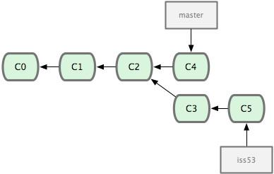
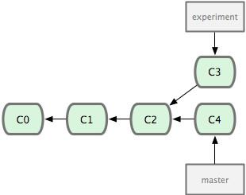
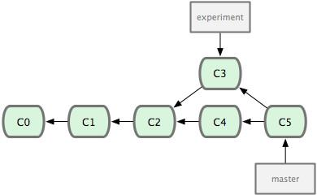
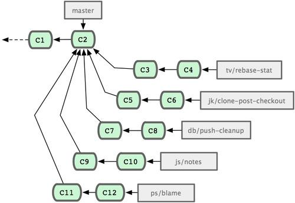
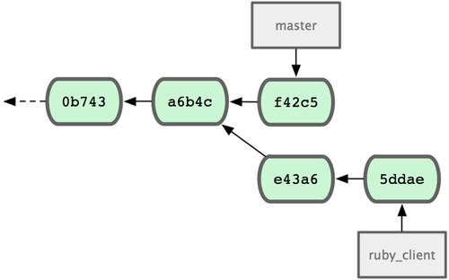
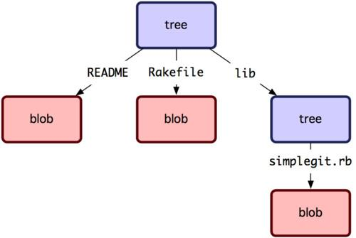

Pro Git — профессиональный контроль версий
Введение
Эта глава о том, как начать работу с Git'ом. Сначала мы расскажем о происхождении инструментов для контроля версий, затем — как установить и запустить Git на вашей машине и наконец, как настроить его так, чтоб можно было приступить к работе. К концу этой главы вы будете понимать, зачем Git вообще сделан, почему вам стоит им пользоваться, и будете готовы начать с ним работать.
О контроле версий
Что такое контроль версий, и зачем он вам нужен? Система контроля версий (СКВ) — это система, регистрирующая изменения в одном или нескольких файлах с тем, чтобы в дальнейшем была возможность вернуться к определённым старым версиям этих файлов. Для примеров в этой книге мы будем использовать исходные коды программ, но на самом деле под версионный контроль можно поместить файлы практически любого типа.
Если вы графический или веб-дизайнер и хотели бы хранить каждую версию изображения или макета — а этого вам наверняка хочется — то пользоваться системой контроля версий будет очень мудрым решением. СКВ даёт возможность возвращать отдельные файлы к прежнему виду, возвращать к прежнему состоянию весь проект, просматривать происходящие со временем изменения, определять, кто последним вносил изменения во внезапно переставший работать модуль, кто и когда внёс в код какую-то ошибку, и многое другое. Вообще, если, пользуясь СКВ, вы всё испортите или потеряете файлы, всё можно будет легко восстановить. Вдобавок, накладные расходы за всё, что вы получаете, будут очень маленькими.
Локальные системы контроля версий
Многие предпочитают контролировать версии, просто копируя файлы в другой каталог (как правило добавляя текущую дату к названию каталога). Такой подход очень распространён, потому что прост, но он и чаще даёт сбои. Очень легко забыть, что ты не в том каталоге, и случайно изменить не тот файл, либо скопировать файлы не туда, куда хотел, и затереть нужные файлы.
Чтобы решить эту проблему, программисты уже давно разработали локальные СКВ с простой базой данных, в которой хранятся все изменения нужных файлов (см. рисунок 1-1).
Одной из наиболее популярных СКВ такого типа является rcs, которая до сих пор устанавливается на многие компьютеры. Даже в современной операционной системе Mac OS X утилита rcs устанавливается вместе с Developer Tools. Эта утилита основана на работе с наборами патчей между парами версий (патч — файл, описывающий различие между файлами), которые хранятся в специальном формате на диске. Это позволяет пересоздать любой файл на любой момент времени, последовательно накладывая патчи.
Централизованные системы контроля версий
Следующей основной проблемой оказалась необходимость сотрудничать с разработчиками за другими компьютерами. Чтобы решить её, были созданы централизованные системы контроля версий (ЦСКВ). В таких системах, например CVS, Subversion и Perforce, есть центральный сервер, на котором хранятся все файлы под версионным контролем, и ряд клиентов, которые получают копии файлов из него. Много лет это было стандартом для систем контроля версий (см. рис. 1-2).
Такой подход имеет множество преимуществ, особенно над локальными СКВ. К примеру, все знают, кто и чем занимается в проекте. У администраторов есть чёткий контроль над тем, кто и что может делать, и, конечно, администрировать ЦСКВ намного легче, чем локальные базы на каждом клиенте.
Однако при таком подходе есть и несколько серьёзных недостатков. Наиболее очевидный — централизованный сервер является уязвимым местом всей системы. Если сервер выключается на час, то в течение часа разработчики не могут взаимодействовать, и никто не может сохранить новой версии своей работы. Если же повреждается диск с центральной базой данных и нет резервной копии, вы теряете абсолютно всё — всю историю проекта, разве что за исключением нескольких рабочих версий, сохранившихся на рабочих машинах пользователей. Локальные системы контроля версий подвержены той же проблеме: если вся история проекта хранится в одном месте, вы рискуете потерять всё.
Распределённые системы контроля версий
И в этой ситуации в игру вступают распределённые системы контроля версий (РСКВ). В таких системах как Git, Mercurial, Bazaar или Darcs клиенты не просто выгружают последние версии файлов, а полностью копируют весь репозиторий. Поэтому в случае, когда "умирает" сервер, через который шла работа, любой клиентский репозиторий может быть скопирован обратно на сервер, чтобы восстановить базу данных. Каждый раз, когда клиент забирает свежую версию файлов, он создаёт себе полную копию всех данных (см. рисунок 1-3).
Кроме того, в большей части этих систем можно работать с несколькими удалёнными репозиториями, таким образом, можно одновременно работать по-разному с разными группами людей в рамках одного проекта. Так, в одном проекте можно одновременно вести несколько типов рабочих процессов, что невозможно в централизованных системах.
Краткая история Git
Как и многие замечательные вещи, Git начинался с, в некотором роде, разрушения во имя созидания и жарких споров. Ядро Linux — действительно очень большой открытый проект. Бо́льшую часть существования ядра Linux (1991-2002) изменения к нему распространялись в виде патчей и заархивированных файлов. В 2002 году проект перешёл на проприетарную РСКВ BitKeeper.
В 2005 году отношения между сообществом разработчиков ядра Linux и компанией, разрабатывавшей BitKeeper, испортились, и право бесплатного пользования продуктом было отменено. Это подтолкнуло разработчиков Linux (и в частности Линуса Торвальдса, создателя Linux) разработать собственную систему, основываясь на опыте, полученном за время использования BitKeeper. Основные требования к новой системе были следующими:
- Скорость
- Простота дизайна
- Поддержка нелинейной разработки (тысячи параллельных веток)
- Полная распределённость
- Возможность эффективной работы с такими большими проектами, как ядро Linux (как по скорости, так и по размеру данных)
С момента рождения в 2005 году Git развивался и эволюционировал, становясь проще и удобнее в использовании, сохраняя при этом свои первоначальные качества. Он невероятно быстр, очень эффективен для больших проектов, а также обладает превосходной системой ветвления для нелинейной разработки (см. главу 3).
Основы Git
Так что же такое Git в двух словах? Эту часть важно усвоить, поскольку если вы поймёте, что такое Git, и каковы принципы его работы, вам будет гораздо проще пользоваться им эффективно. Изучая Git, постарайтесь освободиться от всего, что вы знали о других СКВ, таких как Subversion или Perforce. В Git'е совсем не такие понятия об информации и работе с ней как в других системах, хотя пользовательский интерфейс очень похож. Знание этих различий защитит вас от путаницы при использовании Git'а.
Слепки вместо патчей
Главное отличие Git'а от любых других СКВ (например, Subversion и ей подобных) — это то, как Git смотрит на свои данные. В принципе, большинство других систем хранит информацию как список изменений (патчей) для файлов. Эти системы (CVS, Subversion, Perforce, Bazaar и другие) относятся к хранимым данным как к набору файлов и изменений, сделанных для каждого из этих файлов во времени, как показано на рисунке 1-4.
Git не хранит свои данные в таком виде. Вместо этого Git считает хранимые данные набором слепков небольшой файловой системы. Каждый раз, когда вы фиксируете текущую версию проекта, Git, по сути, сохраняет слепок того, как выглядят все файлы проекта на текущий момент. Ради эффективности, если файл не менялся, Git не сохраняет файл снова, а делает ссылку на ранее сохранённый файл. То, как Git подходит к хранению данных, похоже на рисунок 1-5.
Это важное отличие Git'а от практически всех других систем контроля версий. Из-за него Git вынужден пересмотреть практически все аспекты контроля версий, которые другие системы переняли от своих предшественниц. Git больше похож на небольшую файловую систему с невероятно мощными инструментами, работающими поверх неё, чем на просто СКВ. В главе 3, коснувшись работы с ветвями в Git'е, мы узнаем, какие преимущества даёт такое понимание данных.
Почти все операции — локальные
Для совершения большинства операций в Git'е необходимы только локальные файлы и ресурсы, т.е. обычно информация с других компьютеров в сети не нужна. Если вы пользовались централизованными системами, где практически на каждую операцию накладывается сетевая задержка, вы, возможно, подумаете, что боги наделили Git неземной силой. Поскольку вся история проекта хранится локально у вас на диске, большинство операций кажутся практически мгновенными.
К примеру, чтобы показать историю проекта, Git'у не нужно скачивать её с сервера, он просто читает её прямо из вашего локального репозитория. Поэтому историю вы увидите практически мгновенно. Если вам нужно просмотреть изменения между текущей версией файла и версией, сделанной месяц назад, Git может взять файл месячной давности и вычислить разницу на месте, вместо того чтобы запрашивать разницу у СКВ-сервера или качать с него старую версию файла и делать локальное сравнение.
Кроме того, работа локально означает, что мало чего нельзя сделать без доступа к Сети или VPN. Если вы в самолёте или в поезде и хотите немного поработать, можно спокойно делать коммиты, а затем отправить их, как только станет доступна сеть. Если вы пришли домой, а VPN-клиент не работает, всё равно можно продолжать работать. Во многих других системах это невозможно или же крайне неудобно. Например, используя Perforce, вы мало что можете сделать без соединения с сервером. Работая с Subversion и CVS, вы можете редактировать файлы, но сохранить изменения в вашу базу данных нельзя (потому что она отключена от репозитория). Вроде ничего серьёзного, но потом вы удивитесь, насколько это меняет дело.
Git следит за целостностью данных
Перед сохранением любого файла Git вычисляет контрольную сумму, и она становится индексом этого файла. Поэтому невозможно изменить содержимое файла или каталога так, чтобы Git не узнал об этом. Эта функциональность встроена в сам фундамент Git'а и является важной составляющей его философии. Если информация потеряется при передаче или повредится на диске, Git всегда это выявит.
Механизм, используемый Git'ом для вычисления контрольных сумм, называется SHA-1 хешем. Это строка из 40 шестнадцатеричных символов (0-9 и a-f), вычисляемая в Git'е на основе содержимого файла или структуры каталога. SHA-1 хеш выглядит примерно так:
24b9da6552252987aa493b52f8696cd6d3b00373
Работая с Git'ом, вы будете встречать эти хеши повсюду, поскольку он их очень широко использует. Фактически, в своей базе данных Git сохраняет всё не по именам файлов, а по хешам их содержимого.
Чаще всего данные в Git только добавляются
Практически все действия, которые вы совершаете в Git'е, только добавляют данные в базу. Очень сложно заставить систему удалить данные или сделать что-то неотменяемое. Можно, как и в любой другой СКВ, потерять данные, которые вы ещё не сохранили, но как только они зафиксированы, их очень сложно потерять, особенно если вы регулярно отправляете изменения в другой репозиторий.
Поэтому пользоваться Git'ом — удовольствие, потому что можно экспериментировать, не боясь что-то серьёзно поломать. Чтобы узнать подробнее о том, как Git хранит свои данные и как восстановить то, что кажется уже потерянным, читайте главу 9.
Три состояния
Теперь внимание. Это самое важное, что нужно помнить про Git, если вы хотите, чтобы дальше изучение шло гладко. В Git'е файлы могут находиться в одном из трёх состояний: зафиксированном, изменённом и подготовленном. "Зафиксированный" значит, что файл уже сохранён в вашей локальной базе. К изменённым относятся файлы, которые поменялись, но ещё не были зафиксированы. Подготовленные файлы — это изменённые файлы, отмеченные для включения в следующий коммит.
Таким образом, в проектах, использующих Git, есть три части: каталог Git'а (Git directory), рабочий каталог (working directory) и область подготовленных файлов (staging area).
Каталог Git'а — это место, где Git хранит метаданные и базу данных объектов вашего проекта. Это наиболее важная часть Git'а, и именно она копируется, когда вы клонируете репозиторий с другого компьютера.
Рабочий каталог — это извлечённая из базы копия определённой версии проекта. Эти файлы достаются из сжатой базы данных в каталоге Git'а и помещаются на диск для того, чтобы вы их просматривали и редактировали.
Область подготовленных файлов — это обычный файл, обычно хранящийся в каталоге Git'а, который содержит информацию о том, что должно войти в следующий коммит. Иногда его называют индексом (index), но в последнее время становится стандартом называть его областью подготовленных файлов (staging area).
Стандартный рабочий процесс с использованием Git'а выглядит примерно так:
- Вы вносите изменения в файлы в своём рабочем каталоге.
- Подготавливаете файлы, добавляя их слепки в область подготовленных файлов.
- Делаете коммит, который берёт подготовленные файлы из индекса и помещает их в каталог Git'а на постоянное хранение.
Если рабочая версия файла совпадает с версией в каталоге Git'а, файл считается зафиксированным. Если файл изменён, но добавлен в область подготовленных данных, он подготовлен. Если же файл изменился после выгрузки из БД, но не был подготовлен, то он считается изменённым. В главе 2 вы узнаете больше об этих трёх состояниях и как можно либо воспользоваться этим, либо пропустить стадию подготовки.
Установка Git
Настало время немного ознакомиться с использованием Git'а. Первое, что вам необходимо сделать, — установить его. Есть несколько способов сделать это; два основных — установка из исходников и установка собранного пакета для вашей платформы.
Установка из исходников
Если есть возможность, то, как правило, лучше установить Git из исходных кодов, поскольку так вы получите самую свежую версию. Каждая новая версия Git'а обычно включает полезные улучшения пользовательского интерфейса, поэтому получение последней версии — часто лучший путь, если, конечно, вас не затрудняет установка программ из исходников. К тому же, многие дистрибутивы Linux содержат очень старые пакеты. Поэтому, если только вы не на очень свежем дистрибутиве или используете пакеты из экспериментальной ветки, установка из исходников может быть самым выигрышным решением.
Для установки Git'а вам понадобятся библиотеки, от которых он зависит: curl, zlib, openssl, expat и libiconv. Например, если в вашей системе менеджер пакетов — yum (Fedora), или apt-get (Debian, Ubuntu), можно воспользоваться следующими командами, чтобы разрешить все зависимости:
$ yum install curl-devel expat-devel gettext-devel \
openssl-devel zlib-devel
$ apt-get install libcurl4-gnutls-dev libexpat1-dev gettext \
libz-dev libssl-dev
Установив все необходимые библиотеки, можно идти дальше и скачать последнюю версию с сайта Git'а:
http://git-scm.com/download
Теперь скомпилируйте и установите:
$ tar -zxf git-1.7.2.2.tar.gz
$ cd git-1.7.2.2
$ make prefix=/usr/local all
$ sudo make prefix=/usr/local install
После этого вы можете скачать Git с помощью самого Git'а, чтобы получить обновления:
$ git clone git://git.kernel.org/pub/scm/git/git.git
Установка в Linux
Если вы хотите установить Git под Linux как бинарный пакет, это можно сделать, используя обычный менеджер пакетов вашего дистрибутива. Если у вас Fedora, можно воспользоваться yum'ом:
$ yum install git-core
Если же у вас дистрибутив, основанный на Debian, например, Ubuntu, попробуйте apt-get:
$ apt-get install git
Установка на Mac
Есть два простых способа установить Git на Mac. Самый простой — использовать графический инсталлятор Git'а, который вы можете скачать со страницы на Google Code (см. рисунок 1-7):
http://code.google.com/p/git-osx-installer
Другой распространённый способ установки Git'а — через MacPorts (http://www.macports.org). Если у вас установлен MacPorts, установите Git так:
$ sudo port install git-core +svn +doc +bash_completion +gitweb
Вам не обязательно устанавливать все дополнения, но, вероятно, вам понадобится +svn, если вы когда-нибудь захотите использовать Git вместе с репозиториями Subversion (см. главу 8).
Установка в Windows
Установить Git в Windows очень просто. У проекта msysGit процедура установки — одна из самых простых. Просто скачайте exe-файл инсталлятора со страницы проекта на GitHub'е и запустите его:
http://msysgit.github.com/
После установки у вас будет как консольная версия (включающая SSH-клиент, который пригодится позднее), так и стандартная графическая.
Пожалуйста, используйте Git только из командой оболочки, входящей в состав msysGit, потому что так вы сможете запускать сложные команды, приведённые в примерах в настоящей книге. Командная оболочка Windows использует иной синтаксис, из-за чего примеры в ней могут работать некорректно.
Первоначальная настройка Git
Теперь, когда Git установлен в вашей системе, хотелось бы сделать кое-какие вещи, чтобы настроить среду для работы с Git'ом под себя. Это нужно сделать только один раз — при обновлении версии Git'а настройки сохранятся. Но вы можете поменять их в любой момент, выполнив те же команды снова.
В состав Git'а входит утилита git config, которая позволяет просматривать и устанавливать параметры, контролирующие все аспекты работы Git'а и его внешний вид. Эти параметры могут быть сохранены в трёх местах:
- Файл /etc/gitconfig содержит значения, общие для всех пользователей системы и для всех их репозиториев. Если при запуске git config указать параметр --system, то параметры будут читаться и сохраняться именно в этот файл.
- Файл ~/.gitconfig хранит настройки конкретного пользователя. Этот файл используется при указании параметра --global.
- Конфигурационный файл в каталоге Git'а (.git/config) в том репозитории, где вы находитесь в данный момент. Эти параметры действуют только для данного конкретного репозитория. Настройки на каждом следующем уровне подменяют настройки из предыдущих уровней, то есть значения в .git/config перекрывают соответствующие значения в /etc/gitconfig.
В системах семейства Windows Git ищет файл .gitconfig в каталоге $HOME (C:\Documents and Settings\$USER или C:\Users\$USER для большинства пользователей). Кроме того Git ищет файл /etc/gitconfig, но уже относительно корневого каталога MSys, который находится там, куда вы решили установить Git, когда запускали инсталлятор.
Имя пользователя
Первое, что вам следует сделать после установки Git'а, — указать ваше имя и адрес электронной почты. Это важно, потому что каждый коммит в Git'е содержит эту информацию, и она включена в коммиты, передаваемые вами, и не может быть далее изменена:
$ git config --global user.name "John Doe"
$ git config --global user.email johndoe@example.com
Повторюсь, что, если указана опция --global, то эти настройки достаточно сделать только один раз, поскольку в этом случае Git будет использовать эти данные для всего, что вы делаете в этой системе. Если для каких-то отдельных проектов вы хотите указать другое имя или электронную почту, можно выполнить эту же команду без параметра --global в каталоге с нужным проектом.
Выбор редактора
Вы указали своё имя, и теперь можно выбрать текстовый редактор, который будет использоваться, если будет нужно набрать сообщение в Git'е. По умолчанию Git использует стандартный редактор вашей системы, обычно это Vi или Vim. Если вы хотите использовать другой текстовый редактор, например, Emacs, можно сделать следующее:
$ git config --global core.editor emacs
Утилита сравнения
Другая полезная настройка, которая может понадобиться — встроенная diff-утилита, которая будет использоваться для разрешения конфликтов слияния. Например, если вы хотите использовать vimdiff:
$ git config --global merge.tool vimdiff
Git умеет делать слияния при помощи kdiff3, tkdiff, meld, xxdiff, emerge, vimdiff, gvimdiff, ecmerge и opendiff, но вы можете настроить и другую утилиту. Подробнее об этом написано в главе 7.
Проверка настроек
Если вы хотите проверить используемые настройки, можете использовать команду git config --list, чтобы показать все, которые Git найдёт:
$ git config --list
user.name=Scott Chacon
user.email=schacon@gmail.com
color.status=auto
color.branch=auto
color.interactive=auto
color.diff=auto
...
Некоторые ключи (названия) настроек могут появиться несколько раз, потому что Git читает один и тот же ключ из разных файлов (например из /etc/gitconfig и ~/.gitconfig). В этом случае Git использует последнее значение для каждого ключа.
Также вы можете проверить значение конкретного ключа, выполнив git config {ключ}:
$ git config user.name
Scott Chacon
Как получить помощь?
Если вам нужна помощь при использовании Git'а, есть три способа открыть страницу руководства по любой команде Git'а:
$ git help <команда>
$ git <команда> --help
$ man git-<команда>
Например, так можно открыть руководство по команде config:
$ git help config
Эти команды хороши тем, что ими можно пользоваться всегда, даже без подключения к сети. Если руководства и этой книги недостаточно и вам нужна персональная помощь, вы можете попытаться поискать её на каналах #git и #github IRC-сервера Freenode (irc.freenode.net). Обычно там сотни людей, отлично знающих Git, которые могут помочь.
Итоги
Теперь у вас должно быть общее понимание, что такое Git, и в чём его отличие от тех ЦСКВ, которыми вы, вероятно, пользовались раньше. Также у вас должна быть установлена рабочая версия Git'а с вашими личными настройками. Настало время перейти к изучению основ Git'а.
Основы Git
Если вы хотите начать работать с Git'ом, прочитав всего одну главу, то эта глава — то, что вам нужно. Здесь рассмотрены все базовые команды, необходимые вам для решения подавляющего большинства задач возникающих при работе с Git'ом. После прочтения этой главы вы научитесь настраивать и инициализировать репозиторий, начинать и прекращать версионный контроль файлов, а также подготавливать и фиксировать изменения. Мы также продемонстрируем вам как настроить в Git'е игнорирование отдельных файлов или их групп, как быстро и просто отменить ошибочные изменения, как просмотреть историю вашего проекта и изменения между отдельными коммитами (commit), а также как отправлять (push) и получать (pull) изменения в/из удалённого (remote) репозитория.
Создание Git-репозитория
Для создания Git-репозитория существуют два основных подхода. Первый подход — импорт в Git уже существующего проекта или каталога. Второй — клонирование уже существующего репозитория с сервера.
Создание репозитория в существующем каталоге
Если вы собираетесь начать использовать Git для существующего проекта, то вам необходимо перейти в проектный каталог и в командной строке ввести
$ git init
Эта команда создаёт в текущем каталоге новый подкаталог с именем .git содержащий все необходимые файлы репозитория — основу Git-репозитория. На этом этапе ваш проект ещё не находится под версионным контролем. (В главе 9 приведено подробное описание файлов содержащихся в только что созданном вами каталоге .git)
Если вы хотите добавить под версионный контроль существующие файлы (в отличие от пустого каталога), вам стоит проиндексировать эти файлы и осуществить первую фиксацию изменений. Осуществить это вы можете с помощью нескольких команд git add указывающих индексируемые файлы, а затем commit:
$ git add *.c
$ git add README
$ git commit -m 'initial project version'
Мы разберём, что делают эти команды чуть позже. На данном этапе, у вас есть Git-репозиторий с добавленными файлами и начальным коммитом.
Клонирование существующего репозитория
Если вы желаете получить копию существующего репозитория Git, например, проекта, в котором вы хотите поучаствовать, то вам нужна команда git clone. Если вы знакомы с другими системами контроля версий, такими как Subversion, то заметите, что команда называется clone, а не checkout. Это важное отличие — Git получает копию практически всех данных, что есть на сервере. Каждая версия каждого файла из истории проекта забирается (pulled) с сервера, когда вы выполняете git clone. Фактически, если серверный диск выйдет из строя, вы можете использовать любой из клонов на любом из клиентов, для того чтобы вернуть сервер в то состояние, в котором он находился в момент клонирования (вы можете потерять часть серверных перехватчиков (server-side hooks) и т.п., но все данные, помещённые под версионный контроль, будут сохранены, подробнее см. в главе 4).
Клонирование репозитория осуществляется командой git clone [url]. Например, если вы хотите клонировать библиотеку Ruby Git, известную как Grit, вы можете сделать это следующим образом:
$ git clone git://github.com/schacon/grit.git
Эта команда создаёт каталог с именем grit, инициализирует в нём каталог .git, скачивает все данные для этого репозитория и создаёт (checks out) рабочую копию последней версии. Если вы зайдёте в новый каталог grit, вы увидите в нём проектные файлы, пригодные для работы и использования. Если вы хотите клонировать репозиторий в каталог, отличный от grit, можно это указать в следующем параметре командной строки:
$ git clone git://github.com/schacon/grit.git mygrit
Эта команда делает всё то же самое, что и предыдущая, только результирующий каталог будет назван mygrit.
В Git'е реализовано несколько транспортных протоколов, которые вы можете использовать. В предыдущем примере использовался протокол git://, вы также можете встретить http(s):// или user@server:/path.git, использующий протокол передачи SSH. В главе 4 мы познакомимся со всеми доступными вариантами конфигурации сервера для обеспечения доступа к вашему Git-репозиторию, а также рассмотрим их достоинства и недостатки.
Запись изменений в репозиторий
Итак, у вас имеется настоящий Git-репозиторий и рабочая копия файлов для некоторого проекта. Вам нужно делать некоторые изменения и фиксировать “снимки” состояния (snapshots) этих изменений в вашем репозитории каждый раз, когда проект достигает состояния, которое вам хотелось бы сохранить.
Запомните, каждый файл в вашем рабочем каталоге может находиться в одном из двух состояний: под версионным контролем (отслеживаемые) и нет (неотслеживаемые). Отслеживаемые файлы — это те файлы, которые были в последнем слепке состояния проекта (snapshot); они могут быть неизменёнными, изменёнными или подготовленными к коммиту (staged). Неотслеживаемые файлы — это всё остальное, любые файлы в вашем рабочем каталоге, которые не входили в ваш последний слепок состояния и не подготовлены к коммиту. Когда вы впервые клонируете репозиторий, все файлы будут отслеживаемыми и неизменёнными, потому что вы только взяли их из хранилища (checked them out) и ничего пока не редактировали.
Как только вы отредактируете файлы, Git будет рассматривать их как изменённые, т.к. вы изменили их с момента последнего коммита. Вы индексируете (stage) эти изменения и затем фиксируете все индексированные изменения, а затем цикл повторяется. Этот жизненный цикл изображён на рисунке 2-1.
Определение состояния файлов
Основной инструмент, используемый для определения, какие файлы в каком состоянии находятся — это команда git status. Если вы выполните эту команду сразу после клонирования, вы увидите что-то вроде этого:
$ git status
# On branch master
nothing to commit (working directory clean)
Это означает, что у вас чистый рабочий каталог, другими словами — в нём нет отслеживаемых изменённых файлов. Git также не обнаружил неотслеживаемых файлов, в противном случае они бы были перечислены здесь. И наконец, команда сообщает вам на какой ветке (branch) вы сейчас находитесь. Пока что это всегда ветка master — это ветка по умолчанию; в этой главе это не важно. В следующей главе будет подробно рассказано про ветки и ссылки.
Предположим, вы добавили в свой проект новый файл, простой файл README. Если этого файла раньше не было, и вы выполните git status, вы увидите свой неотслеживаемый файл вот так:
$ vim README
$ git status
# On branch master
# Untracked files:
# (use "git add <file>..." to include in what will be committed)
#
# README
nothing added to commit but untracked files present (use "git add" to track)
Понять, что новый файл README неотслеживаемый можно по тому, что он находится в секции "Untracked files" в выводе команды status. Статус "неотслеживаемый файл", по сути, означает, что Git видит файл, отсутствующий в предыдущем снимке состояния (коммите); Git не станет добавлять его в ваши коммиты, пока вы его явно об этом не попросите. Это предохранит вас от случайного добавления в репозиторий сгенерированных бинарных файлов или каких-либо других, которые вы и не думали добавлять. Мы хотели добавить README, так давайте сделаем это.
Отслеживание новых файлов
Для того чтобы начать отслеживать (добавить под версионный контроль) новый файл, используется команда git add. Чтобы начать отслеживание файла README, вы можете выполнить следующее:
$ git add README
Если вы снова выполните команду status, то увидите, что файл README теперь отслеживаемый и индексированный:
$ git status
# On branch master
# Changes to be committed:
# (use "git reset HEAD <file>..." to unstage)
#
# new file: README
#
Вы можете видеть, что файл проиндексирован по тому, что он находится в секции “Changes to be committed”. Если вы выполните коммит в этот момент, то версия файла, существовавшая на момент выполнения вами команды git add, будет добавлена в историю снимков состояния. Как вы помните, когда вы ранее выполнили git init, вы затем выполнили git add (файлы) — это было сделано для того, чтобы добавить файлы в вашем каталоге под версионный контроль. Команда git add принимает параметром путь к файлу или каталогу, если это каталог, команда рекурсивно добавляет (индексирует) все файлы в данном каталоге.
Индексация изменённых файлов
Давайте модифицируем файл, уже находящийся под версионным контролем. Если вы измените отслеживаемый файл benchmarks.rb и после этого снова выполните команду status, то результат будет примерно следующим:
$ git status
# On branch master
# Changes to be committed:
# (use "git reset HEAD <file>..." to unstage)
#
# new file: README
#
# Changes not staged for commit:
# (use "git add <file>..." to update what will be committed)
#
# modified: benchmarks.rb
#
Файл benchmarks.rb находится в секции “Changes not staged for commit” — это означает, что отслеживаемый файл был изменён в рабочем каталоге, но пока не проиндексирован. Чтобы проиндексировать его, необходимо выполнить команду git add (это многофункциональная команда, она используется для добавления под версионный контроль новых файлов, для индексации изменений, а также для других целей, например для указания файлов с исправленным конфликтом слияния). Выполним git add, чтобы проиндексировать benchmarks.rb, а затем снова выполним git status:
$ git add benchmarks.rb
$ git status
# On branch master
# Changes to be committed:
# (use "git reset HEAD <file>..." to unstage)
#
# new file: README
# modified: benchmarks.rb
#
Теперь оба файла проиндексированы и войдут в следующий коммит. В этот момент вы, предположим, вспомнили одно небольшое изменение, которое вы хотите сделать в benchmarks.rb до фиксации. Вы открываете файл, вносите и сохраняете необходимые изменения и вроде бы готовы к коммиту. Но давайте-ка ещё раз выполним git status:
$ vim benchmarks.rb
$ git status
# On branch master
# Changes to be committed:
# (use "git reset HEAD <file>..." to unstage)
#
# new file: README
# modified: benchmarks.rb
#
# Changes not staged for commit:
# (use "git add <file>..." to update what will be committed)
#
# modified: benchmarks.rb
#
Что за чёрт? Теперь benchmarks.rb отображается как проиндексированный и непроиндексированный одновременно. Как такое возможно? Такая ситуация наглядно демонстрирует, что Git индексирует файл в точности в том состоянии, в котором он находился, когда вы выполнили команду git add. Если вы выполните коммит сейчас, то файл benchmarks.rb попадёт в коммит в том состоянии, в котором он находился, когда вы последний раз выполняли команду git add, а не в том, в котором он находится в вашем рабочем каталоге в момент выполнения git commit. Если вы изменили файл после выполнения git add, вам придётся снова выполнить git add, чтобы проиндексировать последнюю версию файла:
$ git add benchmarks.rb
$ git status
# On branch master
# Changes to be committed:
# (use "git reset HEAD <file>..." to unstage)
#
# new file: README
# modified: benchmarks.rb
#
Игнорирование файлов
Зачастую, у вас имеется группа файлов, которые вы не только не хотите автоматически добавлять в репозиторий, но и видеть в списках неотслеживаемых. К таким файлам обычно относятся автоматически генерируемые файлы (различные логи, результаты сборки программ и т.п.). В таком случае, вы можете создать файл .gitignore с перечислением шаблонов соответствующих таким файлам. Вот пример файла .gitignore:
$ cat .gitignore
*.[oa]
*~
Первая строка предписывает Git'у игнорировать любые файлы заканчивающиеся на .o или .a — объектные и архивные файлы, которые могут появиться во время сборки кода. Вторая строка предписывает игнорировать все файлы заканчивающиеся на тильду (~), которая используется во многих текстовых редакторах, например Emacs, для обозначения временных файлов. Вы можете также включить каталоги log, tmp или pid; автоматически создаваемую документацию; и т.д. и т.п. Хорошая практика заключается в настройке файла .gitignore до того, как начать серьёзно работать, это защитит вас от случайного добавления в репозиторий файлов, которых вы там видеть не хотите.
К шаблонам в файле .gitignore применяются следующие правила:
- Пустые строки, а также строки, начинающиеся с #, игнорируются.
- Можно использовать стандартные glob шаблоны.
- Можно заканчивать шаблон символом слэша (/) для указания каталога.
- Можно инвертировать шаблон, использовав восклицательный знак (!) в качестве первого символа.
Glob-шаблоны представляют собой упрощённые регулярные выражения используемые командными интерпретаторами. Символ * соответствует 0 или более символам; последовательность [abc] — любому символу из указанных в скобках (в данном примере a, b или c); знак вопроса (?) соответствует одному символу; [0-9] соответствует любому символу из интервала (в данном случае от 0 до 9).
Вот ещё один пример файла .gitignore:
# комментарий — эта строка игнорируется
# не обрабатывать файлы, имя которых заканчивается на .a
*.a
# НО отслеживать файл lib.a, несмотря на то, что мы игнорируем все .a файлы с помощью предыдущего правила
!lib.a
# игнорировать только файл TODO находящийся в корневом каталоге, не относится к файлам вида subdir/TODO
/TODO
# игнорировать все файлы в каталоге build/
build/
# игнорировать doc/notes.txt, но не doc/server/arch.txt
doc/*.txt
# игнорировать все .txt файлы в каталоге doc/
doc/**/*.txt
Шаблон **/ доступен в Git, начиная с версии 1.8.2.
Просмотр индексированных и неиндексированных изменений
Если результат работы команды git status недостаточно информативен для вас — вам хочется знать, что конкретно поменялось, а не только какие файлы были изменены — вы можете использовать команду git diff. Позже мы рассмотрим команду git diff подробнее; вы, скорее всего, будете использовать эту команду для получения ответов на два вопроса: что вы изменили, но ещё не проиндексировали, и что вы проиндексировали и собираетесь фиксировать. Если git status отвечает на эти вопросы слишком обобщённо, то git diff показывает вам непосредственно добавленные и удалённые строки — собственно заплатку (patch).
Допустим, вы снова изменили и проиндексировали файл README, а затем изменили файл benchmarks.rb без индексирования. Если вы выполните команду status, вы опять увидите что-то вроде:
$ git status
# On branch master
# Changes to be committed:
# (use "git reset HEAD <file>..." to unstage)
#
# new file: README
#
# Changes not staged for commit:
# (use "git add <file>..." to update what will be committed)
#
# modified: benchmarks.rb
#
Чтобы увидеть, что же вы изменили, но пока не проиндексировали, наберите git diff без аргументов:
$ git diff
diff --git a/benchmarks.rb b/benchmarks.rb
index 3cb747f..da65585 100644
--- a/benchmarks.rb
+++ b/benchmarks.rb
@@ -36,6 +36,10 @@ def main
@commit.parents[0].parents[0].parents[0]
end
+ run_code(x, 'commits 1') do
+ git.commits.size
+ end
+
run_code(x, 'commits 2') do
log = git.commits('master', 15)
log.size
Эта команда сравнивает содержимое вашего рабочего каталога с содержимым индекса. Результат показывает ещё не проиндексированные изменения.
Если вы хотите посмотреть, что вы проиндексировали и что войдёт в следующий коммит, вы можете выполнить git diff --cached. (В Git'е версии 1.6.1 и выше, вы также можете использовать git diff --staged, которая легче запоминается.) Эта команда сравнивает ваши индексированные изменения с последним коммитом:
$ git diff --cached
diff --git a/README b/README
new file mode 100644
index 0000000..03902a1
--- /dev/null
+++ b/README2
@@ -0,0 +1,5 @@
+grit
+ by Tom Preston-Werner, Chris Wanstrath
+ http://github.com/mojombo/grit
+
+Grit is a Ruby library for extracting information from a Git repository
Важно отметить, что git diff сама по себе не показывает все изменения сделанные с последнего коммита — только те, что ещё не проиндексированы. Такое поведение может сбивать с толку, так как если вы проиндексируете все свои изменения, то git diff ничего не вернёт.
Другой пример: вы проиндексировали файл benchmarks.rb и затем изменили его, вы можете использовать git diff для просмотра как индексированных изменений в этом файле, так и тех, что пока не проиндексированы:
$ git add benchmarks.rb
$ echo '# test line' >> benchmarks.rb
$ git status
# On branch master
#
# Changes to be committed:
#
# modified: benchmarks.rb
#
# Changes not staged for commit:
#
# modified: benchmarks.rb
#
Теперь вы можете используя git diff посмотреть непроиндексированные изменения
$ git diff
diff --git a/benchmarks.rb b/benchmarks.rb
index e445e28..86b2f7c 100644
--- a/benchmarks.rb
+++ b/benchmarks.rb
@@ -127,3 +127,4 @@ end
main()
##pp Grit::GitRuby.cache_client.stats
+# test line
а также уже проиндексированные, используя git diff --cached:
$ git diff --cached
diff --git a/benchmarks.rb b/benchmarks.rb
index 3cb747f..e445e28 100644
--- a/benchmarks.rb
+++ b/benchmarks.rb
@@ -36,6 +36,10 @@ def main
@commit.parents[0].parents[0].parents[0]
end
+ run_code(x, 'commits 1') do
+ git.commits.size
+ end
+
run_code(x, 'commits 2') do
log = git.commits('master', 15)
log.size
Фиксация изменений
Теперь, когда ваш индекс настроен так, как вам и хотелось, вы можете зафиксировать свои изменения. Запомните, всё, что до сих пор не проиндексировано — любые файлы, созданные или изменённые вами, и для которых вы не выполнили git add после момента редактирования — не войдут в этот коммит. Они останутся изменёнными файлами на вашем диске. В нашем случае, когда вы в последний раз выполняли git status, вы видели что всё проиндексировано, и вот, вы готовы к коммиту. Простейший способ зафиксировать изменения — это набрать git commit:
$ git commit
Эта команда откроет выбранный вами текстовый редактор. (Редактор устанавливается системной переменной $EDITOR — обычно это vim или emacs, хотя вы можете установить ваш любимый с помощью команды git config --global core.editor, как было показано в главе 1).
В редакторе будет отображён следующий текст (это пример окна Vim'а):
# Please enter the commit message for your changes. Lines starting
# with '#' will be ignored, and an empty message aborts the commit.
# On branch master
# Changes to be committed:
# (use "git reset HEAD <file>..." to unstage)
#
# new file: README
# modified: benchmarks.rb
~
~
~
".git/COMMIT_EDITMSG" 10L, 283C
Вы можете видеть, что комментарий по умолчанию для коммита содержит закомментированный результат работы ("выхлоп") команды git status и ещё одну пустую строку сверху. Вы можете удалить эти комментарии и набрать своё сообщение или же оставить их для напоминания о том, что вы фиксируете. (Для ещё более подробного напоминания, что же именно вы поменяли, можете передать аргумент -v в команду git commit. Это приведёт к тому, что в комментарий будет также помещена дельта/diff изменений, таким образом вы сможете точно увидеть всё, что сделано.) Когда вы выходите из редактора, Git создаёт для вас коммит с этим сообщением (удаляя комментарии и вывод diff'а).
Есть и другой способ — вы можете набрать свой комментарий к коммиту в командной строке вместе с командой commit, указав его после параметра -m, как в следующем примере:
$ git commit -m "Story 182: Fix benchmarks for speed"
[master]: created 463dc4f: "Fix benchmarks for speed"
2 files changed, 3 insertions(+), 0 deletions(-)
create mode 100644 README
Итак, вы создали свой первый коммит! Вы можете видеть, что коммит вывел вам немного информации о себе: на какую ветку вы выполнили коммит (master), какая контрольная сумма SHA-1 у этого коммита (463dc4f), сколько файлов было изменено, а также статистику по добавленным/удалённым строкам в этом коммите.
Запомните, что коммит сохраняет снимок состояния вашего индекса. Всё, что вы не проиндексировали, так и торчит в рабочем каталоге как изменённое; вы можете сделать ещё один коммит, чтобы добавить эти изменения в репозиторий. Каждый раз, когда вы делаете коммит, вы сохраняете снимок состояния вашего проекта, который позже вы можете восстановить или с которым можно сравнить текущее состояние.
Игнорирование индексации
Несмотря на то, что индекс может быть удивительно полезным для создания коммитов именно такими, как вам и хотелось, он временами несколько сложнее, чем вам нужно в процессе работы. Если у вас есть желание пропустить этап индексирования, Git предоставляет простой способ. Добавление параметра -a в команду git commit заставляет Git автоматически индексировать каждый уже отслеживаемый на момент коммита файл, позволяя вам обойтись без git add:
$ git status
# On branch master
#
# Changes not staged for commit:
#
# modified: benchmarks.rb
#
$ git commit -a -m 'added new benchmarks'
[master 83e38c7] added new benchmarks
1 files changed, 5 insertions(+), 0 deletions(-)
Обратите внимание на то, что в данном случае перед коммитом вам не нужно выполнять git add для файла benchmarks.rb.
Удаление файлов
Для того чтобы удалить файл из Git'а, вам необходимо удалить его из отслеживаемых файлов (точнее, удалить его из вашего индекса) а затем выполнить коммит. Это позволяет сделать команда git rm, которая также удаляет файл из вашего рабочего каталога, так что вы в следующий раз не увидите его как “неотслеживаемый”.
Если вы просто удалите файл из своего рабочего каталога, он будет показан в секции “Changes not staged for commit” (“Изменённые но не обновлённые” — читай не проиндексированные) вывода команды git status:
$ rm grit.gemspec
$ git status
# On branch master
#
# Changes not staged for commit:
# (use "git add/rm <file>..." to update what will be committed)
#
# deleted: grit.gemspec
#
Затем, если вы выполните команду git rm, удаление файла попадёт в индекс:
$ git rm grit.gemspec
rm 'grit.gemspec'
$ git status
# On branch master
#
# Changes to be committed:
# (use "git reset HEAD <file>..." to unstage)
#
# deleted: grit.gemspec
#
После следующего коммита файл исчезнет и больше не будет отслеживаться. Если вы изменили файл и уже проиндексировали его, вы должны использовать принудительное удаление с помощью параметра -f. Это сделано для повышения безопасности, чтобы предотвратить ошибочное удаление данных, которые ещё не были записаны в снимок состояния и которые нельзя восстановить из Git'а.
Другая полезная штука, которую вы можете захотеть сделать — это удалить файл из индекса, оставив его при этом в рабочем каталоге. Другими словами, вы можете захотеть оставить файл на винчестере, и убрать его из-под бдительного ока Git'а. Это особенно полезно, если вы забыли добавить что-то в файл .gitignore и по ошибке проиндексировали, например, большой файл с логами, или кучу промежуточных файлов компиляции. Чтобы сделать это, используйте опцию --cached:
$ git rm --cached readme.txt
В команду git rm можно передавать файлы, каталоги или glob-шаблоны. Это означает, что вы можете вытворять что-то вроде:
$ git rm log/\*.log
Обратите внимание на обратный слэш (\) перед *. Он необходим из-за того, что Git использует свой собственный обработчик имён файлов вдобавок к обработчику вашего командного интерпретатора. Эта команда удаляет все файлы, которые имеют расширение .log в каталоге log/. Или же вы можете сделать вот так:
$ git rm \*~
Эта команда удаляет все файлы, чьи имена заканчиваются на ~.
Перемещение файлов
В отличие от многих других систем версионного контроля, Git не отслеживает перемещение файлов явно. Когда вы переименовываете файл в Git'е, в нём не сохраняется никаких метаданных, говорящих о том, что файл был переименован. Однако, Git довольно умён в плане обнаружения перемещений постфактум — мы рассмотрим обнаружение перемещения файлов чуть позже.
Таким образом, наличие в Git'е команды mv выглядит несколько странным. Если вам хочется переименовать файл в Git'е, вы можете сделать что-то вроде:
$ git mv file_from file_to
и это отлично сработает. На самом деле, если вы выполните что-то вроде этого и посмотрите на статус, вы увидите, что Git считает, что произошло переименование файла:
$ git mv README.txt README
$ git status
# On branch master
# Your branch is ahead of 'origin/master' by 1 commit.
#
# Changes to be committed:
# (use "git reset HEAD <file>..." to unstage)
#
# renamed: README.txt -> README
#
Однако, это эквивалентно выполнению следующих команд:
$ mv README.txt README
$ git rm README.txt
$ git add README
Git неявно определяет, что произошло переименование, поэтому неважно, переименуете вы файл так или используя команду mv. Единственное отличие состоит лишь в том, что mv — это одна команда вместо трёх — это функция для удобства. Важнее другое — вы можете использовать любой удобный способ, чтобы переименовать файл, и затем воспользоваться add/rm перед коммитом.
Просмотр истории коммитов
После того как вы создадите несколько коммитов, или же вы склонируете репозиторий с уже существующей историей коммитов, вы, вероятно, захотите оглянуться назад и узнать, что же происходило с этим репозиторием. Наиболее простой и в то же время мощный инструмент для этого — команда git log.
Данные примеры используют очень простой проект, названный simplegit, который я часто использую для демонстраций. Чтобы получить этот проект, выполните:
git clone git://github.com/schacon/simplegit-progit.git
В результате выполнения git log в данном проекте, вы должны получить что-то вроде этого:
$ git log
commit ca82a6dff817ec66f44342007202690a93763949
Author: Scott Chacon <schacon@gee-mail.com>
Date: Mon Mar 17 21:52:11 2008 -0700
changed the version number
commit 085bb3bcb608e1e8451d4b2432f8ecbe6306e7e7
Author: Scott Chacon <schacon@gee-mail.com>
Date: Sat Mar 15 16:40:33 2008 -0700
removed unnecessary test code
commit a11bef06a3f659402fe7563abf99ad00de2209e6
Author: Scott Chacon <schacon@gee-mail.com>
Date: Sat Mar 15 10:31:28 2008 -0700
first commit
По умолчанию, без аргументов, git log выводит список коммитов созданных в данном репозитории в обратном хронологическом порядке. То есть самые последние коммиты показываются первыми. Как вы можете видеть, эта команда отображает каждый коммит вместе с его контрольной суммой SHA-1, именем и электронной почтой автора, датой создания и комментарием.
Существует превеликое множество параметров команды git log и их комбинаций, для того чтобы показать вам именно то, что вы ищете. Здесь мы покажем вам несколько наиболее часто применяемых.
Один из наиболее полезных параметров — это -p, который показывает дельту (разницу/diff), привнесенную каждым коммитом. Вы также можете использовать -2, что ограничит вывод до 2-х последних записей:
$ git log -p -2
commit ca82a6dff817ec66f44342007202690a93763949
Author: Scott Chacon <schacon@gee-mail.com>
Date: Mon Mar 17 21:52:11 2008 -0700
changed the version number
diff --git a/Rakefile b/Rakefile
index a874b73..8f94139 100644
--- a/Rakefile
+++ b/Rakefile
@@ -5,5 +5,5 @@ require 'rake/gempackagetask'
spec = Gem::Specification.new do |s|
s.name = "simplegit"
- s.version = "0.1.0"
+ s.version = "0.1.1"
s.author = "Scott Chacon"
s.email = "schacon@gee-mail.com
commit 085bb3bcb608e1e8451d4b2432f8ecbe6306e7e7
Author: Scott Chacon <schacon@gee-mail.com>
Date: Sat Mar 15 16:40:33 2008 -0700
removed unnecessary test code
diff --git a/lib/simplegit.rb b/lib/simplegit.rb
index a0a60ae..47c6340 100644
--- a/lib/simplegit.rb
+++ b/lib/simplegit.rb
@@ -18,8 +18,3 @@ class SimpleGit
end
end
-
-if $0 == __FILE__
- git = SimpleGit.new
- puts git.show
-end
\ No newline at end of file
Этот параметр показывает ту же самую информацию плюс внесённые изменения, отображаемые непосредственно после каждого коммита. Это очень удобно для инспекций кода или для того, чтобы быстро посмотреть, что происходило в результате последовательности коммитов, добавленных коллегой.
В некоторых ситуациях гораздо удобней просматривать внесённые изменения на уровне слов, а не на уровне строк. Чтобы получить дельту по словам вместо обычной дельты по строкам, нужно дописать после команды git log -p опцию --word-diff. Дельты на уровне слов практически бесполезны при работе над программным кодом, но они буду очень кстати при работе над длинным текстом, таким как книга или диссертация. Рассмотрим пример:
$ git log -U1 --word-diff
commit ca82a6dff817ec66f44342007202690a93763949
Author: Scott Chacon <schacon@gee-mail.com>
Date: Mon Mar 17 21:52:11 2008 -0700
changed the version number
diff --git a/Rakefile b/Rakefile
index a874b73..8f94139 100644
--- a/Rakefile
+++ b/Rakefile
@@ -7,3 +7,3 @@ spec = Gem::Specification.new do |s|
s.name = "simplegit"
s.version = [-"0.1.0"-]{+"0.1.1"+}
s.author = "Scott Chacon"
Как видите, в этом выводе нет ни добавленных ни удалённых строк, как для обычного diff'а. Вместо этого изменения показаны внутри строки. Добавленное слово заключено в {+ +}, а удалённое в [- -]. Также может быть полезно сократить обычные три строки контекста в выводе команды diff до одной строки, так как контекстом в данном случае являются слова, а не строки. Сделать это можно с помощью опции -U1 как было показано в примере выше.
С командой git log вы также можете использовать группы суммирующих параметров. Например, если вы хотите получить некоторую краткую статистику по каждому коммиту, вы можете использовать параметр --stat:
$ git log --stat
commit ca82a6dff817ec66f44342007202690a93763949
Author: Scott Chacon <schacon@gee-mail.com>
Date: Mon Mar 17 21:52:11 2008 -0700
changed the version number
Rakefile | 2 +-
1 files changed, 1 insertions(+), 1 deletions(-)
commit 085bb3bcb608e1e8451d4b2432f8ecbe6306e7e7
Author: Scott Chacon <schacon@gee-mail.com>
Date: Sat Mar 15 16:40:33 2008 -0700
removed unnecessary test code
lib/simplegit.rb | 5 -----
1 files changed, 0 insertions(+), 5 deletions(-)
commit a11bef06a3f659402fe7563abf99ad00de2209e6
Author: Scott Chacon <schacon@gee-mail.com>
Date: Sat Mar 15 10:31:28 2008 -0700
first commit
README | 6 ++++++
Rakefile | 23 +++++++++++++++++++++++
lib/simplegit.rb | 25 +++++++++++++++++++++++++
3 files changed, 54 insertions(+), 0 deletions(-)
Как видно из лога, параметр --stat выводит под каждым коммитом список изменённых файлов, количество изменённых файлов, а также количество добавленных и удалённых строк в этих файлах. Он также выводит сводную информацию в конце. Другой действительно полезный параметр — это --pretty. Он позволяет изменить формат вывода лога. Для вас доступны несколько предустановленных вариантов. Параметр oneline выводит каждый коммит в одну строку, что удобно если вы просматриваете большое количество коммитов. В дополнение к этому, параметры short, full, и fuller, практически не меняя формат вывода, позволяют выводить меньше или больше деталей соответственно:
$ git log --pretty=oneline
ca82a6dff817ec66f44342007202690a93763949 changed the version number
085bb3bcb608e1e8451d4b2432f8ecbe6306e7e7 removed unnecessary test code
a11bef06a3f659402fe7563abf99ad00de2209e6 first commit
Наиболее интересный параметр — это format, который позволяет вам полностью создать собственный формат вывода лога. Это особенно полезно, когда вы создаёте отчёты для автоматического разбора (парсинга) — поскольку вы явно задаёте формат и уверены в том, что он не будет изменяться при обновлениях Git'а:
$ git log --pretty=format:"%h - %an, %ar : %s"
ca82a6d - Scott Chacon, 11 months ago : changed the version number
085bb3b - Scott Chacon, 11 months ago : removed unnecessary test code
a11bef0 - Scott Chacon, 11 months ago : first commit
Таблица 2-1 содержит список наиболее полезных параметров формата.
Параметр Описание выводимых данных
%H Хеш коммита
%h Сокращённый хеш коммита
%T Хеш дерева
%t Сокращённый хеш дерева
%P Хеши родительских коммитов
%p Сокращённые хеши родительских коммитов
%an Имя автора
%ae Электронная почта автора
%ad Дата автора (формат соответствует параметру `--date=`)
%ar Дата автора, относительная (пр. "2 мес. назад")
%cn Имя коммитера
%ce Электронная почта коммитера
%cd Дата коммитера
%cr Дата коммитера, относительная
%s Комментарий
Вас может заинтересовать, в чём же разница между автором и коммитером. Автор — это человек, изначально сделавший работу, тогда как коммитер — это человек, который последним применил эту работу. Так что если вы послали патч (заплатку) в проект и один из основных разработчиков применил этот патч, вы оба не будете забыты — вы как автор, а разработчик как коммитер. Мы чуть подробнее рассмотрим это различие в главе 5.
Параметры oneline и format также полезны с другим параметром команды log — --graph. Этот параметр добавляет миленький ASCII-граф, показывающий историю ветвлений и слияний. Один из таких можно увидеть для нашей копии репозитория проекта Grit:
$ git log --pretty=format:"%h %s" --graph
* 2d3acf9 ignore errors from SIGCHLD on trap
* 5e3ee11 Merge branch 'master' of git://github.com/dustin/grit
|\
| * 420eac9 Added a method for getting the current branch.
* | 30e367c timeout code and tests
* | 5a09431 add timeout protection to grit
* | e1193f8 support for heads with slashes in them
|/
* d6016bc require time for xmlschema
* 11d191e Merge branch 'defunkt' into local
Мы рассмотрели только самые простые параметры форматирования вывода для git log — их гораздо больше. Таблица 2-2 содержит как уже рассмотренные нами параметры, так и другие полезные параметры вместе с описанием того, как они влияют на вывод команды log.
Параметр Описание
-p Для каждого коммита показывать дельту внесённых им изменений.
--word-diff Показывать изменения на уровне слов.
--stat Для каждого коммита дополнительно выводить статистику по изменённым файлам.
--shortstat Показывать только строку changed/insertions/deletions от вывода с опцией `--stat`.
--name-only Показывать список изменённых файлов после информации о коммите.
--name-status Выводить список изменённых файлов вместе с информацией о добавлении/изменении/удалении.
--abbrev-commit Выводить только первые несколько символов контрольной суммы SHA-1 вместо всех 40.
--relative-date Выводить дату в относительном формате (например, "2 weeks ago") вместо полной даты.
--graph Показывать ASCII-граф истории ветвлений и слияний рядом с выводом лога.
--pretty Отображать коммиты в альтернативном формате. Возможные параметры: `oneline`, `short`, `full`, `fuller` и `format` (где вы можете указать свой собственный формат).
Ограничение вывода команды log
Кроме опций для форматирования вывода, git log имеет ряд полезных ограничительных параметров, то есть параметров, которые дают возможность отобразить часть коммитов. Вы уже видели один из таких параметров — параметр -2, который отображает только два последних коммита. На самом деле, вы можете задать -<n>, где n это количество отображаемых коммитов. На практике вам вряд ли придётся часто этим пользоваться потому, что по умолчанию Git через канал (pipe) отправляет весь вывод на pager, так что вы всегда будете видеть только одну страницу.
А вот параметры, ограничивающие по времени, такие как --since и --until, весьма полезны. Например, следующая команда выдаёт список коммитов, сделанных за последние две недели:
$ git log --since=2.weeks
Такая команда может работать с множеством форматов — вы можете указать точную дату (“2008-01-15”) или относительную дату, такую как “2 years 1 day 3 minutes ago”.
Вы также можете отфильтровать список коммитов по какому-либо критерию поиска. Опция --author позволяет фильтровать по автору, опция --grep позволяет искать по ключевым словам в сообщении. (Заметим, что, если вы укажете и опцию author, и опцию grep, то будут найдены все коммиты, которые удовлетворяют первому ИЛИ второму критерию. Чтобы найти коммиты, которые удовлетворяют первому И второму критерию, следует добавить опцию --all-match.)
Последняя действительно полезная опция-фильтр для git log — это путь. Указав имя каталога или файла, вы ограничите вывод log теми коммитами, которые вносят изменения в указанные файлы. Эта опция всегда указывается последней и обычно предваряется двумя минусами (--), чтобы отделить пути от остальных опций.
В таблице 2-3 для справки приведён список часто употребляемых опций.
Опция Описание
-(n) Показать последние n коммитов
--since, --after Ограничить коммиты теми, которые сделаны после указанной даты.
--until, --before Ограничить коммиты теми, которые сделаны до указанной даты.
--author Показать только те коммиты, автор которых соответствует указанной строке.
--committer Показать только те коммиты, коммитер которых соответствует указанной строке.
Например, если вы хотите посмотреть из истории Git'а такие коммиты, которые вносят изменения в тестовые файлы, были сделаны Junio Hamano, не являются слияниями и были сделаны в октябре 2008го, вы можете выполнить что-то вроде такого:
$ git log --pretty="%h - %s" --author=gitster --since="2008-10-01" \
--before="2008-11-01" --no-merges -- t/
5610e3b - Fix testcase failure when extended attribute
acd3b9e - Enhance hold_lock_file_for_{update,append}()
f563754 - demonstrate breakage of detached checkout wi
d1a43f2 - reset --hard/read-tree --reset -u: remove un
51a94af - Fix "checkout --track -b newbranch" on detac
b0ad11e - pull: allow "git pull origin $something:$cur
Из примерно 20 000 коммитов в истории Git'а, данная команда выбрала всего 6 коммитов, соответствующих заданным критериям.
Использование графического интерфейса для визуализации истории
Если у вас есть желание использовать какой-нибудь графический инструмент для визуализации истории коммитов, можно попробовать распространяемую вместе с Git'ом программу gitk, написанную на Tcl/Tk. В сущности gitk — это наглядный вариант git log, к тому же он принимает почти те же фильтрующие опции, что и git log. Если наберёте в командной строке gitk, находясь в проекте, то увидите что-то наподобие рис. 2-2.
В верхней части окна располагается история коммитов вместе с подробным графом наследников. Просмотрщик дельт в нижней половине окна отображает изменения, сделанные выбранным коммитом. Указать коммит можно с помощью щелчка мышью.
Отмена изменений
На любой стадии может возникнуть необходимость что-либо отменить. Здесь мы рассмотрим несколько основных инструментов для отмены произведённых изменений. Будьте осторожны, ибо не всегда можно отменить сами отмены. Это одно из немногих мест в Git'е, где вы можете потерять свою работу если сделаете что-то неправильно.
Изменение последнего коммита
Одна из типичных отмен происходит тогда, когда вы делаете коммит слишком рано, забыв добавить какие-то файлы, или напутали с комментарием к коммиту. Если вам хотелось бы сделать этот коммит ещё раз, вы можете выполнить commit с опцией --amend:
$ git commit --amend
Эта команда берёт индекс и использует его для коммита. Если после последнего коммита не было никаких изменений (например, вы запустили приведённую команду сразу после предыдущего коммита), то состояние проекта будет абсолютно таким же и всё, что вы измените, это комментарий к коммиту.
Появится всё тот же редактор для комментариев к коммитам, но уже с введённым комментарием к последнему коммиту. Вы можете отредактировать это сообщение так же, как обычно, и оно перепишет предыдущее.
Для примера, если после совершения коммита вы осознали, что забыли проиндексировать изменения в файле, которые хотели добавить в этот коммит, вы можете сделать что-то подобное:
$ git commit -m 'initial commit'
$ git add forgotten_file
$ git commit --amend
Все три команды вместе дают один коммит — второй коммит заменяет результат первого.
Отмена индексации файла
В следующих двух разделах мы продемонстрируем, как переделать изменения в индексе и в рабочем каталоге. Приятно то, что команда, используемая для определения состояния этих двух вещей, дополнительно напоминает о том, как отменить изменения в них. Приведём пример. Допустим, вы внесли изменения в два файла и хотите записать их как два отдельных коммита, но случайно набрали git add * и проиндексировали оба файла. Как теперь отменить индексацию одного из двух файлов? Команда git status напомнит вам об этом:
$ git add .
$ git status
# On branch master
# Changes to be committed:
# (use "git reset HEAD <file>..." to unstage)
#
# modified: README.txt
# modified: benchmarks.rb
#
Сразу после надписи “Changes to be committed”, написано использовать git reset HEAD <файл>... для исключения из индекса. Так что давайте последуем совету и отменим индексацию файла benchmarks.rb:
$ git reset HEAD benchmarks.rb
benchmarks.rb: locally modified
$ git status
# On branch master
# Changes to be committed:
# (use "git reset HEAD <file>..." to unstage)
#
# modified: README.txt
#
# Changes not staged for commit:
# (use "git add <file>..." to update what will be committed)
# (use "git checkout -- <file>..." to discard changes in working directory)
#
# modified: benchmarks.rb
#
Эта команда немного странновата, но она работает. Файл benchmarks.rb изменён, но снова не в индексе.
Отмена изменений файла
Что, если вы поняли, что не хотите оставлять изменения, внесённые в файл benchmarks.rb? Как быстро отменить изменения, вернуть то состояние, в котором он находился во время последнего коммита (или первоначального клонирования, или какого-то другого действия, после которого файл попал в рабочий каталог)? К счастью, git status говорит, как добиться и этого. В выводе для последнего примера, неиндексированная область выглядит следующим образом:
# Changes not staged for commit:
# (use "git add <file>..." to update what will be committed)
# (use "git checkout -- <file>..." to discard changes in working directory)
#
# modified: benchmarks.rb
#
Здесь довольно ясно сказано, как отменить сделанные изменения (по крайней мере новые версии Git'а, начиная с 1.6.1, делают это; если у вас версия старее, мы настоятельно рекомендуем обновиться, чтобы получать такие подсказки и сделать свою работу удобней). Давайте сделаем то, что написано:
$ git checkout -- benchmarks.rb
$ git status
# On branch master
# Changes to be committed:
# (use "git reset HEAD <file>..." to unstage)
#
# modified: README.txt
#
Как вы видите, изменения были отменены. Вы должны понимать, что это опасная команда: все сделанные вами изменения в этом файле пропали — вы просто скопировали поверх него другой файл. Никогда не используйте эту команду, если вы не полностью уверены, что этот файл вам не нужен. Если вам нужно просто сделать, чтобы он не мешался, мы рассмотрим прятание (stash) и ветвление в следующей главе; эти способы обычно более предпочтительны.
Помните, что всё, что является частью коммита в Git'е, почти всегда может быть восстановлено. Даже коммиты, которые находятся на ветках, которые были удалены, и коммиты переписанные с помощью --amend могут быть восстановлены (см. главу 9 для восстановления данных). Несмотря на это, всё, что никогда не попадало в коммит, вы скорее всего уже не увидите снова.
Работа с удалёнными репозиториями
Чтобы иметь возможность совместной работы над каким-либо Git-проектом, необходимо знать, как управлять удалёнными репозиториями. Удалённые репозитории — это модификации проекта, которые хранятся в интернете или ещё где-то в сети. Их может быть несколько, каждый из которых, как правило, доступен для вас либо только на чтение, либо на чтение и запись. Совместная работа включает в себя управление удалёнными репозиториями и помещение (push) и получение (pull) данных в и из них тогда, когда нужно обменяться результатами работы. Управление удалёнными репозиториями включает умение добавлять удалённые репозитории, удалять те из них, которые больше не действуют, умение управлять различными удалёнными ветками и определять их как отслеживаемые (tracked) или нет и прочее. Данный раздел охватывает все перечисленные навыки по управлению удалёнными репозиториями.
Отображение удалённых репозиториев
Чтобы просмотреть, какие удалённые серверы у вас уже настроены, следует выполнить команду git remote. Она перечисляет список имён-сокращений для всех уже указанных удалённых дескрипторов. Если вы склонировали ваш репозиторий, у вас должен отобразиться, по крайней мере, origin — это имя по умолчанию, которое Git присваивает серверу, с которого вы склонировали:
$ git clone git://github.com/schacon/ticgit.git
Initialized empty Git repository in /private/tmp/ticgit/.git/
remote: Counting objects: 595, done.
remote: Compressing objects: 100% (269/269), done.
remote: Total 595 (delta 255), reused 589 (delta 253)
Receiving objects: 100% (595/595), 73.31 KiB | 1 KiB/s, done.
Resolving deltas: 100% (255/255), done.
$ cd ticgit
$ git remote
origin
Чтобы посмотреть, какому URL соответствует сокращённое имя в Git, можно указать команде опцию -v:
$ git remote -v
origin git://github.com/schacon/ticgit.git (fetch)
origin git://github.com/schacon/ticgit.git (push)
Если у вас больше одного удалённого репозитория, команда покажет их все. Например, мой репозиторий Grit выглядит следующим образом.
$ cd grit
$ git remote -v
bakkdoor git://github.com/bakkdoor/grit.git
cho45 git://github.com/cho45/grit.git
defunkt git://github.com/defunkt/grit.git
koke git://github.com/koke/grit.git
origin git@github.com:mojombo/grit.git
Это означает, что мы легко можем получить изменения от любого из этих пользователей. Но, заметьте, что origin — это единственный удалённый сервер прописанный как SSH-ссылка, поэтому он единственный, в который я могу помещать свои изменения (это будет рассмотрено в главе 4).
Добавление удалённых репозиториев
В предыдущих разделах мы упомянули и немного продемонстрировали добавление удалённых репозиториев, сейчас мы рассмотрим это более детально. Чтобы добавить новый удалённый Git-репозиторий под именем-сокращением, к которому будет проще обращаться, выполните git remote add [сокращение] [url]:
$ git remote
origin
$ git remote add pb git://github.com/paulboone/ticgit.git
$ git remote -v
origin git://github.com/schacon/ticgit.git
pb git://github.com/paulboone/ticgit.git
Теперь вы можете использовать в командной строке имя pb вместо полного URL. Например, если вы хотите извлечь (fetch) всю информацию, которая есть в репозитории Павла, но нет в вашем, вы можете выполнить git fetch pb:
$ git fetch pb
remote: Counting objects: 58, done.
remote: Compressing objects: 100% (41/41), done.
remote: Total 44 (delta 24), reused 1 (delta 0)
Unpacking objects: 100% (44/44), done.
From git://github.com/paulboone/ticgit
* [new branch] master -> pb/master
* [new branch] ticgit -> pb/ticgit
Ветка master Павла теперь доступна локально как pb/master. Вы можете слить (merge) её в одну из своих веток или перейти на эту ветку, если хотите её проверить.
Fetch и Pull
Как вы только что узнали, для получения данных из удалённых проектов, следует выполнить:
$ git fetch [имя удал. сервера]
Данная команда связывается с указанным удалённым проектом и забирает все те данные проекта, которых у вас ещё нет. После того как вы выполнили команду, у вас должны появиться ссылки на все ветки из этого удалённого проекта. Теперь эти ветки в любой момент могут быть просмотрены или слиты. (В главе 3 мы перейдём к более детальному рассмотрению, что такое ветки и как их использовать.)
Когда вы клонируете репозиторий, команда clone автоматически добавляет этот удалённый репозиторий под именем origin. Таким образом, git fetch origin извлекает все наработки, отправленные (push) на этот сервер после того, как вы склонировали его (или получили изменения с помощью fetch). Важно отметить, что команда fetch забирает данные в ваш локальный репозиторий, но не сливает их с какими-либо вашими наработками и не модифицирует то, над чем вы работаете в данный момент. Вам необходимо вручную слить эти данные с вашими, когда вы будете готовы.
Если у вас есть ветка, настроенная на отслеживание удалённой ветки (для дополнительной информации смотри следующий раздел и главу 3), то вы можете использовать команду git pull. Она автоматически извлекает и затем сливает данные из удалённой ветки в вашу текущую ветку. Этот способ может для вас оказаться более простым или более удобным. К тому же по умолчанию команда git clone автоматически настраивает вашу локальную ветку master на отслеживание удалённой ветки master на сервере, с которого вы клонировали (подразумевается, что на удалённом сервере есть ветка master). Выполнение git pull, как правило, извлекает (fetch) данные с сервера, с которого вы изначально склонировали, и автоматически пытается слить (merge) их с кодом, над которым вы в данный момент работаете.
Push
Когда вы хотите поделиться своими наработками, вам необходимо отправить (push) их в главный репозиторий. Команда для этого действия простая: git push [удал. сервер] [ветка]. Чтобы отправить вашу ветку master на сервер origin (повторимся, что клонирование, как правило, настраивает оба этих имени автоматически), вы можете выполнить следующую команду для отправки наработок на сервер:
$ git push origin master
Эта команда срабатывает только в случае, если вы клонировали с сервера, на котором у вас есть права на запись, и если никто другой с тех пор не выполнял команду push. Если вы и кто-то ещё одновременно клонируете, затем он выполняет команду push, а затем команду push выполняете вы, то ваш push точно будет отклонён. Вам придётся сначала вытянуть (pull) их изменения и объединить с вашими. Только после этого вам будет позволено выполнить push. Смотри главу 3 для более подробного описания, как отправлять (push) данные на удалённый сервер.
Инспекция удалённого репозитория
Если хотите получить побольше информации об одном из удалённых репозиториев, вы можете использовать команду git remote show [удал. сервер]. Если вы выполните эту команду с некоторым именем, например, origin, вы получите что-то подобное:
$ git remote show origin
* remote origin
URL: git://github.com/schacon/ticgit.git
Remote branch merged with 'git pull' while on branch master
master
Tracked remote branches
master
ticgit
Она выдаёт URL удалённого репозитория, а также информацию об отслеживаемых ветках. Эта команда любезно сообщает вам, что если вы, находясь на ветке master, выполните git pull, ветка master с удалённого сервера будет автоматически влита в вашу сразу после получения всех необходимых данных. Она также выдаёт список всех полученных ею ссылок.
Это был пример для простой ситуации, и наверняка вы встретились с чем-то подобным. Однако, если вы используете Git более интенсивно, вы можете увидеть гораздо большее количество информации от git remote show:
$ git remote show origin
* remote origin
URL: git@github.com:defunkt/github.git
Remote branch merged with 'git pull' while on branch issues
issues
Remote branch merged with 'git pull' while on branch master
master
New remote branches (next fetch will store in remotes/origin)
caching
Stale tracking branches (use 'git remote prune')
libwalker
walker2
Tracked remote branches
acl
apiv2
dashboard2
issues
master
postgres
Local branch pushed with 'git push'
master:master
Данная команда показывает какая именно локальная ветка будет отправлена на удалённый сервер по умолчанию при выполнении git push. Она также показывает, каких веток с удалённого сервера у вас ещё нет, какие ветки всё ещё есть у вас, но уже удалены на сервере. И для нескольких веток показано, какие удалённые ветки будут в них влиты при выполнении git pull.
Удаление и переименование удалённых репозиториев
Для переименования ссылок в новых версиях Git'а можно вылолнить git remote rename, это изменит сокращённое имя, используемое для удалённого репозитория. Например, если вы хотите переименовать pb в paul, вы можете сделать это следующим образом:
$ git remote rename pb paul
$ git remote
origin
paul
Стоит упомянуть, что это также меняет для вас имена удалённых веток. То, к чему вы обращались как pb/master, стало paul/master.
Если по какой-то причине вы хотите удалить ссылку (вы сменили сервер или больше не используете определённое зеркало, или, возможно, контрибьютор перестал быть активным), вы можете использовать git remote rm:
$ git remote rm paul
$ git remote
origin
Работа с метками
Как и большинство СКВ, Git имеет возможность помечать (tag) определённые моменты в истории как важные. Как правило, этот функционал используется для отметки моментов выпуска версий (v1.0, и т.п.). В этом разделе вы узнаете, как посмотреть имеющиеся метки (tag), как создать новые. А также вы узнаете, что из себя представляют разные типы меток.
Просмотр меток
Просмотр имеющихся меток (tag) в Git'е делается просто. Достаточно набрать git tag:
$ git tag
v0.1
v1.3
Данная команда перечисляет метки в алфавитном порядке; порядок их появления не имеет значения.
Для меток вы также можете осуществлять поиск по шаблону. Например, репозиторий Git'а содержит более 240 меток. Если вас интересует просмотр только выпусков 1.4.2, вы можете выполнить следующее:
$ git tag -l 'v1.4.2.*'
v1.4.2.1
v1.4.2.2
v1.4.2.3
v1.4.2.4
Создание меток
Git использует два основных типа меток: легковесные и аннотированные. Легковесная метка — это что-то весьма похожее на ветку, которая не меняется — это просто указатель на определённый коммит. А вот аннотированные метки хранятся в базе данных Git'а как полноценные объекты. Они имеют контрольную сумму, содержат имя поставившего метку, e-mail и дату, имеют комментарий и могут быть подписаны и проверены с помощью GNU Privacy Guard (GPG). Обычно рекомендуется создавать аннотированные метки, чтобы иметь всю перечисленную информацию; но если вы хотите сделать временную метку или по какой-то причине не хотите сохранять остальную информацию, то для этого годятся и легковесные метки.
Аннотированные метки
Создание аннотированной метки в Git'е выполняется легко. Самый простой способ это указать -a при выполнении команды tag:
$ git tag -a v1.4 -m 'my version 1.4'
$ git tag
v0.1
v1.3
v1.4
Опция -m задаёт меточное сообщение, которое будет храниться вместе с меткой. Если не указать сообщение для аннотированной метки, Git запустит редактор, чтоб вы смогли его ввести.
Вы можете посмотреть данные метки вместе с коммитом, который был помечен, с помощью команды git show:
$ git show v1.4
tag v1.4
Tagger: Scott Chacon <schacon@gee-mail.com>
Date: Mon Feb 9 14:45:11 2009 -0800
my version 1.4
commit 15027957951b64cf874c3557a0f3547bd83b3ff6
Merge: 4a447f7... a6b4c97...
Author: Scott Chacon <schacon@gee-mail.com>
Date: Sun Feb 8 19:02:46 2009 -0800
Merge branch 'experiment'
Она показывает информацию о выставившем метку, дату отметки коммита и аннотирующее сообщение перед информацией о коммите.
Подписанные метки
Вы также можете подписывать свои метки с помощью GPG, конечно, если у вас есть ключ. Всё что нужно сделать, это использовать -s вместо -a:
$ git tag -s v1.5 -m 'my signed 1.5 tag'
You need a passphrase to unlock the secret key for
user: "Scott Chacon <schacon@gee-mail.com>"
1024-bit DSA key, ID F721C45A, created 2009-02-09
Если вы выполните git show на этой метке, то увидите прикреплённую к ней GPG-подпись:
$ git show v1.5
tag v1.5
Tagger: Scott Chacon <schacon@gee-mail.com>
Date: Mon Feb 9 15:22:20 2009 -0800
my signed 1.5 tag
-----BEGIN PGP SIGNATURE-----
Version: GnuPG v1.4.8 (Darwin)
iEYEABECAAYFAkmQurIACgkQON3DxfchxFr5cACeIMN+ZxLKggJQf0QYiQBwgySN
Ki0An2JeAVUCAiJ7Ox6ZEtK+NvZAj82/
=WryJ
-----END PGP SIGNATURE-----
commit 15027957951b64cf874c3557a0f3547bd83b3ff6
Merge: 4a447f7... a6b4c97...
Author: Scott Chacon <schacon@gee-mail.com>
Date: Sun Feb 8 19:02:46 2009 -0800
Merge branch 'experiment'
Чуть позже вы узнаете, как верифицировать метки с подписью.
Легковесные метки
Легковесная метка — это ещё один способ отметки коммитов. В сущности, это контрольная сумма коммита, сохранённая в файл — больше никакой информации не хранится. Для создания легковесной метки не передавайте опций -a, -s и -m:
$ git tag v1.4-lw
$ git tag
v0.1
v1.3
v1.4
v1.4-lw
v1.5
На этот раз при выполнении git show на этой метке вы не увидите дополнительной информации. Команда просто покажет помеченный коммит:
$ git show v1.4-lw
commit 15027957951b64cf874c3557a0f3547bd83b3ff6
Merge: 4a447f7... a6b4c97...
Author: Scott Chacon <schacon@gee-mail.com>
Date: Sun Feb 8 19:02:46 2009 -0800
Merge branch 'experiment'
Верификация меток
Для верификации подписанной метки, используйте git tag -v [имя метки]. Эта команда использует GPG для верификации подписи. Вам нужен открытый ключ автора подписи, чтобы команда работала правильно:
$ git tag -v v1.4.2.1
object 883653babd8ee7ea23e6a5c392bb739348b1eb61
type commit
tag v1.4.2.1
tagger Junio C Hamano <junkio@cox.net> 1158138501 -0700
GIT 1.4.2.1
Minor fixes since 1.4.2, including git-mv and git-http with alternates.
gpg: Signature made Wed Sep 13 02:08:25 2006 PDT using DSA key ID F3119B9A
gpg: Good signature from "Junio C Hamano <junkio@cox.net>"
gpg: aka "[jpeg image of size 1513]"
Primary key fingerprint: 3565 2A26 2040 E066 C9A7 4A7D C0C6 D9A4 F311 9B9A
Если у вас нет открытого ключа автора подписи, вы вместо этого получите что-то подобное:
gpg: Signature made Wed Sep 13 02:08:25 2006 PDT using DSA key ID F3119B9A
gpg: Can't check signature: public key not found
error: could not verify the tag 'v1.4.2.1'
Выставление меток позже
Также возможно помечать уже пройденные коммиты. Предположим, что история коммитов выглядит следующим образом:
$ git log --pretty=oneline
15027957951b64cf874c3557a0f3547bd83b3ff6 Merge branch 'experiment'
a6b4c97498bd301d84096da251c98a07c7723e65 beginning write support
0d52aaab4479697da7686c15f77a3d64d9165190 one more thing
6d52a271eda8725415634dd79daabbc4d9b6008e Merge branch 'experiment'
0b7434d86859cc7b8c3d5e1dddfed66ff742fcbc added a commit function
4682c3261057305bdd616e23b64b0857d832627b added a todo file
166ae0c4d3f420721acbb115cc33848dfcc2121a started write support
9fceb02d0ae598e95dc970b74767f19372d61af8 updated rakefile
964f16d36dfccde844893cac5b347e7b3d44abbc commit the todo
8a5cbc430f1a9c3d00faaeffd07798508422908a updated readme
Теперь предположим, что вы забыли отметить версию проекта v1.2, которая была там, где находится коммит "updated rakefile". Вы можете добавить метку и позже. Для отметки коммита укажите его контрольную сумму (или её часть) в конце команды:
$ git tag -a v1.2 -m 'version 1.2' 9fceb02
Можете проверить, что коммит теперь отмечен:
$ git tag
v0.1
v1.2
v1.3
v1.4
v1.4-lw
v1.5
$ git show v1.2
tag v1.2
Tagger: Scott Chacon <schacon@gee-mail.com>
Date: Mon Feb 9 15:32:16 2009 -0800
version 1.2
commit 9fceb02d0ae598e95dc970b74767f19372d61af8
Author: Magnus Chacon <mchacon@gee-mail.com>
Date: Sun Apr 27 20:43:35 2008 -0700
updated rakefile
...
Обмен метками
По умолчанию, команда git push не отправляет метки на удалённые серверы. Необходимо явно отправить (push) метки на общий сервер после того, как вы их создали. Это делается так же, как и выкладывание в совместное пользование удалённых веток — нужно выполнить git push origin [имя метки].
$ git push origin v1.5
Counting objects: 50, done.
Compressing objects: 100% (38/38), done.
Writing objects: 100% (44/44), 4.56 KiB, done.
Total 44 (delta 18), reused 8 (delta 1)
To git@github.com:schacon/simplegit.git
* [new tag] v1.5 -> v1.5
Если у вас есть много меток, которые хотелось бы отправить все за один раз, можно использовать опцию --tags для команды git push. В таком случае все ваши метки отправятся на удалённый сервер (если только их уже там нет).
$ git push origin --tags
Counting objects: 50, done.
Compressing objects: 100% (38/38), done.
Writing objects: 100% (44/44), 4.56 KiB, done.
Total 44 (delta 18), reused 8 (delta 1)
To git@github.com:schacon/simplegit.git
* [new tag] v0.1 -> v0.1
* [new tag] v1.2 -> v1.2
* [new tag] v1.4 -> v1.4
* [new tag] v1.4-lw -> v1.4-lw
* [new tag] v1.5 -> v1.5
Теперь, если кто-то склонирует (clone) или выполнит git pull из вашего репозитория, то он получит вдобавок к остальному и ваши метки.
Полезные советы
Перед тем как закончить данную главу об основах Git'а, дадим несколько полезных советов о том, как сделать ваш опыт работы с Git'ом проще, удобнее или привычнее. Многие люди используют Git, не прибегая к этим советам, и мы дальше в книге не будем ссылаться на них или подразумевать, что вы ими пользуетесь, но вам всё же стоит знать о них.
Автоматическое дополнение
Если вы используете командную оболочку Bash, Git поставляется с замечательным сценарием (script), который вы можете активировать. Скачайте исходный код Git'а и посмотрите в каталоге contrib/completion; там должен быть файл git-completion.bash. Скопируйте этот файл в свой домашний каталог и добавьте следующее в файл .bashrc:
source ~/.git-completion.bash
Если вы хотите настроить автоматическое дополнение в Bash'е для всех пользователей, скопируйте этот сценарий в каталог /opt/local/etc/bash_completion.d на Mac-системах или в каталог /etc/bash_completion.d/ на Linux-системах. Это каталог, из которого Bash автоматически загружает сценарии для автодополнения.
Если вы используете Git Bash на Windows, что является стандартным при установке Git'а на Windows с помощью msysGit, то автодополнение должно быть настроено заранее.
Нажав Tab во время ввода команды для Git'а, вы должны получить набор вариантов на выбор:
$ git co<tab><tab>
commit config
В данном случае, набрав git co и дважды нажав клавишу Tab, вы получите как варианты commit и config. Добавление m<tab> выполнит дополнение до git commit автоматически.
То же самое работает и для опций, что, возможно, полезней. Например, если вы хотите выполнить команду git log и не помните какую-то опцию, вы можете начать её печатать и затем нажать Tab, чтобы увидеть, что подходит:
$ git log --s<tab>
--shortstat --since= --src-prefix= --stat --summary
Это довольно приятная уловка, которая может сэкономить вам немного рабочего времени от чтения документации.
Псевдонимы в Git
Git не будет пытаться сделать вывод о том, какую команду вы хотели ввести, если вы ввели её неполностью. Если вы не хотите печатать каждую команду для Git'а целиком, вы легко можете настроить псевдонимы (alias) для любой команды с помощью git config. Вот несколько примеров псевдонимов, которые вы, возможно, захотите задать:
$ git config --global alias.co checkout
$ git config --global alias.br branch
$ git config --global alias.ci commit
$ git config --global alias.st status
Это означает, что, например, вместо набирания git commit, вам достаточно набрать только git ci. По мере освоения Git'а вам, вероятно, придётся часто пользоваться и другими командами. В этом случае без колебаний создавайте новые псевдонимы.
Такой способ может также быть полезен для создания команд, которые, вы думаете, должны существовать. Например, чтобы исправить неудобство, с которым мы столкнулись при исключении файла из индекса, можно добавить в Git свой собственный псевдоним unstage:
$ git config --global alias.unstage 'reset HEAD --'
Это делает следующие две команды эквивалентными:
$ git unstage fileA
$ git reset HEAD fileA
Так как будто немного понятней. Также обычно добавляют команду last следующим образом:
$ git config --global alias.last 'log -1 HEAD'
Так легко можно просмотреть последний коммит:
$ git last
commit 66938dae3329c7aebe598c2246a8e6af90d04646
Author: Josh Goebel <dreamer3@example.com>
Date: Tue Aug 26 19:48:51 2008 +0800
test for current head
Signed-off-by: Scott Chacon <schacon@example.com>
Можно сказать, что Git просто заменяет эти новые команды на то, для чего вы создавали псевдоним (alias). Однако, возможно, вы захотите выполнять внешнюю команду, а не подкоманду Git'а. В этом случае, следует начать команду с символа !. Такое полезно, если вы пишите свои утилиты для работы с Git-репозиторием. Продемонстрируем этот случай на примере создания псевдонима git visual для запуска gitk:
$ git config --global alias.visual '!gitk'
Итоги
К этому моменту вы умеете выполнять все базовые локальные операции с Git'ом: создавать или клонировать репозиторий, вносить изменения, индексировать и фиксировать эти изменения, а также просматривать историю всех изменений в репозитории. Дальше мы рассмотрим самую убийственную особенность Git'а — его модель ветвления.
Ветвление в Git
Почти каждая СКВ имеет в какой-то форме поддержку ветвления. Ветвление означает, что вы отклоняетесь от основной линии разработки и продолжаете работу, не вмешиваясь в основную линию. Во многих СКВ это в некотором роде дорогостоящий процесс, зачастую требующий от вас создания новой копии каталога с исходным кодом, что может занять продолжительное время для больших проектов.
Некоторые говорят, что модель ветвления Git'а это его “killer feature“ и она безусловно выделяет Git в СКВ-сообществе. Что же в ней такого особенного? Способ ветвления в Git'е чрезвычайно легковесен, что делает операции ветвления практически мгновенными и переключение туда-сюда между ветками обычно так же быстрым. В отличие от многих других СКВ, Git поощряет процесс работы, при котором ветвление и слияние осуществляется часто, даже по несколько раз в день. Понимание и владение этой функциональностью даёт вам уникальный мощный инструмент и может буквально изменить то, как вы ведёте разработку.
Что такое ветка?
Чтобы на самом деле разобраться в том, как Git работает с ветками, мы должны сделать шаг назад и рассмотреть, как Git хранит свои данные. Как вы, наверное, помните из главы 1, Git хранит данные не как последовательность изменений или дельт, а как последовательность снимков состояния (snapshot).
Когда вы создаёте коммит в Git'е, Git записывает в базу объект-коммит, который содержит указатель на снимок состояния, записанный ранее в индекс, метаданные автора и комментария и ноль и более указателей на коммиты, являющиеся прямыми предками этого коммита: ноль предков для первого коммита, один — для обычного коммита и несколько — для коммита, полученного в результате слияния двух или более веток.
Для наглядности давайте предположим, что у вас есть каталог, содержащий три файла, и вы хотите добавить их все в индекс и сделать коммит. При добавлении файлов в индекс для каждого из них вычислится контрольная сумма (SHA-1 хеш, о котором мы упоминали в главе 1), затем эти версии файлов будут сохранены в Git-репозиторий (Git обращается к ним как к двоичным данным), а их контрольные суммы добавятся в индекс:
$ git add README test.rb LICENSE
$ git commit -m 'initial commit of my project'
Когда вы создаёте коммит, выполняя git commit, Git вычисляет контрольную сумму каждого подкаталога (в нашем случае только корневого каталога) и сохраняет эти объекты-деревья в Git-репозиторий. Затем Git создаёт объект для коммита, в котором есть метаданные и указатель на объект-дерево для корня проекта. Таким образом, Git сможет воссоздать текущее состояние, когда будет нужно.
Ваш Git-репозиторий теперь содержит пять объектов: по одному блобу для содержимого каждого из трёх файлов, одно дерево, в котором перечислено содержимое каталога и определено соответствие имён файлов и блобов, и один коммит с указателем на тот самый объект-дерево для корня и со всеми метаданными коммита. Схематично данные в этом Git-репозитории выглядят так, как показано на рисунке 3-1.
Если вы сделаете некоторые изменения и создадите новый коммит, то следующий коммит сохранит указатель на коммит, который шёл непосредственно перед ним. После следующих двух коммитов история может выглядеть, как на рисунке 3-2.
Ветка в Git'е — это просто легковесный подвижный указатель на один из этих коммитов. Ветка по умолчанию в Git'е называется master. Когда вы создаёте коммиты на начальном этапе, вам дана ветка master, указывающая на последний сделанный коммит. При каждом новом коммите она сдвигается вперёд автоматически.
Что произойдёт, если вы создадите новую ветку? Итак, этим вы создадите новый указатель, который можно будет перемещать. Скажем, создадим новую ветку под названием testing. Это делается командой git branch:
$ git branch testing
Эта команда создаст новый указатель на тот самый коммит, на котором вы сейчас находитесь (см. рис. 3-4).
Откуда Git узнает, на какой ветке вы находитесь в данный момент? Он хранит специальный указатель, который называется HEAD (верхушка). Учтите, что это сильно отличается от концепции HEAD в других СКВ, таких как Subversion или CVS, к которым вы, возможно, привыкли. В Git'е это указатель на локальную ветку, на которой вы находитесь. В данный момент вы всё ещё на ветке master. Команда git branch только создала новую ветку, она не переключила вас на неё (см. рис. 3-5).
Чтобы перейти на существующую ветку, вам надо выполнить команду git checkout. Давайте перейдём на новую ветку testing:
$ git checkout testing
Это действие передвинет HEAD так, чтобы тот указывал на ветку testing (см. рис. 3-6).
В чём же важность этого? Давайте сделаем ещё один коммит:
$ vim test.rb
$ git commit -a -m 'made a change'
На рисунке 3-7 показан результат.
Это интересно, потому что теперь ваша ветка testing передвинулась вперёд, но ветка master всё ещё указывает на коммит, на котором вы были, когда выполняли git checkout, чтобы переключить ветки. Давайте перейдём обратно на ветку master:
$ git checkout master
На рисунке 3-8 можно увидеть результат.
Эта команда выполнила два действия. Она передвинула указатель HEAD назад на ветку master и вернула файлы в вашем рабочем каталоге назад, в соответствие со снимком состояния, на который указывает master. Это также означает, что изменения, которые вы делаете, начиная с этого момента, будут ответвляться от старой версии проекта. Это, по сути, откатывает изменения, которые вы временно делали на ветке testing, так что дальше вы можете двигаться в другом направлении.
Давайте снова внесём немного изменений и сделаем коммит:
$ vim test.rb
$ git commit -a -m 'made other changes'
Теперь история вашего проекта разветвилась (см. рис. 3-9). Вы создали новую ветку, перешли на неё, поработали на ней немного, переключились обратно на основную ветку и выполнили другую работу. Оба эти изменения изолированы в отдельных ветках: вы можете переключаться туда и обратно между ветками и слить их, когда будете готовы. И всё это было сделано простыми командами branch и checkout.
Из-за того, что ветка в Git'е на самом деле является простым файлом, который содержит 40 символов контрольной суммы SHA-1 коммита, на который он указывает, создание и удаление веток практически беззатратно. Создание новой ветки настолько же быстрое и простое, как запись 41 байта в файл (40 символов + символ новой строки).
Это разительно отличается от того, как в большинстве СКВ делается ветвление. Там это приводит к копированию всех файлов проекта в другой каталог. Это может занять несколько секунд или даже минут, в зависимости от размера проекта, тогда как в Git'е это всегда происходит моментально. Также благодаря тому, что мы запоминаем предков для каждого коммита, поиск нужной базовой версии для слияния уже автоматически выполнен за нас, и в общем случае слияние делается легко. Эти особенности помогают поощрять разработчиков к частому созданию и использованию веток.
Давайте поймём, почему и вам стоит так делать.
Основы ветвления и слияния
Давайте рассмотрим ветвление и слияние на простом примере с таким процессом работы, который вы могли бы использовать в настоящей разработке. Мы выполним следующие шаги:
- Поработаем над веб-сайтом.
- Создадим ветку для работы над новой задачей.
- Выполним некоторую работу на этой ветке.
На этом этапе вам поступит звонок о том, что сейчас критична другая проблема, и её надо срочно решить. Мы сделаем следующее:
- Вернёмся на ветку для версии в производстве.
- Создадим ветку для исправления ошибки.
- После тестирования ветки с исправлением сольём её обратно и отправим в продакшн.
- Вернёмся к своей исходной задаче и продолжим работать над ней.
Основы ветвления
Для начала представим, что вы работаете над своим проектом и уже имеете пару коммитов (см. рис. 3-10).
Вы решили, что вы будете работать над проблемой №53 из системы отслеживания ошибок, используемой вашей компанией. Разумеется, Git не привязан к какой-то определенной системе отслеживания ошибок. Так как проблема №53 является обособленной задачей, над которой вы собираетесь работать, мы создадим новую ветку и будем работать на ней. Чтобы создать ветку и сразу же перейти на неё, вы можете выполнить команду git checkout с ключом -b:
$ git checkout -b iss53
Switched to a new branch "iss53"
Это сокращение для:
$ git branch iss53
$ git checkout iss53
Рисунок 3-11 демонстрирует результат.
Во время работы над своим веб-сайтом вы делаете несколько коммитов. Эти действия сдвигают ветку iss53 вперёд потому, что вы на неё перешли (то есть ваш HEAD указывает на неё; см. рис. 3-12):
$ vim index.html
$ git commit -a -m 'added a new footer [issue 53]'
Теперь вы получаете звонок о том, что есть проблема с веб-сайтом, которую необходимо немедленно устранить. С Git'ом вам нет нужды делать исправления для неё поверх тех изменений, которые вы уже сделали в iss53, и нет необходимости прикладывать много усилий для отмены этих изменений перед тем, как вы сможете начать работать над решением срочной проблемы. Всё, что вам нужно сделать, это перейти на ветку master.
Однако, прежде чем сделать это, учтите, что если в вашем рабочем каталоге или индексе имеются незафиксированные изменения, которые конфликтуют с веткой, на которую вы переходите, Git не позволит переключить ветки. Лучше всего при переключении веток иметь чистое рабочее состояние. Существует несколько способов добиться этого (а именно, прятанье (stash) работы и правка (amend) коммита), которые мы рассмотрим позже. А на данный момент представим, что все изменения были добавлены в коммит, и теперь вы можете переключиться обратно на ветку master:
$ git checkout master
Switched to branch "master"
Теперь рабочий каталог проекта находится точно в таком же состоянии, что и в момент начала работы над проблемой №53, так что вы можете сконцентрироваться на исправлении срочной проблемы. Очень важно запомнить: Git возвращает ваш рабочий каталог к снимку состояния того коммита, на который указывает ветка, на которую вы переходите. Он добавляет, удаляет и изменяет файлы автоматически, чтобы гарантировать, что состояние вашей рабочей копии идентично последнему коммиту на ветке.
Итак, вам надо срочно исправить ошибку. Давайте создадим для этого ветку, на которой вы будете работать (см. рис. 3-13):
$ git checkout -b hotfix
Switched to a new branch "hotfix"
$ vim index.html
$ git commit -a -m 'fixed the broken email address'
[hotfix]: created 3a0874c: "fixed the broken email address"
1 files changed, 0 insertions(+), 1 deletions(-)
Вы можете запустить тесты, убедиться, что решение работает, и слить (merge) изменения назад в ветку master, чтобы включить их в продукт. Это делается с помощью команды git merge:
$ git checkout master
$ git merge hotfix
Updating f42c576..3a0874c
Fast forward
README | 1 -
1 files changed, 0 insertions(+), 1 deletions(-)
Наверное, вы заметили фразу "Fast forward" в этом слиянии. Так как ветка, которую мы слили, указывала на коммит, являющийся прямым родителем коммита, на котором мы сейчас находимся, Git просто сдвинул её указатель вперёд. Иными словами, когда вы пытаетесь слить один коммит с другим таким, которого можно достигнуть, проследовав по истории первого коммита, Git поступает проще, перемещая указатель вперёд, так как нет расходящихся изменений, которые нужно было бы сливать воедино. Это называется "перемотка" (fast forward).
Ваши изменения теперь в снимке состояния коммита, на который указывает ветка master, и вы можете включить изменения в продукт (см. рис. 3-14).
После того как очень важная проблема решена, вы готовы вернуться обратно к тому, над чем вы работали перед тем, как вас прервали. Однако, сначала удалите ветку hotfix, так как она больше не нужна — ветка master уже указывает на то же место. Вы можете удалить ветку с помощью опции -d к git branch:
$ git branch -d hotfix
Deleted branch hotfix (3a0874c).
Теперь вы можете вернуться обратно к рабочей ветке для проблемы №53 и продолжить работать над ней (см. рис. 3-15):
$ git checkout iss53
Switched to branch "iss53"
$ vim index.html
$ git commit -a -m 'finished the new footer [issue 53]'
[iss53]: created ad82d7a: "finished the new footer [issue 53]"
1 files changed, 1 insertions(+), 0 deletions(-)

Стоит напомнить, что работа, сделанная на ветке hotfix, не включена в файлы на ветке iss53. Если вам это необходимо, вы можете слить ветку master в ветку iss53 посредством команды git merge master. Или же вы можете подождать с интеграцией изменений до тех пор, пока не решите включить изменения на iss53 в продуктовую ветку master.
Основы слияния
Допустим, вы разобрались с проблемой №53 и готовы объединить эту ветку и свой master. Чтобы сделать это, мы сольём ветку iss53 в ветку master точно так же, как мы делали это ранее с веткой hotfix. Всё, что вам нужно сделать, — перейти на ту ветку, в которую вы хотите слить свои изменения, и выполнить команду git merge:
$ git checkout master
$ git merge iss53
Merge made by recursive.
README | 1 +
1 files changed, 1 insertions(+), 0 deletions(-)
Это слияние немного отличается от слияния, сделанного ранее для ветки hotfix. В данном случае история разработки разделилась в некоторой точке. Так как коммит на той ветке, на которой вы находитесь, не является прямым предком для ветки, которую вы сливаете, Git'у придётся проделать кое-какую работу. В этом случае Git делает простое трёхходовое слияние, используя при этом те два снимка состояния репозитория, на которые указывают вершины веток, и общий для этих двух веток снимок-прародитель. На рисунке 3-16 выделены три снимка состояния, которые Git будет использовать для слияния в данном случае.
Вместо того чтобы просто передвинуть указатель ветки вперёд, Git создаёт новый снимок состояния, который является результатом трёхходового слияния, и автоматически создаёт новый коммит, который указывает на этот новый снимок состояния (см. рис. 3-17). Такой коммит называют коммит-слияние, так как он является особенным из-за того, что имеет больше одного предка.
Стоит отметить, что Git сам определяет наилучшего общего предка для слияния веток; в CVS или Subversion (версии ранее 1.5) этого не происходит. Разработчик должен сам указать основу для слияния. Это делает слияние в Git'е гораздо более простым занятием, чем в других системах.
Теперь, когда вы осуществили слияние ваших наработок, ветка iss53 вам больше не нужна. Можете удалить её и затем вручную закрыть карточку (ticket) в своей системе:
$ git branch -d iss53
Основы конфликтов при слиянии
Иногда процесс слияния не идёт гладко. Если вы изменили одну и ту же часть файла по-разному в двух ветках, которые собираетесь слить, Git не сможет сделать это чисто. Если ваше решение проблемы №53 изменяет ту же часть файла, что и hotfix, вы получите конфликт слияния, и выглядеть он будет примерно так:
$ git merge iss53
Auto-merging index.html
CONFLICT (content): Merge conflict in index.html
Automatic merge failed; fix conflicts and then commit the result.
Git не создал новый коммит для слияния. Он приостановил этот процесс до тех пор, пока вы не разрешите конфликт. Если вы хотите посмотреть, какие файлы не прошли слияние (на любом этапе после возникновения конфликта), выполните команду git status:
[master*]$ git status
index.html: needs merge
# On branch master
# Changes not staged for commit:
# (use "git add <file>..." to update what will be committed)
# (use "git checkout -- <file>..." to discard changes in working directory)
#
# unmerged: index.html
#
Всё, что имеет отношение к конфликту слияния и что не было разрешено, отмечено как unmerged. Git добавляет стандартные маркеры к файлам, которые имеют конфликт, так что вы можете открыть их вручную и разрешить эти конфликты. Ваш файл содержит секцию, которая выглядит примерно так:
<<<<<<< HEAD:index.html
<div id="footer">contact : email.support@github.com</div>
=======
<div id="footer">
please contact us at support@github.com
</div>
>>>>>>> iss53:index.html
В верхней части блока (всё что выше =======) это версия из HEAD (вашей ветки master, так как именно на неё вы перешли перед выполнением команды merge), всё, что находится в нижней части — версия в iss53. Чтобы разрешить конфликт, вы должны либо выбрать одну из этих частей, либо как-то объединить содержимое по своему усмотрению. Например, вы можете разрешить этот конфликт заменой всего блока, показанного выше, следующим блоком:
<div id="footer">
please contact us at email.support@github.com
</div>
Это решение содержит понемногу из каждой части, и я полностью удалил строки <<<<<<<, ======= и >>>>>>>. После того как вы разобрались с каждой из таких секций в каждом из конфликтных файлов, выполните git add для каждого конфликтного файла. Индексирование будет означать для Git'а, что все конфликты в файле теперь разрешены. Если вы хотите использовать графические инструменты для разрешения конфликтов, можете выполнить команду git mergetool, которая запустит соответствующий графический инструмент и покажет конфликтные ситуации:
$ git mergetool
merge tool candidates: kdiff3 tkdiff xxdiff meld gvimdiff opendiff emerge vimdiff
Merging the files: index.html
Normal merge conflict for 'index.html':
{local}: modified
{remote}: modified
Hit return to start merge resolution tool (opendiff):
Если вы хотите использовать другой инструмент для слияния, нежели выбираемый по умолчанию (Git выбрал opendiff для меня, так как я выполнил команду на Mac'е). Вы можете увидеть все поддерживаемые инструменты, указанные выше после “merge tool candidates”. Укажите название предпочтительного для вас инструмента. В главе 7 мы обсудим, как изменить это значение по умолчанию для вашего окружения.
После того как вы выйдете из инструмента для выполнения слияния, Git спросит вас, было ли оно успешным. Если вы отвечаете, что да — файл индексируется (добавляется в область для коммита), чтобы дать вам понять, что конфликт разрешён.
Можете выполнить git status ещё раз, чтобы убедиться, что все конфликты были разрешены:
$ git status
# On branch master
# Changes to be committed:
# (use "git reset HEAD <file>..." to unstage)
#
# modified: index.html
#
Если вы довольны тем, что получили, и удостоверились, что всё, имевшее конфликты, было проиндексировано, можете выполнить git commit для завершения слияния. По умолчанию сообщение коммита будет выглядеть примерно так:
Merge branch 'iss53'
Conflicts:
index.html
#
# It looks like you may be committing a MERGE.
# If this is not correct, please remove the file
# .git/MERGE_HEAD
# and try again.
#
Вы можете дополнить это сообщение информацией о том, как вы разрешили конфликт, если считаете, что это может быть полезно для других в будущем. Например, можете указать почему вы сделали то, что сделали, если это не очевидно, конечно.
Управление ветками
Теперь, когда вы уже попробовали создавать, объединять и удалять ветки, пора познакомиться с некоторыми инструментами для управления ветками, которые вам пригодятся, когда вы начнёте использовать ветки постоянно.
Команда git branch делает несколько больше, чем просто создаёт и удаляет ветки. Если вы выполните её без аргументов, то получите простой список имеющихся у вас веток:
$ git branch
iss53
* master
testing
Обратите внимание на символ *, стоящий перед веткой master: он указывает на ветку, на которой вы находитесь в настоящий момент. Это означает, что если вы сейчас выполните коммит, ветка master переместится вперёд в соответствии с вашими последними изменениями. Чтобы посмотреть последний коммит на каждой из веток, выполните команду git branch -v:
$ git branch -v
iss53 93b412c fix javascript issue
* master 7a98805 Merge branch 'iss53'
testing 782fd34 add scott to the author list in the readmes
Ещё одна полезная возможность для выяснения состояния веток состоит в том, чтобы оставить в этом списке только те ветки, которые вы слили (или не слили) в ветку, на которой сейчас находитесь. Для этих целей в Git'е есть опции --merged и --no-merged. Чтобы посмотреть те ветки, которые вы уже слили с текущей, можете выполнить команду git branch --merged:
$ git branch --merged
iss53
* master
Из-за того что мы ранее слили iss53, мы видим её в этом списке. Те ветки из этого списка, перед которыми нет символа *, можно смело удалять командой git branch -d; вы уже включили наработки из этих веток в другую ветку, так что вы ничего не потеряете.
Чтобы увидеть все ветки, содержащие наработки, которые вы пока ещё не слили в текущую ветку, выполните команду git branch --no-merged:
$ git branch --no-merged
testing
Вы увидите оставшуюся ветку. Так как она содержит ещё не слитые наработки, попытка удалить её командой git branch -d не увенчается успехом:
$ git branch -d testing
error: The branch 'testing' is not an ancestor of your current HEAD.
If you are sure you want to delete it, run 'git branch -D testing'.
Если вы действительно хотите удалить ветку и потерять наработки, вы можете сделать это при помощи опции -D, как указано в подсказке.
Приёмы работы с ветками
Теперь, когда вы познакомились с основами ветвления и слияния, что вам делать с ветками дальше? В этом разделе мы рассмотрим некоторые стандартные приёмы работы, которые становятся возможными благодаря лёгкости осуществления ветвления. И вы сможете выбрать, включить ли вам какие-то из них в свой цикл разработки.
Долгоживущие ветки
Так как Git использует простое трёхходовое слияние, периодически сливать одну ветку с другой на протяжении большого промежутка времени достаточно просто. Это значит, вы можете иметь несколько веток, которые всегда открыты и которые вы используете для разных стадий вашего цикла разработки; вы можете регулярно сливать их одну в другую.
Многие разработчики Git'а придерживаются такого подхода, при котором ветка master содержит исключительно стабильный код — единственный выпускаемый код. Для разработки и тестирования используется параллельная ветка, называемая develop или next, она может не быть стабильной постоянно, но в стабильные моменты её можно слить в master. Эта ветка используется для объединения завершённых задач из тематических веток (временных веток наподобие iss53), чтобы удостовериться, что эти изменения проходят все тесты и не вызывают ошибок.
В действительности же, мы говорим об указателях, передвигающихся вверх по линии коммитов, которые вы делаете. Стабильные ветки далеко внизу линии вашей истории коммитов, наиболее свежие ветки находятся ближе к верхушке этой линии (см. рис. 3-18).

В общем, об этом проще думать как о силосных башнях, где набор коммитов переходит в более стабильную башню только тогда, когда он полностью протестирован (см. рис. 3-19).
Вы можете применять эту идею для нескольких разных уровней стабильности. Некоторые большие проекты также имеют ветку proposed или pu (proposed updates — предлагаемые изменения), которые включают в себя ветки, не готовые для перехода в ветку next или master. Идея такова, что ваши ветки находятся на разных уровнях стабильности; когда они достигают более высокого уровня стабильности, они сливаются с веткой, стоящей на более высоком уровне. Опять-таки, иметь долгоживущие ветки не обязательно, но зачастую это полезно, особенно когда вы имеете дело с очень большими и сложными проектами.
Тематические ветки
Тематические ветки, однако, полезны в проектах любого размера. Тематическая ветка — недолговечная ветка, которую вы создаёте и используете для работы над некоторой отдельной функциональностью или для вспомогательной работы. Это то, чего вы, вероятно, никогда не делали с системами контроля версий раньше, так как создание и слияние веток обычно слишком затратно. Но в Git'е принято создавать ветки, работать над ними, сливать и удалять их по несколько раз в день.
Мы видели подобное в последнем разделе, где вы создавали ветки iss53 и hotfix. Вы сделали всего несколько коммитов на этих ветках и удалили их сразу же после слияния с основной веткой. Такая техника позволяет быстро и полноценно переключать контекст. Ибо когда все изменения разбиты по веткам и определённым темам, намного проще понять, что было сделано, во время проверки и просмотра кода. Вы можете сохранить там изменения на несколько минут, дней или месяцев, а затем, когда они готовы, слить их в основную ветку, независимо от порядка, в котором их создавали или работали над ними.
Рассмотрим пример, когда при выполнении некоторой работы в ветке master, делается новая ветка для решения некой проблемы (iss91), выполняется немного работы на ней, от неё ответвляется ещё одна ветка для другого пути решения той же задачи (iss91v2), потом осуществляется переход назад на основную ветку (master), и некоторое время работа ведётся на ней, затем делается ответвление от неё для выполнения чего-то, в чём вы не уверены, что это хорошая идея (ветка dumbidea). Ваша история коммитов будет выглядеть примерно так как на рисунке 3-20.
Теперь представим, вы решили, что вам больше нравится второе решение для вашей задачи (iss91v2); и вы показываете ветку dumbidea вашим коллегам и оказывается, что она просто гениальна. Так что вы можете выбросить оригинальную ветку iss91 (теряя при этом коммиты C5 и C6) и слить две другие. Тогда ваша история будет выглядеть как на рисунке 3-21.
Важно запомнить, что когда вы выполняете все эти действия, ветки являются полностью локальными. Когда вы выполняете ветвление и слияние, всё происходит только в вашем репозитории — связь с сервером не осуществляется.
Удалённые ветки
Удалённые ветки — это ссылки на состояние веток в ваших удалённых репозиториях. Это локальные ветки, которые нельзя перемещать; они двигаются автоматически всякий раз, когда вы осуществляете связь по сети. Удалённые ветки действуют как закладки для напоминания о том, где ветки в удалённых репозиториях находились во время последнего подключения к ним.
Они выглядят как (имя удал. репоз.)/(ветка). Например, если вы хотите посмотреть, как выглядела ветка master на сервере origin во время последнего соединения с ним, проверьте ветку origin/master. Если вы с партнёром работали над одной проблемой, и он выложил ветку iss53, у вас может быть своя локальная ветка iss53; но та ветка на сервере будет указывать на коммит в origin/iss53.
Всё это, возможно, сбивает с толку, поэтому давайте рассмотрим пример. Скажем, у вас в сети есть свой Git-сервер на git.ourcompany.com. Если вы с него что-то склонируете (clone), Git автоматически назовёт его origin, заберёт оттуда все данные, создаст указатель на то, на что там указывает ветка master, и назовёт его локально origin/master (но вы не можете его двигать). Git также сделает вам вашу собственную ветку master, которая будет начинаться там же, где и ветка master в origin, так что вам будет с чем работать (см. рис. 3-22).
Если вы сделаете что-то в своей локальной ветке master, а тем временем кто-то ещё отправит (push) изменения на git.ourcompany.com и обновит там ветку master, то ваши истории продолжатся по-разному. Ещё, до тех пор, пока вы не свяжетесь с сервером origin, ваш указатель origin/master не будет сдвигаться (см. рис. 3-23).
Для синхронизации вашей работы выполняется команда git fetch origin. Эта команда ищет, какому серверу соответствует origin (в нашем случае это git.ourcompany.com); извлекает оттуда все данные, которых у вас ещё нет, и обновляет ваше локальное хранилище данных; сдвигает указатель origin/master на новую позицию (см. рис. 3-24).
Чтобы продемонстрировать то, как будут выглядеть удалённые ветки в ситуации с несколькими удалёнными серверами, предположим, что у вас есть ещё один внутренний Git-сервер, который используется для разработки только одной из ваших команд разработчиков. Этот сервер находится на git.team1.ourcompany.com. Вы можете добавить его в качестве новой удалённой ссылки на проект, над которым вы сейчас работаете с помощью команды git remote add так же, как было описано в главе 2. Дайте этому удалённому серверу имя teamone, которое будет сокращением для полного URL (см. рис. 3-25).
Теперь можете выполнить git fetch teamone, чтобы извлечь всё, что есть на сервере и нет у вас. Так как в данный момент на этом сервере есть только часть данных, которые есть на сервере origin, Git не получает никаких данных, но выставляет удалённую ветку с именем teamone/master, которая указывает на тот же коммит, что и ветка master на сервере teamone (см. рис. 3-26).
Отправка изменений
Когда вы хотите поделиться веткой с окружающими, вам необходимо отправить (push) её на удалённый сервер, на котором у вас есть права на запись. Ваши локальные ветки автоматически не синхронизируются с удалёнными серверами — вам нужно явно отправить те ветки, которыми вы хотите поделиться. Таким образом, вы можете использовать свои личные ветки для работы, которую вы не хотите показывать, и отправлять только те тематические ветки, над которыми вы хотите работать с кем-то совместно.
Если у вас есть ветка serverfix, над которой вы хотите работать с кем-то ещё, вы можете отправить её точно так же, как вы отправляли вашу первую ветку. Выполните git push (удал. сервер) (ветка):
$ git push origin serverfix
Counting objects: 20, done.
Compressing objects: 100% (14/14), done.
Writing objects: 100% (15/15), 1.74 KiB, done.
Total 15 (delta 5), reused 0 (delta 0)
To git@github.com:schacon/simplegit.git
* [new branch] serverfix -> serverfix
Это в некотором роде сокращение. Git автоматически разворачивает имя ветки serverfix до refs/heads/serverfix:refs/heads/serverfix, что означает “возьми мою локальную ветку serverfix и обнови из неё удалённую ветку serverfix”. Мы подробно обсудим часть с refs/heads/ в главе 9, но обычно её можно опустить. Вы также можете выполнить git push origin serverfix:serverfix — произойдёт то же самое — здесь говорится “возьми мой serverfix и сделай его удалённым serverfix”. Можно использовать этот формат для отправки локальной ветки в удалённую ветку с другим именем. Если вы не хотите, чтобы ветка называлась serverfix на удалённом сервере, то вместо предыдущей команды выполните git push origin serverfix:awesomebranch. Так ваша локальная ветка serverfix отправится в ветку awesomebranch удалённого проекта.
В следующий раз, когда один из ваших соавторов будет получать обновления с сервера, он получит ссылку на то, на что указывает serverfix на сервере, как удалённую ветку origin/serverfix:
$ git fetch origin
remote: Counting objects: 20, done.
remote: Compressing objects: 100% (14/14), done.
remote: Total 15 (delta 5), reused 0 (delta 0)
Unpacking objects: 100% (15/15), done.
From git@github.com:schacon/simplegit
* [new branch] serverfix -> origin/serverfix
Важно отметить, что когда при получении данных у вас появляются новые удалённые ветки, вы не получаете автоматически для них локальных редактируемых копий. Другими словами, в нашем случае вы не получите новую ветку serverfix — только указатель origin/serverfix, который вы не можете менять.
Чтобы слить эти наработки в свою текущую рабочую ветку, выполните git merge origin/serverfix. Если вам нужна своя собственная ветка serverfix, над которой вы сможете работать, то вы можете создать её на основе удалённой ветки:
$ git checkout -b serverfix origin/serverfix
Branch serverfix set up to track remote branch refs/remotes/origin/serverfix.
Switched to a new branch "serverfix"
Это даст вам локальную ветку, на которой можно работать. Она будет начинаться там, где и origin/serverfix.
Отслеживание веток
Получение локальной ветки с помощью git checkout из удалённой ветки автоматически создаёт то, что называется отслеживаемой веткой. Отслеживаемые ветки — это локальные ветки, которые напрямую связаны с удалённой веткой. Если, находясь на отслеживаемой ветке, вы наберёте git push, Git уже будет знать, на какой сервер и в какую ветку отправлять изменения. Аналогично выполнение git pull на одной из таких веток сначала получает все удалённые ссылки, а затем автоматически делает слияние с соответствующей удалённой веткой.
При клонировании репозитория, как правило, автоматически создаётся ветка master, которая отслеживает origin/master, поэтому git push и git pull работают для этой ветки "из коробки" и не требуют дополнительных аргументов. Однако, вы можете настроить отслеживание и других веток удалённого репозитория. Простой пример, как это сделать, вы увидели только что — git checkout -b [ветка] [удал. сервер]/[ветка]. Если вы используете Git версии 1.6.2 или более позднюю, можете также воспользоваться сокращением --track:
$ git checkout --track origin/serverfix
Branch serverfix set up to track remote branch refs/remotes/origin/serverfix.
Switched to a new branch "serverfix"
Чтобы настроить локальную ветку с именем, отличным от имени удалённой ветки, вы можете легко использовать первую версию с другим именем локальной ветки:
$ git checkout -b sf origin/serverfix
Branch sf set up to track remote branch refs/remotes/origin/serverfix.
Switched to a new branch "sf"
Теперь ваша локальная ветка sf будет автоматически отправлять (push) и получать (pull) изменения из origin/serverfix.
Удаление веток на удалённом сервере
Скажем, вы и ваши соавторы закончили с нововведением и слили его в ветку master на удалённом сервере (или в какую-то другую ветку, где хранится стабильный код). Вы можете удалить ветку на удалённом сервере, используя несколько бестолковый синтаксис git push [удал. сервер] :[ветка]. Чтобы удалить ветку serverfix на сервере, выполните следующее:
$ git push origin :serverfix
To git@github.com:schacon/simplegit.git
- [deleted] serverfix
Хлоп. Нет больше ветки на вашем сервере. Вам может захотеться сделать закладку на текущей странице, так как эта команда вам понадобится, а синтаксис вы, скорее всего, забудете. Можно запомнить эту команду вернувшись к синтаксису git push [удал. сервер] [лок. ветка]:[удал. ветка], который мы рассматривали немного раньше. Опуская часть [лок. ветка], вы, по сути, говорите “возьми ничто в моём репозитории и сделай так, чтобы в [удал. ветка] было то же самое”.
Перемещение
В Git'е есть два способа включить изменения из одной ветки в другую: merge (слияние) и rebase (перемещение). В этом разделе вы узнаете, что такое перемещение, как его осуществлять, почему это удивительный инструмент и в каких случаях вам не следует его использовать.
Основы перемещения
Если мы вернёмся назад к одному из ранних примеров из раздела про слияние (см. рис. 3-27), увидим, что мы разделили свою работу на два направления и сделали коммиты на двух разных ветках.

Наиболее простое решение для объединения веток, как мы уже выяснили, команда merge. Эта команда выполняет трёхходовое слияние между двумя последними снимками состояний из веток (C3 и C4) и последним общим предком этих двух веток (C2), создавая новый снимок состояния (и коммит), как показано на рисунке 3-28.

Однако, есть и другой путь: вы можете взять изменения, представленные в C3, и применить их поверх C4. В Git'е это называется перемещение (rebasing). При помощи команды rebase вы можете взять все изменения, которые попали в коммиты на одной из веток, и повторить их на другой.
Для этого примера надо выполнить следующее:
$ git checkout experiment
$ git rebase master
First, rewinding head to replay your work on top of it...
Applying: added staged command
Перемещение работает следующим образом: находится общий предок для двух веток (на которой вы находитесь сейчас и на которую вы выполняете перемещение); для каждого из коммитов в текущей ветке берётся его дельта и сохраняется во временный файл; текущая ветка устанавливается на тот же коммит, что и ветка, на которую выполняется перемещение; и, наконец, одно за другим применяются все изменения. Рисунок 3-29 иллюстрирует этот процесс.
На этом этапе можно переключиться на ветку master и выполнить слияние-перемотку (fast-forward merge) (см. рис. 3-30).
Теперь снимок состояния, на который указывает C3', точно такой же, как тот, на который указывал C5 в примере со слиянием. Нет никакой разницы в конечном результате объединения, но перемещение выполняется для того, чтобы история была более аккуратной. Если вы посмотрите лог для перемещённой ветки, то увидите, что он выглядит как линейная история работы: выходит, что вся работа выполнялась последовательно, когда в действительности она выполнялась параллельно.
Часто вы будете делать это, чтобы удостовериться, что ваши коммиты правильно применяются для удалённых веток — возможно для проекта, владельцем которого вы не являетесь, но в который вы хотите внести свой вклад. В этом случае вы будете выполнять работу в какой-нибудь ветке, а затем, когда будете готовы внести свои изменения в основной проект, выполните перемещение вашей работы на origin/master. Таким образом, владельцу проекта не придётся делать никаких действий по объединению — просто перемотка (fast-forward) или чистое применение патчей.
Заметьте, что снимок состояния, на который указывает последний коммит, который у вас получился, является ли этот коммит последним перемещённым коммитом (для случая выполнения перемещения) или итоговым коммитом слияния (для случая выполнения слияния), есть один и тот же снимок — разной будет только история. Перемещение применяет изменения из одной линии разработки в другую в том порядке, в котором они были представлены, тогда как слияние объединяет вместе конечные точки двух веток.
Более интересные перемещения
Можно также сделать так, чтобы при перемещении воспроизведение коммитов начиналось не от той ветки, на которую делается перемещение. Возьмём, например, историю разработки как на рис. 3-31. Вы создали тематическую ветку (server), чтобы добавить в проект некоторый функционал для серверной части, и сделали коммит. Затем вы выполнили ответвление, чтобы сделать изменения для клиентской части, и несколько раз выполнили коммиты. Наконец, вы вернулись на ветку server и сделали ещё несколько коммитов.
Предположим, вы решили, что хотите внести свои изменения для клиентской части в основную линию разработки для релиза, но при этом хотите оставить в стороне изменения для серверной части, пока они не будут полностью протестированы. Вы можете взять изменения из ветки client, которых нет в server (C8 и C9), и применить их на ветке master при помощи опции --onto команды git rebase:
$ git rebase --onto master server client
По сути, это указание “переключиться на ветку client, взять изменения от общего предка веток client и server и повторить их на master”. Это немного сложно; но результат, показанный на рисунке 3-32, довольно классный.
Теперь вы можете выполнить перемотку (fast-forward) для ветки master (см. рис. 3-33):
$ git checkout master
$ git merge client
Представим, что вы решили включить работу и из ветки server тоже. Вы можете выполнить перемещение ветки server на ветку master без предварительного переключения на эту ветку при помощи команды git rebase [осн. ветка] [тем. ветка] — которая устанавливает тематическую ветку (в данном случае server) как текущую и применяет её изменения на основной ветке (master):
$ git rebase master server
Эта команда применит изменения из вашей работы над веткой server на вершину ветки master, как показано на рисунке 3-34.
Затем вы можете выполнить перемотку основной ветки (master):
$ git checkout master
$ git merge server
Вы можете удалить ветки client и server, так как вся работа из них включена в основную линию разработки и они вам больше не нужны. При этом полная история вашего рабочего процесса выглядит как на рисунке 3-35:
$ git branch -d client
$ git branch -d server
Возможные риски перемещения
Всё бы хорошо, но кое-что омрачает всю прелесть использования перемещения. Это выражается одной строчкой:
Не перемещайте коммиты, которые вы уже отправили в публичный репозиторий.
Если вы будете следовать этому указанию, всё будет хорошо. Если нет — люди возненавидят вас, вас будут презирать ваши друзья и семья.
Когда вы что-то перемещаете, вы отменяете существующие коммиты и создаёте новые, которые похожи на старые, но являются другими. Если вы выкладываете (push) свои коммиты куда-нибудь, и другие забирают (pull) их себе и в дальнейшем основывают на них свою работу, а затем вы переделываете эти коммиты командой git rebase и выкладываете их снова, ваши коллеги будут вынуждены заново выполнять слияние для своих наработок. В итоге вы получите путаницу, когда в очередной раз попытаетесь включить их работу в свою.
Давайте рассмотрим пример того, как перемещение публично доступных наработок может вызвать проблемы. Представьте себе, что вы склонировали себе репозиторий с центрального сервера и поработали в нём. И ваша история коммитов выглядит как на рисунке 3-36.
Теперь кто-то ещё выполняет работу, причём работа включает в себя и слияние, и отправляет свои изменения на центральный сервер. Вы извлекаете их и сливаете новую удалённую ветку со своей работой. Тогда ваша история выглядит как на рисунке 3-37.
Далее, человек, выложивший коммит, содержащий слияние, решает вернуться и вместо слияния (merge) переместить (rebase) свою работу; он выполняет git push --force, чтобы переписать историю на сервере. Затем вы извлекаете изменения с этого сервера, включая и новые коммиты.
На этом этапе вы вынуждены объединить эту работу со своей снова, даже если вы уже сделали это ранее. Перемещение изменяет у этих коммитов SHA-1 хеши, так что для Git'а они выглядят как новые коммиты, тогда как на самом деле вы уже располагаете наработками из C4 в своей истории (см. рис. 3-39).
Вы вынуждены объединить эту работу со своей на каком-либо этапе, чтобы иметь возможность продолжать работать с другими разработчиками в будущем. После того, как вы сделаете это, ваша история коммитов будет содержать оба коммита — C4 и C4', которые имеют разные SHA-1 хеши, но представляют собой одинаковые изменения и имеют одинаковые сообщения. Если вы выполните команду git log, когда ваша история выглядит таким образом, вы увидите два коммита, которые имеют одинакового автора и одни и те же сообщения. Это сбивает с толку. Более того, если вы отправите такую историю обратно на сервер, вы добавите все эти перемещенные коммиты в репозиторий центрального сервера, что может ещё больше запутать людей.
Если вы рассматриваете перемещение как возможность наведения порядка и работы с коммитами до того, как выложили их, и если вы перемещаете только коммиты, которые никогда не находились в публичном доступе — всё нормально. Если вы перемещаете коммиты, которые уже были представлены для общего доступа, и люди, возможно, основывали свою работу на этих коммитах, тогда вы можете получить наказание за разные неприятные проблемы.
Итоги
Мы рассмотрели основы ветвления и слияния в Git'е. Теперь вы должны чувствовать себя уверенно при создании и переходе на новые ветки, переключении между ветками и слиянии локальных веток. А также вы должны уметь делиться своими ветками, выкладывая их на общий сервер, работать с другими людьми над общими ветками и перемещать свои ветки, пока они не представлены для общего доступа.
Git на сервере
К этому моменту вы уже должны уметь решать большинство повседневных задач, для которых будете использовать Git. Однако, для совместной работы в Git'е, вам необходим удалённый репозиторий. Несмотря на то, что технически вы можете отправлять и забирать изменения непосредственно из личных репозиториев, делать это не рекомендуется. Вы легко можете испортить то, над чем работают другие, если не будете аккуратны. К тому же, вам бы наверняка хотелось, чтобы остальные имели доступ к репозиторию даже если ваш компьютер выключен, поэтому наличие более надежного репозитория обычно весьма полезно. Поэтому предпочтительный метод взаимодействия с кем-либо — это создание промежуточного репозитория, к которому вы оба будете иметь доступ, и отправка и получение изменений через него. Мы будем называть этот репозиторий "Git-сервер", но обычно размещение Git-репозитория требует очень небольшого количества ресурсов, поэтому вряд ли вам для этого будет нужен весь сервер.
Запустить Git-сервер просто. Для начала вам следует выбрать протокол, который вы будете использовать для связи с сервером. Первая часть этой главы описывает доступные протоколы и их достоинства и недостатки. Следующие части освещают базовые конфигурации с использованием этих протоколов, а также настройку вашего сервера для работы с ними. Наконец, мы рассмотрим несколько вариантов готового хостинга, если вы не против разместить ваш код на чьём-то сервере и вы не хотите мучиться с настройками и поддержкой вашего собственного сервера.
Если вас не интересует настройка собственного сервера, вы можете перейти сразу к последней части этой главы для настройки аккаунта на Git-хостинге, и затем перейти к следующей главе, где мы обсудим различные аспекты работы с распределённой системой контроля версий.
Удалённый репозиторий — это обычно голый (чистый, bare) репозиторий — Git-репозиторий, не имеющий рабочего каталога. Поскольку этот репозиторий используется только для обмена, нет причин создавать рабочую копию на диске, и он содержит только данные Git'а. Проще говоря, голый репозиторий содержит только каталог .git вашего проекта и ничего больше.
Протоколы
Git умеет работать с четырьмя сетевыми протоколами для передачи данных: локальный, Secure Shell (SSH), Git и HTTP. В этой части мы обсудим каждый из них и в каких случаях стоит (или не стоит) их использовать.
Важно понимать, что за исключением протокола HTTP, все эти протоколы требуют, чтобы Git был установлен и работал на сервере.
Локальный протокол
Базовым протоколом является Локальный протокол, при использовании которого удалённый репозиторий — другой каталог на диске. Наиболее часто он используется, если все члены команды имеют доступ к общей файловой системе, например к NFS, или, что менее вероятно, когда все работают на одном компьютере. Последний вариант не столь хорош, поскольку все копии вашего репозитория находятся на одном компьютере, делая возможность потерять всё более вероятной.
Если у вас смонтирована общая файловая система, вы можете клонировать, отправлять и получать изменения из локального репозитория. Чтобы склонировать такой репозиторий или добавить его в качестве удалённого в существующий проект, используйте путь к репозиторию в качестве URL. Например, для клонирования локального репозитория вы можете выполнить что-то вроде этого:
$ git clone /opt/git/project.git
Или этого:
$ git clone file:///opt/git/project.git
Git работает немного по-другому если вы укажете префикс file:// для вашего URL. Когда вы просто указываете путь, Git пытается использовать жёсткие ссылки и копировать файлы, когда это нужно. Если вы указываете file://, Git работает с данными так же как при использовании сетевых протоколов, что в целом менее эффективный способ передачи данных. Причиной для использования file:// может быть необходимость создания чистой копии репозитория без лишних внешних ссылок и объектов, обычно после импорта из другой СКВ или чего-то похожего (см. главу 9 о задачах поддержки). Мы будем использовать обычные пути, поскольку это практически всегда быстрее.
Чтобы добавить локальный репозиторий в существующий проект, вы можете воспользоваться командой:
$ git remote add local_proj /opt/git/project.git
Теперь вы можете отправлять и получать изменения из этого репозитория так, как вы это делали по сети.
Преимущества
Преимущества основанных на файлах хранилищ в том, что они просты и используют существующие разграничения прав на файлы и сетевой доступ. Если у вас уже есть общая файловая система, доступ к которой имеет вся команда, настройка репозитория очень проста. Вы помещаете голый репозиторий туда, куда все имеют доступ, и выставляете права на чтение и запись так же, как вы это делали бы для любого другого общего каталога. Мы обсудим, как экспортировать голую копию репозитория для этой цели в следующем разделе, "Настройка Git на сервере".
Также это хорошая возможность быстро получить наработки из чьего-то рабочего репозитория. Если вы и ваш коллега работаете над одним и тем же проектом и он хочет, чтобы вы проверили что-то, то запуск команды вроде git pull /home/john/project зачастую проще, чем если бы он отправил на удалённый сервер, а вы забрали бы оттуда.
Недостатки
Недостаток этого метода в том, что общий доступ обычно сложнее настроить и получить из разных мест, чем простой сетевой доступ. Если вы хотите отправлять со своего ноутбука, когда вы дома, вы должны смонтировать удалённый диск, что может быть сложно и медленно по сравнению с сетевым доступом.
Также важно упомянуть, что не всегда использование общей точки монтирования является быстрейшим вариантом. Локальный репозиторий быстрый, только если вы имеете быстрый доступ к данным. Репозиторий на NFS часто медленнее, чем репозиторий через SSH на том же сервере, позволяющий Git'у использовать на полную локальные диски на каждой системе.
Протокол SSH
Наверное, наиболее часто используемый транспортный протокол — это SSH. Причина этого в том, что доступ по SSH уже есть на многих серверах, а если его нет, то его очень легко настроить. Кроме того, SSH — единственный из сетевых протоколов, предоставляющий доступ и на чтение, и на запись. Два других сетевых протокола (HTTP и Git) в большинстве случаев дают доступ только на чтение, поэтому даже если они вам доступны, вам всё равно понадобится SSH для записи. К тому же SSH протокол с аутентификацией, и благодаря его распространённости обычно его легко настроить и использовать.
Чтобы склонировать Git-репозиторий по SSH, вы можете указать префикс ssh:// в URL, например:
$ git clone ssh://user@server/project.git
Альтернативно для протокола SSH можно использовать более короткую запись в scp-стиле:
$ git clone user@server:project.git
Также вы можете не указывать имя пользователя, Git будет использовать то, под которым вы вошли в систему.
Достоинства
SSH имеет множество достоинств. Во-первых, вы, по сути, вынуждены его использовать, когда нужен авторизованный доступ на запись к репозиторию через сеть. Во-вторых, SSH достаточно легко настроить — SSH-демоны распространены, многие системные администраторы имеют опыт работы с ними, и во многих дистрибутивах они уже настроены или есть утилиты для управления ими. Также доступ по SSH безопасен — данные передаются зашифрованными по авторизованным каналам. Наконец, так же как и Git-протокол и локальный протокол, SSH эффективен, делая данные перед передачей максимально компактными.
Недостатки
Недостаток SSH в том, что, используя его, вы не можете обеспечить анонимный доступ к репозиторию. Клиенты должны иметь доступ к машине по SSH, даже для работы в режиме только на чтение, что делает SSH неподходящим для проектов с открытым исходным кодом. Если вы используете Git только внутри корпоративной сети, то возможно SSH единственный протокол, с которым вам придётся иметь дело. Если же вам нужен анонимный доступ на чтение для ваших проектов, вам придётся настроить SSH для себя, чтобы выкладывать изменения, и что-нибудь другое для других, для скачивания.
Git-протокол
Следующий протокол — Git-протокол. Вместе с Git'ом поставляется специальный демон, который слушает порт 9418 и предоставляет сервис, схожий с протоколом ssh, но абсолютно без аутентификации. Чтобы использовать Git-протокол для репозитория, вы должны создать файл git-daemon-export-ok, иначе демон не будет работать с этим репозиторием, но следует помнить, что в протоколе отсутствуют средства безопасности. Соответственно, любой репозиторий в Git'е может быть либо доступен для клонирования всем, либо не доступен никому. Как следствие, обычно вы не можете отправлять изменения по этому протоколу. Вы можете открыть доступ на запись, но из-за отсутствия авторизации в этом случае кто угодно, зная URL вашего проекта, сможет его изменить. В общем, это редко используемая возможность.
Достоинства
Git-протокол — самый быстрый из доступных протоколов. Если у вас проект с публичным доступом и большой трафик или у вас очень большой проект, для которого не требуется авторизация пользователей для чтения, вам стоит настроить Git-демон для вашего проекта. Он использует тот же механизм передачи данных, что и протокол SSH, но без дополнительных затрат на кодирование и аутентификацию.
Недостатки
Недостатком Git-протокола является отсутствие аутентификации. Поэтому обычно не следует использовать этот протокол как единственный способ доступа к вашему проекту. Обычно он используется в паре с SSH для разработчиков, имеющих доступ на запись, тогда как все остальные используют git:// с доступом только на чтение. Кроме того, это, вероятно, самый сложный для настройки протокол. Вы должны запустить собственно демон, не являющийся стандартным. Мы рассмотрим его настройку в разделе "Gitosis" этой главы. К тому же, ему необходим сервис xinetd или ему подобный, что не всегда легко сделать. Также необходимо, чтобы сетевой экран позволял доступ на порт 9418, который не является стандартным портом, всегда разрешённым в корпоративных брандмауэрах. За сетевыми экранами крупных корпораций этот неизвестный порт обычно заблокирован.
Протокол HTTP/S
Последний доступный протокол — HTTP. Прелесть протоколов HTTP и HTTPS в простоте их настройки. По сути, всё, что необходимо сделать — поместить голый репозиторий внутрь каталога с HTTP документами, установить перехватчик post-update и всё (подробнее о перехватчиках будет рассказано в главе 7). Теперь каждый, имеющий доступ к веб-серверу, на котором был размещён репозиторий, может его склонировать. Таким образом, чтобы открыть доступ к своему репозиторию на чтение через HTTP, нужно сделать что-то наподобие этого:
$ cd /var/www/htdocs/
$ git clone --bare /path/to/git_project gitproject.git
$ cd gitproject.git
$ mv hooks/post-update.sample hooks/post-update
$ chmod a+x hooks/post-update
Вот и всё. Перехватчик post-update, входящий в состав Git'а по умолчанию, выполняет необходимую команду (git update-server-info), чтобы извлечение (fetch) и клонирование (clone) по HTTP работали правильно. Эта команда выполняется, когда вы отправляете изменения в репозиторий по SSH. Затем остальные могут склонировать его командой:
$ git clone http://example.com/gitproject.git
В рассмотренном примере мы использовали каталог /var/www/htdocs, обычно используемый сервером Apache, но вы можете использовать любой веб-сервер, отдающий статические данные, расположив голый репозиторий в нужном каталоге. Данные Git'а представляют собой обычные файлы (в главе 9 предоставление данных рассматривается более подробно).
Также возможна настройка Git'а для доступа на запись через HTTP, однако этот способ мало распространён и требует от вас настройки WebDAV. Поскольку этот способ редко используется, мы не будем рассматривать его в рамках этой книги. Если вас интересует использование протокола HTTP с возможностью записи, вы можете почитать о подготовке репозитория в этой статье: http://www.kernel.org/pub/software/scm/git/docs/howto/setup-git-server-over-http.txt. Положительным моментом настройки Git'а для записи через HTTP является то, что вы можете использовать любой WebDAV-сервер, без поддержки каких-либо специфичных для Git'а возможностей. Таким образом если ваш хостинг предоставляет WebDAV, вы можете обеспечить запись обновлений репозитория на ваш веб-сайт.
Достоинства
Положительным аспектом использования протокола HTTP является простота настройки. Запуск всего нескольких команд даёт вам возможность предоставить миру доступ к вашему Git-репозиторию. Вам понадобится всего несколько минут, чтобы сделать это. Кроме того, использование протокола HTTP не потребует много ресурсов вашего сервера. Поскольку в основном используется статический HTTP-сервер, обычный сервер Apache может обрабатывать в среднем тысячи файлов в секунду — трудно перегрузить даже небольшой сервер.
Также вы можете выставлять ваши репозитории в режиме только для чтения через HTTPS, т.е. вы можете шифровать трафик, или вы даже можете авторизовывать клиентов по SSL-сертификату. Обычно для этих целей легче использовать открытые SSH-ключи, но в некоторых конкретных случаях лучшим решением может оказаться использование подписанных SSL-сертификатов или других методов аутентификации, основанных на HTTP, для доступа на чтение через HTTPS.
Другим плюсом является то, что HTTP — настолько широко используемый протокол, что корпоративные сетевые экраны часто настроены на пропускание трафика, проходящего через этот порт.
Недостатки
Обратной стороной использования протокола HTTP является его относительно низкая эффективность для клиента. Обычно клонирование или извлечение изменений из репозитория при использовании HTTP гораздо продолжительнее, а объем данных и нагрузка на сеть намного больше, чем у любого другого имеющегося сетевого протокола. Поскольку он не заботится о том, чтобы передавались только необходимые вам данные — никакой динамической обработки на стороне сервера в этом случае не происходит — протокол HTTP часто называют тупым (dumb) протоколом. Более подробно о разнице в эффективности протокола HTTP и других протоколов рассказывается в главе 9.
Настройка Git на сервере
Для того чтобы осуществить первоначальную настройку любого Git-сервера, необходимо экспортировать существующий репозиторий в новый "голый" репозиторий, т.е. репозиторий без рабочего каталога. Обычно это несложно сделать. Чтобы склонировать ваш репозиторий и создать новый "голый" репозиторий, выполните команду clone с параметром --bare. По существующему соглашению, каталоги с голыми репозиториями заканчиваются на .git, например:
$ git clone --bare my_project my_project.git
Initialized empty Git repository in /opt/projects/my_project.git/
Вывод этой команды слегка обескураживает. Поскольку clone это по сути git init, а затем git fetch, мы видим вывод от git init, который создаёт пустой каталог. Реальное перемещение объектов не даёт вывода, однако оно действительно происходит. Теперь у вас должна появиться копия данных из каталога Git'а в каталоге my_project.git.
Это примерно то же самое, что и это:
$ cp -Rf my_project/.git my_project.git
Тут есть пара небольших различий в файле конфигурации, но в вашем случае эту разницу можно считать несущественной. Можно считать, что в этом случае берётся собственно Git-репозиторий без рабочего каталога и создаётся каталог только для него.
Размещение "голого" репозитория на сервере
Теперь, когда у вас есть голая копия репозитория, всё, что вам нужно сделать, это поместить её на сервер и настроить протоколы. Условимся, что вы уже настроили сервер git.example.com, имеете к нему доступ по SSH и хотите размещать все свои Git-репозитории в каталоге /opt/git. Вы можете сделать новый репозиторий простым копированием голого репозитория:
$ scp -r my_project.git user@git.example.com:/opt/git
Теперь другие пользователи, имеющие доступ к серверу по SSH и право на чтение к каталогу /opt/git, могут склонировать ваш репозиторий, выполнив:
$ git clone user@git.example.com:/opt/git/my_project.git
Если у пользователя сервера есть право на запись в каталог /opt/git/my_project.git, он автоматически получает возможность отправки изменений в репозиторий. Git автоматически добавит право на запись в репозиторий для группы, если вы запустите команду git init с параметром --shared.
$ ssh user@git.example.com
$ cd /opt/git/my_project.git
$ git init --bare --shared
Видите, это просто — взять Git-репозиторий, создать его "голую" версию и поместить её на сервер, к которому у вас и ваших коллег есть доступ по SSH. Теперь вы готовы работать вместе над одним проектом.
Важно отметить, что это практически всё, что вам нужно сделать, чтобы получить рабочий Git-сервер, к которому несколько человек имеют доступ — просто добавьте учётные записи SSH на сервер, и положите голый репозиторий в место, к которому эти пользователи имеют доступ на чтение и запись. И всё.
Из нескольких последующих разделов вы узнаете, как получить более сложные конфигурации. В том числе как не создавать учётные записи для каждого пользователя, как сделать публичный доступ на чтение репозитория, как установить веб-интерфейс, как использовать Gitosis, и др. Однако, помните, что для совместной работы пары человек на закрытом проекте, всё, что вам нужно — это SSH-сервер и "голый" репозиторий.
Малые установки
Если вы небольшая фирма или вы только пробуете Git в вашей организации и у вас мало разработчиков, то всё достаточно просто. Один из наиболее сложных аспектов настройки Git-сервера — управление пользователями. Если вы хотите, чтобы некоторые репозитории были доступны некоторым пользователям только на чтение, а другие и на чтение, и на запись, вам может быть не очень просто привести права доступа в порядок.
Доступ по SSH
Если у вас уже есть сервер, к которому все ваши разработчики имеют доступ по SSH, проще всего разместить ваш первый репозиторий там, поскольку вам не нужно практически ничего делать (как мы уже обсудили в предыдущем разделе). Если вы хотите более сложного управления правами доступа к вашим репозиториям, вы можете сделать это обычными правами файловой системы, предоставляемыми операционной системой вашего сервера.
Если вы хотите разместить ваши репозитории на сервер, на котором нет учётных записей для каждого в вашей команде, кому нужен доступ на запись, вы должны настроить доступ по SSH для них. Будем считать, что если у вас есть сервер, на котором вы хотите это сделать, то SSH-сервер на нём уже установлен, и через него вы имеете доступ к серверу.
Есть несколько способов дать доступ каждому в вашей команде. Первый — настроить учётные записи для каждого. Это просто, но может быть весьма обременительно. Вероятно, вы не захотите для каждого пользователя выполнять adduser и задавать временные пароли.
Второй способ — создать на машине одного пользователя 'git', попросить каждого пользователя, кому нужен доступ на запись, прислать вам открытый SSH-ключ, и добавить эти ключи в файл ~/.ssh/authorized_keys вашего нового пользователя 'git'. Теперь все будут иметь доступ к этой машине через пользователя 'git'. Это никак не повлияет на данные коммита — пользователь, под которым вы соединяетесь с сервером по SSH, не затрагивает сделанные вами коммиты.
Другой способ сделать это — использовать SSH-сервер, аутентифицирующий по LDAP-серверу или любому другому централизованному источнику, который у вас может быть уже настроен. Любой способ аутентификации по SSH, какой вы только сможете придумать, должен работать, если пользователь может получить доступ к консоли.
Создание открытого SSH-ключа
Как было уже сказано, многие Git-серверы используют аутентификацию по открытым SSH-ключам. Для того чтобы предоставить открытый ключ, пользователь должен его сгенерировать, если только это не было сделано ранее. Этот процесс похож во всех операционных системах. Сначала вам стоит убедиться, что у вас ещё нет ключа. По умолчанию пользовательские SSH-ключи хранятся в каталоге ~/.ssh этого пользователя. Вы можете легко проверить, есть ли у вас ключ, зайдя в этот каталог и посмотрев его содержимое:
$ cd ~/.ssh
$ ls
authorized_keys2 id_dsa known_hosts
config id_dsa.pub
Ищите пару файлов с именами "что-нибудь" и "что-нибудь.pub", где "что-нибудь" — обычно id_dsa или id_rsa. Файл с расширением .pub — это ваш открытый ключ, а второй файл — ваш секретный ключ. Если у вас нет этих файлов (или даже нет каталога .ssh), вы можете создать их, запустив программу ssh-keygen, которая входит в состав пакета SSH в системах Linux/Mac, а также поставляется в составе MSysGit для Windows:
$ ssh-keygen
Generating public/private rsa key pair.
Enter file in which to save the key (/Users/schacon/.ssh/id_rsa):
Enter passphrase (empty for no passphrase):
Enter same passphrase again:
Your identification has been saved in /Users/schacon/.ssh/id_rsa.
Your public key has been saved in /Users/schacon/.ssh/id_rsa.pub.
The key fingerprint is:
43:c5:5b:5f:b1:f1:50:43:ad:20:a6:92:6a:1f:9a:3a schacon@agadorlaptop.local
Сначала необходимо указать расположение файла для сохранения ключа (.ssh/id_rsa), затем дважды ввести пароль, который вы можете оставить пустым, если не хотите его вводить каждый раз, когда используете ключ.
Теперь каждый пользователь должен послать свой открытый ключ вам или тому, кто администрирует Git-сервер (предположим, что ваш SSH-сервер уже настроен на работу с открытыми ключами). Для этого им нужно скопировать всё содержимое файла с расширением .pub и отправить его по электронной почте. Открытый ключ выглядит следующим образом:
$ cat ~/.ssh/id_rsa.pub
ssh-rsa AAAAB3NzaC1yc2EAAAABIwAAAQEAklOUpkDHrfHY17SbrmTIpNLTGK9Tjom/BWDSU
GPl+nafzlHDTYW7hdI4yZ5ew18JH4JW9jbhUFrviQzM7xlELEVf4h9lFX5QVkbPppSwg0cda3
Pbv7kOdJ/MTyBlWXFCR+HAo3FXRitBqxiX1nKhXpHAZsMciLq8V6RjsNAQwdsdMFvSlVK/7XA
t3FaoJoAsncM1Q9x5+3V0Ww68/eIFmb1zuUFljQJKprrX88XypNDvjYNby6vw/Pb0rwert/En
mZ+AW4OZPnTPI89ZPmVMLuayrD2cE86Z/il8b+gw3r3+1nKatmIkjn2so1d01QraTlMqVSsbx
NrRFi9wrf+M7Q== schacon@agadorlaptop.local
Более подробное руководство по созданию SSH-ключей на различных системах вы можете найти в руководстве GitHub по SSH-ключам на http://github.com/guides/providing-your-ssh-key.
Настраиваем сервер
Давайте рассмотрим настройку доступа по SSH на стороне сервера. В этом примере мы будем использовать метод authorized_keys для аутентификации пользователей. Мы подразумеваем, что вы используете стандартный дистрибутив Linux типа Ubuntu. Для начала создадим пользователя 'git' и каталог .ssh для этого пользователя:
$ sudo adduser git
$ su git
$ cd
$ mkdir .ssh
Затем нужно добавить открытый SSH-ключ какого-нибудь разработчика в файл authorized_keys этого пользователя. Предположим, вы уже получили несколько ключей по электронной почте и сохранили их во временные файлы. Напомню, открытые ключи выглядят вот так:
$ cat /tmp/id_rsa.john.pub
ssh-rsa AAAAB3NzaC1yc2EAAAADAQABAAABAQCB007n/ww+ouN4gSLKssMxXnBOvf9LGt4L
ojG6rs6hPB09j9R/T17/x4lhJA0F3FR1rP6kYBRsWj2aThGw6HXLm9/5zytK6Ztg3RPKK+4k
Yjh6541NYsnEAZuXz0jTTyAUfrtU3Z5E003C4oxOj6H0rfIF1kKI9MAQLMdpGW1GYEIgS9Ez
Sdfd8AcCIicTDWbqLAcU4UpkaX8KyGlLwsNuuGztobF8m72ALC/nLF6JLtPofwFBlgc+myiv
O7TCUSBdLQlgMVOFq1I2uPWQOkOWQAHukEOmfjy2jctxSDBQ220ymjaNsHT4kgtZg2AYYgPq
dAv8JggJICUvax2T9va5 gsg-keypair
Вы просто добавляете их в свой файл authorized_keys:
$ cat /tmp/id_rsa.john.pub >> ~/.ssh/authorized_keys
$ cat /tmp/id_rsa.josie.pub >> ~/.ssh/authorized_keys
$ cat /tmp/id_rsa.jessica.pub >> ~/.ssh/authorized_keys
Теперь вы можете создать пустой репозиторий для них, запустив git init с параметром --bare, что инициализирует репозиторий без рабочего каталога:
$ cd /opt/git
$ mkdir project.git
$ cd project.git
$ git --bare init
Затем Джон, Джози или Джессика могут отправить первую версию своего проекта в этот репозиторий, добавив его как удалённый и отправив ветку. Заметьте, что кто-то должен заходить на сервер и создавать голый репозиторий каждый раз, когда вы хотите добавить проект. Пусть gitserver — имя хоста сервера, на котором вы создали пользователя 'git' и репозиторий. Если он находится в вашей внутренней сети, вы можете настроить DNS-запись для gitserver, ссылающуюся на этот сервер, и использовать эти команды:
# на компьютере Джона
$ cd myproject
$ git init
$ git add .
$ git commit -m 'initial commit'
$ git remote add origin git@gitserver:/opt/git/project.git
$ git push origin master
Теперь остальные могут склонировать его и отправлять (push) туда изменения так же легко:
$ git clone git@gitserver:/opt/git/project.git
$ cd project
$ vim README
$ git commit -am 'fix for the README file'
$ git push origin master
Этим способом вы можете быстро получить Git-сервер с доступом на чтение/запись для небольшой группы разработчиков.
В качестве дополнительной меры предосторожности вы можете ограничить возможности пользователя 'git' только действиями, связанными с Git'ом, с помощью ограниченной оболочки git-shell, поставляемой вместе с Git'ом. Если вы выставите её в качестве командного интерпретатора пользователя 'git', то этот пользователь не сможет получить доступ к обычной командной оболочке на вашем сервере. Чтобы её использовать, укажите git-shell вместо bash или csh в качестве командной оболочки пользователя. Для этого вы должны отредактировать файл /etc/passwd:
$ sudo vim /etc/passwd
В конце вы должны найти строку, похожую на эту:
git:x:1000:1000::/home/git:/bin/sh
Замените /bin/sh на /usr/bin/git-shell (или запустите which git-shell, чтобы проверить, куда он установлен). Отредактированная строка должна выглядеть следующим образом:
git:x:1000:1000::/home/git:/usr/bin/git-shell
Теперь пользователь 'git' может использовать SSH-соединение только для работы с Git-репозиториями и не может зайти на машину. Вы можете попробовать и увидите, что вход в систему отклонён:
$ ssh git@gitserver
fatal: What do you think I am? A shell?
Connection to gitserver closed.
Открытый доступ
Что, если вы хотите иметь анонимный доступ к вашему проекту на чтение? Возможно, вместо размещения внутреннего закрытого проекта, вы хотите разместить проект с открытым исходным кодом. Или, может быть, у вас есть автоматизированные серверы сборки или серверы непрерывной интеграции, которые часто изменяются, и вы не хотите постоянно перегенерировать SSH-ключи, а вы просто хотите добавить анонимный доступ на чтение.
Вероятно, наиболее простой способ для небольших конфигураций — запустить статический веб-сервер, указав в качестве корневого каталога для документов каталог, в котором расположены ваши Git-репозитории, и задействовав перехватчик post-update, как было показано в первой части этой главы. Давайте продолжим работу с предыдущего примера. Допустим, ваши репозитории расположены в каталоге /opt/git, и сервер Apache запущен на вашей машине. Повторюсь, вы можете использовать любой веб-сервер, но в качестве примера мы покажем несколько основных конфигураций Apache, которые покажут основную идею.
Для начала вам следует включить перехватчик:
$ cd project.git
$ mv hooks/post-update.sample hooks/post-update
$ chmod a+x hooks/post-update
Что делает перехватчик post-update? Обычно он выглядит так:
$ cat .git/hooks/post-update
#!/bin/sh
exec git-update-server-info
Это означает, что когда вы отправляете что-то с помощью git push на сервер по SSH, Git будет запускать эту команду, чтобы обновить файлы необходимые для скачивания по HTTP.
Затем вы должны добавить запись VirtualHost в конфигурацию вашего Apache с корневым каталогом документов в каталоге с вашими Git-проектами. Здесь мы подразумеваем, что ваш DNS-сервер настроен на отсылку *.gitserver на ту машину, на которой всё это запущено:
<VirtualHost *:80>
ServerName git.gitserver
DocumentRoot /opt/git
<Directory /opt/git/>
Order allow, deny
allow from all
</Directory>
</VirtualHost>
Вам также понадобится установить Unix-группу для каталога /opt/git в www-data, чтобы ваш веб-сервер получил доступ на чтение этих каталогов, поскольку (по умолчанию) Apache запускает CGI-сценарии от имени такого пользователя:
$ chgrp -R www-data /opt/git
После перезапуска Apache вы должны получить возможность склонировать ваши репозитории из этого каталога указывая их в URL:
$ git clone http://git.gitserver/project.git
Таким образом, вы можете настроить доступ на чтение по HTTP к любому из ваших проектов для значительного количества пользователей за несколько минут. Другой простой способ дать открытый неаутентифицируемый доступ — использовать Git-демон, однако это требует запуска процесса демона. Мы рассмотрим этот вариант в следующем разделе, если вы предпочитаете этот вариант.
GitWeb
Теперь, когда у вас есть основной доступ на чтение и запись и доступ только на чтение к вашему проекту, вероятно, вы захотите настроить простой веб-визуализатор. Git поставляется в комплекте с CGI-сценарием, называющимся GitWeb, который обычно используется для этого. Вы можете увидеть GitWeb в действии на таких сайтах как http://git.kernel.org (рис. 4-1).
Если вы хотите проверить, как GitWeb будет выглядеть для вашего проекта, Git поставляется с командой для быстрой установки временного экземпляра, если в вашей системе есть легковесный веб-сервер, такой как lighttpd или webrick. На машинах с Linux'ом lighttpd часто установлен, поэтому возможно вы сможете его запустить, выполнив git instaweb в каталоге с вашим проектом. Если вы используете Mac, Leopard поставляется с предустановленным Ruby, поэтому webrick может быть лучшим выбором. Чтобы запустить instaweb не с lighttpd, вы можете запустить команду с параметром --httpd.
$ git instaweb --httpd=webrick
[2009-02-21 10:02:21] INFO WEBrick 1.3.1
[2009-02-21 10:02:21] INFO ruby 1.8.6 (2008-03-03) [universal-darwin9.0]
Это запустит сервер HTTPD на порте 1234 и затем запустит веб-браузер, открытый на этой странице. Это очень просто. Когда вы закончили и хотите остановить сервер, вы можете запустить ту же команду с параметром --stop:
$ git instaweb --httpd=webrick --stop
Если вы хотите иметь постоянно работающий веб-интерфейс на сервере для своей команды или для своего проекта с открытым кодом, вам необходимо установить CGI-сценарий на своём веб-сервере. В некоторых дистрибутивах Linux есть пакет gitweb, который можно установить, используя apt или yum, так что вы можете попробовать сначала этот способ. Мы рассмотрим установку GitWeb вручную очень быстро. Для начала вам нужно получить исходный код Git'а, с которым поставляется GitWeb, и сгенерировать CGI-сценарий под свою систему:
$ git clone git://git.kernel.org/pub/scm/git/git.git
$ cd git/
$ make GITWEB_PROJECTROOT="/opt/git" \
prefix=/usr gitweb
$ sudo cp -Rf gitweb /var/www/
Помните, что вы должны указать команде, где расположены ваши Git-репозитории с помощью переменной GITWEB_PROJECTROOT. Теперь нужно настроить Apache на использование этого сценария, для чего вы можете добавить виртуальный хост:
<VirtualHost *:80>
ServerName gitserver
DocumentRoot /var/www/gitweb
<Directory /var/www/gitweb>
Options ExecCGI +FollowSymLinks +SymLinksIfOwnerMatch
AllowOverride All
order allow,deny
Allow from all
AddHandler cgi-script cgi
DirectoryIndex gitweb.cgi
</Directory>
</VirtualHost>
Повторюсь, GitWeb может быть установлен на любой веб-сервер, совместимый с CGI. Если вы предпочитаете использовать что-то другое, настройка не должна стать для вас проблемой. К этому моменту вы должны иметь возможность зайти на http://gitserver/ для просмотра ваших репозиториев онлайн, а также использовать http://git.gitserver для клонирования и извлечения данных для ваших репозиториев по HTTP.
Gitosis
Хранение открытых ключей всех пользователей в authorized_keys для предоставления доступа работает хорошо лишь на время. Когда у вас сотни пользователей, это скорее похоже на пытку. Вы должны заходить на сервер каждый раз, и нет никакого разграничения доступа — все перечисленные в файле имеют доступ на чтение и на запись к каждому проекту.
На этой стадии вы можете захотеть обратиться к широко используемому ПО под названием Gitosis. Gitosis — это просто набор сценариев (scripts), который поможет вам управляться с файлом authorized_keys и реализовать простой контроль доступа. Действительно интересно, что добавление людей и настройка доступа для них осуществляется не через веб-интерфейс, а с помощью специального git-репозитория. Вы настраиваете информацию в этом проекте и, когда вы отправляете её в репозиторий, Gitosis, исходя из неё, перенастраивает сервер, что круто.
Установка Gitosis'а — не самая простая задача, хотя и не слишком сложная. Проще всего использовать под него Linux-сервер — в наших примерах используется сервер Ubuntu 8.10 в начальной конфигурации.
Gitosis'у нужны некоторые инструменты для Python'а, так что первым делом вы должны установить для Python'а пакет setuptools, который в Ubuntu называется python-setuptools:
$ apt-get install python-setuptools
Затем вы клонируете и устанавливаете Gitosis с главного сайта проекта:
$ git clone https://github.com/tv42/gitosis.git
$ cd gitosis
$ sudo python setup.py install
Это установит несколько исполняемых файлов, которые Gitosis будет использовать. Затем Gitosis хочет расположить свои репозитории в каталоге /home/git, что неплохо. Но вы уже установили репозитории в /opt/git, так что вместо перенастройки всего на свете вы сделаете символическую ссылку:
$ ln -s /opt/git /home/git/repositories
Gitosis будет управлять ключами за вас, так что вы должны удалить текущий файл, добавить ключи снова позже и предоставить Gitosis'у управлять файлом authorized_keys автоматически. Сейчас просто уберите этот файл с дороги:
$ mv /home/git/.ssh/authorized_keys /home/git/.ssh/ak.bak
Затем вы должны вернуть пользователю git его командную оболочку, если вы меняли её на команду git-shell. Люди всё так же не смогут выполнить вход, но для вас это будет контролировать Gitosis. Итак, давайте поменяем эту строку в файле '/etc/passwd'
git:x:1000:1000::/home/git:/usr/bin/git-shell
обратно на эту:
git:x:1000:1000::/home/git:/bin/sh
Теперь самое время инициализировать Gitosis. Сделаете это, выполнив команду gitosis-init со своим персональным открытым ключом. Если вашего открытого ключа ещё нет на сервере, вам нужно будет скопировать его туда:
$ sudo -H -u git gitosis-init < /tmp/id_dsa.pub
Initialized empty Git repository in /opt/git/gitosis-admin.git/
Reinitialized existing Git repository in /opt/git/gitosis-admin.git/
Это позволит пользователю с таким ключом изменять главный Git-репозиторий, который управляет настройками Gitosis'а. Затем вы должны вручную установить бит исполнения на сценарий post-update в новом управляющем репозитории.
$ sudo chmod 755 /opt/git/gitosis-admin.git/hooks/post-update
Всё готово. Если вы всё настроили правильно, вы можете попытаться соединиться по SSH с вашим сервером под тем пользователем, для которого вы добавили открытый ключ, чтобы инициализировать Gitosis. Вы должны увидеть что-то вроде этого:
$ ssh git@gitserver
PTY allocation request failed on channel 0
fatal: unrecognized command 'gitosis-serve schacon@quaternion'
Connection to gitserver closed.
Это означает, что Gitosis узнал вас, но не пустил, потому что вы не пытались выполнить ни одну из команд Git'а. Ну так давайте выполним настоящую команду Git'а — вы склонируете управляющий репозиторий Gitosis:
# на вашем локальном компьютере
$ git clone git@gitserver:gitosis-admin.git
Теперь у вас есть каталог с именем gitosis-admin, в котором есть две главные части:
$ cd gitosis-admin
$ find .
./gitosis.conf
./keydir
./keydir/scott.pub
Файл gitosis.conf — файл настройки, который используется, чтобы указать пользователей, репозитории и права доступа. В каталоге keydir должны храниться открытые ключи всех пользователей, у которых есть какой-либо доступ к вашим репозиториям — по файлу на пользователя. Имя файла в keydir (в предыдущем примере scott.pub) у вас будет отличаться — Gitosis берёт это имя из описания в конце открытого ключа, который был импортирован сценарием gitosis-init.
Если вы посмотрите в файл gitosis.conf, там должна быть указана только информация о проекте gitosis-admin, который вы только что склонировали:
$ cat gitosis.conf
[gitosis]
[group gitosis-admin]
writable = gitosis-admin
members = scott
Это показывает, что пользователь 'scott' — пользователь, чьим открытым ключом вы инициализировали Gitosis — единственный, кто имеет доступ к проекту gitosis-admin.
А теперь давайте добавим новый проект. Добавьте новую секцию с названием mobile и перечислите в ней всех разработчиков из команды, занимающейся мобильными устройствами, а также проекты, к которым этим разработчикам нужно иметь доступ. Поскольку scott — пока что единственный пользователь в системе, добавьте его как единственного члена и создайте новый проект под названием iphone_project, чтобы ему было с чем начать работать:
[group mobile]
writable = iphone_project
members = scott
Когда вы вносите изменения в проект gitosis-admin, вы должны зафиксировать изменения и отправить их на сервер, чтобы они возымели эффект:
$ git commit -am 'add iphone_project and mobile group'
[master]: created 8962da8: "changed name"
1 files changed, 4 insertions(+), 0 deletions(-)
$ git push
Counting objects: 5, done.
Compressing objects: 100% (2/2), done.
Writing objects: 100% (3/3), 272 bytes, done.
Total 3 (delta 1), reused 0 (delta 0)
To git@gitserver:/opt/git/gitosis-admin.git
fb27aec..8962da8 master -> master
Вы можете сделать свой первый push в новый проект iphone_project, добавив свой сервер в качестве удалённого (remote) в локальную версию проекта и выполнив git push. Вам больше не нужно вручную создавать голые репозитории на сервере для новых проектов — Gitosis создаёт их сам автоматически, когда видит первый push:
$ git remote add origin git@gitserver:iphone_project.git
$ git push origin master
Initialized empty Git repository in /opt/git/iphone_project.git/
Counting objects: 3, done.
Writing objects: 100% (3/3), 230 bytes, done.
Total 3 (delta 0), reused 0 (delta 0)
To git@gitserver:iphone_project.git
* [new branch] master -> master
Заметьте, что вам не нужно указывать путь (фактически, если вы это сделаете, то оно не сработает), только двоеточие и имя проекта — Gitosis найдёт его за вас.
Вы хотите работать над проектом с вашими друзьями, так что вам нужно снова добавить их открытые ключи. Но вместо того, чтобы вручную добавлять их к файлу ~/.ssh/authorized_keys на вашем сервере, добавьте их, один файл на ключ, в каталог keydir. То, как вы назовёте ключи, определит, как вы будете ссылаться на пользователей в gitosis.conf. Давайте по-новому добавим открытые ключи для Джона, Джози и Джессики:
$ cp /tmp/id_rsa.john.pub keydir/john.pub
$ cp /tmp/id_rsa.josie.pub keydir/josie.pub
$ cp /tmp/id_rsa.jessica.pub keydir/jessica.pub
Теперь вы можете добавить их всех в вашу 'мобильную' команду, чтобы они имели доступ на чтение и запись в iphone_project:
[group mobile]
writable = iphone_project
members = scott john josie jessica
После того, как вы зафиксируете и отправите изменения, все четыре пользователя будут иметь возможность читать и писать в проект.
В Gitosis'е также есть простой контроль доступа. Если вы хотите, чтобы Джон имел только доступ на чтение к этому проекту, вы можете вместо этого сделать:
[group mobile]
writable = iphone_project
members = scott josie jessica
[group mobile_ro]
readonly = iphone_project
members = john
Теперь Джон может клонировать проект и получать обновления, но Gitosis не позволит ему отправлять изменения обратно в проект. Вы можете создать таких групп сколько хотите, каждую содержащую разные проекты и пользователей. Вы также можете указать другую группу в качестве одного из пользователей (используя @ как префикс), чтобы автоматически добавить всех её членов:
[group mobile_committers]
members = scott josie jessica
[group mobile]
writable = iphone_project
members = @mobile_committers
[group mobile_2]
writable = another_iphone_project
members = @mobile_committers john
Если у вас возникли какие-то проблемы, полезным может быть добавить loglevel=DEBUG в секции [gitosis]. Если вы потеряли доступ к отправке, отправив неверную конфигурацию, вы можете вручную поправить файл /home/git/.gitosis.conf на сервере — файл, из которого Gitosis читает свою информацию. Отправка в проект берёт файл gitosis.conf, который вы только что отправили, и помещает его туда. Если вы отредактируете этот файл вручную, он останется таким до следующей успешной отправки в проект gitosis-admin.
Gitolite
В этом разделе мы вкратце рассмотрим Gitolite, научимся его устанавливать и настраивать. Gitolite представляет собой дополнительную прослойку поверх Git'а, обеспечивающую широкие возможности по управлению правами доступа. Gitolite для авторизации использует sshd или httpd.
Gitolite даёт возможность назначать права доступа не только для всего репозитория, но и для отдельных веток или имён меток внутри любого репозитория. То есть вы можете указать, что определённые люди (или группы людей) могут отправлять (push) определённые "ссылки" (ветки или метки), а остальные нет.
Установка
Установить Gitolite очень просто, даже не читая идущую с ним обширную документацию. Вам понадобится аккаунт на сервере с каким-нибудь Unix'ом. Вам не нужен root-доступ, если Git, Perl и OpenSSH-совместимый SSH-сервер уже установлены. Далее в примерах мы будем использовать аккаунт git на хосте с именем gitserver.
Gitolite несколько необычен, по крайней мере, в сравнении с другим "серверным" ПО — доступ осуществляется по SSH, и, следовательно, каждый пользователь на сервере является потенциальным "gitolite-хостом". В этом разделе мы рассмотрим самый простой метод установки; про остальные методы можно прочитать в документации.
Для начала, создайте пользователя с именем git на своём сервере и войдите в систему под этим пользователем. Скопируйте свой открытый ключ (это файл ~/.ssh/id_rsa.pub, если вы сгенерировали его с помощью просто ssh-keygen без изменения параметров) со своего рабочего компьютера и переименуйте его в <вашеимя>.pub (в нашем примере это будет файл scott.pub). Затем выполните следующие команды:
$ git clone git://github.com/sitaramc/gitolite
$ gitolite/install -ln
# предполагает, что $HOME/bin существует и находится в $PATH
$ gitolite setup -pk $HOME/scott.pub
Последняя из команд создаст на сервере новый Git-репозиторий с именем gitolite-admin.
В завершение, вернитесь на свой рабочий компьютер и выполните там git clone git@gitserver:gitolite-admin. И всё! Gitolite теперь установлен на сервере, а на вашей рабочей станции теперь есть новый репозиторий, который называется gitolite-admin. Администрировать свой установленный Gitolite нужно, внося изменения в этот репозиторий и отправляя их на сервер.
Изменение параметров установки
Хотя быстрая установка с параметрами по умолчанию подходит для большинства людей, есть несколько способов изменения параметров установки, если вам это нужно. Если опустить опцию -q, вы получите "подробную" установку с детальной информацией о том, что происходит на каждом шаге. Подробный режим также позволяет изменить некоторые параметры на стороне сервера такие, как расположение репозиториев, с помощью редактирования "rc" файла, используемого сервером. Этот "rc" файл содержит развёрнутые комментарии так, чтобы вы легко смогли сделать любые изменения, сохранить их и продолжить. Этот файл также содержит различные настройки, которые вы можете изменить, чтобы активировать или выключить некоторые "продвинутые" функции Gitolite'а.
Конфигурационный файл и правила контроля доступа
Теперь, когда установка завершена, перейдите в клон репозитория gitolite-admin на вашем рабочем компьютере и осмотритесь, чтобы выяснить, что же вы получили:
$ cd ~/gitolite-admin/
$ ls
conf/ keydir/
$ find conf keydir -type f
conf/gitolite.conf
keydir/scott.pub
$ cat conf/gitolite.conf
repo gitolite-admin
RW+ = scott
repo testing
RW+ = @all
Заметьте, что "scott" (имя файла открытого ключа, использовавшееся ранее при запуске команды gitolite setup) имеет права на чтение и запись в репозиторий gitolite-admin, а также файл с открытым ключом с таким же именем.
Добавить нового пользователя просто. Чтобы добавить пользователя "alice", возьмите её ключ, переименуйте его в alice.pub и положите в каталог keydir клона репозитория gitolite-admin на вашем компьютере. Выполните add, commit, отправьте изменения, и пользователь добавлен.
Синтаксис конфигурационного файла для Gitolite'а подробно продокументирован, так что мы рассмотрим здесь только основные моменты.
Вы можете сгруппировать пользователей или репозитории для удобства. Имена групп совсем как макросы; когда вы их определяете, даже неважно, определяют ли они проекты или пользователей; это различие делается, только когда вы используете "макрос".
@oss_repos = linux perl rakudo git gitolite
@secret_repos = fenestra pear
@admins = scott
@interns = ashok
@engineers = sitaram dilbert wally alice
@staff = @admins @engineers @interns
Вы можете контролировать права доступа на уровне "ссылок" (то, что находится в .git/refs/). В следующем примере стажёры (группа @interns) могут отправлять (push) только ветку "int". Инженеры (группа @engineers) могут отправлять любую ветку, чьё имя начинается с "eng-", а также метки, начинающиеся с "rc" и затем содержащие цифры. Администраторы (группа @admins) могут делать всё с любыми ссылками (в том числе откатывать назад).
repo @oss_repos
RW int$ = @interns
RW eng- = @engineers
RW refs/tags/rc[0-9] = @engineers
RW+ = @admins
Выражение после RW или RW+ — это регулярное выражение (regex), с которым сопоставляется имя отправляемой ссылки (ref). Поэтому мы называем его "refex"! Конечно, "refex" может быть гораздо более сложным, чем показано здесь, так что не переусердствуйте с ними, если вы не очень хорошо знакомы с регулярными выражениями Perl.
К тому же, как вы уже, наверное, догадались, Gitolite для удобства дописывает в начале регулярного выражения refs/heads/, если оно не начинается с refs/.
Важной особенностью синтаксиса конфигурационного файла является то, что все правила для репозитория не обязательно должны находиться в одном месте. Вы можете держать все общие вещи вместе, как, например, правила для всех oss_repos выше, а потом добавить уточняющие правила для отдельных случаев следующим образом:
repo gitolite
RW+ = sitaram
Это правило будет добавлено к набору правил для репозитория gitolite.
В данный момент вы, возможно, задаётесь вопросом: "Каким образом правила контроля доступа применяются на самом деле?" — так что давайте вкратце рассмотрим это.
В Gitolite'е есть два уровня контроля доступа. Первый — на уровне репозитория; если у вас есть доступ на чтение (или запись) к любой ссылке в репозитории, то у вас есть доступ на чтение (или запись) к этому репозиторию.
Второй уровень применим только к доступу на запись и осуществляется по веткам или меткам внутри репозитория. Имя пользователя, запрашиваемый уровень доступа (W или +) и имя ссылки, которая будет обновлена, известны. Правила доступа проверяются в порядке их появления в конфигурационном файле, в поисках совпадений для этой комбинации (но помните, что имя ссылки сопоставляется с регулярным выражением, а не просто строкой). Если совпадение найдено, отправка (push) проходит успешно. При неудачном исходе доступ запрещается.
Продвинутый контроль доступа с запрещающими правилами
До сих пор у нас были только права вида R, RW или RW+. Однако в Gitolite'е есть другие права доступа: - означающий "запретить". Это даёт гораздо больше возможностей в обмен на большую сложность, так как теперь отсутствие разрешающего правила — не единственный вариант, при котором пользователю может быть отказано в доступе, так что порядок правил теперь имеет значение!
Предположим, в описанной выше ситуации мы хотим, чтобы инженеры могли откатить назад любую ветку, кроме master и integ. Вот как это сделать:
RW master integ = @engineers
- master integ = @engineers
RW+ = @engineers
Снова, вы просто идёте по правилам сверху вниз, пока не наткнётесь на соответствующее вашему режиму доступа или на запрет. Неоткатывающий push в master или integ разрешается первым правилом. Откатывающий push для этих ссылок не соответствует первому правилу, переходит ко второму и поэтому запрещается. Любой push (откатывающий или неоткатывающий) по ссылкам, отличным от master и integ, не совпадёт с первыми двумя правилами, а третье правило его разрешает.
Ограничение push'ей на основе изменённых файлов
Вдобавок к ограничению веток, в которые пользователю можно отправлять изменения, вы можете также ограничить файлы, которые он может трогать. Например, возможно, Makefile (или какая-то другая программа) не предназначен для изменения кем угодно, так как многие вещи зависят от него или сломаются, если изменения не будут сделаны правильно. Вы можете сказать Gitolite'у:
repo foo
RW = @junior_devs @senior_devs
- VREF/NAME/Makefile = @junior_devs
Стоит предостеречь тех, кто пользовался старыми версиями Gitolite'а, о том, что в новых версиях поведение этой функции было сильно изменено. Подробнее об этих изменениях можно узнать в руководстве по миграции.
Персональные ветки
Gitolite также имеет средство, которое называется "персональные ветки" (или даже "персональное пространство имён веток"), которое может быть весьма полезным в корпоративных средах.
Очень часто обмен кодом в мире Git'а происходит через запросы "пожалуйста, заберите (pull)". В корпоративных средах, однако, неаутентифицированный доступ под строгим запретом, и рабочая станция разработчика не может выполнить аутентификацию. Так что вы вынуждены отправить (push) работу на центральный сервер и попросить кого-нибудь забрать (pull) её оттуда.
Это обычно вызывает такой же беспорядок с именами веток, что и в централизованных СКВ, плюс настройка прав доступа для этого становится ежедневной обязанностью админа.
Gitolite позволяет определить "персональный" или "рабочий" префикс пространства имён для каждого разработчика (например, refs/personal/<devname>/*); подробное описание этой функциональности есть в документации.
"Шаблонные" репозитории
Gitolite позволяет указывать репозитории с помощью шаблонов (на самом деле регулярных выражений Perl'а), таких как, например, assignments/s[0-9][0-9]/a[0-9][0-9]. Это позволяет назначать новый режим доступа (C), который позволяет пользователям создавать репозитории на основе подобных шаблонов, автоматически назначает владельцем пользователя, который создал репозиторий, позволяет ему раздавать R и RW права другим пользователям и т.п.
Другие функции
Мы закончим это обсуждение рассмотрением подборки других функций, все они и многие другие описаны в мельчайших подробностях в документации.
Логирование: Gitolite регистрирует все успешные действия. Если вы несколько легкомысленно раздали людям права на откатывание изменений (RW+) и кто-то снёс master, лог-файл спасёт вам жизнь, и вы легко и быстро найдёте потерянный SHA.
Уведомление о правах доступа: Другая удобная функция проявляется в момент, когда вы просто проверяете и заходите по ssh на сервер. Gitolite показывает, к каким репозиториям у вас есть доступ и какого типа доступ может быть получен. Вот пример:
hello scott, this is git@git running gitolite3 v3.01-18-g9609868 on git 1.7.4.4
R anu-wsd
R entrans
R W git-notes
R W gitolite
R W gitolite-admin
R indic_web_input
R shreelipi_converter
Делегирование: При действительно больших установках вы можете делегировать ответственность за группы репозиториев различным людям, которые будут независимо управлять этими частями. Это уменьшает нагрузку на главного админа и делает его не таким критичным элементом.
Зеркалирование: Gitolite может помочь вам поддерживать несколько зеркал, и легко переключаться между ними, если основной сервер упадёт.
Git-демон
Для предоставления публичного неаутентифицируемого доступа на чтение к своим проектам стоит продвинуться дальше, чем протокол HTTP, и начать использовать Git-протокол. Основное его преимущество — скорость. Git-протокол гораздо эффективнее и следовательно быстрее чем HTTP, поэтому, используя его, вы можете сэкономить своим пользователям время.
Напомним, что он годится только для доступа на чтение без аутентификации. Если вы запустили его на сервере не загороженном сетевым экраном, то он должен использоваться только для проектов, которые публично видны внешнему миру. Если сервер, на котором вы его запускаете, находится за сетевым экраном, тогда его вполне можно использовать для проектов, к которым нужно иметь доступ только на чтение для большого числа людей или компьютеров (серверов непрерывной интеграции или сборки), если вы не хотите для каждого из них заводить свой SSH-ключ.
В любом случае, Git-протокол относительно просто настроить. По сути, вам нужно запустить следующую команду в демонизированной форме:
git daemon --reuseaddr --base-path=/opt/git/ /opt/git/
Опция --reuseaddr позволит серверу перезапускаться без ожидания окончания старых соединений, --base-path позволит людям не указывать полный путь при клонировании проекта, а путь в конце говорит Git-демону, где искать экспортируемые репозитории. Если у вас запущен сетевой экран, то ещё необходимо проделать в нём дырочку, открыв порт 9418 на машине, на которой это всё запущено.
Вы можете демонизировать этот процесс несколькими путями, в зависимости от операционной системы. На машине с Ubuntu используйте Upstart-сценарий. Итак, в этот файл
/etc/event.d/local-git-daemon
поместите такой сценарий:
start on startup
stop on shutdown
exec /usr/bin/git daemon \
--user=git --group=git \
--reuseaddr \
--base-path=/opt/git/ \
/opt/git/
respawn
По соображениям безопасности крайне желательно, чтобы вы запускали этот демон от пользователя с правами только на чтение на репозитории — вы легко можете сделать это, создав пользователя 'git-ro' и запустив этот демон из-под него. Для простоты мы запустим его от того же пользователя 'git', от которого запущен Gitosis.
Когда вы перезапустите машину, Git-демон запустится автоматически, и возродится, если вдруг завершится. Чтобы запустить его без перезагрузки машины, выполните следующее:
initctl start local-git-daemon
На других системах вы можете использовать xinetd, сценарий для системы sysvinit, или что-то другое — главное, чтобы вы могли эту команду как-либо демонизировать и перезапускать в случае завершения.
Затем, вы должны указать Gitosis-серверу, к каким репозиториям предоставить неаутентифицируемый доступ через Git-сервер. Если вы добавили по секции для каждого репозитория, вы можете указать, из каких из них Git-демону позволено читать. Если вы хотите предоставить доступ по Git-протоколу к iphone_project, добавьте следующее в конец своего файла gitosis.conf:
[repo iphone_project]
daemon = yes
Когда это зафиксировано и отправлено, ваш запущенный демон должен начать обслуживать запросы к проекту от всех, у кого есть доступ к порту 9418 на вашем сервере.
Если вы решили не использовать Gitosis, но хотите установить Git-демон, вам необходимо выполнить следующее в каждом проекте, который должен обслуживаться Git-демоном:
$ cd /path/to/project.git
$ touch git-daemon-export-ok
Наличие этого файла скажет Git'у, что этот проект можно обслуживать без аутентификации.
Gitosis также может контролировать, какие проекты будет показывать GitWeb. Вам нужно добавить что-то вроде этого в файл /etc/gitweb.conf:
$projects_list = "/home/git/gitosis/projects.list";
$projectroot = "/home/git/repositories";
$export_ok = "git-daemon-export-ok";
@git_base_url_list = ('git://gitserver');
Вы можете контролировать, какие проекты GitWeb будет позволять просматривать пользователям, добавляя или удаляя пункт настройки gitweb в конфигурационном файле Gitosis'а. Например, если вы хотите, чтобы iphone_project просматривался в GitWeb, сделайте так, чтобы секция настроек repo выглядела следующим образом:
[repo iphone_project]
daemon = yes
gitweb = yes
Теперь, если вы зафиксируете и отправите изменения, GitWeb автоматически начнёт показывать ваш проект для iphone.
Git-хостинг
Если вы не хотите связываться со всей работой по установке собственного Git-сервера, у вас есть несколько вариантов размещения ваших Git-проектов на внешних специальных хостинг сайтах. Это предоставляет множество преимуществ: на хостинг сайте обычно быстро настроить и запустить проект и нет никакого мониторинга или поддержки сервера. Даже если вы установили и запустили свой собственный внутренний сервер, вы можете захотеть использовать публичный хостинг сайт для вашего открытого кода — обычно сообществу открытого кода так будет проще вас найти и помочь.
В наши дни у вас есть огромное количество вариантов хостинга на выбор, все со своими преимуществами и недостатками. Актуальный список можно найти на следующей странице:
https://git.wiki.kernel.org/index.php/GitHosting
Поскольку мы не можем рассмотреть их все, и поскольку я работаю на один из них, мы в этом разделе рассмотрим процесс создания учётной записи и нового проекта на GitHub'е. Это даст вам представление о вовлечённых в него вещах.
GitHub — крупнейший на сегодняшний день сайт, предоставляющий Git-хостинг для проектов с открытым исходным кодом, а также один из немногих, предоставляющих одновременно и публичный, и приватный хостинг, так что вы можете хранить ваш открытый и коммерческий код в одном месте. На самом деле, мы использовали GitHub, чтобы закрыто совместно писать эту книгу (прим. переводчика: и открыто переводить после её издания).
GitHub
GitHub немного отличается от других хостингов кода способом группировки проектов. Вместо того, чтобы брать за основу проекты, GitHub ориентируется на пользователей. Это значит, что если я размещаю свой проект grit на GitHub'е, вы не найдёте его в github.com/grit, он будет в github.com/schacon/grit. Здесь нет никакой канонической версии проекта, что позволяет проектам беспрепятственно переходить от одного пользователя к другому, если начальный автор забросил проект.
GitHub — это коммерческая компания, которая взимает плату с учётных записей, использующих приватные репозитории, но любой может хоть сейчас получить бесплатную учётную запись и разместить сколько ему угодно открытых проектов. Мы быстро рассмотрим, как это делается.
Настройка учётной записи
Первое, что вам нужно сделать, это настроить учётную запись. Если вы посетите страницу Plans & Pricing по адресу http://github.com/plans и нажмёте на кнопку "Create a free account" (см. рисунок 4-2), вы попадёте на страницу регистрации.
Здесь вы должны выбрать имя пользователя, которое ещё не занято в системе, ввести адрес электронной почты, который будет сопоставлен аккаунту, и пароль (см. рис. 4-3).
Если есть возможность, сейчас также самое время добавить свой открытый SSH-ключ. Мы рассмотрели, как создать ключ, ранее, в разделе "Создание открытого SSH-ключа". Возьмите содержимое открытого ключа из своей пары и вставьте в поле для ввода открытого SSH-ключа. Ссылка "explain ssh keys" направит вас к подробным инструкциям о том, как это сделать на всех основных операционных системах. Нажатие на кнопку "I agree, sign me up" откроет инструментальную панель вашего нового пользователя (см. рис. 4-4).
После этого вы можете создать новый репозиторий.
Создание нового репозитория
Начните с нажатия на "New repository" рядом с разделом "Your Repositories" на странице инструментальной панели. Вы попадёте к форме для создания нового репозитория (см. рис. 4-5).
Единственное, что вам обязательно нужно сделать, это указать имя проекта, но вы также можете добавить и описание. Когда сделаете это, нажмите на кнопку "Create Repository". Теперь у вас есть новый репозиторий на GitHub'е (см. рис. 4-6).
Поскольку у вас ещё нет кода, GitHub покажет вам инструкцию, как создать совершенно новый проект, отправить существующий или импортировать проект из публичного репозитория Subversion (см. рис. 4-7).
Эти инструкции похожи на то, что мы проходили раньше. Чтобы инициализировать проект, если это ещё не Git-проект, используйте:
$ git init
$ git add .
$ git commit -m 'initial commit'
Если у вас есть локальный Git-репозиторий, добавьте GitHub как удалённый сервер и отправьте туда свою ветку master:
$ git remote add origin git@github.com:testinguser/iphone_project.git
$ git push origin master
Теперь ваш проект размещён на GitHub'е, и вы можете дать ссылку на него любому, с кем вы захотите разделить проект. В этом случае, это http://github.com/testinguser/iphone_project. Вы также можете видеть в заголовке каждой страницы проекта, что у вас две Git-ссылки (см. рис. 4-8).
Ссылка "Public Clone URL" — это публичная ссылка только для чтения, через которую кто угодно может склонировать проект. Можете опубликовать эту ссылку или разместить её на своём сайте — где угодно.
"Your Clone URL" — это SSH-ссылка на чтение и запись, через которую вы можете читать и писать только в том случае, если вы подключаетесь с использованием секретного ключа из пары открытого SSH-ключа, загруженного в вашу учётную запись. Если другие пользователи посетят страницу этого проекта, они не увидят этой ссылки — только публичную.
Импорт из Subversion
Если у вас есть существующий публичный Subversion-проект, который вы хотите импортировать в Git, GitHub часто может сделать это за вас. Внизу страницы инструкций есть ссылка на импорт из Subversion. Если вы кликнете по ней, вы увидите форму с информацией о процессе импорта и текстовое поле, где вы можете вставить ссылку на ваш публичный Subversion-проект (см. рис. 4-9).
Если ваш проект очень большой, нестандартный или приватный, этот процесс, возможно, не сработает для вас. В главе 7 вы узнаете, как делать более сложные импорты вручную.
Добавление участников
Давайте добавим остальную команду. Если Джон, Джози и Джессика зарегистрированы на GitHub'е, и вы хотите дать им доступ на отправку изменений в свой репозиторий, вы можете добавить их в свой проект как участников. Это позволит им отправлять изменения, используя свои открытые ключи.
Нажмите на кнопку "edit" в заголовке проекта или вкладку "Admin" вверху, чтобы попасть на страницу администратора вашего проекта на GitHub'е (см. рис. 4-10).
Чтобы дать другому пользователю доступ на запись в проект, кликните по ссылке “Add another collaborator”. Появится новое текстовое поле, в котором вы можете набрать имя пользователя. По мере набора всплывёт подсказка, показывающая возможные совпадения имён. Когда найдёте нужного пользователя, нажмите на кнопку Add, чтобы добавить пользователя как участника вашего проекта (см. рис. 4-11).
Когда закончите добавлять участников, вы должны увидеть их список в разделе Repository Collaborators (см. рис. 4-12).
Если вам нужно отозвать чей-то доступ, можете кликнуть по ссылке "revoke", и его доступ на отправку будет удалён. Для будущих проектов вы также можете скопировать группы участников, скопировав права доступа из существующего проекта.
Ваш проект
После того как вы отправили ваш проект или импортировали его из Subversion, у вас есть главная страница проекта, которая выглядит как на рис. 4-13.

Когда люди посещают ваш проект, они видят эту страницу. Она содержит вкладки, касающиеся различных аспектов вашего проекта. Вкладка Commits показывает список коммитов в обратном хронологическом порядке наподобие вывода команды git log. Вкладка Network показывает всех людей, отделивших ваш проект и вернувших свои наработки. Вкладка Downloads позволяет выложить бинарные файлы проекта и ссылки на архивы каких-нибудь отмеченных точек проекта. Вкладка Wiki предоставляет вики, где вы можете написать документацию или другую информацию о своём проекте. Вкладка Graphs показывает некоторую информацию о вкладе участников и статистику проекта. Главная вкладка Source показывает листинг корневого каталога проекта и автоматически выводит под ним содержимое файла README, если он у вас есть. Эта вкладка также показывает информацию о последнем коммите.
Ответвления проектов
Если вы хотите внести вклад в существующий проект, на отправку изменений в который у вас нет прав, GitHub приветствует ответвления. Когда вы смотрите на страницу заинтересовавшего вас проекта и хотите немного поработать над ним, вы можете нажать на кнопку "Fork" в заголовке проекта, чтобы GitHub скопировал проект вашему пользователю, и вы смогли отправлять туда свои изменения.
Таким образом, проектам не нужно беспокоиться о добавлении пользователей в качестве участников для предоставления им доступа на отправку изменений. Люди могут ответвить проект и отправлять изменения в свою копию. А мейнтейнер главного проекта может вернуть эти изменения, добавляя форки как удалённые серверы и сливая из них наработки.
Чтобы ответвить проект, посетите страницу проекта (в нашем случае mojombo/chronic) и нажмите на кнопку "Fork" в его заголовке (см. рис. 4-14).
Через несколько секунд вы будете направлены на страницу своего нового проекта, на которой указано, что данный проект является ответвлением другого проекта (см. рис. 4-15).
Заключение о GitHub
Это всё, что мы хотели бы рассказать про GitHub, но важно отметить, как быстро вы можете всё сделать. Вы можете создать аккаунт, добавить новый проект и отправить изменения в него за минуты. Если ваш проект с открытым исходным кодом, вы также получите огромное сообщество разработчиков, которые смогут увидеть ваш проект, ответвить его и внести в него свой вклад. Во всяком случае, это хороший способ получить готовую к работе с Git'ом среду, чтобы быстренько испытать его в деле.
Итоги
У вас есть несколько вариантов получения удалённого Git-репозитория так, чтобы вы могли принимать участие в проекте вместе с другими или поделиться работой.
Запуск своего сервера даёт полный контроль и позволяет запускать сервер за вашим сетевым экраном, но такой сервер обычно требует значительной части вашего времени на настройку и поддержку. Если вы разместите ваши данные на хостинге, его просто настроить и поддерживать; однако вам необходимо иметь возможность хранить код на чужом сервере, а некоторые организации этого не позволяют.
Выбор решения или комбинации решений, которые подойдут вам и вашей организации, не должен вызвать затруднений.
Распределённый Git
Теперь, когда вы обзавелись настроенным удалённым Git-репозиторием, являющимся местом, где разработчики могут обмениваться своим кодом, а также познакомились с основными командами Git'а для локальной работы, мы рассмотрим, как задействовать некоторые распределённые рабочие процессы, предлагаемые Git'ом.
В этой главе мы рассмотрим работу с Git'ом в распределённой среде как в роли рядового разработчика, так и в роли системного интегратора. То есть вы научитесь успешно вносить свой код в проект, делая это как можно более просто и для вас, и для владельца проекта, а также научитесь тому, как сопровождать проекты, в работе над которыми участвует множество человек.
Распределённые рабочие процессы
В отличие от централизованных систем контроля версий, распределённая природа Git'а позволяет вам быть гораздо более гибким в отношении участия разработчиков в работе над проектами. В централизованных системах все разработчики являются узлами сети, более или менее одинаково работающими на центральном хабе. Однако, в Git'е каждый разработчик потенциально является и узлом, и хабом. То есть каждый разработчик может как вносить код в другие репозитории, так и содержать публичный репозиторий, на основе которого работают другие разработчики, и в который они вносят свои изменения. Это даёт вашей команде возможность использовать любой из множества различных способов осуществления рабочего процесса в ваших проектах, поэтому мы рассмотрим несколько распространённых подходов, пользующихся гибкостью Git'а. Мы рассмотрим сильные стороны и возможные недостатки каждого подхода; вы можете выбрать для себя один из них, а можете совместить особенности сразу нескольких подходов.
Централизованный рабочий процесс
В централизованных системах существует, как правило, одна модель совместной разработки — централизованный рабочий процесс. Один центральный хаб, или репозиторий, может принимать код, а все остальные синхронизируют свою работу с ним. Некоторое число разработчиков являются узлами — клиентами этого хаба — и синхронизируются с ним одним (см. рис. 5-1).
Это значит, что если два разработчика выполняют клонирование с хаба и оба делают изменения в проекте, то первый из них, кто отправит свои изменения обратно на хаб, сделает это без проблем. Второй разработчик должен взять наработки первого и выполнить слияние перед тем, как отправить свои изменения, так чтобы не перезаписать изменения первого разработчика. Этот принцип справедлив для Git'а точно так же, как и для Subversion (или любой другой ЦСКВ), и в Git'е такая модель работает отлично.
Если у вас небольшая команда или вас полностью устраивает рабочий процесс централизованного типа, применяемый в вашей компании, вы можете просто продолжить использовать такой рабочий процесс и в Git'е. Просто настройте один репозиторий и дайте каждому в вашей команде права на отправку изменений; Git не позволит пользователям перезаписывать наработки друг друга. Если какой-то разработчик склонирует репозиторий, сделает в нём изменения, а затем попытается выложить эти изменения, в то время как другой разработчик уже успел отправить свои, сервер отклонит изменения этого разработчика. Ему будет сказано, что он пытается выложить изменения, для которых невозможно выполнить перемотку (fast-forward), и что надо сначала извлечь данные с сервера, выполнить слияние, а уже потом отправлять свои изменения. Такой рабочий процесс привлекателен для большого количества людей, так как это та модель, с которой многие знакомы и которая многим понятна.
Рабочий процесс с менеджером по интеграции
Так как Git позволяет иметь несколько удалённых репозиториев, существует возможность ведения такого рабочего процесса, при котором каждый разработчик имеет права на запись в свой собственный публичный репозиторий и права на чтение для всех остальных. Этот сценарий часто подразумевает существование канонического репозитория, который представляет собой "официальный" проект. Чтобы принять участие в работе над этим проектом, надо создать свою собственную публичную копию проекта и выложить туда свои изменения. Потом вы можете отправить запрос владельцу основного проекта на внесение в него ваших изменений. Он может добавить ваш репозиторий в качестве удалённого, протестировать локально ваши изменения, слить их со своей веткой и затем отправить обратно в публичный репозиторий. Этот процесс осуществляется следующим образом (см. рис. 5-2):
- Владелец проекта выкладывает файлы в публичный репозиторий.
- Участники проекта клонируют этот репозиторий и делают изменения.
- Участники выкладывают изменения в свои собственные публичные репозитории.
- Участник проекта отправляет владельцу письмо с просьбой включения его изменений.
- Владелец проекта добавляет репозиторий участника как удалённый и локально выполняет слияние.
- Владелец отправляет слитые изменения в основной репозиторий.
Это очень распространённый тип рабочего процесса для сайтов вроде GitHub, где можно легко форкнуть проект и выложить свои изменения на всеобщее обозрение в собственную копию. Одно из главных преимуществ такого подхода — возможность продолжать работать, в то время как владелец основного репозитория может включить себе ваши изменения, когда ему угодно. Участникам проекта не придётся ждать включения своих изменений в проект — каждый может работать в своём собственном ритме.
Рабочий процесс с диктатором и его помощниками
Это одна из разновидностей рабочего процесса с множеством репозиториев. В основном он используется в огромных проектах с сотнями участников; ядро Linux — яркий тому пример. Несколько менеджеров по интеграции заведуют разными частями репозитория; этих людей называют помощниками. У всех этих помощников есть только один менеджер по интеграции, которого называют благосклонным диктатором. Репозиторий благосклонного диктатора служит эталонным репозиторием, откуда все участники проекта должны брать изменения. Этот процесс происходит так (см. рис. 5-3):
- Обычные разработчики работают над своими тематическими ветками и перемещают свою работу на вершину ветки master. Ветка master — это та ветка, которая находится у диктатора.
- Помощники сливают тематические ветки разработчиков в свои ветки master.
- Диктатор выполняет слияние веток master своих помощников со своей веткой master.
- Диктатор отправляет свою ветку master в эталонный репозиторий, чтобы остальные разработчики могли выполнять перемещение на неё.
Этот тип рабочего процесса не является распространённым, но он может быть полезен в очень больших проектах или в сильно иерархическом окружении, так как он позволяет лидеру проекта (диктатору) передать другим полномочия по выполнению большой части работ и собирать код большими порциями с нескольких мест перед его интеграцией.
Мы рассмотрели несколько широко используемых типов рабочих процессов, доступных при работе с распределёнными системами вроде Git'а, но, как видите, возможны различные вариации для подгонки под ваш конкретный тип рабочего процесса. Теперь, когда вы в состоянии определить, какая комбинация рабочих процессов сработает для вас лучше, мы рассмотрим несколько более специфичных примеров действий, выполняемых основными ролями участников различных процессов.
Содействие проекту
Мы узнали, что представляют собой различные рабочие процессы, также у вас должно быть достаточно хорошее понимание основ использования Git'а. В этом разделе вы узнаете о нескольких типичных способах внести свой вклад в проект.
Главная трудность в описании этого процесса состоит в том, что существует огромное количество вариаций того, как он организован. Так как Git очень гибок, люди могут осуществлять совместную работу по-разному, и проблематично описать то, как вы должны содействовать проекту — все проекты немного разные. Многое зависит от количества активных участников, от выбранного типа рабочего процесса, от ваших прав доступа к репозиториям, и, возможно, от метода принятия изменений от внешних разработчиков.
Первый фактор — это количество активных участников. Как много пользователей активно вносят свой вклад в проект и как часто? Во многих случаях это два-три разработчика с несколькими коммитами в день, возможно, меньше, для вялотекущих проектов. В по-настоящему больших компаниях или проектах число разработчиков может измеряться тысячами, с десятками или даже сотнями ежедневно поступающих патчей. Это важно, поскольку с увеличением числа разработчиков вам становится труднее убедиться, что ваши изменения можно будет чисто применить или беспрепятственно слить. Изменения, которые вы отправляете, могут оказаться устаревшими или частично сломанными той работой, которая была влита, пока вы работали, или пока ваши изменения ожидали утверждения или применения. Как сохранить свой код согласованным, а патчи применимыми?
Следующий фактор — это рабочий процесс, используемый в проекте. Он централизован, и каждый разработчик имеет равные права на запись в главный репозиторий? Есть у проекта мейнтейнер или менеджер по интеграции, который проверяет патчи? Все ли патчи проверяются и утверждаются экспертами? Вы вовлечены в этот процесс? Присутствует ли система помощников и должны ли вы сначала отправлять свою работу им?
Следующий пункт — это доступ на отправку изменений. Рабочий процесс, требуемый для внесения вклада в проект, сильно отличается в зависимости от того, имеете ли вы доступ на запись или нет. Если у вас нет доступа на запись, то как в проекте принято принимать вклад в работу? Вообще, существует ли какая-либо политика? Какой объём работы вы вносите за раз? Как часто вы это делаете?
Все эти вопросы могут повлиять на то, как эффективно вы будете вносить вклад в проект и какой рабочий процесс предпочтителен или доступен вам. Я расскажу об аспектах каждого из них на серии примеров, продвигаясь от простых к более сложным; на основе этих примеров вы сможете создать специфический нужный вам в вашей работе тип рабочего процесса.
Рекомендации по созданию коммитов
Прежде чем мы приступим к рассмотрению специфичных примеров использования, сделаем короткое замечание о сообщениях коммитов. Обладание хорошим руководством по созданию коммитов и следование ему значительно облегчает работу с Git'ом и сотрудничество с другими разработчиками. У проекта Git имеется документ с хорошими советами по созданию коммитов, из которых делаются патчи — прочитать его можно в исходном коде Git'а в файле Documentation/SubmittingPatches.
Во-первых, не стоит отсылать ничего с ошибками в пробельных символах. Git предоставляет простой способ их обнаружения — перед коммитом, запустите git diff --check, это определит возможные проблемы и перечислит их вам. Вот пример, в котором я заменил красный цвет терминала символами X:
$ git diff --check
lib/simplegit.rb:5: trailing whitespace.
+ @git_dir = File.expand_path(git_dir)XX
lib/simplegit.rb:7: trailing whitespace.
+ XXXXXXXXXXX
lib/simplegit.rb:26: trailing whitespace.
+ def command(git_cmd)XXXX
Если выполните эту команду перед коммитом, то сможете понять, собираетесь ли вы сделать коммит с раздражающими разработчиков ошибками в пробельных символах.
Далее, старайтесь делать так, чтобы каждый коммит был логически отдельным набором изменений. Если можете, старайтесь делать ваши изменения обозримыми — не стоит писать код все выходные, работая над пятью задачами, а затем отправлять их все в понедельник одним массивным коммитом. Даже если вы не делали коммитов в течение выходных, воспользуйтесь индексом, чтобы разбить свою работу на части, как минимум по одному коммиту для каждой проблемы с полезным сообщением к каждому. Если некоторые из изменений затрагивают один и тот же файл, попробуйте использовать git add --patch для индексирования файла по частям (это подробно рассмотрено в главе 6). Снимок состояния проекта на верхушке ветки будет идентичным, сделаете ли вы один коммит или пять, покуда все ваши изменения добавлены в какой-то момент, так что попытайтесь облегчить жизнь вашим коллегам разработчикам, когда они будут просматривать ваши изменения. При таком подходе будет проще выделить или отменить одно из изменений, если возникнет такая необходимость. В главе 6 описано множество полезных ухищрений для переписывания истории и интерактивного индексирования файлов — пользуйтесь этими инструментами для изготовления ясной и понятной истории.
Последняя вещь, которую стоит иметь в виду, — это сообщение коммита. Написание качественных сообщений коммитов должно войти в привычку, это сделает сотрудничество с использованием Git'а гораздо проще. По общему правилу, ваши сообщения должны начинаться с одной строки не длиннее 50 символов, лаконично описывающей набор изменений, затем пустая строка, затем более детальное описание. Проект Git требует, чтобы детальное объяснение включало в себя мотивацию на изменения и противопоставляло вашу реализацию с предыдущим поведением — это хорошее руководство к действию. Если вы пишете сообщения к коммитам на английском языке, то хорошей идеей является использование повелительного наклонения глаголов в настоящем времени. Другими словами, пишите команды. Вместо "I added tests for" или "Adding tests for" используйте "Add tests for".
Вот шаблон, изначально написанный Тимом Поупом на сайте tpope.net:
Краткое (до 50 символов) описание изменений
Более детальное объяснение, если необходимо. Перенос на 72 символе
или около того. В некоторых контекстах первая строка рассматривается
как тема письма, а остальное как тело. Пустая строка, отделяющая сводку
от тела, важна (если вы не опустили тело целиком); если вы оставите их
вместе, инструменты, такие как rebase, могут воспринять это неправильно.
Дальнейшие параграфы идут после пустых строк
- также можно применять маркеры списков
- обычно в качестве маркера списка используется дефис или звёздочка
с одним пробелом перед ним и пустыми строками между пунктами,
хотя соглашения в этом аспекте могут разниться
Если все ваши сообщения о коммитах будут выглядеть как это, всё будет намного проще для вас и для разработчиков, с которыми вы работаете. Проект Git содержит хорошо отформатированные сообщения о коммитах — я советую вам запустить git log --no-merges там, чтобы увидеть, как выглядит хорошо отформатированная история коммитов проекта.
В последующих примерах и почти везде в этой книге для краткости я не форматирую сообщения так красиво, как это; вместо этого я использую опцию -m для команды git commit. Делайте, как я говорю, а не как я делаю.
Отдельная маленькая команда
Наиболее простой тип организации, с которой вы легко можете столкнуться — частный проект с одним или двумя другими разработчиками. Под термином частный я подразумеваю закрытый код, недоступный для чтения остальному миру. Вы и все остальные разработчики имеете право записи в репозиторий.
В этой среде вы можете придерживаться рабочего процесса, похожего на тот, который вы бы использовали в Subversion или другой централизованной системе. Вы по-прежнему получите такие преимущества, как локальные коммиты (коммиты в offline) и возможность гораздо более простого ветвления и слияния, но сам рабочий процесс может оставаться очень похожим; главное отличие — во время выполнения коммита слияние происходит на стороне клиента, а не на сервере. Давайте посмотрим, как выглядел бы процесс, когда два разработчика начинают работать вместе с общим репозиторием. Первый разработчик, Джон, клонирует репозиторий, делает изменения и создаёт локальный коммит. (Я заменяю служебные сообщения знаком ... в этих примерах, чтобы немного их сократить.)
# Машина Джона
$ git clone john@githost:simplegit.git
Initialized empty Git repository in /home/john/simplegit/.git/
...
$ cd simplegit/
$ vim lib/simplegit.rb
$ git commit -am 'removed invalid default value'
[master 738ee87] removed invalid default value
1 files changed, 1 insertions(+), 1 deletions(-)
Второй разработчик, Джессика, выполняет то же самое — клонирует репозиторий и делает коммит с изменениями:
# Машина Джессики
$ git clone jessica@githost:simplegit.git
Initialized empty Git repository in /home/jessica/simplegit/.git/
...
$ cd simplegit/
$ vim TODO
$ git commit -am 'add reset task'
[master fbff5bc] add reset task
1 files changed, 1 insertions(+), 0 deletions(-)
Теперь Джессика отправляет свою работу на сервер:
# Машина Джессики
$ git push origin master
...
To jessica@githost:simplegit.git
1edee6b..fbff5bc master -> master
Джон также пытается выложить свои изменения:
# Машина Джона
$ git push origin master
To john@githost:simplegit.git
! [rejected] master -> master (non-fast forward)
error: failed to push some refs to 'john@githost:simplegit.git'
Джон не может выполнить отправку изменений, так как за это время Джессика уже отправила свои. Это очень важно понять, особенно если вы привыкли к Subversion, так как мы видим, что эти два разработчика не редактировали один и тот же файл. Хотя Subversion и выполняет автоматическое слияние на сервере, если редактировались разные файлы, при использовании Git'а вы должны слить коммиты локально. Прежде чем Джон сможет отправить свои изменения на сервер, он должен извлечь наработки Джессики и выполнить слияние:
$ git fetch origin
...
From john@githost:simplegit
+ 049d078...fbff5bc master -> origin/master
На этот момент, локальный репозиторий Джона выглядит так, как показано на рисунке 5-4.
У Джона есть ссылка на изменения, выложенные Джессикой, и он должен слить их со своей работой перед тем, как ему разрешат её отправить:
$ git merge origin/master
Merge made by recursive.
TODO | 1 +
1 files changed, 1 insertions(+), 0 deletions(-)
Слияние прошло без проблем — история коммитов Джона теперь выглядит как на рисунке 5-5.
Теперь Джон может протестировать свой код, дабы удостовериться, что он по-прежнему работает нормально, а затем выложить свою работу, уже объединённую с работой Джессики, на сервер:
$ git push origin master
...
To john@githost:simplegit.git
fbff5bc..72bbc59 master -> master
В результате история коммитов Джона выглядит, как показано на рисунке 5-6.
Тем временем, Джессика работала над тематической веткой. Она создала тематическую ветку с названием issue54 и сделала три коммита в этой ветке. Она ещё не извлекала изменения Джона, так что её история коммитов выглядит, как показано на рисунке 5-7.
Джессика хочет синхронизировать свою работу с Джоном, так что она извлекает изменения с сервера:
# Машина Джессики
$ git fetch origin
...
From jessica@githost:simplegit
fbff5bc..72bbc59 master -> origin/master
Эта команда извлекает наработки Джона, которые он успел выложить. История коммитов Джессики теперь выглядит как на рисунке 5-8.
Джессика полагает, что её тематическая ветка закончена, но она хочет узнать, с чем ей нужно слить свою работу, чтобы она могла выложить её на сервер. Она запускает git log, чтобы выяснить это:
$ git log --no-merges origin/master ^issue54
commit 738ee872852dfaa9d6634e0dea7a324040193016
Author: John Smith <jsmith@example.com>
Date: Fri May 29 16:01:27 2009 -0700
removed invalid default value
Теперь Джессика может слить свою тематическую ветку в ветку master, слить работу Джона (origin/master) в свою ветку master и затем отправить изменения на сервер. Сначала она переключается на свою основную ветку, чтобы объединить всю эту работу:
$ git checkout master
Switched to branch "master"
Your branch is behind 'origin/master' by 2 commits, and can be fast-forwarded.
Она может слить сначала ветку origin/master, а может и issue54 — обе они находятся выше в истории коммитов, так что не важно какой порядок слияния она выберет. Конечное состояние репозитория должно получиться идентичным независимо от того, какой порядок слияния она выберет; только история коммитов будет немного разная. Она решает слить ветку issue54 первой:
$ git merge issue54
Updating fbff5bc..4af4298
Fast forward
README | 1 +
lib/simplegit.rb | 6 +++++-
2 files changed, 6 insertions(+), 1 deletions(-)
Никаких проблем не возникло; как видите, это была обычная перемотка. Теперь Джессика сливает работу Джона (origin/master):
$ git merge origin/master
Auto-merging lib/simplegit.rb
Merge made by recursive.
lib/simplegit.rb | 2 +-
1 files changed, 1 insertions(+), 1 deletions(-)
Слияние проходит нормально, и теперь история коммитов Джессики выглядит так, как показано на рисунке 5-9.
Теперь указатель origin/master доступен из ветки master Джессики, так что она может спокойно выполнить git push (полагая, что Джон не выкладывал свои изменения за это время):
$ git push origin master
...
To jessica@githost:simplegit.git
72bbc59..8059c15 master -> master
Каждый разработчик несколько раз выполнял коммиты и успешно сливал свою работу с работой другого; смотри рисунок 5-10.
Это один из простейших рабочих процессов. Вы работаете некоторое время, преимущественно в тематической ветке, и, когда приходит время, сливаете её в свою ветку master. Когда вы готовы поделиться этой работой с другими, вы сливаете её в ветку master, извлекаете изменения с сервера и сливаете origin/master (если за это время произошли изменения), и, наконец, отправляете свои изменения в ветку master на сервер. Общая последовательность действий выглядит так, как показано на рисунке 5-11.
Отдельная команда с менеджером
В этом сценарии мы рассмотрим роли участников проекта в закрытых группах большего размера. Вы научитесь работе в окружении, где маленькие группы совместно работают над задачами, а затем результаты их деятельности интегрируются отдельным субъектом.
Давайте представим, что Джон и Джессика работают вместе над одной задачей, в то время как Джессика с Джози работают над другой. В этом случае компания использует рабочий процесс с менеджером по интеграции, при котором работа частных групп объединяется только определёнными инженерами (обновление ветки master главного репозитория может осуществляться только этими инженерами). В этом случае вся работа выполняется в ветках отдельных команд разработчиков и впоследствии объединяется воедино менеджерами по интеграции.
Давайте проследим за рабочим процессом Джессики, которая работает над двумя задачами, сотрудничая одновременно с двумя разными разработчиками. Положим, что она уже имеет свою собственную копию репозитория. Джессика решает сначала взяться за задачу featureA. Для этого она создаёт новую ветку и выполняет в ней некоторую работу:
# Машина Джессики
$ git checkout -b featureA
Switched to a new branch "featureA"
$ vim lib/simplegit.rb
$ git commit -am 'add limit to log function'
[featureA 3300904] add limit to log function
1 files changed, 1 insertions(+), 1 deletions(-)
На этом этапе ей требуется поделиться своей работой с Джоном, так что она отправляет коммиты, выполненные на ветке featureA, на сервер. Так как Джессика не имеет права на изменение ветки master на сервере — только менеджеры по интеграции могут делать это — она вынуждена отправлять свои изменения в другую ветку, чтобы обмениваться работой с Джоном:
$ git push origin featureA
...
To jessica@githost:simplegit.git
* [new branch] featureA -> featureA
Джессика сообщает по электронной почте Джону, что она выложила некоторые наработки в ветку featureA, и что он может проверить их. Пока Джессика ждёт ответа от Джона, она решает начать работу над веткой featureB вместе с Джози. Для начала она создаёт новую ветку для этой задачи, используя в качестве основы ветку master на сервере:
# Машина Джессики
$ git fetch origin
$ git checkout -b featureB origin/master
Switched to a new branch "featureB"
Теперь Джессика делает пару коммитов в ветке featureB:
$ vim lib/simplegit.rb
$ git commit -am 'made the ls-tree function recursive'
[featureB e5b0fdc] made the ls-tree function recursive
1 files changed, 1 insertions(+), 1 deletions(-)
$ vim lib/simplegit.rb
$ git commit -am 'add ls-files'
[featureB 8512791] add ls-files
1 files changed, 5 insertions(+), 0 deletions(-)
Репозиторий Джессики выглядит, как показано на рисунке 5-12.
Джессика уже готова отправить свою работу на сервер, но получает от Джози сообщение о том, что некоторые наработки уже были выложены на сервер в ветку featureBee. Поэтому Джессика должна сначала слить эти изменения со своими, прежде чем она сможет отправить свою работу на сервер. Она может извлечь изменения Джози командой git fetch:
$ git fetch origin
...
From jessica@githost:simplegit
* [new branch] featureBee -> origin/featureBee
Теперь Джессика может слить эти изменения в свои наработки командой git merge:
$ git merge origin/featureBee
Auto-merging lib/simplegit.rb
Merge made by recursive.
lib/simplegit.rb | 4 ++++
1 files changed, 4 insertions(+), 0 deletions(-)
Есть небольшая проблема — ей нужно выложить изменения из своей ветки featureB в ветку featureBee на сервере. Она может сделать это при помощи команды git push, указав название локальной и удалённой ветки, разделённые двоеточием:
$ git push origin featureB:featureBee
...
To jessica@githost:simplegit.git
fba9af8..cd685d1 featureB -> featureBee
Это называется refspec. Смотри главу 9, где более детально обсуждаются спецификации ссылок и различные вещи, которые вы можете делать с ними.
Далее, Джон сообщает Джессике по почте, что он добавил некоторые изменения в ветку featureA и просит её проверить их. Она выполняет git fetch, чтобы получить внесённые Джоном изменения:
$ git fetch origin
...
From jessica@githost:simplegit
3300904..aad881d featureA -> origin/featureA
Затем, используя команду git log, она смотрит, что же было изменено:
$ git log origin/featureA ^featureA
commit aad881d154acdaeb2b6b18ea0e827ed8a6d671e6
Author: John Smith <jsmith@example.com>
Date: Fri May 29 19:57:33 2009 -0700
changed log output to 30 from 25
Наконец, она сливает работу Джона в свою собственную ветку featureA:
$ git checkout featureA
Switched to branch "featureA"
$ git merge origin/featureA
Updating 3300904..aad881d
Fast forward
lib/simplegit.rb | 10 +++++++++-
1 files changed, 9 insertions(+), 1 deletions(-)
Джессика хочет кое-что подправить, так что она опять делает коммит и затем отправляет изменения на сервер:
$ git commit -am 'small tweak'
[featureA 774b3ed] small tweak
1 files changed, 1 insertions(+), 1 deletions(-)
$ git push origin featureA
...
To jessica@githost:simplegit.git
3300904..774b3ed featureA -> featureA
История коммитов Джессики теперь выглядит так, как показано на рисунке 5-13.
Джессика, Джози и Джон информируют менеджеров по интеграции, что ветки featureA и featureBee на сервере готовы к интеграции в основную ветку разработки. После того, как они интегрируют эти ветки в основную версию, извлечение данных с сервера приведёт к появлению новых коммитов слияния. Таким образом, история коммитов станет выглядеть так, как на рисунке 5-14.
Множество групп переходят на Git именно из-за возможности параллельной работы нескольких команд с последующим объединением разных линий разработки. Огромное преимущество Git'а — возможность маленьких подгрупп большой команды работать вместе через удалённые ветки, не мешая при этом всей команде. Последовательность событий в рассмотренном здесь рабочем процессе представлена на рисунке 5-15.
Небольшой открытый проект
Внести вклад в открытый проект — это немного другое. Из-за того, что у вас нет прав на прямое изменение веток проекта, требуется какой-нибудь другой путь для обмена наработками с мейнтейнерами. Первый пример описывает участие в проекте через разветвление (fork) на Git-хостингах, на которых это делается достаточно просто. Сайты repo.or.cz и GitHub оба поддерживают такую возможность, и большая часть мейнтейнеров проектов придерживаются такого способа сотрудничества. В следующем разделе рассматриваются проекты, которые предпочитают принимать патчи по e-mail.
Сначала вы скорее всего захотите склонировать основной репозиторий, создать тематическую ветку для одного или нескольких патчей, которые вы собираетесь внести в проект, и выполнить свою работу в ней. Последовательность действий выглядит следующим образом:
$ git clone (url)
$ cd project
$ git checkout -b featureA
$ (выполнение работы)
$ git commit
$ (выполнение работы)
$ git commit
Возможно, у вас возникнет желание воспользоваться rebase -i, чтобы сплющить (squash) свои наработки в единый коммит, или реорганизовать наработки в коммитах таким образом, чтобы их было проще воспринимать мейнтейнерам проекта — об интерактивном перемещении будет рассказано в главе 6.
Если вы закончили работу со своей веткой и готовы поделиться наработками с мейнтейнерами, перейдите на страницу исходного проекта и нажмите кнопку "Fork", создав таким образом свою собственную копию проекта, доступную на запись. Затем вам нужно добавить URL этого нового репозитория в список удалённых репозиториев, в нашем случае мы назовём его myfork:
$ git remote add myfork (url)
Вам нужно отправить свои наработки в этот репозиторий. Проще всего будет отправить в удалённый репозиторий ту ветку, над которой вы работаете, а не сливать её в ветку master и отправлять потом её. Это объясняется следующим образом — если ваша работа не будет принята или будет принята только частично, вам не придётся откатывать назад свою ветку master. Если мейнтейнеры сольют, переместят или частично включат вашу работу, вы, в конечном счёте, получите её обратно при получении изменений из их репозитория:
$ git push myfork featureA
Когда ваши наработки будут отправлены в ваш форк, вам нужно будет послать уведомление мейнтейнеру. Его часто называют запросом на включение (pull request), вы можете либо сгенерировать его через сайт — на GitHub'е есть кнопка "pull request", автоматически уведомляющая мейнтейнера, либо выполнить команду git request-pull и вручную отправить её вывод по почте мейнтейнеру.
Команда request-pull принимает в качестве аргумента имя базовой ветки, в которую вы хотите включить свою работу, и URL репозитория, из которого мейнтейнер может получить ваши наработки. Команда выводит короткую сводку всех изменений, которые вы просите включить в проект. Например, если Джессика хочет послать Джону запрос на включение, когда она сделала пару коммитов в тематической ветке и уже отправила её на сервер, ей следует выполнить следующее:
$ git request-pull origin/master myfork
The following changes since commit 1edee6b1d61823a2de3b09c160d7080b8d1b3a40:
John Smith (1):
added a new function
are available in the git repository at:
git://githost/simplegit.git featureA
Jessica Smith (2):
add limit to log function
change log output to 30 from 25
lib/simplegit.rb | 10 +++++++++-
1 files changed, 9 insertions(+), 1 deletions(-)
Вывод может быть отправлен мейнтейнеру — он содержит список коммитов, информацию о том, где начинается ветка с изменениями, и указывает, откуда можно забрать эти изменения.
Для проекта, мейнтейнером которого вы не являетесь, проще иметь ветку master, которая отслеживает ветку origin/master, и выполнять работу в тематических ветках, которые вы легко сможете удалить, в случае если они будут отклонены. Если вы распределяете свои наработки по различным темам в тематических ветках, вам будет проще выполнить перемещение своей работы, в случае если верхушка главного репозитория переместится за время работы и ваши коммиты уже не получится применить без конфликтов. Например, если вы планируете отправить в проект работу по другой теме, не продолжайте работать внутри тематической ветки, которую вы только что отправили, начните снова с ветки master главного репозитория:
$ git checkout -b featureB origin/master
$ (выполнение работы)
$ git commit
$ git push myfork featureB
$ (отправка письма мейнтейнеру)
$ git fetch origin
Теперь каждая из ваших тем представляет собой нечто похожее на очередь из патчей, которую вы можете перезаписывать, перемещать, модифицировать, не оказывая влияния на остальные, как на рисунке 5-16.
Давайте представим, что мейнтейнер проекта включил в основную версию чью-то группу патчей. Затем он попытался включить вашу первую ветку, но слияние уже не проходит гладко. В этом случае вы можете попробовать переместить эту ветку на верхушку ветки origin/master, разрешить конфликты для мейнтейнера и затем заново представить свои изменения на рассмотрение:
$ git checkout featureA
$ git rebase origin/master
$ git push -f myfork featureA
Так вы перепишете свою историю коммитов, чтобы она выглядела так, как на рисунке 5-17.
Так как вы переместили ветку, команде push вы должны передать опцию -f, чтобы иметь возможность заменить ветку featureA на сервере. Есть альтернатива — выложить новую работу на сервер в другую ветку (возможно, назвав её featureAv2).
Давайте рассмотрим более вероятный сценарий: мейнтейнер просмотрел вашу работу во второй ветке, и ему понравилась ваша идея, но он хотел бы, чтобы вы изменили некоторые детали реализации. Воспользуемся этой возможностью, чтобы заодно переместить вашу работу так, чтобы она базировалась на текущей версии ветки master в проекте. Создадим новую ветку, базирующуюся на текущей ветке origin/master, уплотним (squash) здесь изменения из ветки featureB, разрешим все конфликты, которые могут возникнуть, сделаем необходимые изменения в реализации вашей идеи и затем выложим всё это в виде новой ветки:
$ git checkout -b featureBv2 origin/master
$ git merge --no-commit --squash featureB
$ (изменение реализации)
$ git commit
$ git push myfork featureBv2
Опция --squash берёт всю работу на сливаемой ветке (featureB) и сжимает её в один коммит, не являющийся коммитом-слиянием, и помещает его на верхушку текущей ветки. Опция --no-commit сообщает Git'у, что не нужно автоматически записывать коммит. Это позволит вам внести все изменения с другой ветки и затем сделать ещё ряд изменений перед записью нового коммита.
Теперь вы можете отправить мейнтейнеру сообщение о том, что вы сделали требуемые изменения, и они могут быть найдены в вашей ветке featureBv2 (см. рис. 5-18).
Большой открытый проект
Во многих крупных проектах есть установленные процедуры принятия патчей — вам потребуется выяснить точные правила для каждого проекта отдельно, так как они везде разные. Однако, многие крупные открытые проекты принимают патчи через списки рассылки для разработчиков, так что мы сейчас рассмотрим пример использования этого способа.
Рабочий процесс похож на описанный ранее — вы создаёте тематическую ветку для каждой серии патчей, над которой работаете. Отличие состоит в процессе внесения этих изменений в проект. Вместо того, чтобы создавать ответвление (fork) от проекта и отправлять наработки в свой собственный репозиторий с правами на запись, вы генерируете e-mail версию каждой серии коммитов и отправляете её в список рассылки для разработчиков:
$ git checkout -b topicA
$ (выполнение работы)
$ git commit
$ (выполнение работы)
$ git commit
Теперь у нас есть два коммита, которые нужно отправить в список рассылки. Воспользуемся командой git format-patch, чтобы сгенерировать файлы в формате mbox, которые вы сможете отправить по почте. Эта команда превращает каждый коммит в электронное письмо, темой которого является первая строка сообщения коммита, а оставшаяся часть сообщения коммита и патч, который он представляет, являются телом письма. Хорошей особенностью этого является то, что применение патча из сгенерированного командой format-patch электронного письма сохраняет всю информацию о коммите. Мы увидим это в следующем разделе, когда будем применять такие патчи:
$ git format-patch -M origin/master
0001-add-limit-to-log-function.patch
0002-changed-log-output-to-30-from-25.patch
Команда format-patch создаёт файлы с патчами и выводит их названия. Опция -M сообщает Git'у о необходимости отслеживания переименований файлов. Итоговые патчи выглядят так:
$ cat 0001-add-limit-to-log-function.patch
From 330090432754092d704da8e76ca5c05c198e71a8 Mon Sep 17 00:00:00 2001
From: Jessica Smith <jessica@example.com>
Date: Sun, 6 Apr 2008 10:17:23 -0700
Subject: [PATCH 1/2] add limit to log function
Limit log functionality to the first 20
---
lib/simplegit.rb | 2 +-
1 files changed, 1 insertions(+), 1 deletions(-)
diff --git a/lib/simplegit.rb b/lib/simplegit.rb
index 76f47bc..f9815f1 100644
--- a/lib/simplegit.rb
+++ b/lib/simplegit.rb
@@ -14,7 +14,7 @@ class SimpleGit
end
def log(treeish = 'master')
- command("git log #{treeish}")
+ command("git log -n 20 #{treeish}")
end
def ls_tree(treeish = 'master')
--
1.6.2.rc1.20.g8c5b.dirty
Вы также можете отредактировать эти файлы с патчами, чтобы добавить в электронное письмо какую-то информацию, которую вы не хотите показывать в сообщении коммита. Если вы добавите текст между строкой --- и началом патча (строка lib/simplegit.rb), то разработчик сможет его прочитать, а при применении патча он будет выброшен.
Чтобы отправить эти файлы в список рассылки, вы можете либо вставить файл в своём почтовом клиенте, либо отправить его через специальную программу из командной строки. Вставка текста часто приводит к ошибкам форматирования, особенно в "умных" клиентах, которые не сохраняют символы перевода строки и пробельные символы в исходном виде. К счастью, Git предоставляет инструмент, позволяющий вам передавать через IMAP правильно отформатированные патчи. Для вас применение этого инструмента может оказаться более простым. Я покажу, как отсылать патчи через Gmail, так как именно этот агент я и использую; вы можете прочесть подробные инструкции для множества почтовых программ в вышеупомянутом файле Documentation/SubmittingPatches, находящемся в исходном коде Git'а.
Для начала нам необходимо настроить секцию imap в файле ~/.gitconfig. Можете добавить все значения по одному несколькими командами git config, или можете добавить их все сразу вручную; но в итоге ваш файл конфигурации должен выглядеть примерно так:
[imap]
folder = "[Gmail]/Drafts"
host = imaps://imap.gmail.com
user = user@gmail.com
pass = p4ssw0rd
port = 993
sslverify = false
Если ваш IMAP-сервер не использует SSL, две последние строки могут отсутствовать, а параметр host примет значение imap:// вместо imaps://. Когда закончите с настройками, воспользуйтесь командой git send-email, чтобы поместить свою серию патчей в папку Drafts на указанном IMAP-сервере:
$ git send-email *.patch
0001-added-limit-to-log-function.patch
0002-changed-log-output-to-30-from-25.patch
Who should the emails appear to be from? [Jessica Smith <jessica@example.com>]
Emails will be sent from: Jessica Smith <jessica@example.com>
Who should the emails be sent to? jessica@example.com
Message-ID to be used as In-Reply-To for the first email? y
Затем Git выдаёт кучу служебных сообщений, которые для каждого отсылаемого патча выглядят следующим образом:
(mbox) Adding cc: Jessica Smith <jessica@example.com> from
\line 'From: Jessica Smith <jessica@example.com>'
OK. Log says:
Sendmail: /usr/sbin/sendmail -i jessica@example.com
From: Jessica Smith <jessica@example.com>
To: jessica@example.com
Subject: [PATCH 1/2] added limit to log function
Date: Sat, 30 May 2009 13:29:15 -0700
Message-Id: <1243715356-61726-1-git-send-email-jessica@example.com>
X-Mailer: git-send-email 1.6.2.rc1.20.g8c5b.dirty
In-Reply-To: <y>
References: <y>
Result: OK
Если всё прошло успешно, то сейчас вы можете перейти в свою папку Drafts, изменить поле 'To' на адрес списка рассылки, в который вы собираетесь послать патчи, возможно, указать адрес мейнтейнера или лица, отвечающего за нужную часть проекта, в поле 'CC' и отправить сообщение.
Итоги
В этом разделе мы рассмотрели ряд общепринятых рабочих процессов, применяемых в разных типах проектов, использующих Git, c которыми вы наверняка столкнётесь. Также были представлены несколько новых инструментов, призванных помочь вам в организации этих процессов. Далее мы рассмотрим, как осуществляется работа с противоположной стороны баррикады — как сопровождать проект, использующий Git. Вы научитесь роли благосклонного диктатора или роли менеджера по интеграции.
Сопровождение проекта
В дополнение к тому, как эффективно работать над проектом, вам, наверняка, необходимо также знать, как самому поддерживать проект. Сопровождение проекта может заключаться в принятии и применении патчей, сгенерированных с помощью 'format-patch' и отправленных вам по почте, или в интеграции изменений из веток тех репозиториев, которые вы добавили в качестве удалённых (remotes) для вашего проекта. Неважно, поддерживаете ли вы эталонный репозиторий проекта или хотите помочь с проверкой и утверждением патчей, вам необходимо выработать метод приёма наработок, который будет наиболее понятным для других участников и не будет изменяться в течение длительного срока.
Работа с тематическими ветками
Если вы решаете, интегрировать ли новые наработки, как правило, неплохо было бы опробовать их в какой-нибудь временной тематической ветке, специально созданной для их тестирования. Так будет легче подправить отдельные патчи или забросить их до лучших времён, если что-то не работает. Если вы дадите ветке простое имя, основанное на теме содержащейся в ней работы, например, ruby_client, или как-нибудь так же наглядно, то вы сможете легко вспомнить, для чего эта ветка, если вам вдруг придётся отложить работу с ней и вернуться к ней позднее. В проекте Git мейнтейнер, как правило, создаёт ветки с добавлением пространства имён — к примеру, 'sc/ruby_client', где 'sc' — это сокращённое имя автора, приславшего свою работу. Как вы уже знаете, создать ветку, основанную на вашей ветке master, можно следующим образом:
$ git branch sc/ruby_client master
Или, если вы хотите сразу переключиться на создаваемую ветку, можно воспользоваться командой checkout -b:
$ git checkout -b sc/ruby_client master
Теперь вы готовы к тому, чтобы принять изменения в данную тематическую ветку и определить, хотите ли вы влить их в свои стабильные ветки или нет.
Применение патчей, отправленных по почте
Если вы получили по электронной почте патч, который вам нужно интегрировать в свой проект, вам необходимо применить патч в тематической ветке, чтобы его оценить. Есть два способа применения отправленных по почте патчей: с помощью команды git apply или команды git am.
Применение патчей с помощью команды apply
Если вы получили чей-то патч, сгенерированный с помощью команды git diff или Unix-команды diff, вы можете применить его при помощи команды git apply. Полагая, что вы сохранили патч в /tmp/patch-ruby-client.patch, вы можете применить его следующим образом:
$ git apply /tmp/patch-ruby-client.patch
Эта команда внесёт изменения в файлы в рабочем каталоге. Она практически идентична выполнению команды patch -p1 для применения патча, хотя она более параноидальна и допускает меньше нечётких совпадений, чем patch. К тому же она способна справиться с добавлением, удалением и переименованием файлов, описанными в формате git diff, чего команда patch сделать не сможет. И, наконец, git apply реализует модель "применить всё или ничего", тогда как patch позволяет частично применять патч-файлы, оставляя ваш рабочий каталог в странном и непонятном состоянии. Команда git apply в целом гораздо более параноидальна, чем patch. Она не создаст для вас коммит — после выполнения команды вы должны вручную проиндексировать внесённые изменения и сделать коммит.
Кроме того, вы можете использоваться git apply, чтобы узнать, чисто ли накладывается патч, ещё до того, как вы будете применять его на самом деле — для этого выполните git apply --check, указав нужный патч:
$ git apply --check 0001-seeing-if-this-helps-the-gem.patch
error: patch failed: ticgit.gemspec:1
error: ticgit.gemspec: patch does not apply
Если никакого вывода нет, то патч должен наложиться без ошибок. Если проверка прошла неудачно, то команда завершится с ненулевым статусом, так что вы можете использовать её при написании сценариев.
Применение патчей с помощью команды am
Если разработчик является достаточно хорошим пользователем Git'а и применил команду format-patch для создания своего патча, то ваша задача становится проще, так как такой патч содержит информацию об авторе и сообщение коммита. По возможности поощряйте участников проекта на использование команды format-patch вместо diff при генерировании патчей для вас. Команду git apply стоит использовать, только если нет другого выхода, и патчи уже созданы при помощи diff.
Чтобы применить патч, созданный при помощи format-patch, используйте команду git am. С технической точки зрения, git am читает mbox-файл, который является простым текстовым форматом для хранения одного или нескольких электронных писем в одном текстовом файле. Он выглядит примерно следующим образом:
From 330090432754092d704da8e76ca5c05c198e71a8 Mon Sep 17 00:00:00 2001
From: Jessica Smith <jessica@example.com>
Date: Sun, 6 Apr 2008 10:17:23 -0700
Subject: [PATCH 1/2] add limit to log function
Limit log functionality to the first 20
Это начало вывода команды format-patch, который мы уже видели в предыдущем разделе. Это одновременно и правильный mbox формат для e-mail. Если кто-то прислал вам по почте патч, правильно воспользовавшись для этого командой git send-email, и вы сохранили это сообщение в mbox-формате, тогда вы можете указать этот mbox-файл команде git am — в результате команда начнёт применять все патчи, которые найдёт. Если вы пользуетесь почтовым клиентом, способным сохранять несколько электронных писем в один mbox-файл, то можете сохранить всю серию патчей в один файл и затем использовать команду git am для применения всех патчей сразу.
Однако, если кто-нибудь загрузил патч, созданный через format-patch, в тикет-систему или что-либо подобное, вы можете сохранить файл локально и затем передать его команде git am, чтобы его наложить:
$ git am 0001-limit-log-function.patch
Applying: add limit to log function
Как видите, патч был применён без ошибок, и за вас автоматически был создан новый коммит. Информация об авторе берётся из полей From и Date письма, а сообщение коммита извлекается из поля Subject и тела (до начала самого патча) электронного письма. Например, если применить патч из mbox-файла приведённого выше примера, то созданный для него коммит будет выглядеть следующим образом:
$ git log --pretty=fuller -1
commit 6c5e70b984a60b3cecd395edd5b48a7575bf58e0
Author: Jessica Smith <jessica@example.com>
AuthorDate: Sun Apr 6 10:17:23 2008 -0700
Commit: Scott Chacon <schacon@gmail.com>
CommitDate: Thu Apr 9 09:19:06 2009 -0700
add limit to log function
Limit log functionality to the first 20
В поле Commit указан человек, применивший патч, а в CommitDate — время его применения. Информация Author определяет человека, создавшего патч изначально, и время его создания.
Однако возможна ситуация, когда патч не наложится без ошибок. Возможно, ваша основная ветка слишком далеко ушла вперёд относительно той, на которой патч был основан, или этот патч зависит от другого патча, который вы ещё не применили. В этом случае выполнение команды git am будет приостановлено, а у вас спросят, что вы хотите сделать:
$ git am 0001-seeing-if-this-helps-the-gem.patch
Applying: seeing if this helps the gem
error: patch failed: ticgit.gemspec:1
error: ticgit.gemspec: patch does not apply
Patch failed at 0001.
When you have resolved this problem run "git am --resolved".
If you would prefer to skip this patch, instead run "git am --skip".
To restore the original branch and stop patching run "git am --abort".
Эта команда выставляет отметки о конфликтах в каждый файл, с которым возникают проблемы, точно так же, как это происходит при операции слияния или перемещения с конфликтами. И разрешается данная ситуация тем же способом — отредактируйте файл, чтобы разрешить конфликт, добавьте новый файл в индекс, а затем выполните команду git am --resolved, чтобы перейти к следующему патчу:
$ (исправление файла)
$ git add ticgit.gemspec
$ git am --resolved
Applying: seeing if this helps the gem
Если вы хотите, чтобы Git постарался разрешить конфликт более умно, воспользуйтесь опцией -3, при использовании которой Git попытается выполнить трёхходовую операцию слияния. Эта опция не включена по умолчанию, так как она не работает в случае, если коммита, на котором был основан патч, нет в вашем репозитории. Если этот коммит всё же у вас есть — в случае когда патч был основан на публичном коммите — то опция -3, как правило, гораздо умнее в наложении конфликтных патчей:
$ git am -3 0001-seeing-if-this-helps-the-gem.patch
Applying: seeing if this helps the gem
error: patch failed: ticgit.gemspec:1
error: ticgit.gemspec: patch does not apply
Using index info to reconstruct a base tree...
Falling back to patching base and 3-way merge...
No changes -- Patch already applied.
В этом случае я пытался применить патч, который я уже применил. Без опции -3 это привело бы к конфликту.
При применении серии патчей из mbox-файла, вы также можете запустить команду am в интерактивном режиме — в этом случае команда останавливается на каждом найденном патче и спрашивает вас, хотите ли вы его применить:
$ git am -3 -i mbox
Commit Body is:
--------------------------
seeing if this helps the gem
--------------------------
Apply? [y]es/[n]o/[e]dit/[v]iew patch/[a]ccept all
Это удобно, если у вас накопилось множество патчей, так как вы сможете сначала просмотреть патч, если вы забыли, что он из себя представляет, или отказаться применять патч, если он уже применён.
После того как вы примените все патчи по интересующей вас теме и сделаете для них коммиты в своей ветке, вы можете принять решение — интегрировать ли их в свои стабильные ветки и если да, то каким образом.
Проверка удалённых веток
Если к вам поступили наработки от человека, использующего Git и имеющего свой собственный репозиторий, в который он и отправил свои изменения, а вам он прислал ссылку на свой репозиторий и имя удалённой ветки, в которой находятся изменения, то вы можете добавить его репозиторий в качестве удалённого и выполнить слияния локально.
Например, если Джессика присылает вам письмо, в котором говорится, что у неё есть классная новая функция в ветке ruby-client в её репозитории, вы можете протестировать её, добавив её репозиторий в качестве удалённого для вашего проекта и выгрузив содержимое этой ветки в рабочий каталог:
$ git remote add jessica git://github.com/jessica/myproject.git
$ git fetch jessica
$ git checkout -b rubyclient jessica/ruby-client
Если она снова пришлёт вам письмо с другой веткой и с новой замечательной функцией, вы сможете сразу извлечь эти наработки и переключиться на эту ветку, так как её репозиторий уже прописан в ваших удалённых репозиториях.
Этот метод наиболее удобен, если вы работаете с человеком постоянно. Если кто-то изредка представляет вам по одному патчу, то менее затратно по времени будет принимать их по e-mail, чем заставлять всех иметь свои собственные репозитории и постоянно добавлять и удалять удалённые репозитории, чтобы получить пару патчей. Также вы, скорее всего, не захотите иметь у себя сотни удалённых репозиториев — для всех, кто предоставил вам один или два патча. Хотя сценарии и функции хостингов могут упростить эту ситуацию — всё зависит от того, как ведёте разработку вы и участники вашего проекта.
Другим преимуществом данного подхода является тот факт, что вы получаете не только патчи, но и историю коммитов. Если вы даже обнаружите проблемы со слиянием, то вы, по крайней мере, будете знать, на каком коммите в вашей истории основана их работа. Правильное трёхходовое слияние в этом случае используется по умолчанию, что лучше, чем передать -3 и надеяться, что патч был сгенерирован на основе публичного коммита, к которому у вас есть доступ.
Если вы не работаете с человеком постоянно, но всё же хотите принять его изменения таким способом, можете указать URL его удалённого репозитория команде git pull. Так вы получите нужные изменения, а URL не будет сохранён в списке удалённых репозиториев:
$ git pull git://github.com/onetimeguy/project.git
From git://github.com/onetimeguy/project
* branch HEAD -> FETCH_HEAD
Merge made by recursive.
Определение вносимых изменений
Сейчас у вас есть тематическая ветка, содержащая наработки участников проекта. На этом этапе вы можете определить, что бы вы хотели с ними сделать. В этом разделе мы снова рассмотрим несколько команд, которые, как вы увидите, можно использовать для точного определения того, что вы собираетесь слить в свою основную ветку.
Часто полезно просмотреть все коммиты, которые есть в этой ветке, но нет в вашей ветке master. Исключить коммиты из ветки master можно добавив опцию --not перед именем ветки. Например, если участник вашего проекта прислал вам два патча, и вы создали ветку с именем contrib и применили эти патчи в ней, вы можете выполнить следующее:
$ git log contrib --not master
commit 5b6235bd297351589efc4d73316f0a68d484f118
Author: Scott Chacon <schacon@gmail.com>
Date: Fri Oct 24 09:53:59 2008 -0700
seeing if this helps the gem
commit 7482e0d16d04bea79d0dba8988cc78df655f16a0
Author: Scott Chacon <schacon@gmail.com>
Date: Mon Oct 22 19:38:36 2008 -0700
updated the gemspec to hopefully work better
Чтобы увидеть какие изменения вносит каждый коммит, если помните, можно передать опцию -p команде git log — к каждому коммиту будет добавлен его diff.
Чтобы посмотреть полный diff того, что добавится при слиянии вашей тематической ветки с другой веткой, вам может понадобиться использовать странный трюк, чтобы получить нужный результат. Вы, возможно, решите выполнить такую команду:
$ git diff master
Эта команда выведет вам diff, но результат может ввести вас в заблуждение. Если ваша ветка master была промотана вперёд с того момента, когда вы создали на её основе тематическую ветку, вы, наверняка, увидите странный результат. Это происходит по той причине, что Git напрямую сравнивает снимок состояния последнего коммита тематической ветки, на которой вы находитесь, и снимок последнего коммита ветки master. Например, если вы добавили строку в файл в ветке master, прямое сравнение снимков покажет, что изменения в тематической ветке собираются эту строку удалить.
Если master является прямым предком вашей тематической ветки, то проблем нет. Но если две линии истории разошлись, то diff будет выглядеть так, будто вы добавляете всё новое из вашей тематической ветки и удаляете всё уникальное в ветке master.
То, что вы действительно хотели бы видеть — это изменения, добавленные в тематической ветке, то есть те наработки, которые вы внесёте при слиянии этой ветки с веткой master. Это выполняется путём сравнения последнего коммита в вашей тематической ветке с первым общим с веткой master предком.
Технически, вы можете сделать это, выделив общего предка явным образом и выполнив затем команду diff:
$ git merge-base contrib master
36c7dba2c95e6bbb78dfa822519ecfec6e1ca649
$ git diff 36c7db
Однако это не очень удобно, так что в Git'е есть отдельное сокращённое обозначение для выполнения того же самого — запись с тремя точками. В контексте команды diff, вы можете поставить три точки после названия одной из веток, чтобы увидеть дельту между последним коммитом ветки, на которой вы находитесь, и их общим предком с другой веткой:
$ git diff master...contrib
Эта команда покажет вам только те наработки в вашей текущей тематической ветке, которые были внесены после её ответвления от ветки master. Это очень удобный синтаксис, и его надо запомнить.
Интегрирование чужих наработок
Когда все наработки в вашей тематической ветке готовы к интегрированию в более стабильную ветку, встаёт вопрос — как это сделать? Более того — какой рабочий процесс в целом вы хотите использовать, занимаясь поддержкой своего проекта? Есть множество вариантов, так что рассмотрим некоторые из них.
Процессы слияния
Один из простых рабочих процессов заключается в слиянии наработок в ветку master. В этом случае ваша ветка master содержит основную стабильную версию кода. Если у вас в тематической ветке находится работа, которую вы уже доделали, или полученные от кого-то наработки, которые вы уже проверили, вы сливаете её в свою ветку master, удаляете тематическую ветку, а затем продолжаете работу. Если в вашем репозитории наработки находятся в двух ветках, названия которых ruby_client и php_client (см. рис. 5-19), и вы выполняете слияние сначала для ветки ruby_client, в потом для php_client, то ваша история коммитов в итоге будет выглядеть, как показано на рисунке 5-20.
Это, по всей видимости, наиболее простой рабочий процесс, но при работе с большими проектами здесь возникает ряд проблем.
Если ваш проект более крупный, или вы работаете с большим количеством разработчиков, вы, вероятно, будете применять по крайней мере двухэтапный цикл слияний. При этом сценарии у вас есть две долгоживущие ветки, master и develop, и вы решили, что ветка master обновляется только тогда, когда выходит очень стабильный релиз, а весь новый код включается в ветку develop. Изменения в обеих этих ветках регулярно отправляются в публичный репозиторий. Каждый раз, когда у вас появляется новая тематическая ветка для слияния (рисунок 5-21), вы сначала сливаете её в develop (рисунок 5-22); затем, когда вы выпускаете релиз, вы делаете перемотку (fast-forward) ветки master на нужный стабильный коммит ветки develop (рисунок 5-23).

При таком подходе, клонируя ваш репозиторий, люди могут либо выгрузить ветку master, чтобы получить последний стабильный релиз и легко поддерживать этот код обновлённым, либо переключиться на ветку develop, которая включает в себя всё самое свежее. Вы также можете развить данный подход, создав ветку для интегрирования, в которой будет происходить слияние всех наработок. И когда код на этой ветке станет стабилен и пройдёт все тесты, вы сольёте её в ветку develop; и если всё будет работать как надо в течение некоторого времени, вы выполните перемотку ветки master.
Рабочие процессы с крупными слияниями
В проекте Git имеются четыре долгоживущие ветки: master, next, pu (proposed updates) для новых наработок и maint для ретроподдержки (backports). Когда участники проекта подготавливают свои наработки, они собираются в тематических ветках в репозитории мейнтейнера проекта примерно так, как мы уже описывали (см. рис. 5-24). На этом этапе проводится оценка проделанной работы — всё ли работает как положено, стабилен ли код, или ему требуется доработка. Если всё в порядке, то тематические ветки сливаются в ветку next, которая отправляется на сервер, чтобы у каждого была возможность опробовать интегрированные воедино изменения из тематических веток.

Если тематические ветки требуют доработки, они сливаются в ветку pu. Когда будет установлено, что тематические ветки полностью стабильны, они переливаются в master, а ветки pu и next перестраиваются на основе тематических веток, находившихся в next, но ещё не дозревших до master. Это означает, что master практически всегда движется в прямом направлении, ветка next перемещается (rebase) иногда, а ветка pu перемещается чаще всех (см. рис. 5-25).
Когда тематическая ветка была полностью слита в ветку master, она удаляется из репозитория. В проекте Git есть ещё ветка maint, которая ответвлена от последнего релиза и предоставляет backport-патчи, на случай если потребуется выпуск корректировочной версии. Таким образом, когда вы клонируете Git-репозиторий, вы получаете четыре ветки, переключаясь на которые вы можете оценить проект на разных стадиях разработки (в зависимости от того, насколько свежую версию вы хотите получить, или от того, каким образом вы хотите внести в проект свою работу); а мейнтейнер, в свою очередь, имеет структурированный рабочий процесс, который помогает ему изучать новые присланные патчи.
Рабочие процессы с перемещениями и отбором лучшего
Другие мейнтейнеры вместо слияния предпочитают выполнять перемещение или отбор лучших наработок участников проекта на верхушку своей ветки master, чтобы иметь практически линейную историю разработки. Когда у вас есть наработки в тематической ветке, которые вы хотите интегрировать в проект, вы переходите на эту ветку и запускаете команду rebase, которая перемещает изменения на верхушку вашей текущей ветки master (или develop, и т.п.). Если всё прошло хорошо, то можете выполнить перемотку ветки master, получив тем самым линейную историю работы над проектом.
Другой вариант перемещения сделанных наработок из одной ветки в другую — отбор лучшего (cherry-pick). Отбор лучшего в Git'е является чем-то наподобие перемещения для отдельных коммитов. Берётся патч, который был представлен в коммите, и делается попытка применить его на ветке, на которой вы сейчас находитесь. Это удобно в том случае, если у вас в тематической ветке находится несколько коммитов, а вы хотите включить в проект только один из них, или если у вас только один коммит в тематической ветке, но вы предпочитаете выполнять отбор лучшего вместо перемещения. Например, предположим, ваш проект выглядит так, как показано на рисунке 5-26.

Если вы хотите вытащить коммит e43a6 в ветку master, выполните:
$ git cherry-pick e43a6fd3e94888d76779ad79fb568ed180e5fcdf
Finished one cherry-pick.
[master]: created a0a41a9: "More friendly message when locking the index fails."
3 files changed, 17 insertions(+), 3 deletions(-)
Эта команда включит в ветку master такие же изменения, которые были добавлены в e43a6, но вы получите новое значение SHA-1 для этого коммита, так как у него будет другая дата применения. Теперь ваша история коммитов выглядит, как показано на рисунке 5-27.

Теперь вы можете удалить свою тематическую ветку и отбросить коммиты, которые вы не захотели включить в проект.
Отметка релизов
Если вы решили выпустить релиз, вы, вероятно, захотите присвоить ему метку, так чтобы вы потом смогли восстановить этот релиз в любой момент. Процесс создания новой метки обсуждался в главе 2. Если вы решили подписать вашу метку как мейнтейнер, то процедура будет выглядеть примерно следующим образом:
$ git tag -s v1.5 -m 'my signed 1.5 tag'
You need a passphrase to unlock the secret key for
user: "Scott Chacon <schacon@gmail.com>"
1024-bit DSA key, ID F721C45A, created 2009-02-09
Если вы подписываете свои метки, у вас может возникнуть проблема с распространением открытого PGP-ключа, используемого для подписи ваших меток. Мейнтейнер проекта Git решил эту проблему, добавив свой публичный ключ в виде блоба (blob) прямо в репозиторий и затем выставив метку, указывающую прямо на содержимое ключа. Чтобы сделать это, определите, какой ключ вам нужен, выполнив gpg --list-keys:
$ gpg --list-keys
/Users/schacon/.gnupg/pubring.gpg
---------------------------------
pub 1024D/F721C45A 2009-02-09 [expires: 2010-02-09]
uid Scott Chacon <schacon@gmail.com>
sub 2048g/45D02282 2009-02-09 [expires: 2010-02-09]
Затем вы можете напрямую импортировать ключ в базу данных Git'а, экспортировав его и передав по конвейеру команде git hash-object, которая создаст новый блоб с содержимым ключа и вернёт вам SHA-1 этого блоба:
$ gpg -a --export F721C45A | git hash-object -w --stdin
659ef797d181633c87ec71ac3f9ba29fe5775b92
Теперь, когда у вас в Git'е хранится ваш ключ, вы можете создать метку, напрямую указывающую на него, использовав значение SHA-1, возвращённое командой hash-object:
$ git tag -a maintainer-pgp-pub 659ef797d181633c87ec71ac3f9ba29fe5775b92
Если вы запустите команду git push --tags, то метка maintainer-pgp-pub станет доступна каждому. Если кто-нибудь захочет проверить какую-нибудь метку, он сможет напрямую импортировать ваш PGP-ключ, вытащив блоб прямо из базы данных и импортировав его в GPG:
$ git show maintainer-pgp-pub | gpg --import
Этот ключ может быть использован для проверки любых подписанных вами меток. Кроме того, если вы включите инструкции в сообщение метки, запуск git show <метка> позволит конечному пользователю получить инструкции по проверке меток.
Генерация номера сборки
Так как коммитам в Git'е не присваиваются монотонно возрастающие номера наподобие 'v123' или чего-то аналогичного, то в случае, если вы хотите присвоить коммиту имя, удобное для восприятия, запустите команду git describe для этого коммита. Git вернёт вам имя ближайшей метки с числом коммитов, сделанных поверх этой метки и частичное значения SHA-1 описываемого коммита:
$ git describe master
v1.6.2-rc1-20-g8c5b85c
Таким образом, при экспорте снимка состояния проекта или его сборки вы можете дать им имя, понятное для людей. На самом деле, если вы собираете Git из исходного кода, склонированного из Git-репозитория, git --version вернёт вам что-то подобное. Если вы описываете коммит, которому вы напрямую присвоили метку, команда вернёт вам имя метки.
Команду git describe хорошо использовать с аннотированными метками (метками, созданными при помощи опций -a или -s), так что если вы используете git describe, то метки для релизов должны создаваться этим способом — в этом случае вы сможете удостовериться, что при описании коммиту было дано правильное имя. Вы также можете использовать эту строку в командах checkout и show для указания нужного коммита, однако в будущем она может перестать работать правильно в силу того, что в строке присутствует сокращённое значение SHA-1. Например, в ядре Linux недавно перешли от 8 к 10 символам, необходимым для обеспечения уникальности SHA-1 объектов, и поэтому старые имена, сгенерированные командой git describe, стали недействительными.
Подготовка релиза
Теперь хотелось бы выпустить релиз сборки. Вероятно, вам захочется сделать архив последнего состояния вашего кода для тех бедолаг, которые не используют Git. Для этого используется команда git archive:
$ git archive master --prefix='project/' | gzip > `git describe master`.tar.gz
$ ls *.tar.gz
v1.6.2-rc1-20-g8c5b85c.tar.gz
Если кто-нибудь откроет этот tarball, он получит последний снимок состояния вашего проекта внутри каталога project. Таким же способом вы можете создать zip-архив, указав команде git archive опцию --format=zip:
$ git archive master --prefix='project/' --format=zip > `git describe master`.zip
Теперь у вас есть тарбол и zip-архив с релизом вашего проекта, которые вы можете загрузить на свой сайт или отправить людям по почте.
Команда shortlog
Пришло время написать письмо для списка рассылки, чтобы поделиться новостями проекта со всеми, кто им интересуется. При помощи команды git shortlog можно быстро получить что-то наподобие лога изменений (changelog), описывающего, что появилось нового в вашем проекте со времени последнего релиза или последнего письма в список рассылки. Лог изменений включает в себя все коммиты в указанном диапазоне; например, следующая команда вернёт вам сводку по всем коммитам, сделанным со времени прошлого релиза (если последний релиз имел метку v1.0.1):
$ git shortlog --no-merges master --not v1.0.1
Chris Wanstrath (8):
Add support for annotated tags to Grit::Tag
Add packed-refs annotated tag support.
Add Grit::Commit#to_patch
Update version and History.txt
Remove stray `puts`
Make ls_tree ignore nils
Tom Preston-Werner (4):
fix dates in history
dynamic version method
Version bump to 1.0.2
Regenerated gemspec for version 1.0.2
Мы получили аккуратную сводку по всем коммитам, начиная с метки v1.0.1, сгруппированным по авторам. Вывод этой команды можно послать в свой список рассылки.
Итоги
Вы должны чувствовать себя достаточно свободно, внося свой вклад в проект под управлением Git'а, а также занимаясь поддержкой своего собственного проекта или интегрированием наработок других пользователей. Поздравляем тебя, опытный Git-разработчик! В следующей главе вы познакомитесь с более мощными инструментами, а также получите советы по действию в сложных ситуациях, что сделает из вас настоящего мастера Git'а.
Инструменты Git
К этому времени вы уже изучили большинство повседневных команд и способы организации рабочего процесса, необходимые для того, чтобы поддерживать Git-репозиторий для контроля вашего исходного кода. Вы выполнили основные задания, связанные с добавлением файлов под версионный контроль и записью сделанных изменений, и вы вооружились мощью подготовительной области (staging area), легковесного ветвления и слияния.
Сейчас вы познакомитесь с множеством весьма сильных возможностей Git'а. Вы совсем не обязательно будете использовать их каждый день, но, возможно, в какой-то момент они вам понадобятся.
Выбор ревизии
Git позволяет указывать конкретные коммиты или их последовательности несколькими способами. Они не всегда очевидны, но иногда их полезно знать.
Одиночные ревизии
Вы можете просто сослаться на коммит по его SHA-1 хешу, но также существуют более понятные для человека способы ссылаться на коммиты. В этом разделе кратко описаны различные способы обратиться к одному определённому коммиту.
Сокращённый SHA
Git достаточно умён для того, чтобы понять какой коммит вы имеете в виду по первым нескольким символам (частичному хешу), конечно, если их не меньше четырёх и они однозначны, то есть если хеш только одного объекта в вашем репозитории начинается с этих символов.
Предположим, что вы хотите посмотреть содержимое какого-то конкретного коммита. Вы выполняете команду git log и находите этот коммит (например, тот, в котором вы добавили какую-то функциональность):
$ git log
commit 734713bc047d87bf7eac9674765ae793478c50d3
Author: Scott Chacon <schacon@gmail.com>
Date: Fri Jan 2 18:32:33 2009 -0800
fixed refs handling, added gc auto, updated tests
commit d921970aadf03b3cf0e71becdaab3147ba71cdef
Merge: 1c002dd... 35cfb2b...
Author: Scott Chacon <schacon@gmail.com>
Date: Thu Dec 11 15:08:43 2008 -0800
Merge commit 'phedders/rdocs'
commit 1c002dd4b536e7479fe34593e72e6c6c1819e53b
Author: Scott Chacon <schacon@gmail.com>
Date: Thu Dec 11 14:58:32 2008 -0800
added some blame and merge stuff
В нашем случае выберем коммит 1c002dd..... При использовании git show для просмотра содержимого этого коммита следующие команды эквивалентны (предполагая, что сокращённые версии однозначны):
$ git show 1c002dd4b536e7479fe34593e72e6c6c1819e53b
$ git show 1c002dd4b536e7479f
$ git show 1c002d
Git может показать короткие уникальные сокращения ваших SHA-1 хешей. Если вы передадите опцию --abbrev-commit команде git log, то её вывод будет использовать сокращённые значения, сохраняя их уникальными; по умолчанию будут использоваться семь символов, но при необходимости длина будет увеличена для сохранения однозначности хешей:
$ git log --abbrev-commit --pretty=oneline
ca82a6d changed the version number
085bb3b removed unnecessary test code
a11bef0 first commit
В общем случае восемь-десять символов более чем достаточно для уникальности внутри проекта. В одном из самых больших проектов, использующих Git, ядре Linux только начинает появляться необходимость использовать 12 символов из 40 возможных для сохранения уникальности.
Небольшое замечание о SHA-1
Многие люди интересуются, что произойдёт, если они в какой-то момент, по некоторой случайности, получат два объекта в репозитории, которые будут иметь два одинаковых значения SHA-1 хеша. Что тогда?
Если вы вдруг закоммитите объект, SHA-1 хеш которого такой же, как у некоторого предыдущего объекта в вашем репозитории, Git обнаружит предыдущий объект в своей базе данных и посчитает, что он уже был записан. Если вы в какой-то момент попытаетесь получить этот объект опять, вы всегда будете получать данные первого объекта.
Однако, вы должны осознавать то, как смехотворно маловероятен этот сценарий. Длина SHA-1 составляет 20 байт или 160 бит. Количество случайно хешированных объектов, необходимое для того, чтобы получить 50% вероятность одиночного совпадения составляет порядка 280 (формула для определения вероятности совпадения: p = (n(n-1)/2) * (1/2^160))). 280 это 1.2 x 1024 или один миллион миллиарда миллиардов. Это в 1200 раз больше количества песчинок на земле.
Вот пример для того, чтобы вы поняли, что необходимо, чтобы получить SHA-1 коллизию. Если бы все 6.5 миллиардов людей на Земле программировали и каждую секунду каждый из них производил количество кода, эквивалентное всей истории ядра Linux (1 миллион Git-объектов) и отправлял его в один огромный Git-репозиторий, то потребовалось бы 5 лет для того, чтобы заполнить репозиторий достаточно для того, чтобы получить 50% вероятность единичной SHA-1 коллизии. Более вероятно, что каждый член вашей команды программистов будет атакован и убит волками в несвязанных друг с другом случаях в одну и ту же ночь.
Ссылки на ветки
Для самого прямого метода указать коммит необходимо, чтобы этот коммит имел ветку, ссылающуюся на него. Тогда вы можете использовать имя ветки в любой команде Git'а, которая ожидает коммит или значение SHA-1. Например, если вы хотите посмотреть последний коммит в ветке, следующие команды эквивалентны, предполагая, что ветка topic1 ссылается на ca82a6d:
$ git show ca82a6dff817ec66f44342007202690a93763949
$ git show topic1
Чтобы посмотреть, на какой именно SHA указывает ветка, или понять для какого-то из приведённых примеров, к каким SHA он сводится, можно использовать служебную (plumbing) утилиту Git'а, которая называется rev-parse. Вы можете заглянуть в главу 9 для получения более подробной информации о служебных утилитах; в основном rev-parse нужна для выполнения низкоуровневых операций и не предназначена для использования в повседневной работе. Однако, она может пригодиться, если вам необходимо разобраться, что происходит на самом деле. Сейчас вы можете попробовать применить rev-parse к своей ветке.
$ git rev-parse topic1
ca82a6dff817ec66f44342007202690a93763949
RefLog-сокращения
Одна из вещей, которую Git делает в фоновом режиме, пока вы работаете, это запоминание ссылочного лога — лога того, где находились HEAD и ветки в течение последних нескольких месяцев.
Ссылочный лог можно просмотреть с помощью git reflog:
$ git reflog
734713b... HEAD@{0}: commit: fixed refs handling, added gc auto, updated
d921970... HEAD@{1}: merge phedders/rdocs: Merge made by recursive.
1c002dd... HEAD@{2}: commit: added some blame and merge stuff
1c36188... HEAD@{3}: rebase -i (squash): updating HEAD
95df984... HEAD@{4}: commit: # This is a combination of two commits.
1c36188... HEAD@{5}: rebase -i (squash): updating HEAD
7e05da5... HEAD@{6}: rebase -i (pick): updating HEAD
Каждый раз, когда верхушка ветки обновляется по какой-либо причине, Git сохраняет информацию об этом в эту временную историю. И вы можете использовать и эти данные для задания старых коммитов. Если вы хотите посмотреть, какое значение было у HEAD в вашем репозитории пять шагов назад, используйте ссылку вида @{n} так же, как показано в выводе команды reflog:
$ git show HEAD@{5}
Также вы можете использовать эту команду, чтобы увидеть, где ветка была некоторое время назад. Например, чтобы увидеть, где была ветка master вчера, наберите
$ git show master@{yesterday}
Эта команда покажет, где верхушка ветки находилась вчера. Такой подход работает только для данных, которые всё ещё находятся в ссылочном логе. Так что вы не сможете использовать его для коммитов с давностью в несколько месяцев.
Чтобы просмотреть информацию ссылочного лога в таком же формате, как вывод git log, можно выполнить git log -g:
$ git log -g master
commit 734713bc047d87bf7eac9674765ae793478c50d3
Reflog: master@{0} (Scott Chacon <schacon@gmail.com>)
Reflog message: commit: fixed refs handling, added gc auto, updated
Author: Scott Chacon <schacon@gmail.com>
Date: Fri Jan 2 18:32:33 2009 -0800
fixed refs handling, added gc auto, updated tests
commit d921970aadf03b3cf0e71becdaab3147ba71cdef
Reflog: master@{1} (Scott Chacon <schacon@gmail.com>)
Reflog message: merge phedders/rdocs: Merge made by recursive.
Author: Scott Chacon <schacon@gmail.com>
Date: Thu Dec 11 15:08:43 2008 -0800
Merge commit 'phedders/rdocs'
Важно отметить, что информация в ссылочном логе строго локальная — это лог того, чем вы занимались со своим репозиторием. Ссылки не будут теми же самыми в чьей-то чужой копии репозитория; и после того как вы только что склонировали репозиторий, ссылочный лог будет пустым, так как вы ещё ничего не делали со своим репозиторием. Команда git show HEAD@{2.months.ago} сработает, только если вы склонировали свой проект как минимум два месяца назад. Если вы склонировали его пять минут назад, то вы ничего не получите.
Ссылки на предков
Ещё один основной способ указать коммит — указать коммит через его предков. Если поставить ^ в конце ссылки, для Git'а это будет означать родителя этого коммита. Допустим, история вашего проекта выглядит следующим образом:
$ git log --pretty=format:'%h %s' --graph
* 734713b fixed refs handling, added gc auto, updated tests
* d921970 Merge commit 'phedders/rdocs'
|\
| * 35cfb2b Some rdoc changes
* | 1c002dd added some blame and merge stuff
|/
* 1c36188 ignore *.gem
* 9b29157 add open3_detach to gemspec file list
В этом случае вы можете посмотреть предыдущий коммит, указав HEAD^, что означает "родитель HEAD":
$ git show HEAD^
commit d921970aadf03b3cf0e71becdaab3147ba71cdef
Merge: 1c002dd... 35cfb2b...
Author: Scott Chacon <schacon@gmail.com>
Date: Thu Dec 11 15:08:43 2008 -0800
Merge commit 'phedders/rdocs'
Вы также можете указать некоторое число после ^. Например, d921970^2 означает "второй родитель коммита d921970". Такой синтаксис полезен только для коммитов-слияний, которые имеют больше, чем одного родителя. Первый родитель — это ветка, на которой вы находились во время слияния, а второй — коммит на ветке, которая была слита:
$ git show d921970^
commit 1c002dd4b536e7479fe34593e72e6c6c1819e53b
Author: Scott Chacon <schacon@gmail.com>
Date: Thu Dec 11 14:58:32 2008 -0800
added some blame and merge stuff
$ git show d921970^2
commit 35cfb2b795a55793d7cc56a6cc2060b4bb732548
Author: Paul Hedderly <paul+git@mjr.org>
Date: Wed Dec 10 22:22:03 2008 +0000
Some rdoc changes
Другое основное обозначение для указания на предков — это ~. Это тоже ссылка на первого родителя, поэтому HEAD~ и HEAD^ эквивалентны. Различия становятся очевидными, только когда вы указываете число. HEAD~2 означает первого родителя первого родителя HEAD или прародителя — это переход по первым родителям указанное количество раз. Например, для показанной выше истории, HEAD~3 будет
$ git show HEAD~3
commit 1c3618887afb5fbcbea25b7c013f4e2114448b8d
Author: Tom Preston-Werner <tom@mojombo.com>
Date: Fri Nov 7 13:47:59 2008 -0500
ignore *.gem
То же самое можно записать как HEAD^^^, что опять же означает первого родителя первого родителя первого родителя:
$ git show HEAD^^^
commit 1c3618887afb5fbcbea25b7c013f4e2114448b8d
Author: Tom Preston-Werner <tom@mojombo.com>
Date: Fri Nov 7 13:47:59 2008 -0500
ignore *.gem
Кроме того, можно комбинировать эти обозначения. Например, можно получить второго родителя для предыдущей ссылки (мы предполагаем, что это коммит-слияние) написав HEAD~3^2, ну и так далее.
Диапазон коммитов
Теперь, когда вы умеете задавать отдельные коммиты, разберёмся, как указать диапазон коммитов. Это особенно полезно при управлении ветками — если у вас много веток, вы можете использовать обозначения диапазонов, чтобы ответить на вопросы типа "Какие в этой ветке есть коммиты, которые не были слиты в основную ветку?"
Две точки
Наиболее распространённый способ задать диапазон коммитов — это запись с двумя точками. По существу, таким образом вы просите Git взять набор коммитов, достижимых из одного коммита, но не достижимых из другого. Например, пускай ваша история коммитов выглядит так, как показано на рисунке 6-1.

Допустим, вы хотите посмотреть, что в вашей ветке experiment ещё не было слито в ветку master. Можно попросить Git показать вам лог только таких коммитов с помощью master..experiment — эта запись означает "все коммиты, достижимые из experiment, которые недостижимы из master". Для краткости и большей понятности в примерах мы будем использовать буквы для обозначения коммитов на диаграмме вместо настоящего вывода лога в том порядке, в каком они будут отображены:
$ git log master..experiment
D
C
С другой стороны, если вы хотите получить обратное — все коммиты в master, которых нет в experiment, можно переставить имена веток. Запись experiment..master покажет всё, что есть в master, но недостижимо из experiment:
$ git log experiment..master
F
E
Такое полезно, если вы хотите, чтобы ветка experiment была обновлённой, и хотите посмотреть, что вы собираетесь в неё слить. Ещё один частый случай использования этого синтаксиса — посмотреть, что вы собираетесь отправить на удалённый сервер:
$ git log origin/master..HEAD
Эта команда покажет вам все коммиты в текущей ветке, которых нет в ветке master на сервере origin. Если бы вы выполнили git push, при условии, что текущая ветка отслеживает origin/master, то коммиты, которые перечислены в выводе git log origin/master..HEAD это те коммиты, которые были бы отправлены на сервер. Кроме того, можно опустить одну из сторон в такой записи — Git подставит туда HEAD. Например, вы можете получить такой же результат, как и в предыдущем примере, набрав git log origin/master.. — Git подставит HEAD сам, если одна из сторон отсутствует.
Множество вершин
Запись с двумя точками полезна как сокращение, но, возможно, вы захотите указать больше двух веток, чтобы указать нужную ревизию. Например, чтобы посмотреть, какие коммиты находятся в одной из нескольких веток, но не в текущей. Git позволяет сделать это с помощью использования либо символа ^, либо --not перед любыми ссылками, коммиты, достижимые из которых, вы не хотите видеть. Таким образом, следующие три команды эквивалентны:
$ git log refA..refB
$ git log ^refA refB
$ git log refB --not refA
Это удобно, потому что с помощью такого синтаксиса можно указать более двух ссылок в своём запросе, чего вы не сможете сделать с помощью двух точек. Например, если вы хотите увидеть все коммиты достижимые из refA или refB, но не из refC, можно набрать одну из таких команд:
$ git log refA refB ^refC
$ git log refA refB --not refC
Всё это делает систему выбора ревизий очень мощной, что должно помочь вам определять, что содержится в ваших ветках.
Три точки
Последняя основная запись для выбора диапазона коммитов — это запись с тремя точками, которая означает те коммиты, которые достижимы по одной из двух ссылок, но не по обеим одновременно. Вернёмся к примеру истории коммитов на рисунке 6-1. Если вы хотите увидеть, что находится в master или experiment, но не в обоих сразу, выполните
$ git log master...experiment
F
E
D
C
Повторимся, что это даст вам стандартный log-вывод, но покажет только информацию об этих четырёх коммитах, упорядоченных по дате коммита, как и обычно.
В этом случае вместе с командой log обычно используют параметр --left-right, который показывает, на какой стороне диапазона находится каждый коммит. Это помогает сделать данные полезнее:
$ git log --left-right master...experiment
< F
< E
> D
> C
С помощью этих инструментов вы можете намного легче объяснить Git'у, какой коммит или коммиты вы хотите изучить.
Интерактивное индексирование
Вместе с Git'ом поставляется пара сценариев (script), облегчающих выполнение некоторых задач в командной строке. Сейчас мы посмотрим на несколько интерактивных команд, которые помогут вам легко смастерить свои коммиты так, чтобы включить в них только определённые части файлов. Эти инструменты сильно помогают в случае, когда вы поменяли кучу файлов, а потом решили, что хотите, чтобы эти изменения были в нескольких сфокусированных коммитах, а не в одном большом путанном коммите. Так вы сможете убедиться, что ваши коммиты — это логически разделённые наборы изменений, которые будет легко просматривать другим разработчикам, работающим с вами. Если вы выполните git add с опцией -i или --interactive, Git перейдёт в режим интерактивной оболочки и покажет что-то похожее на это:
$ git add -i
staged unstaged path
1: unchanged +0/-1 TODO
2: unchanged +1/-1 index.html
3: unchanged +5/-1 lib/simplegit.rb
*** Commands ***
1: status 2: update 3: revert 4: add untracked
5: patch 6: diff 7: quit 8: help
What now>
Как видите, эта команда показывает содержимое индекса, но в другом виде — по сути, ту же информацию вы получили бы при вызове git status, но здесь она в более сжатом и информативном виде. git add -i показывает проиндексированные изменения слева, а непроиндексированные — справа.
Затем идёт раздел Commands (команды). Тут можно сделать многие вещи, включая добавление файлов в индекс, удаление файлов из индекса, индексирование файлов частями, добавление неотслеживаемых файлов и просмотр дельт (diff) проиндексированных изменений.
Добавление и удаление файлов из индекса
Если набрать 2 или u в приглашении What now>, сценарий спросит, какие файлы вы хотите добавить в индекс:
What now> 2
staged unstaged path
1: unchanged +0/-1 TODO
2: unchanged +1/-1 index.html
3: unchanged +5/-1 lib/simplegit.rb
Update>>
Чтобы проиндексировать файлы TODO и index.html, нужно набрать их номера:
Update>> 1,2
staged unstaged path
* 1: unchanged +0/-1 TODO
* 2: unchanged +1/-1 index.html
3: unchanged +5/-1 lib/simplegit.rb
Update>>
Символ * рядом с каждым файлом означает, что файл выбран для индексирования. Если вы сейчас ничего не будете вводить, а нажмёте Enter в приглашении Update>>, то Git возьмёт всё, что уже выбрано, и добавит в индекс:
Update>>
updated 2 paths
*** Commands ***
1: status 2: update 3: revert 4: add untracked
5: patch 6: diff 7: quit 8: help
What now> 1
staged unstaged path
1: +0/-1 nothing TODO
2: +1/-1 nothing index.html
3: unchanged +5/-1 lib/simplegit.rb
Как видите, теперь файлы TODO и index.html проиндексированы (staged), а файл simplegit.rb — всё ещё нет. Если в этот момент вы хотите удалить файл TODO из индекса, используйте опцию 3 или r (revert):
*** Commands ***
1: status 2: update 3: revert 4: add untracked
5: patch 6: diff 7: quit 8: help
What now> 3
staged unstaged path
1: +0/-1 nothing TODO
2: +1/-1 nothing index.html
3: unchanged +5/-1 lib/simplegit.rb
Revert>> 1
staged unstaged path
* 1: +0/-1 nothing TODO
2: +1/-1 nothing index.html
3: unchanged +5/-1 lib/simplegit.rb
Revert>> [enter]
reverted one path
Взглянув на статус снова, вы увидите, что файл TODO удалён из индекса:
*** Commands ***
1: status 2: update 3: revert 4: add untracked
5: patch 6: diff 7: quit 8: help
What now> 1
staged unstaged path
1: unchanged +0/-1 TODO
2: +1/-1 nothing index.html
3: unchanged +5/-1 lib/simplegit.rb
Чтобы посмотреть дельту для проиндексированных изменений, используйте команду 6 или d (diff). Она покажет вам список проиндексированных файлов, и вы сможете выбрать те, для которых хотите посмотреть дельту. Это почти то же, что указать git diff --cached в командной строке:
*** Commands ***
1: status 2: update 3: revert 4: add untracked
5: patch 6: diff 7: quit 8: help
What now> 6
staged unstaged path
1: +1/-1 nothing index.html
Review diff>> 1
diff --git a/index.html b/index.html
index 4d07108..4335f49 100644
--- a/index.html
+++ b/index.html
@@ -16,7 +16,7 @@ Date Finder
<p id="out">...</p>
-<div id="footer">contact : support@github.com</div>
+<div id="footer">contact : email.support@github.com</div>
<script type="text/javascript">
С помощью этих базовых команд вы можете использовать интерактивный режим для git add, чтобы немного проще работать со своим индексом.
Индексирование по частям
Для Git'а также возможно индексировать определённые части файлов, а не всё сразу. Например, если вы сделали несколько изменений в файле simplegit.rb и хотите проиндексировать одно из них, а другое — нет, то сделать такое в Git'е очень легко. В строке приглашения интерактивного режима наберите 5 или p (patch). Git спросит, какие файлы вы хотите индексировать частями; затем для каждой части изменений в выбранных файлах один за другим будут показываться куски дельт файла, и вас будут спрашивать, хотите ли вы занести их в индекс:
diff --git a/lib/simplegit.rb b/lib/simplegit.rb
index dd5ecc4..57399e0 100644
--- a/lib/simplegit.rb
+++ b/lib/simplegit.rb
@@ -22,7 +22,7 @@ class SimpleGit
end
def log(treeish = 'master')
- command("git log -n 25 #{treeish}")
+ command("git log -n 30 #{treeish}")
end
def blame(path)
Stage this hunk [y,n,a,d,/,j,J,g,e,?]?
На этой стадии у вас много вариантов действий. Набрав ?, вы получите список возможных действий:
Stage this hunk [y,n,a,d,/,j,J,g,e,?]? ?
y - stage this hunk (добавить этот кусок в индекс)
n - do not stage this hunk (не добавлять этот кусок в индекс)
a - stage this and all the remaining hunks in the file (добавить этот и все оставшиеся куски в этом файле в индекс)
d - do not stage this hunk nor any of the remaining hunks in the file (не добавлять в индекс ни этот, ни последующие куски в этом файле)
g - select a hunk to go to (выбрать кусок и перейти к нему)
/ - search for a hunk matching the given regex (поиск куска по регулярному выражению)
j - leave this hunk undecided, see next undecided hunk (отложить решение для этого куска, перейти к следующему отложенному куску)
J - leave this hunk undecided, see next hunk (отложить решение для этого куска, перейти к следующему куску)
k - leave this hunk undecided, see previous undecided hunk (отложить решение для этого куска, перейти к предыдущему отложенному куску)
K - leave this hunk undecided, see previous hunk (отложить решение для этого куска, перейти к предыдущему куску)
s - split the current hunk into smaller hunks (разбить текущий кусок на меньшие части)
e - manually edit the current hunk (отредактировать текущий кусок вручную)
? - print help (вывести справку)
Как правило, вы будете использовать y или n для индексирования каждого куска, но индексирование всех кусков сразу в некоторых файлах или откладывание решения на потом также может оказаться полезным. Если вы добавите в индекс одну часть файла, а другую часть — нет, вывод статуса будет выглядеть так:
What now> 1
staged unstaged path
1: unchanged +0/-1 TODO
2: +1/-1 nothing index.html
3: +1/-1 +4/-0 lib/simplegit.rb
Статус файла simplegit.rb выглядит любопытно. Он показывает, что часть строк в индексе, а часть — не в индексе. Мы частично проиндексировали этот файл. Теперь вы можете выйти из интерактивного сценария и выполнить git commit, чтобы создать коммит из этих частично проиндексированных файлов.
В заключение скажем, что нет необходимости входить в интерактивный режим git add, чтобы выполнять индексирование частями — вы можете запустить тот же сценарий, набрав git add -p или git add --patch в командной строке.
Прятанье
Часто возникает такая ситуация, что пока вы работаете над частью своего проекта, всё находится в беспорядочном состоянии, а вам нужно переключить ветки, чтобы немного поработать над чем-то другим. Проблема в том, что вы не хотите делать коммит с наполовину доделанной работой только для того, чтобы позже можно было вернуться в это же состояние. Ответ на эту проблему — команда git stash.
Прятанье поглощает грязное состояние рабочего каталога, то есть изменённые отслеживаемые файлы и изменения в индексе, и сохраняет их в стек незавершённых изменений, которые вы потом в любое время можете снова применить.
Прятанье своих трудов
Чтобы продемонстрировать, как это работает, предположим, что вы идёте к своему проекту и начинаете работать над парой файлов и, возможно, добавляете в индекс одно из изменений. Если вы выполните git status, вы увидите грязное состояние проекта:
$ git status
# On branch master
# Changes to be committed:
# (use "git reset HEAD <file>..." to unstage)
#
# modified: index.html
#
# Changes not staged for commit:
# (use "git add <file>..." to update what will be committed)
#
# modified: lib/simplegit.rb
#
Теперь вы хотите поменять ветку, но не хотите делать коммит с тем, над чем вы ещё работаете; тогда вы прячете эти изменения. Чтобы создать новую "заначку", выполните git stash:
$ git stash
Saved working directory and index state \
"WIP on master: 049d078 added the index file"
HEAD is now at 049d078 added the index file
(To restore them type "git stash apply")
Ваш рабочий каталог чист:
$ git status
# On branch master
nothing to commit (working directory clean)
В данный момент вы легко можете переключить ветки и поработать где-то ещё; ваши изменения сохранены в стеке. Чтобы посмотреть, что у вас есть припрятанного, используйте git stash list:
$ git stash list
stash@{0}: WIP on master: 049d078 added the index file
stash@{1}: WIP on master: c264051... Revert "added file_size"
stash@{2}: WIP on master: 21d80a5... added number to log
В нашем случае две "заначки" были сделаны ранее, так что у вас теперь три разных припрятанных работы. Вы можете снова применить ту, которую только что спрятали, с помощью команды, показанной в справке в выводе первоначальной команды stash: git stash apply. Если вы хотите применить одну из старых заначек, можете сделать это, указав её имя так: git stash apply stash@{2}. Если не указывать ничего, Git будет подразумевать, что вы хотите применить последнюю спрятанную работу:
$ git stash apply
# On branch master
# Changes not staged for commit:
# (use "git add <file>..." to update what will be committed)
#
# modified: index.html
# modified: lib/simplegit.rb
#
Как видите, Git восстановил изменения в файлах, которые вы отменили, когда использовали команду stash. В нашем случае у вас был чистый рабочий каталог, когда вы восстанавливали спрятанные изменения, и к тому же вы делали это на той же ветке, на которой находились во время прятанья. Но наличие чистого рабочего каталога и применение на той же ветке не обязательны для git stash apply. Вы можете спрятать изменения на одной ветке, переключиться позже на другую ветку и попытаться восстановить изменения. У вас в рабочем каталоге также могут быть изменённые и недокоммиченные файлы во время применения спрятанного — Git выдаст вам конфликты слияния, если что-то уже не может быть применено чисто.
Изменения в файлах были восстановлены, но файлы в индексе — нет. Чтобы добиться такого, необходимо выполнить команду git stash apply с опцией --index, тогда команда попытается применить изменения в индексе. Если бы вы выполнили команду так, а не как раньше, то получили бы исходное состояние:
$ git stash apply --index
# On branch master
# Changes to be committed:
# (use "git reset HEAD <file>..." to unstage)
#
# modified: index.html
#
# Changes not staged for commit:
# (use "git add <file>..." to update what will be committed)
#
# modified: lib/simplegit.rb
#
Всё, что делает опция apply — это пытается применить спрятанную работу — то, что вы спрятали, всё ещё будет находиться в стеке. Чтобы удалить спрятанное, выполните git stash drop с именем "заначки", которую нужно удалить:
$ git stash list
stash@{0}: WIP on master: 049d078 added the index file
stash@{1}: WIP on master: c264051... Revert "added file_size"
stash@{2}: WIP on master: 21d80a5... added number to log
$ git stash drop stash@{0}
Dropped stash@{0} (364e91f3f268f0900bc3ee613f9f733e82aaed43)
Также можно выполнить git stash pop, чтобы применить спрятанные изменения и сразу же удалить их из стека.
Откат применения спрятанных изменений
При некоторых сценариях использования, может понадобиться применить спрятанные изменения, поработать, а потом отменить изменения, внесённые командой stash apply. Git не предоставляет команды stash unapply, но можно добиться того же эффекта получив сначала патч для спрятанных изменений, а потом применив его в перевёрнутом виде:
$ git stash show -p stash@{0} | git apply -R
Снова, если вы не указываете параметр для stash, Git подразумевает то, что было спрятано последним:
$ git stash show -p | git apply -R
Если хотите, сделайте псевдоним и добавьте в свой Git команду stash-unapply. Например, так:
$ git config --global alias.stash-unapply '!git stash show -p | git apply -R'
$ git stash
$ #... work work work
$ git stash-unapply
Создание ветки из спрятанных изменений
Если вы спрятали какие-то наработки и оставили их на время, а в это время продолжили работать на той же ветке, то у вас могут возникнуть трудности с восстановлением спрятанной работы. Если apply попытается изменить файл, который вы редактировали после прятанья, то возникнет конфликт слияния, который надо будет разрешить. Если нужен более простой способ снова потестировать спрятанную работу, можно выполнить команду git stash branch, которая создаст вам новую ветку с началом из того коммита, на котором вы находились во время прятанья, восстановит в ней вашу работу и затем удалит спрятанное, если оно применилось успешно:
$ git stash branch testchanges
Switched to a new branch "testchanges"
# On branch testchanges
# Changes to be committed:
# (use "git reset HEAD <file>..." to unstage)
#
# modified: index.html
#
# Changes not staged for commit:
# (use "git add <file>..." to update what will be committed)
#
# modified: lib/simplegit.rb
#
Dropped refs/stash@{0} (f0dfc4d5dc332d1cee34a634182e168c4efc3359)
Это сокращение удобно для того, чтобы легко восстановить свою работу, а затем поработать над ней в новой ветке.
Перезапись истории
Неоднократно во время работы с Git'ом, вам может захотеться по какой-либо причине исправить свою историю коммитов. Одна из чудесных особенностей Git'а заключается в том, что он даёт возможность принять решение в самый последний момент. Используя индекс, вы можете решить, какие файлы пойдут в какие коммиты, непосредственно перед тем, как сделать коммит. Вы можете воспользоваться командой stash, решив, что над чем-то ещё не стоило начинать работать. А также вы можете переписать уже сделанные коммиты так, будто они были сделаны как-то по-другому. В частности, это может быть изменение порядка следования коммитов, редактирование сообщений или модифицирование файлов в коммите, уплотнение и разделение коммитов, а также полное удаление некоторых коммитов — но только до того, как вы поделитесь наработками с другими.
В этом разделе вы узнаете, как делать подобные полезные вещи, чтобы перед публикацией приводить историю коммитов в желаемый вид.
Изменение последнего коммита
Изменение последнего коммита — это, вероятно, наиболее типичный случай переписывания истории, который вы будете делать. Как правило, вам от вашего последнего коммита понадобятся две основные вещи: изменить сообщение коммита или изменить только что записанный снимок состояния, добавив, изменив или удалив из него файлы.
Если вы всего лишь хотите изменить сообщение последнего коммита — это очень просто:
$ git commit --amend
Выполнив это, вы попадёте в свой текстовый редактор, в котором будет находиться сообщение последнего коммита, готовое к тому, чтобы его отредактировали. Когда вы сохраните текст и закроете редактор, Git создаст новый коммит с вашим сообщением и сделает его новым последним коммитом.
Если вы сделали коммит и затем хотите изменить снимок состояния в коммите, добавив или изменив файлы, допустим, потому что вы забыли добавить только что созданный файл, когда делали коммит, то процесс выглядит в основном так же. Вы добавляете в индекс изменения, которые хотите, редактируя файл и выполняя для него git add или выполняя git rm для отслеживаемого файла, и затем git commit --amend возьмёт текущий индекс и сделает его снимком состояния нового коммита.
Будьте осторожны, используя этот приём, потому что git commit --amend меняет SHA-1 коммита. Тут как с маленьким перемещением (rebase) — не правьте последний коммит, если вы его уже куда-то отправили.
Изменение сообщений нескольких коммитов
Чтобы изменить коммит, находящийся глубоко в истории, вам придётся перейти к использованию более сложных инструментов. В Git'е нет специального инструмента для редактирования истории, но вы можете использовать rebase для перемещения ряда коммитов на то же самое место, где они были изначально, а не куда-то в другое место. Используя инструмент для интерактивного перемещения, вы можете останавливаться на каждом коммите, который хотите изменить, и редактировать сообщение, добавлять файлы или делать что-то ещё. Интерактивное перемещение можно запустить, добавив опцию -i к git rebase. Необходимо указать, насколько далёкие в истории коммиты вы хотите переписать, сообщив команде, на какой коммит выполняется перемещение.
Например, если вы хотите изменить сообщения последних трёх коммитов или сообщения для только некоторых коммитов в этой группе, вам надо передать в git rebase -i в качестве аргумента родителя последнего коммита, который вы хотите изменить, то есть HEAD~2^ или HEAD~3. Наверное, проще запомнить ~3, потому что вы пытаетесь отредактировать три последних коммита, но имейте в виду, что на самом деле вы обозначили четвёртый сверху коммит — родительский коммит для того, который хотите отредактировать:
$ git rebase -i HEAD~3
Снова напомним, что это команда для перемещения, то есть все коммиты в диапазоне HEAD~3..HEAD будут переписаны вне зависимости от того, меняли ли вы в них сообщение или нет. Не трогайте те коммиты, которые вы уже отправили на центральный сервер — сделав так, вы запутаете других разработчиков, дав им разные версии одних и тех же изменений.
Запуск этой команды выдаст вам в текстовом редакторе список коммитов, который будет выглядеть следующим образом:
pick f7f3f6d changed my name a bit
pick 310154e updated README formatting and added blame
pick a5f4a0d added cat-file
# Rebase 710f0f8..a5f4a0d onto 710f0f8
#
# Commands:
# p, pick = use commit
# e, edit = use commit, but stop for amending
# s, squash = use commit, but meld into previous commit
#
# If you remove a line here THAT COMMIT WILL BE LOST.
# However, if you remove everything, the rebase will be aborted.
#
Важно отметить, что эти коммиты выведены в обратном порядке по сравнению с тем, как вы их обычно видите, используя команду log. Запустив log, вы получите что-то вроде этого:
$ git log --pretty=format:"%h %s" HEAD~3..HEAD
a5f4a0d added cat-file
310154e updated README formatting and added blame
f7f3f6d changed my name a bit
Обратите внимание на обратный порядок. Интерактивное перемещение выдаёт сценарий, который будет выполнен. Он начнётся с коммита, который вы указали в командной строке (HEAD~3), и воспроизведёт изменения, сделанные каждым из этих коммитов, сверху вниз. Наверху указан самый старый коммит, а не самый новый, потому что он будет воспроизведён первым.
Вам надо отредактировать сценарий так, чтобы он останавливался на коммитах, которые вы хотите отредактировать. Чтобы сделать это, замените слово pick на слово edit для каждого коммита, на котором сценарий должен остановиться. Например, чтобы изменить сообщение только для третьего коммита, отредактируйте файл так, чтобы он выглядел следующим образом:
edit f7f3f6d changed my name a bit
pick 310154e updated README formatting and added blame
pick a5f4a0d added cat-file
Когда вы сохраните и выйдете из редактора, Git откатит вас назад к последнему коммиту в списке и выкинет вас в командную строку, выдав следующее сообщение:
$ git rebase -i HEAD~3
Stopped at 7482e0d... updated the gemspec to hopefully work better
You can amend the commit now, with
git commit --amend
Once you’re satisfied with your changes, run
git rebase --continue
В этой инструкции в точности сказано, что надо сделать. Наберите
$ git commit --amend
Измените сообщение коммита и выйдите из редактора. Теперь выполните
$ git rebase --continue
Данная команда применит оставшиеся два коммита автоматически и закончит на этом. Если вы измените pick на edit для большего количества строк, то вы повторите эти шаги для каждого коммита, где вы напишете edit. Каждый раз Git будет останавливаться, давая вам исправить коммит, а потом, когда вы закончите, будет продолжать.
Переупорядочение коммитов
Интерактивное перемещение можно также использовать для изменения порядка следования и для полного удаления коммитов. Если вы хотите удалить коммит "added cat-file" и поменять порядок, в котором идут два других коммита, измените сценарий для rebase с такого
pick f7f3f6d changed my name a bit
pick 310154e updated README formatting and added blame
pick a5f4a0d added cat-file
на такой:
pick 310154e updated README formatting and added blame
pick f7f3f6d changed my name a bit
Когда вы сохраните и выйдете из редактора, Git откатит вашу ветку к родительскому для этих трёх коммиту, применит 310154e, затем f7f3f6d, а потом остановится. Вы фактически поменяли порядок следования коммитов и полностью удалили коммит "added cat-file".
Уплотнение коммитов
С помощью интерактивного перемещения также возможно взять несколько коммитов и сплющить их в один коммит. Сценарий выдаёт полезное сообщение с инструкциями для перемещения:
#
# Commands:
# p, pick = use commit
# e, edit = use commit, but stop for amending
# s, squash = use commit, but meld into previous commit
#
# If you remove a line here THAT COMMIT WILL BE LOST.
# However, if you remove everything, the rebase will be aborted.
#
Если вместо "pick" или "edit" указать "squash", Git применит изменения и из этого коммита, и из предыдущего, а затем даст вам объединить сообщения для коммитов. Итак, чтобы сделать один коммит из трёх наших коммитов, надо сделать так, чтобы сценарий выглядел следующим образом:
pick f7f3f6d changed my name a bit
squash 310154e updated README formatting and added blame
squash a5f4a0d added cat-file
Когда вы сохраните и выйдете из редактора, Git применит все три изменения, а затем опять выдаст вам редактор для того, чтобы объединить сообщения трёх коммитов:
# This is a combination of 3 commits.
# The first commit's message is:
changed my name a bit
# This is the 2nd commit message:
updated README formatting and added blame
# This is the 3rd commit message:
added cat-file
Когда вы это сохраните, у вас будет один коммит, который вносит изменения такие же, как три бывших коммита.
Разбиение коммита
Разбиение коммита — это отмена коммита, а затем индексирование изменений частями и добавление коммитов столько раз, сколько коммитов вы хотите получить. Предположим, что вы хотите разбить средний из наших трёх коммитов. Вместо "updated README formatting and added blame" вы хотите получить два отдельных коммита: "updated README formatting" в качестве первого и "added blame" в качестве второго. Вы можете сделать это в сценарии rebase -i, поставив "edit" в инструкции для коммита, который хотите разбить:
pick f7f3f6d changed my name a bit
edit 310154e updated README formatting and added blame
pick a5f4a0d added cat-file
Когда вы сохраните и выйдете из редактора, Git откатится к родителю первого коммита в списке, применит первый коммит (f7f3f6d), применит второй (310154e) и выбросит вас в консоль. Здесь вы можете сбросить последний коммит в смешанном режиме с помощью git reset HEAD^ — это в сущности отменит этот коммит и оставит изменённые файлы непроиндексированными. Теперь вы можете взять сброшенные изменения и создать из них несколько коммитов. Просто добавляйте файлы в индекс и делайте коммиты, пока не сделаете несколько штук. Затем, когда закончите, выполните git rebase --continue:
$ git reset HEAD^
$ git add README
$ git commit -m 'updated README formatting'
$ git add lib/simplegit.rb
$ git commit -m 'added blame'
$ git rebase --continue
Когда Git применит последний коммит (a5f4a0d) в сценарии, история будет выглядеть так:
$ git log -4 --pretty=format:"%h %s"
1c002dd added cat-file
9b29157 added blame
35cfb2b updated README formatting
f3cc40e changed my name a bit
Повторимся ещё раз, что эта операция меняет SHA всех коммитов в списке, так что убедитесь, что ни один из коммитов в этом списке вы ещё не успели отправить в общий репозиторий.
Крайнее средство: filter-branch
Есть ещё один вариант переписывания истории, который можно использовать, если надо переписать большое количество коммитов в автоматизируемой форме — например, везде поменять свой e-mail адрес или удалить файл из каждого коммита — это команда filter-branch. Она может переписать огромные периоды вашей истории, так что, возможно, вообще не стоит использовать её, если ваш проект успел стать публичным и другие люди уже работают на основе коммитов, которые вы собрались переписать. Однако, она может быть весьма полезной. Мы посмотрим на некоторые типичные варианты использования команды так, чтобы вы получили представление о тех вещах, на которые она способна.
Удаление файла изо всех коммитов
Такое случается довольно часто. Кто-нибудь случайно добавляет в коммит огромный бинарный файл, необдуманно выполнив git add ., и вы хотите удалить его отовсюду. Или, может быть, вы нечаянно добавили в коммит файл содержащий пароль, а теперь хотите сделать код этого проекта открытым. filter-branch — это тот инструмент, который вы наверняка захотите использовать, чтобы прочесать всю историю. Чтобы удалить файл с именем passwords.txt изо всей истории, используйте опцию --tree-filter для filter-branch:
$ git filter-branch --tree-filter 'rm -f passwords.txt' HEAD
Rewrite 6b9b3cf04e7c5686a9cb838c3f36a8cb6a0fc2bd (21/21)
Ref 'refs/heads/master' was rewritten
Опция --tree-filter выполняет указанную команду после выгрузки каждой версии проекта и затем заново делает коммит из результата. В нашем случае мы удалили файл с именем passwords.txt из каждого снимка состояния независимо от того, существовал ли он там или нет. Если вы хотите удалить все случайно добавленные резервные копии, сделанные вашим текстовым редактором, выполните что-то типа git filter-branch --tree-filter "find * -type f -name '*~' -delete" HEAD.
Вы увидите, как Git переписывает деревья и коммиты, а в конце переставляет указатель ветки. Как правило, хороший вариант — делать это в тестовой ветке, а затем жёстко сбрасывать ветку master с помощью reset --hard, когда вы поймёте, что результат — это то, чего вы действительно добивались. Чтобы запустить filter-branch для всех веток, можно передать команде параметр --all.
Сделать подкаталог новым корнем
Предположим, вы импортировали репозиторий из другой системы контроля версий, и в нём есть бессмысленные каталоги (trunk, tags, и др.). Если вы хотите сделать trunk новым корнем проекта, команда filter-branch может помочь вам сделать и это:
$ git filter-branch --subdirectory-filter trunk HEAD
Rewrite 856f0bf61e41a27326cdae8f09fe708d679f596f (12/12)
Ref 'refs/heads/master' was rewritten
Теперь всюду корневой каталог проекта будет в подкаталоге trunk. Git также автоматически удалит все коммиты, которые не затрагивают данный подкаталог.
Глобальное изменение e-mail адреса
Ещё один типичный случай — это, когда вы забыли выполнить git config, чтобы задать своё имя и e-mail адрес, перед тем как начать работать. Или, возможно, вы хотите открыть код своего проекта с работы и поменять все свои рабочие e-mail'ы на свой личный адрес. В любом случае с помощью filter-branch вы с таким же успехом можете поменять адреса почты в нескольких коммитах за один раз. Вам надо быть аккуратным, чтобы не поменять и чужие адреса, поэтому используйте --commit-filter:
$ git filter-branch --commit-filter '
if [ "$GIT_AUTHOR_EMAIL" = "schacon@localhost" ];
then
GIT_AUTHOR_NAME="Scott Chacon";
GIT_AUTHOR_EMAIL="schacon@example.com";
git commit-tree "$@";
else
git commit-tree "$@";
fi' HEAD
Эта команда проходит по всем коммитам и переписывает их так, чтобы там был указан новый адрес. Так как коммиты содержат значения SHA-1 своих родителей, эта команда поменяет все SHA в вашей истории, а не только те, в которых есть указанный e-mail адрес.
Отладка с помощью Git
Git также предоставляет несколько инструментов, призванных помочь вам в отладке ваших проектов. Так как Git сконструирован так, чтобы работать с практически любыми типами проектов, эти инструменты довольно общие, но зачастую они могут помочь отловить ошибку или её виновника, если что-то пошло не так.
Аннотация файла
Если вы отловили ошибку в коде и хотите узнать, когда и по какой причине она была внесена, то аннотация файла — лучший инструмент для этого случая. Он покажет вам, какие коммиты модифицировали каждую строку файла в последний раз. Так что, если вы видите, что какой-то метод в коде содержит ошибку, то можно сделать аннотацию нужного файла с помощью git blame, чтобы посмотреть, когда и кем каждая строка метода была в последний раз отредактирована. В этом примере используется опция -L, чтобы ограничить вывод строками с 12ой по 22ую:
$ git blame -L 12,22 simplegit.rb
^4832fe2 (Scott Chacon 2008-03-15 10:31:28 -0700 12) def show(tree = 'master')
^4832fe2 (Scott Chacon 2008-03-15 10:31:28 -0700 13) command("git show #{tree}")
^4832fe2 (Scott Chacon 2008-03-15 10:31:28 -0700 14) end
^4832fe2 (Scott Chacon 2008-03-15 10:31:28 -0700 15)
9f6560e4 (Scott Chacon 2008-03-17 21:52:20 -0700 16) def log(tree = 'master')
79eaf55d (Scott Chacon 2008-04-06 10:15:08 -0700 17) command("git log #{tree}")
9f6560e4 (Scott Chacon 2008-03-17 21:52:20 -0700 18) end
9f6560e4 (Scott Chacon 2008-03-17 21:52:20 -0700 19)
42cf2861 (Magnus Chacon 2008-04-13 10:45:01 -0700 20) def blame(path)
42cf2861 (Magnus Chacon 2008-04-13 10:45:01 -0700 21) command("git blame #{path}")
42cf2861 (Magnus Chacon 2008-04-13 10:45:01 -0700 22) end
Заметьте, что первое поле — это частичная SHA-1 коммита, в котором последний раз менялась строка. Следующие два поля — это значения, полученные из этого коммита — имя автора и дата создания коммита. Так что вы легко можете понять, кто и когда менял данную строку. Затем идут номера строк и содержимое файла. Также обратите внимание на строки с ^4832fe2, это те строки, которые находятся здесь со времён первого коммита для этого файла. Это коммит, в котором этот файл был впервые добавлен в проект, и с тех пор те строки не менялись. Это всё несколько сбивает с толку, потому что только что вы увидели по крайней мере три разных способа изменить SHA коммита с помощью ^, но тут вот такое значение.
Ещё одна крутая вещь в Git'е — это то, что он не отслеживает переименования файлов в явном виде. Он записывает снимки состояний, а затем пытается выяснить, что было переименовано неявно уже после того, как это случилось. Одна из интересных функций, возможная благодаря этому, заключается в том, что вы можете попросить дополнительно выявить все виды перемещений кода. Если вы передадите -C в git blame, Git проанализирует аннотируемый файл и попытается выявить, откуда фрагменты кода в нём появились изначально, если они были скопированы откуда-то. Недавно я занимался разбиением файла GITServerHandler.m на несколько файлов, один из которых был GITPackUpload.m. Вызвав blame с опцией -C для GITPackUpload.m, я могу понять откуда части кода здесь появились:
$ git blame -C -L 141,153 GITPackUpload.m
f344f58d GITServerHandler.m (Scott 2009-01-04 141)
f344f58d GITServerHandler.m (Scott 2009-01-04 142) - (void) gatherObjectShasFromC
f344f58d GITServerHandler.m (Scott 2009-01-04 143) {
70befddd GITServerHandler.m (Scott 2009-03-22 144) //NSLog(@"GATHER COMMI
ad11ac80 GITPackUpload.m (Scott 2009-03-24 145)
ad11ac80 GITPackUpload.m (Scott 2009-03-24 146) NSString *parentSha;
ad11ac80 GITPackUpload.m (Scott 2009-03-24 147) GITCommit *commit = [g
ad11ac80 GITPackUpload.m (Scott 2009-03-24 148)
ad11ac80 GITPackUpload.m (Scott 2009-03-24 149) //NSLog(@"GATHER COMMI
ad11ac80 GITPackUpload.m (Scott 2009-03-24 150)
56ef2caf GITServerHandler.m (Scott 2009-01-05 151) if(commit) {
56ef2caf GITServerHandler.m (Scott 2009-01-05 152) [refDict setOb
56ef2caf GITServerHandler.m (Scott 2009-01-05 153)
Это действительно удобно. Стандартно вам бы выдали в качестве начального коммита тот коммит, в котором вы скопировали код, так как это первый коммит, в котором вы поменяли эти строки в данном файле. А сейчас Git выдал вам изначальный коммит, в котором эти строки были написаны, несмотря на то, что это было в другом файле.
Бинарный поиск
Аннотирование файла помогает, когда вы знаете, где у вас ошибка, и есть с чего начинать. Если вы не знаете, что у вас сломалось, и с тех пор, когда код работал, были сделаны десятки или сотни коммитов, вы наверняка обратитесь за помощью к git bisect. Команда bisect выполняет бинарный поиск по истории коммитов, и призвана помочь как можно быстрее определить, в каком коммите была внесена ошибка.
Положим, вы только что отправили новую версию вашего кода в производство, и теперь вы периодически получаете отчёты о какой-то ошибке, которая не проявлялась, пока вы работали над кодом, и вы не представляете, почему код ведёт себя так. Вы возвращаетесь к своему коду, и у вас получается воспроизвести ошибку, но вы не понимаете, что не так. Вы можете использовать bisect, чтобы выяснить это. Сначала выполните git bisect start, чтобы запустить процесс, а затем git bisect bad, чтобы сказать системе, что текущий коммит, на котором вы сейчас находитесь, сломан. Затем, необходимо сказать bisect, когда было последнее известное хорошее состояние с помощью git bisect good [хороший_коммит]:
$ git bisect start
$ git bisect bad
$ git bisect good v1.0
Bisecting: 6 revisions left to test after this
[ecb6e1bc347ccecc5f9350d878ce677feb13d3b2] error handling on repo
Git выяснил, что между коммитом, который вы указали как последний хороший коммит (v1.0), и текущей плохой версией было сделано примерно 12 коммитов, и он выгрузил вам версию из середины. В этот момент вы можете провести свои тесты и посмотреть, проявляется ли проблема в этом коммите. Если да, то она была внесена где-то раньше этого среднего коммита; если нет, то проблема появилась где-то после коммита в середине. Положим, что оказывается, что проблема здесь не проявилась, и вы сообщаете об этом Git'у, набрав git bisect good, и продолжаете свой путь:
$ git bisect good
Bisecting: 3 revisions left to test after this
[b047b02ea83310a70fd603dc8cd7a6cd13d15c04] secure this thing
Теперь вы на другом коммите, посередине между тем, который только что был протестирован и вашим плохим коммитом. Вы снова проводите тесты и выясняете, что текущий коммит сломан. Так что вы говорите об этом Git'у с помощью git bisect bad:
$ git bisect bad
Bisecting: 1 revisions left to test after this
[f71ce38690acf49c1f3c9bea38e09d82a5ce6014] drop exceptions table
Этот коммит хороший, и теперь у Git'а есть вся необходимая информация, чтобы определить, где проблема была внесена впервые. Он выдаёт вам SHA-1 первого плохого коммита и некоторую информацию о нём, а также какие файлы были изменены в этом коммите, так что вы сможете понять, что случилось, что могло внести эту ошибку:
$ git bisect good
b047b02ea83310a70fd603dc8cd7a6cd13d15c04 is first bad commit
commit b047b02ea83310a70fd603dc8cd7a6cd13d15c04
Author: PJ Hyett <pjhyett@example.com>
Date: Tue Jan 27 14:48:32 2009 -0800
secure this thing
:040000 040000 40ee3e7821b895e52c1695092db9bdc4c61d1730
f24d3c6ebcfc639b1a3814550e62d60b8e68a8e4 M config
Если вы закончили, необходимо выполнить git bisect reset, чтобы сбросить HEAD туда, где он был до начала бинарного поиска, иначе вы окажетесь в странном состоянии:
$ git bisect reset
Это мощный инструмент, который поможет вам за считанные минуты проверить сотни коммитов в поисках появившейся ошибки. На самом деле, если у вас есть сценарий (script), который возвращает на выходе 0, если проект хороший и не 0, если проект плохой, то вы можете полностью автоматизировать git bisect. Для начала ему снова надо задать область бинарного поиска, задав известные хороший и плохой коммиты. Если хотите, можете сделать это, указав команде bisect start известный плохой коммит первым, а хороший вторым:
$ git bisect start HEAD v1.0
$ git bisect run test-error.sh
Сделав так, вы получите, что test-error.sh будет автоматически запускаться на каждом выгруженном коммите, пока Git не найдёт первый сломанный коммит. Вы также можете запускать что-нибудь типа make или make tests или что-то там ещё, что запускает ваши автоматические тесты.
Подмодули
Зачастую случается так, что во время работы над некоторым проектом появляется необходимость использовать внутри него ещё какой-то проект. Возможно, библиотеку, разрабатываемую сторонними разработчиками или разрабатываемую вами обособленно и используемую в нескольких родительских проектах. Типичная проблема, возникающая при использовании подобного сценария, это, как сделать так, чтобы иметь возможность рассматривать эти два проекта как отдельные, всё же имея возможность использовать один проект внутри другого.
Вот пример. Предположим, вы разрабатываете веб-сайт и создаёте Atom-ленты. И вместо того, чтобы писать собственный код, генерирующий Atom, вы решили использовать библиотеку. Вы, вероятно, должны либо подключить нужный код с помощью разделяемой библиотеки, такой как устанавливаемый модуль CPAN или пакет RubyGem, либо скопировать исходный код в дерево собственного проекта. Проблема с подключением библиотеки в том, что библиотеку сложно хоть как-то модифицировать под свои нужды, и зачастую её сложнее распространять. Ведь вы вынуждены удостовериться в том, что эта библиотека доступна на каждом клиенте. Проблема с включением кода в ваш собственный проект в том, что любые изменения, вносимые вами, могут конфликтовать с изменениями, которые появятся в основном проекте, и эти изменения будет сложно слить.
Git решает эту задачу, используя подмодули (submodule). Подмодули позволяют содержать один Git-репозиторий как подкаталог другого Git-репозитория. Это даёт возможность клонировать ещё один репозиторий внутрь проекта, храня коммиты для этого репозитория отдельно.
Начало использования подмодулей
Предположим, вы хотите добавить библиотеку Rack (интерфейс шлюза веб-сервера Ruby) в свой проект, возможно, внося свои собственные изменения в него, но продолжая сливать их с изменениями основного проекта. Первое, что вам требуется сделать, это клонировать внешний репозиторий в подкаталог. Добавление внешних проектов в качестве подмодулей делается командой git submodule add:
$ git submodule add git://github.com/chneukirchen/rack.git rack
Initialized empty Git repository in /opt/subtest/rack/.git/
remote: Counting objects: 3181, done.
remote: Compressing objects: 100% (1534/1534), done.
remote: Total 3181 (delta 1951), reused 2623 (delta 1603)
Receiving objects: 100% (3181/3181), 675.42 KiB | 422 KiB/s, done.
Resolving deltas: 100% (1951/1951), done.
Теперь у вас внутри проекта в подкаталоге с именем rack находится проект Rack. Вы можете переходить в этот подкаталог, вносить изменения, добавить ваш собственный доступный для записи внешний репозиторий для отправки в него своих изменений, извлекать и сливать из исходного репозитория и многое другое. Если вы выполните git status сразу после добавления подмодуля, то увидите две вещи:
$ git status
# On branch master
# Changes to be committed:
# (use "git reset HEAD <file>..." to unstage)
#
# new file: .gitmodules
# new file: rack
#
Вначале вы заметите файл .gitmodules. Это конфигурационный файл, который содержит соответствие между URL проекта и локальным подкаталогом, в который был загружен подмодуль:
$ cat .gitmodules
[submodule "rack"]
path = rack
url = git://github.com/chneukirchen/rack.git
Если у вас несколько подмодулей, то в этом файле будет несколько записей. Важно обратить внимание на то, что этот файл находится под версионным контролем вместе с другими вашими файлами, так же как и файл .gitignore. Он отправляется при выполнении push и загружается при выполнении pull вместе с остальными файлами проекта. Так другие люди, которые клонируют этот проект, узнают, откуда взять проекты-подмодули.
В следующем листинге вывода git status присутствует элемент rack. Если вы выполните git diff для него, то увидите кое-что интересное:
$ git diff --cached rack
diff --git a/rack b/rack
new file mode 160000
index 0000000..08d709f
--- /dev/null
+++ b/rack
@@ -0,0 +1 @@
+Subproject commit 08d709f78b8c5b0fbeb7821e37fa53e69afcf433
Хотя rack является подкаталогом в вашем рабочем каталоге, Git видит его как подмодуль и не отслеживает его содержимое, если вы не находитесь в нём. Вместо этого, Git записывает его как один конкретный коммит из этого репозитория. Если вы производите изменения в этом подкаталоге и делаете коммит, основной проект замечает, что HEAD в подмодуле был изменён, и регистрирует тот хеш коммита, над которым вы в данный момент завершили работу в подмодуле. Таким образом, если кто-то склонирует этот проект, он сможет воссоздать окружение в точности.
Это важная особенность подмодулей – вы запоминаете их как определенный коммит (состояние), в котором они находятся. Вы не можете записать подмодуль под ссылкой master или какой-либо другой символьной ссылкой.
Если вы создадите коммит, то увидите что-то вроде этого:
$ git commit -m 'first commit with submodule rack'
[master 0550271] first commit with submodule rack
2 files changed, 4 insertions(+), 0 deletions(-)
create mode 100644 .gitmodules
create mode 160000 rack
Обратите внимание на режим 160000 для элемента rack. Это специальный режим в Git'е, который по существу означает, что в качестве записи в каталоге сохраняется коммит, а не подкаталог или файл.
Вы можете обращаться с каталогом rack как с отдельным проектом и время от времени обновлять свой "надпроект" с помощью указателя на самый последний коммит в этом подпроекте. Все команды Git'а в этих двух каталогах работают независимо друг от друга:
$ git log -1
commit 0550271328a0038865aad6331e620cd7238601bb
Author: Scott Chacon <schacon@gmail.com>
Date: Thu Apr 9 09:03:56 2009 -0700
first commit with submodule rack
$ cd rack/
$ git log -1
commit 08d709f78b8c5b0fbeb7821e37fa53e69afcf433
Author: Christian Neukirchen <chneukirchen@gmail.com>
Date: Wed Mar 25 14:49:04 2009 +0100
Document version change
Клонирование проекта с подмодулями
Сейчас мы склонируем проект, содержащий подмодуль. После получения такого проекта в вашей копии будут каталоги, содержащие подмодули, но пока что без единого файла в них:
$ git clone git://github.com/schacon/myproject.git
Initialized empty Git repository in /opt/myproject/.git/
remote: Counting objects: 6, done.
remote: Compressing objects: 100% (4/4), done.
remote: Total 6 (delta 0), reused 0 (delta 0)
Receiving objects: 100% (6/6), done.
$ cd myproject
$ ls -l
total 8
-rw-r--r-- 1 schacon admin 3 Apr 9 09:11 README
drwxr-xr-x 2 schacon admin 68 Apr 9 09:11 rack
$ ls rack/
$
Каталог rack присутствует, но он пустой. Необходимо выполнить две команды: git submodule init для инициализации вашего локального файла конфигурации и git submodule update для получения всех данных из подмодуля и перехода к соответствующему коммиту, указанному в вашем основном проекте:
$ git submodule init
Submodule 'rack' (git://github.com/chneukirchen/rack.git) registered for path 'rack'
$ git submodule update
Initialized empty Git repository in /opt/myproject/rack/.git/
remote: Counting objects: 3181, done.
remote: Compressing objects: 100% (1534/1534), done.
remote: Total 3181 (delta 1951), reused 2623 (delta 1603)
Receiving objects: 100% (3181/3181), 675.42 KiB | 173 KiB/s, done.
Resolving deltas: 100% (1951/1951), done.
Submodule path 'rack': checked out '08d709f78b8c5b0fbeb7821e37fa53e69afcf433'
Теперь ваш подкаталог rack точно в том состоянии, в котором он был, когда вы раньше делали коммит. Если другой разработчик внесёт изменения в код rack и затем сделает коммит, а вы потом обновите эту ссылку и сольёте её, то вы получите что-то странное:
$ git merge origin/master
Updating 0550271..85a3eee
Fast forward
rack | 2 +-
1 files changed, 1 insertions(+), 1 deletions(-)
[master*]$ git status
# On branch master
# Changes not staged for commit:
# (use "git add <file>..." to update what will be committed)
# (use "git checkout -- <file>..." to discard changes in working directory)
#
# modified: rack
#
Вы слили то, что по существу является изменением указателя на подмодуль. Но при этом обновления кода в каталоге подмодуля не произошло, так что всё выглядит так, как будто вы имеете грязное состояние в своём рабочем каталоге:
$ git diff
diff --git a/rack b/rack
index 6c5e70b..08d709f 160000
--- a/rack
+++ b/rack
@@ -1 +1 @@
-Subproject commit 6c5e70b984a60b3cecd395edd5b48a7575bf58e0
+Subproject commit 08d709f78b8c5b0fbeb7821e37fa53e69afcf433
Это всё из-за того, что ваш указатель на подмодуль не соответствует тому, что на самом деле находится в каталоге подмодуля. Чтобы исправить это, необходимо снова выполнить git submodule update:
$ git submodule update
remote: Counting objects: 5, done.
remote: Compressing objects: 100% (3/3), done.
remote: Total 3 (delta 1), reused 2 (delta 0)
Unpacking objects: 100% (3/3), done.
From git@github.com:schacon/rack
08d709f..6c5e70b master -> origin/master
Submodule path 'rack': checked out '6c5e70b984a60b3cecd395edd5b48a7575bf58e0'
Вы вынуждены делать так каждый раз, когда вы получаете изменения подмодуля в главном проекте. Это странно, но это работает.
Распространённая проблема возникает, когда разработчик делает изменения в своей локальной копии подмодуля, но не отправляет их на общий сервер. Затем он создаёт коммит содержащий указатель на это непубличное состояние и отправляет его в основной проект. Когда другие разработчики пытаются выполнить git submodule update, система работы с подмодулями не может найти указанный коммит, потому что он существует только в системе первого разработчика. Если такое случится, вы увидите ошибку вроде этой:
$ git submodule update
fatal: reference isn’t a tree: 6c5e70b984a60b3cecd395edd5b48a7575bf58e0
Unable to checkout '6c5e70b984a60b3cecd395edd5ba7575bf58e0' in submodule path 'rack'
Вам надо посмотреть, кто последним менял подмодуль:
$ git log -1 rack
commit 85a3eee996800fcfa91e2119372dd4172bf76678
Author: Scott Chacon <schacon@gmail.com>
Date: Thu Apr 9 09:19:14 2009 -0700
added a submodule reference I will never make public. hahahahaha!
А затем отправить этому человеку письмо со своими возмущениями.
Суперпроекты
Иногда разработчики хотят объединить подкаталоги крупного проекта в нечто связанное в зависимости от того, в какой они команде. Это типично для людей, перешедших с CVS или Subversion, где они определяли модуль или набор подкаталогов, и они хотят сохранить данный тип рабочего процесса.
Хороший способ сделать такое в Git'е — это сделать каждый из подкаталогов отдельным Git-репозиторием, и создать Git-репозиторий для суперпроекта, который будет содержать несколько подмодулей. Преимущество такого подхода в том, что вы можете более гибко определять отношения между проектами при помощи меток и ветвей в суперпроектах.
Проблемы с подмодулями
Однако, использование подмодулей не обходится без загвоздок. Во-первых, вы должны быть относительно осторожны, работая в каталоге подмодуля. Когда вы выполняете команду git submodule update, она возвращает определённую версию проекта, но не внутри ветви. Это называется состоянием с отделённым HEAD (detached HEAD) — это означает, что файл HEAD указывает на конкретный коммит, а не на символическую ссылку. Проблема в том, что вы, скорее всего, не хотите работать в окружении с отделённым HEAD, потому что так легко потерять изменения. Если вы сделаете первоначальный submodule update, сделаете коммит в каталоге подмодуля, не создавая ветки для работы в ней, и затем вновь выполните git submodule update из основного проекта, без создания коммита в суперпроекте, Git затрёт ваши изменения без предупреждения. Технически вы не потеряете проделанную работу, но у вас не будет ветки, указывающей на неё, так что будет несколько сложновато её восстановить.
Для предотвращения этой проблемы создавайте ветвь, когда работаете в каталоге подмодуля с использованием команды git checkout -b work или какой-нибудь аналогичной. Когда вы сделаете обновление подмодуля командой submodule update в следующий раз, она всё же откатит вашу работу, но, по крайней мере, у вас будет указатель для возврата назад.
Переключение веток с подмодулями в них также может быть мудрёным. Если вы создадите новую ветку, добавите туда подмодуль и затем переключитесь обратно, туда где не было этого подмодуля, вы всё ещё будете иметь каталог подмодуля в виде неотслеживаемого каталога:
$ git checkout -b rack
Switched to a new branch "rack"
$ git submodule add git@github.com:schacon/rack.git rack
Initialized empty Git repository in /opt/myproj/rack/.git/
...
Receiving objects: 100% (3184/3184), 677.42 KiB | 34 KiB/s, done.
Resolving deltas: 100% (1952/1952), done.
$ git commit -am 'added rack submodule'
[rack cc49a69] added rack submodule
2 files changed, 4 insertions(+), 0 deletions(-)
create mode 100644 .gitmodules
create mode 160000 rack
$ git checkout master
Switched to branch "master"
$ git status
# On branch master
# Untracked files:
# (use "git add <file>..." to include in what will be committed)
#
# rack/
Вы будете вынуждены либо переместить каталог подмодуля в другое место, либо удалить его. В случае удаления вам потребуется клонировать его снова при переключении обратно, и тогда вы можете потерять локальные изменения или ветки, которые не были отправлены в основной репозиторий.
Последняя проблема, которая возникает у многих, и о которой стоит предостеречь, возникает при переходе от подкаталогов к подмодулям. Если вы держали некоторые файлы под версионным контролем в своём проекте, а сейчас хотите перенести их в подмодуль, вам надо быть осторожным, иначе Git разозлится на вас. Допустим, вы держите файлы rack в подкаталоге проекта, и вы хотите вынести его в подмодуль. Если вы просто удалите подкаталог и затем выполните submodule add, Git наорёт на вас:
$ rm -Rf rack/
$ git submodule add git@github.com:schacon/rack.git rack
'rack' already exists in the index
Вначале вам следует убрать каталог rack из индекса (убрать из-под версионного контроля). Потом можете добавить подмодуль:
$ git rm -r rack
$ git submodule add git@github.com:schacon/rack.git rack
Initialized empty Git repository in /opt/testsub/rack/.git/
remote: Counting objects: 3184, done.
remote: Compressing objects: 100% (1465/1465), done.
remote: Total 3184 (delta 1952), reused 2770 (delta 1675)
Receiving objects: 100% (3184/3184), 677.42 KiB | 88 KiB/s, done.
Resolving deltas: 100% (1952/1952), done.
Теперь, предположим, вы сделали это в ветке. Если вы попытаетесь переключиться обратно на ту ветку, где эти файлы всё ещё в актуальном дереве, а не в подмодуле, то вы получите такую ошибку:
$ git checkout master
error: Untracked working tree file 'rack/AUTHORS' would be overwritten by merge.
Вам следует переместить каталог подмодуля rack, перед тем, как вы сможете переключиться на ветку, которая не содержит его:
$ mv rack /tmp/
$ git checkout master
Switched to branch "master"
$ ls
README rack
Затем, когда вы переключитесь обратно, вы получите пустой каталог rack. Вы сможете либо выполнить git submodule update для повторного клонирования, или вернуть содержимое вашего каталога /tmp/rack обратно в пустой каталог.
Слияние поддеревьев
Теперь, когда вы увидели сложности системы подмодулей, давайте посмотрим на альтернативный путь решения той же проблемы. Когда Git выполняет слияние, он смотрит на то, что требуется слить воедино, и потом выбирает подходящую стратегию слияния. Если вы сливаете две ветви, Git использует рекурсивную (recursive) стратегию. Если вы объединяете более двух ветвей, Git выбирает стратегию осьминога (octopus). Эти стратегии выбираются за вас автоматически потому, что рекурсивная стратегия может обрабатывать сложные трёхсторонние ситуации слияния — например, более чем один общий предок — но она может сливать только две ветви. Слияние методом осьминога может справиться с множеством веток, но является более осторожным, чтобы предотвратить сложные конфликты, так что этот метод является стратегией по умолчанию при слиянии более двух веток.
Однако, существуют другие стратегии, которые вы также можете выбрать. Одна из них — слияние поддеревьев (subtree), и вы можете использовать его для решения задачи с подпроектами. Сейчас вы увидите, как выполнить то же встраивание rack, как и в предыдущем разделе, но с использованием стратегии слияния поддеревьев.
Идея слияния поддеревьев состоит в том, что у вас есть два проекта, и один из проектов отображается в подкаталог другого и наоборот. Если вы зададите в качестве стратегии слияния метод subtree, то Git будет достаточно умён, чтобы понять, что один из проектов является поддеревом другого и выполнит слияние в соответствии с этим. И это довольно удивительно.
Сначала добавим приложение Rack в проект. Добавим проект Rack как внешнюю ссылку в свой проект, и затем поместим его в отдельную ветку:
$ git remote add rack_remote git@github.com:schacon/rack.git
$ git fetch rack_remote
warning: no common commits
remote: Counting objects: 3184, done.
remote: Compressing objects: 100% (1465/1465), done.
remote: Total 3184 (delta 1952), reused 2770 (delta 1675)
Receiving objects: 100% (3184/3184), 677.42 KiB | 4 KiB/s, done.
Resolving deltas: 100% (1952/1952), done.
From git@github.com:schacon/rack
* [new branch] build -> rack_remote/build
* [new branch] master -> rack_remote/master
* [new branch] rack-0.4 -> rack_remote/rack-0.4
* [new branch] rack-0.9 -> rack_remote/rack-0.9
$ git checkout -b rack_branch rack_remote/master
Branch rack_branch set up to track remote branch refs/remotes/rack_remote/master.
Switched to a new branch "rack_branch"
Теперь у нас есть корень проекта Rack в ветке rack_branch и наш проект в ветке master. Если вы переключитесь на одну ветку, а затем на другую, то увидите, что содержимое их корневых каталогов различно:
$ ls
AUTHORS KNOWN-ISSUES Rakefile contrib lib
COPYING README bin example test
$ git checkout master
Switched to branch "master"
$ ls
README
Допустим, вы хотите поместить проект Rack в подкаталог своего проекта в ветке master. Вы можете сделать это в Git'е командой git read-tree. Вы узнаете больше про команду read-tree и её друзей в главе 9, а пока достаточно знать, что она считывает корень дерева одной ветки в индекс и рабочий каталог. Вам достаточно переключиться обратно на ветку master и вытянуть ветку rack в подкаталог rack основного проекта из ветки master:
$ git read-tree --prefix=rack/ -u rack_branch
После того как вы сделаете коммит, все файлы проекта Rack будут находиться в этом подкаталоге — будто вы скопировали их туда из архива. Интересно то, что вы можете довольно легко слить изменения из одной ветки в другую. Так что если проект Rack изменится, вы сможете вытянуть изменения из основного проекта, переключившись в его ветку и выполнив git pull:
$ git checkout rack_branch
$ git pull
Затем вы можете слить эти изменения обратно в свою главную ветку. Можно использовать git merge -s subtree — это сработает правильно, но тогда Git, кроме того, объединит вместе истории, чего вы, вероятно, не хотите. Чтобы получить изменения и заполнить сообщение коммита, используйте опции --squash и --no-commit вместе с опцией стратегии -s subtree:
$ git checkout master
$ git merge --squash -s subtree --no-commit rack_branch
Squash commit -- not updating HEAD
Automatic merge went well; stopped before committing as requested
Все изменения из проекта Rack слиты и готовы для локальной фиксации. Вы также можете сделать наоборот — внести изменения в подкаталог rack вашей ветки master, и затем слить их в ветку rack_branch, чтобы позже представить их мейнтейнерам или отправить их в основной репозиторий проекта с помощью git push.
Для получения разности между тем, что у вас есть в подкаталоге rack и кодом в вашей ветке rack_branch, чтобы увидеть нужно ли вам объединять их, вы не можете использовать нормальную команду diff. Вместо этого вы должны выполнить git diff-tree с веткой, с которой вы хотите сравнить:
$ git diff-tree -p rack_branch
Или, для сравнения того, что в вашем подкаталоге rack с тем, что было в ветке master на сервере во время последнего обновления, можно выполнить:
$ git diff-tree -p rack_remote/master
Итоги
Вы познакомились с рядом продвинутых инструментов, которые позволяют вам манипулировать вашими коммитами и индексом более совершенно. Если вы заметите проблему, то без труда сможете определить, каким коммитом она внесена, когда и кем. Если вы хотите использовать подпроекты в своём проекте — вы узнали несколько путей, как приспособиться к этим нуждам. К этому моменту вы должны уметь делать в Git'е большинство тех вещей, которые вам понадобятся для повседневной работы в командной строке, и при этом вы будете чувствовать себя комфортно.
Настройка Git
До этого момента мы описывали основы того, как Git работает, и как его использовать. Также мы познакомились с несколькими предоставляемыми Git'ом инструментами, которые делают его использование простым и эффективным. В этой главе мы пройдёмся по некоторым действиям, которые вы можете предпринять, чтобы заставить Git работать в нужной именно вам манере. Мы рассмотрим несколько важных настроек и систему перехватчиков (hook). С их помощью легко сделать так, чтобы Git работал именно так, как вам, вашей компании или вашей группе нужно.
Конфигурирование Git
В первой главе вкратце было рассказано, как можно изменить настройки Git'а с помощью команды git config. Одна из первых вещей, которую мы тогда сделали, это установили свои имя и e-mail адрес:
$ git config --global user.name "John Doe"
$ git config --global user.email johndoe@example.com
Теперь мы разберём пару более интересных опций, которые вы можете задать тем же образом, чтобы настроить Git под себя.
Мы уже рассмотрели некоторые детали настройки Git'а в первой главе, но давайте сейчас быстренько пройдёмся по ним снова. Git использует набор конфигурационных файлов для задания желаемого нестандартного поведения. Первым местом, в котором Git ищет заданные параметры, является файл /etc/gitconfig, содержащий значения, действующие для всех пользователей системы и всех их репозиториев. Когда вы передаёте git config опцию --system, происходит чтение или запись именно этого файла.
Следующее место, в которое Git заглядывает, это файл ~/.gitconfig, который для каждого пользователя свой. Вы можете заставить Git читать или писать этот файл, передав опцию --global.
И наконец, Git ищет заданные настройки в конфигурационном файле в Git-каталоге (.git/config) того репозитория, который вы используете в данный момент. Значения оттуда относятся к данному конкретному репозиторию. Значения настроек на новом уровне переписывают значения, заданные на предыдущем уровне. Поэтому, например, значения из .git/config перебивают значения в /etc/gitconfig. Позволяется задавать настройки путём редактирования конфигурационного файла вручную, используя правильный синтаксис, но, как правило, проще воспользоваться командой git config.
Основные настройки клиента
Настройки конфигурации, поддерживаемые Git'ом, можно разделить на две категории: клиентские и серверные. Большинство опций — клиентские, они задают предпочтения в вашей личной работе. Несмотря на то, что опций доступно великое множество, мы рассмотрим только некоторые из них — те, которые широко используются или значительно влияют на вашу работу. Многие опции полезны только в редких случаях, которые мы не будем здесь рассматривать. Если вы хотите посмотреть список всех опций, которые есть в вашем Git'е, выполните:
$ git config --help
В странице руководства для git config все доступные опции описаны довольно подробно.
core.editor
Для создания и редактирования сообщений коммитов и меток Git по умолчанию использует тот редактор, который установлен текстовым редактором по умолчанию в вашей системе, или, как запасной вариант, редактор Vi. Чтобы сменить это умолчание на что-нибудь другое, используйте настройку core.editor:
$ git config --global core.editor emacs
Теперь неважно, что установлено в качестве вашего редактора по умолчанию в переменной оболочки, при редактировании сообщений Git будет запускать Emacs.
commit.template
Если установить в этой настройке путь к какому-нибудь файлу в вашей системе, Git будет использовать содержимое этого файла в качестве сообщения по умолчанию при коммите. Например, предположим, что вы создали шаблонный файл $HOME/.gitmessage.txt, который выглядит следующим образом:
заголовок
что произошло
[карточка: X]
Чтобы попросить Git использовать это в качестве сообщения по умолчанию, которое будет появляться в вашем редакторе при выполнении git commit, задайте значение настройки commit.template:
$ git config --global commit.template $HOME/.gitmessage.txt
$ git commit
После этого, когда во время создания коммита запустится ваш редактор, в нём в качестве сообщения-заглушки будет находиться что-то вроде такого:
заголовок
что произошло
[карточка: X]
# Please enter the commit message for your changes. Lines starting
# with '#' will be ignored, and an empty message aborts the commit.
# On branch master
# Changes to be committed:
# (use "git reset HEAD <file>..." to unstage)
#
# modified: lib/test.rb
#
~
~
".git/COMMIT_EDITMSG" 14L, 297C
Если у вас существует определённая политика для сообщений коммитов, то задание шаблона, соответствующего этой политике, и настройка Git'а на использование его по умолчанию могут увеличить вероятность того, что этой политики будут придерживаться постоянно.
core.pager
Настройка core.pager определяет, какой пейджер использовать при постраничном отображении вывода таких команд, как log и diff. Вы можете указать здесь more или свой любимый пейджер (по умолчанию используется less), или можно отключить его, указав пустую строку:
$ git config --global core.pager ''
Если это выполнить, Git будет выдавать весь вывод полностью для всех команд вне зависимости от того, насколько он большой.
user.signingkey
Если вы делаете подписанные аннотированные метки (смотри главу 2), то, чтобы облегчить этот процесс, можно задать свой GPG-ключ для подписи в настройках. Задать ID своего ключа можно так:
$ git config --global user.signingkey <id-gpg-ключа>
Теперь, чтобы подписать метку, не обязательно каждый раз указывать свой ключ команде git tag:
$ git tag -s <имя-метки>
core.excludesfile
Чтобы Git не видел определённые файлы проекта как неотслеживаемые и не пытался добавить их в индекс при выполнении git add, можно задать для них шаблоны в файл .gitignore, как это описано главе 2. Однако, если вам необходим другой файл, который будет хранить эти или дополнительные значения вне вашего проекта, то вы можете указать Git'у расположение такого файла с помощью настройки core.excludesfile. Просто задайте там путь к файлу, в котором написано то же, что пишется в .gitignore.
help.autocorrect
Эта опция доступна только в Git 1.6.1 и более поздних. Если вы неправильно наберёте команду в Git'е, он выдаст что-то вроде этого:
$ git com
git: 'com' is not a git-command. See 'git --help'.
Did you mean this?
commit
Если установить help.autocorrect в 1, Git автоматически запустит нужную команду, если она была единственным вариантом при этом сценарии.
Цвета в Git
Git умеет раскрашивать свой вывод для терминала, что может помочь вам быстрее и легче визуально анализировать вывод. Множество опций в настройках помогут вам установить цвета в соответствии со своими предпочтениями.
color.ui
Git автоматически раскрасит большую часть своего вывода, если вы его об этом попросите. Вы можете очень тонко задать, что вы хотите раскрасить и как. Но, чтобы просто включить весь предустановленный цветной вывод для терминала, установите color.ui в true:
$ git config --global color.ui true
Когда установлено это значение, Git раскрашивает свой вывод в случае, если вывод идёт на терминал. Другие доступные значения это: false, при котором вывод никогда не раскрашивается, и always, при котором цвета добавляются всегда, даже если вы перенаправляете вывод команд Git'а в файл или через конвейер другой команде.
Вам вряд ли понадобится использовать color.ui = always. В большинстве случаев, если вам нужны коды цветов в перенаправленном выводе, то вы можете просто передать команде флаг --color, чтобы заставить её добавить коды цветов. Настройка color.ui = true — это почти всегда именно то, что вам нужно.
color.*
Если вам необходимо более точно задать какие команды и как должны быть раскрашены, то в Git'е есть возможность задать настройки цветов для каждой команды отдельно. Каждая из этих настроек может быть установлена в true, false или always:
color.branch
color.diff
color.interactive
color.status
Кроме того, каждая из этих настроек имеет свои поднастройки, которые можно использовать для задания определённого цвета для какой-то части вывода, если вы хотите перезадать цвета. Например, чтобы получить метаинформацию в выводе команды diff в синем цвете с чёрным фоном и жирным шрифтом, выполните
$ git config --global color.diff.meta “blue black bold”
Цвет может принимать любое из следующих значений: normal, black, red, green, yellow, blue, magenta, cyan и white. Если вы хотите задать атрибут вроде bold, как мы делали в предыдущем примере, то на выбор представлены: bold, dim, ul, blink и reverse.
Если вам это интересно, загляните в страницу руководства для git config, чтобы узнать обо всех доступных для конфигурации настройках.
Внешние утилиты merge и diff
Хоть в Git'е и есть внутренняя реализация diff, которой мы и пользовались до этого момента, вы можете заменить её внешней утилитой. И ещё вы можете установить графическую утилиту для разрешения конфликтов слияния, вместо того, чтобы разрешать конфликты вручную. Мы рассмотрим настройку Perforce Visual Merge Tool (P4Merge) в качестве замены diff и для разрешения конфликтов слияния, потому что это удобная графическая утилита и к тому же бесплатная.
Если вам захотелось её попробовать, то P4Merge работает на всех основных платформах, поэтому проблем с ней быть не должно. В примерах мы будем использовать пути к файлам, которые используются на Mac'е и Linux'е; для Windows вам надо заменить /usr/local/bin на тот путь к исполняемым файлам, который используется в вашей среде.
Скачать P4Merge можно здесь:
http://www.perforce.com/perforce/downloads/component.html
Для начала сделаем внешние сценарии-обёртки для запуска нужных команд. Я буду использовать Mac'овский путь к исполняемым файлам; для других систем это будет тот путь, куда установлен ваш файл p4merge. Сделайте для слияния сценарий-обёртку с именем extMerge, он будет вызывать бинарник со всеми переданными аргументами:
$ cat /usr/local/bin/extMerge
#!/bin/sh
/Applications/p4merge.app/Contents/MacOS/p4merge $*
Обёртка для команды diff проверяет, что ей было передано семь аргументов, и передаёт два из них вашему сценарию для слияния. По умолчанию Git передаёт следующие аргументы программе, выполняющей diff:
путь старый-файл старый-хеш старые-права новый-файл новый-хеш новые-права
Так как нам нужны только старый-файл и новый-файл, воспользуемся сценарием-обёрткой, чтобы передать только те аргументы, которые нам нужны:
$ cat /usr/local/bin/extDiff
#!/bin/sh
[ $# -eq 7 ] && /usr/local/bin/extMerge "$2" "$5"
Ещё следует убедиться, что наши сценарии имеют права на исполнение:
$ sudo chmod +x /usr/local/bin/extMerge
$ sudo chmod +x /usr/local/bin/extDiff
Теперь мы можем настроить свой конфигурационный файл на использование наших собственных утилит для разрешения слияний и diff'а. Для этого нам потребуется поменять несколько настроек: merge.tool, чтобы указать Git'у на то, какую стратегию использовать; mergetool.*.cmd, чтобы указать, как запустить команду; mergetool.trustExitCode, чтобы указать Git'у, можно ли по коду возврата определить, было разрешение конфликта слияния успешным или нет; и diff.external для того, чтобы задать команду, используемую для diff. Таким образом, вам надо либо выполнить четыре команды git config
$ git config --global merge.tool extMerge
$ git config --global mergetool.extMerge.cmd \
'extMerge "$BASE" "$LOCAL" "$REMOTE" "$MERGED"'
$ git config --global mergetool.trustExitCode false
$ git config --global diff.external extDiff
либо отредактировать свой файл ~/.gitconfig и добавить туда следующие строки:
[merge]
tool = extMerge
[mergetool "extMerge"]
cmd = extMerge \"$BASE\" \"$LOCAL\" \"$REMOTE\" \"$MERGED\"
trustExitCode = false
[diff]
external = extDiff
Если после того, как всё это настроено, вы выполните команду diff следующим образом:
$ git diff 32d1776b1^ 32d1776b1
то вместо того, чтобы получить вывод команды diff в терминал, Git запустит P4Merge, как это показано на рисунке 7-1.
Если при попытке слияния двух веток вы получите конфликт, запустите команду git mergetool — она запустит графическую утилиту P4Merge, с помощью которой вы сможете разрешить свои конфликты.
Что удобно в нашей настройке с обёртками, так это то, что вы с лёгкостью можете поменять утилиты для слияния и diff'а. Например, чтобы изменить свои утилиты extDiff и extMerge так, чтобы они использовали утилиту KDiff3, всё, что вам надо сделать, это отредактировать свой файл extMerge:
$ cat /usr/local/bin/extMerge
#!/bin/sh
/Applications/kdiff3.app/Contents/MacOS/kdiff3 $*
Теперь Git будет использовать утилиту KDiff3 для просмотра diff'ов и разрешения конфликтов слияния.
В Git'е уже есть предустановленные настройки для множества других утилит для разрешения слияний, для которых вам не надо полностью прописывать команду для запуска, а достаточно просто указать имя утилиты. К таким утилитам относятся: kdiff3, opendiff, tkdiff, meld, xxdiff, emerge, vimdiff и gvimdiff. Например, если вам неинтересно использовать KDiff3 для diff'ов, а хочется использовать его только для разрешения слияний, и команда kdiff3 находится в пути, то вы можете выполнить
$ git config --global merge.tool kdiff3
Если вместо настройки файлов extMerge и extDiff вы выполните эту команду, Git будет использовать KDiff3 для разрешения слияний и обычный свой инструмент diff для diff'ов.
Форматирование и пробельные символы
Проблемы с форматированием и пробельными символами — одни из самых дурацких и трудноуловимых проблем из тех, с которыми сталкиваются многие разработчики при совместной работе над проектами, особенно если разработка ведётся на разных платформах. Очень просто внести малозаметные изменения с помощью пробельных символов при, например, подготовке патчей из-за того, что текстовые редакторы добавляют их без предупреждения, или в кросс-платформенных проектах Windows-программисты добавляют символы возврата каретки в конце изменяемых ими строк. В Git'е есть несколько опций для того, чтобы помочь с решением подобных проблем.
core.autocrlf
Если вы пишете код на Windows или пользуетесь другой системой, но работаете с людьми, которые пишут на Windows, то наверняка рано или поздно столкнётесь с проблемой конца строк. Она возникает из-за того, что Windows использует для переноса строк и символ возврата каретки, и символ перехода на новую строку, в то время как в системах Mac и Linux используется только символ перехода на новую строку. Это незначительное, но невероятно раздражающее обстоятельство при кросс-платформенной работе.
Git может справиться с этим, автоматически конвертируя CRLF-концы строк в LF при коммите и в обратную сторону при выгрузке кода из репозитория на файловую систему. Данную функциональность можно включить с помощью настройки core.autocrlf. Если вы используете Windows, установите настройку в true, тогда концы строк из LF будут сконвертированы в CRLF при выгрузке кода:
$ git config --global core.autocrlf true
Если вы сидите на Linux'е или Mac'е, где используются LF-концы строк, вам не надо, чтобы Git автоматически конвертировал их при выгрузке файлов из репозитория. Однако, если вдруг случайно кто-то добавил файл с CRLF-концами строк, то хотелось бы, чтобы Git исправил это. Можно указать Git'у, чтобы он конвертировал CRLF в LF только при коммитах, установив настройку core.autocrlf в input:
$ git config --global core.autocrlf input
Такая настройка даст вам CRLF-концы в выгруженном коде на Windows-системах и LF-концы на Mac'ах и Linux'е, и в репозитории.
Если вы Windows-программист, пишущий проект, предназначенный только для Windows, то можете отключить данную функциональность и записывать символы возврата каретки в репозиторий, установив значение настройки в false:
$ git config --global core.autocrlf false
core.whitespace
Git заранее настроен на обнаружение и исправление некоторых проблем, связанных с пробелами. Он может находить четыре основные проблемы с пробелами — две из них по умолчанию отслеживаются, но могут быть выключены, и две по умолчанию не отслеживаются, но их можно включить.
Те две настройки, которые включены по умолчанию — это trailing-space, которая ищет пробелы в конце строк, и space-before-tab, которая ищет пробелы перед символами табуляции в начале строк.
Те две, которые по умолчанию выключены, но могут быть включены — это indent-with-non-tab, которая ищет строки, начинающиеся с восьми или более пробелов вместо символов табуляции, и cr-at-eol, которая сообщает Git'у, что символы возврата каретки в конце строк допустимы.
Вы можете указать Git'у, какие из этих настроек вы хотите включить, задав их в core.whitespace через запятую. Отключить настройку можно либо опустив её в списке, либо дописав знак - перед соответствующим значением. Например, если вы хотите установить все проверки, кроме cr-at-eol, то это можно сделать так:
$ git config --global core.whitespace \
trailing-space,space-before-tab,indent-with-non-tab
Git будет выявлять эти проблемы при запуске команды git diff и пытаться выделить их цветом так, чтобы можно было их исправить ещё до коммита. Кроме того, эти значения будут использоваться, чтобы помочь с применением патчей с помощью git apply. Когда будете принимать патч, можете попросить Git предупредить вас о наличии в патче заданных проблем с пробельными символами:
$ git apply --whitespace=warn <патч>
Или же Git может попытаться автоматически исправить проблему перед применением патча:
$ git apply --whitespace=fix <патч>
Данные настройки также относятся и к команде git rebase. Если вы вдруг сделали коммиты, в которых есть проблемы с пробельными символами, но ещё не отправили их на сервер, запустите rebase с опцией --whitespace=fix, чтобы Git автоматически исправил ошибки во время переписывания патчей.
Настройка сервера
Для серверной части Git'а доступно не так уж много настроек, но среди них есть несколько интересных, на которые следует обратить внимание.
receive.fsckObjects
По умолчанию Git не проверяет все отправленные на сервер объекты на целостность. Хотя Git и может проверять, что каждый объект всё ещё совпадает со своей контрольной суммой SHA-1 и указывает на допустимые объекты, по умолчанию Git не делает этого при каждом запуске команды push. Эта операция довольно затратна и может значительно увеличить время выполнения git push в зависимости от размера репозитория и количества отправляемых данных. Если вы хотите, чтобы Git проверял целостность объектов при каждой отправке данных, сделать это можно, установив receive.fsckObjects в true:
$ git config --system receive.fsckObjects true
Теперь Git, перед тем как принять новые данные от клиента, будет проверять целостность вашего репозитория, чтобы убедиться, что какой-нибудь неисправный клиент не внёс повреждённые данные.
receive.denyNonFastForwards
Если вы переместили с помощью команды rebase уже отправленные на сервер коммиты и затем пытаетесь отправить их снова или, иначе, пытаетесь отправить коммит в такую удалённую ветку, которая не содержит коммит, на который на текущий момент указывает удалённая ветка — вам будет в этом отказано. Обычно это хорошая стратегия. Но в случае если вы переместили коммиты, хорошо понимая, зачем это вам нужно, вы можете вынудить Git обновить удалённую ветку, передав команде push флаг -f.
Чтобы отключить возможность принудительного обновления веток, задайте receive.denyNonFastForwards:
$ git config --system receive.denyNonFastForwards true
Есть ещё один способ сделать это — с помощью перехватчиков, работающих на приём (receive hooks), на стороне сервера, которые мы рассмотрим вкратце позднее. Такой подход позволит сделать более сложные вещи, такие как, например, запрет принудительных обновлений только для определённой группы пользователей.
receive.denyDeletes
Один из способов обойти политику denyNonFastForwards — это удалить ветку, а затем отправить новую ссылку на её место. В новых версиях Git'а (начиная с версии 1.6.1) вы можете установить receive.denyDeletes в true:
$ git config --system receive.denyDeletes true
Этим вы запретите удаление веток и меток с помощью команды push для всех сразу — ни один из пользователей не сможет этого сделать. Чтобы удалить ветку на сервере, вам придётся удалить файлы ссылок с сервера вручную. Также есть и другие более интересные способы добиться этого, но уже для отдельных пользователей с помощью ACL (списков контроля доступа), как мы увидим в конце этой главы.
Git-атрибуты
Некоторые настройки могут быть заданы для отдельных путей, и тогда Git будет применять их только для некоторых подкаталогов или набора файлов. Такие настройки, специфичные по отношению к путям, называются атрибутами и задаются либо в файле .gitattributes в одном из каталогов проекта (обычно в корне), либо в файле .git/info/attributes, если вы не хотите, чтобы файл с атрибутами попал в коммит вместе с остальными файлами проекта.
Использование атрибутов позволяет, например, задать разные стратегии слияния для отдельных файлов или каталогов проекта, или объяснить Git'у, как сравнивать нетекстовые файлы, или сделать так, чтобы Git пропускал данные через фильтр перед тем, как выгрузить или записать данные в репозиторий. В этом разделе мы рассмотрим некоторые из доступных в Git'е атрибутов и рассмотрим несколько практических примеров их использования.
Бинарные файлы
Есть один клёвый трюк, для которого можно использовать атрибуты — можно указать Git'у, какие файлы являются бинарными (в случае если по-другому определить это не получается), и дать ему специальные инструкции о том, как с этими файлами работать. Например, некоторые текстовые файлы могут быть машинными — генерируемыми программой — для них нет смысла вычислять дельты, в то время как для некоторых бинарных файлов получение дельт может быть полезным. Дальше мы увидим, как сказать Git'у, какие файлы какие.
Определение бинарных файлов
Некоторые файлы выглядят как текстовые, но по существу должны рассматриваться как бинарные данные. Например, проекты Xcode на Mac'ах содержат файл, оканчивающийся на .pbxproj, который, по сути, является набором JSON-данных (текстовый формат данных для javascript), записываемым IDE, в котором сохраняются ваши настройки сборки и прочее. Хоть технически это и текстовый файл, потому что содержит только ASCII-символы, но нет смысла рассматривать его как таковой, потому что на самом деле это легковесная база данных — вы не сможете слить её содержимое, если два человека внесут в неё изменение, получение дельт тоже, как правило, ничем вам не поможет. Этот файл предназначается для обработки программой. По сути, лучше рассматривать этот файл как бинарный.
Чтобы заставить Git обращаться со всеми pbxproj-файлами как с бинарными, добавьте следующую строку в файл .gitattributes:
*.pbxproj -crlf -diff
Теперь Git не будет пытаться конвертировать CRLF-концы строк или исправлять проблемы с ними. Также он не будет пытаться получить дельту для изменений в этом файле при запуске git show или git diff в вашем проекте. В Git'е есть предустановленный макрос binary, который означает то же, что и -crlf -diff:
*.pbxproj binary
Получение дельты для бинарных файлов
Функциональность атрибутов Git'а может быть использована для эффективного получения дельт бинарных файлов. Сделать это можно, объяснив Git'у, как сконвертировать ваши бинарные данные в текстовый формат, для которого можно выполнить сравнение с помощью обычного diff. Осталось только понять, как получить текстовое представление для бинарных данных. Идеальный вариант — найти подходящую утилиту для конвертирования нужного формата в текстовый вид. Но, к сожалению, получить хорошее текстовое представление можно только для весьма ограниченного набора бинарных форматов. Для большинства же бинарных форматов, например, для графических или аудио данных, получить читаемый текстовый вид не представляется возможным. Но если мы не можем получить текстовое представление содержимого, мы зачастую можем получить читаемое описание содержимого или метаданные. Метаданные не дают полное представление о содержимом файле, но, во всяком случае, это лучше чем ничего.
Далее мы рассмотрим оба подхода на примерах популярных бинарных форматов.
Замечание: Существуют разные виды бинарных файлов с текстовым содержимым, для которых вам, может быть, не удастся найти подходящий конвёртер. В данном случае вы можете попробовать вытащить текст с помощью утилиты strings. Некоторые из таких файлов могут использовать кодировку UTF-16 или могут быть написаны не в латинице, в таких файлах strings не найдёт ничего хорошего. Полезность strings может сильно варьироваться. Тем не менее, strings доступен на большинстве Mac- и Linux-систем, так что он может быть хорошим первым вариантом для того, чтобы сделать подобное со многими бинарными форматами.
Документы MS Word
Для начала мы используем описанный подход, чтобы решить одну из самых раздражающих проблем, известных человечеству: версионный контроль документов Word. Всем известно, что Word — это самый ужасающий из всех существующих редакторов, но, как ни странно, все им пользуются. Если вы хотите поместить документы Word под версионный контроль, вы можете запихнуть их в Git-репозиторий и время от времени делать коммиты. Но что в этом хорошего? Если вы запустите git diff как обычно, то увидите только что-то наподобие этого:
$ git diff
diff --git a/chapter1.doc b/chapter1.doc
index 88839c4..4afcb7c 100644
Binary files a/chapter1.doc and b/chapter1.doc differ
У вас не получится сравнить две версии между собой, только если вы не выгрузите их обе и просмотрите их вручную, так? Оказывается, можно сделать это достаточно успешно, используя атрибуты Git'а. Поместите следующую строку в свой файл .gitattributes:
*.doc diff=word
Она говорит Git'у, что все файлы, соответствующие указанному шаблону (.doc) должны использовать фильтр "word" при попытке посмотреть дельту с изменениями. Что такое фильтр "word"? Нам нужно его изготовить. Сейчас мы настроим Git на использование программы catdoc, специально написанной для того, чтобы вытаскивать текстовую информацию из бинарных документов MS Word (скачать её можно по адресу http://www.45.free.net/~vitus/software/catdoc/), для конвертирования документов Word в читаемые текстовые файлы, которые Git затем правильно сравнит:
$ git config diff.word.textconv catdoc
Этой командой в свой .git/config вы добавите следующую секцию:
[diff "word"]
textconv = catdoc
Теперь Git знает, что если ему надо найти дельту между двумя снимками состояния, и какие-то их файлы заканчиваются на .doc, он должен прогнать эти файлы через фильтр "word", который определён как программа catdoc. Так вы фактически сделаете текстовые версии своих Word-файлов перед тем, как получить для них дельту.
Рассмотрим пример. Я поместил главу 1 настоящей книги в Git, добавил немного текста в один параграф и сохранил документ. Затем я выполнил git diff, чтобы увидеть, что изменилось:
$ git diff
diff --git a/chapter1.doc b/chapter1.doc
index c1c8a0a..b93c9e4 100644
--- a/chapter1.doc
+++ b/chapter1.doc
@@ -128,7 +128,7 @@ and data size)
Since its birth in 2005, Git has evolved and matured to be easy to use
and yet retain these initial qualities. It’s incredibly fast, it’s
very efficient with large projects, and it has an incredible branching
-system for non-linear development.
+system for non-linear development (See Chapter 3).
Git коротко и ясно дал мне знать, что я добавил строку "(See Chapter 3)", так оно и есть. Работает идеально.
Текстовые файлы в формате OpenDocument
Тот же подход, который мы использовали для файлов MS Word (*.doc), может быть использован и для текстовых файлов в формате OpenDocument, созданных в OpenOffice.org.
Добавим следующую строку в файл .gitattributes:
*.odt diff=odt
Теперь настроим фильтр odt в .git/config:
[diff "odt"]
binary = true
textconv = /usr/local/bin/odt-to-txt
Файлы в формате OpenDocument на самом деле являются запакованными zip'ом каталогами с множеством файлов (содержимое в XML-формате, таблицы стилей, изображения и т.д.). Мы напишем свой сценарий для извлечения содержимого и вывода его в виде обычного текста. Создайте файл /usr/local/bin/odt-to-txt (можете создать его в любом другом каталоге) со следующим содержимым:
#! /usr/bin/env perl
# Сценарий для конвертации OpenDocument Text (.odt) в обычный текст.
# Автор: Philipp Kempgen
if (! defined($ARGV[0])) {
print STDERR "Не задано имя файла!\n";
print STDERR "Использование: $0 имя файла\n";
exit 1;
}
my $content = '';
open my $fh, '-|', 'unzip', '-qq', '-p', $ARGV[0], 'content.xml' or die $!;
{
local $/ = undef; # считываем файл целиком
$content = <$fh>;
}
close $fh;
$_ = $content;
s/<text:span\b[^>]*>//g; # удаляем span'ы
s/<text:h\b[^>]*>/\n\n***** /g; # заголовки
s/<text:list-item\b[^>]*>\s*<text:p\b[^>]*>/\n -- /g; # элементы списков
s/<text:list\b[^>]*>/\n\n/g; # списки
s/<text:p\b[^>]*>/\n /g; # параграфы
s/<[^>]+>//g; # удаляем все XML-теги
s/\n{2,}/\n\n/g; # удаляем подряд идущие пустые строки
s/\A\n+//; # удаляем пустые строки в начале
print "\n", $_, "\n\n";
Сделайте его исполняемым
chmod +x /usr/local/bin/odt-to-txt
Теперь git diff сможет сказать вам, что изменилось в .odt файлах.
Изображения
Ещё одна интересная проблема, которую можно решить таким способом, это сравнение файлов изображений. Один из способов сделать это — прогнать PNG-файлы через фильтр, извлекающий их EXIF-информацию — метаданные, которые дописываются в большинство форматов изображений. Если скачаете и установите программу exiftool, то сможете воспользоваться ею, чтобы извлечь из изображений текстовую информацию о метаданных, так чтобы diff хоть как-то показал вам текстовое представление произошедших изменений:
$ echo '*.png diff=exif' >> .gitattributes
$ git config diff.exif.textconv exiftool
Если вы замените в проекте изображение и запустите git diff, то получите что-то вроде такого:
diff --git a/image.png b/image.png
index 88839c4..4afcb7c 100644
--- a/image.png
+++ b/image.png
@@ -1,12 +1,12 @@
ExifTool Version Number : 7.74
-File Size : 70 kB
-File Modification Date/Time : 2009:04:17 10:12:35-07:00
+File Size : 94 kB
+File Modification Date/Time : 2009:04:21 07:02:43-07:00
File Type : PNG
MIME Type : image/png
-Image Width : 1058
-Image Height : 889
+Image Width : 1056
+Image Height : 827
Bit Depth : 8
Color Type : RGB with Alpha
Легко можно заметить, что размер файла, а также высота и ширина изображения поменялись.
Развёртывание ключа
Разработчики, привыкшие к SVN или CVS, часто хотят получить в Git'е возможность развёртывания ключа в стиле этих систем. Основная проблема с реализацией этой функциональности в Git'е это то, что нельзя записать в файл информацию о коммите после того, как коммит был сделан, так как Git сначала считает контрольную сумму для файла. Несмотря на это, вы можете вставлять текст в файл во время его выгрузки и удалять его перед добавлением в коммит. Атрибуты Git'а предлагают два варианта сделать это.
Во-первых, вы можете внедрять SHA-1-сумму блоба в поле $Id$ в файл автоматически. Если установить соответствующий атрибут для одного или нескольких файлов, то в следующий раз, когда вы будете выгружать данные из этой ветки, Git будет заменять это поле SHA-суммой блоба. Обратите внимание, что это SHA-1 не коммита, а самого блоба.
$ echo '*.txt ident' >> .gitattributes
$ echo '$Id$' > test.txt
$ git add test.txt
В следующий раз, когда вы будете выгружать этот файл, Git автоматически вставит в него SHA его блоба:
$ rm test.txt
$ git checkout -- test.txt
$ cat test.txt
$Id: 42812b7653c7b88933f8a9d6cad0ca16714b9bb3 $
Однако, такой результат мало применим. Если вы раньше пользовались развёртыванием ключа в CVS или Subversion, можете добавлять метку даты — SHA не особенно полезен, так как он довольно случаен, и к тому же, глядя на две SHA-суммы, никак не определить какая из них новее.
Как оказывается, можно написать свои собственные фильтры, которые будут делать подстановки в файлах при коммитах и выгрузке файлов. Для этого надо задать фильтры "clean" и "smudge". В файле .gitattributes можно задать фильтр для определённых путей и затем установить сценарии, которые будут обрабатывать файлы непосредственно перед выгрузкой ("smudge", см. рис. 7-2) и прямо перед коммитом ("clean", см. рис. 7-3). Эти фильтры можно настроить на совершение абсолютно любых действий.
В сообщении первоначального коммита, добавляющего эту функциональность, дан простой пример того, как можно пропустить весь свой исходный код на C через программу indent перед коммитом. Сделать это можно, задав атрибут filter в файле .gitattributes так, чтобы он пропускал файлы *.c через фильтр "indent":
*.c filter=indent
Затем укажите Git'у, что должен делать фильтр "indent" при smudge и clean:
$ git config --global filter.indent.clean indent
$ git config --global filter.indent.smudge cat
В нашем случае, когда вы будете делать коммит, содержащий файлы, соответствующие шаблону *.c, Git прогонит их через программу indent перед коммитом, а потом через программу cat перед тем как выгрузить их на диск. Программа cat, по сути, является холостой — она выдаёт те же данные, которые получила. Фактически эта комбинация профильтровывает все файлы с исходным кодом на C через indent перед тем, как сделать коммит.
Ещё один интересный пример — это развёртывание ключа $Date$ в стиле RCS. Чтобы сделать его правильно, нам понадобится небольшой сценарий, который принимает на вход имя файла, определяет дату последнего коммита в проекте и вставляет эту дату в наш файл. Вот небольшой сценарий на Ruby, который делает именно это:
#! /usr/bin/env ruby
data = STDIN.read
last_date = `git log --pretty=format:"%ad" -1`
puts data.gsub('$Date$', '$Date: ' + last_date.to_s + '$')
Всё, что делает этот сценарий, это получает дату последнего коммита с помощью команды git log, засовывает её во все строки $Date$, которые видит в stdin, и выводит результат — такое должно быть несложно реализовать на любом удобном вам языке. Давайте назовём этот файл expand_date и поместим в путь. Теперь в Git'е необходимо настроить фильтр (назовём его dater) и указать, что надо использовать фильтр expand_date при выполнении smudge во время выгрузки файлов. Воспользуемся регулярным выражением Perl, чтобы убрать изменения при коммите:
$ git config filter.dater.smudge expand_date
$ git config filter.dater.clean 'perl -pe "s/\\\$Date[^\\\$]*\\\$/\\\$Date\\\$/"'
Этот фрагмент кода на Perl'е вырезает всё, что находит в строке $Date$ так, чтобы вернуть всё в начальное состояние. Теперь, когда наш фильтр готов, можете протестировать его, создав файл с ключом $Date$ и установив для этого файла Git-атрибут, который задействует для него новый фильтр:
$ echo '# $Date$' > date_test.txt
$ echo 'date*.txt filter=dater' >> .gitattributes
Если мы сейчас добавим эти изменения в коммит и снова выгрузим файл, то мы увидим, что ключевое слово было заменено правильно:
$ git add date_test.txt .gitattributes
$ git commit -m "Testing date expansion in Git"
$ rm date_test.txt
$ git checkout date_test.txt
$ cat date_test.txt
# $Date: Tue Apr 21 07:26:52 2009 -0700$
Как видите, такая техника может быть весьма мощной для настройки проекта под свои нужды. Но вы должны быть осторожны, ибо файл .gitattributes вы добавите в коммит и будете его распространять вместе с проектом, а драйвер (в нашем случае dater) — нет. Так что не везде оно будет работать. Когда будете проектировать свои фильтры, постарайтесь сделать так, чтобы при возникновении в них ошибки проект не переставал работать правильно.
Экспорт репозитория
Ещё атрибуты в Git'е позволяют делать некоторые интересные вещи при экспортировании архива с проектом.
export-ignore
Вы можете попросить Git не экспортировать определённые файлы и каталоги при создании архива. Если у вас есть подкаталог или файл, который вы не желаете включать в архив, но хотите, чтобы в проекте он был, можете установить для такого файла атрибут export-ignore.
Например, скажем, у вас в подкаталоге test/ имеются некоторые тестовые файлы, и нет никакого смысла добавлять их в тарбол при экспорте проекта. Тогда добавим следующую строку в файл с Git-атрибутами:
test/ export-ignore
Теперь, если вы запустите git archive, чтобы создать тарбол с проектом, этот каталог в архив включён не будет.
export-subst
Ещё одна вещь, которую можно сделать с архивами, — это сделать какую-нибудь простую подстановку ключевых слов. Git позволяет добавить в любой файл строку вида $Format:$ с любыми кодами форматирования, доступными в --pretty=format (многие из этих кодов мы рассматривали в главе 2). Например, если вам захотелось добавить в проект файл с именем LAST_COMMIT, в который при запуске git archive будет автоматически помещаться дата последнего коммита, то такой файл вы можете сделать следующим образом:
$ echo 'Last commit date: $Format:%cd$' > LAST_COMMIT
$ echo "LAST_COMMIT export-subst" >> .gitattributes
$ git add LAST_COMMIT .gitattributes
$ git commit -am 'adding LAST_COMMIT file for archives'
После запуска git archive этот файл у вас в архиве будет иметь содержимое следующего вида:
$ cat LAST_COMMIT
Last commit date: $Format:Tue Apr 21 08:38:48 2009 -0700$
Стратегии слияния
Атрибуты Git'а могут также быть использованы для того, чтобы попросить Git использовать другие стратегии слияния для определённых файлов в проекте. Одна очень полезная возможность — это сказать Git'у, чтобы он не пытался слить некоторые файлы, если для них есть конфликт, а просто выбрал ваш вариант, предпочтя его чужому.
Это полезно в том случае, если ветка в вашем проекте разошлась с исходной, но вам всё же хотелось бы иметь возможность слить изменения из неё обратно, проигнорировав некоторые файлы. Скажем, у вас есть файл с настройками базы данных, который называется database.xml, и в двух ветках он разный, и вы хотите влить другую свою ветку, не трогая файл с настройками базы данных. Задайте атрибут следующим образом:
database.xml merge=ours
При вливании другой ветки, вместо конфликтов слияния для файла database.xml, вы увидите следующее:
$ git merge topic
Auto-merging database.xml
Merge made by recursive.
В данном случае database.xml остался в том варианте, в каком и был изначально.
Перехватчики в Git
Как и во многих других системах контроля версий, в Git'е есть возможность запускать собственные сценарии в те моменты, когда происходят некоторые важные действия. Существуют две группы подобных перехватчиков (hook): на стороне клиента и на стороне сервера. Перехватчики на стороне клиента предназначены для клиентских операций, таких как создание коммита и слияние. Перехватчики на стороне сервера нужны для серверных операций, таких как приём отправленных коммитов. Перехватчики могут быть использованы для выполнения самых различных задач. О некоторых из таких задач мы и поговорим.
Установка перехватчика
Все перехватчики хранятся в подкаталоге hooks в Git-каталоге. В большинстве проектов это .git/hooks. По умолчанию Git заполняет этот каталог кучей примеров сценариев, многие из которых полезны сами по себе, но кроме того в них задокументированы входные значения для каждого из сценариев. Все эти примеры являются сценариями для командной оболочки с вкраплениями Perl'а, но вообще-то будет работать любой исполняемый сценарий с правильным именем — вы можете писать их на Ruby или Python или на чём-то ещё, что вам нравится. Эти файлы с примерами перехватчиков оканчиваются на .sample; вам надо их переименовать.
Чтобы активировать сценарий-перехватчик, положите файл в подкаталог hooks в Git-каталоге, дайте ему правильное имя и права на исполнение. С этого момента он будет вызываться. Основные имена перехватчиков мы сейчас рассмотрим.
Перехватчики на стороне клиента
Существует множество перехватчиков, работающих на стороне клиента. В этом разделе они поделены на перехватчики, используемые при работе над коммитами, сценарии, используемые в процессе работы с электронными письмами, и все остальные, работающие на стороне клиента.
Перехватчики для работы с коммитами
Первые четыре перехватчика относятся к процессу создания коммита. Перехватчик pre-commit запускается первым, ещё до того, как вы наберёте сообщение коммита. Его используют для проверки снимка состояния перед тем, как сделать коммит, чтобы проверить, не забыли ли вы что-нибудь, чтобы убедиться, что вы запустили тесты, или проверить в коде ещё что-нибудь, что вам нужно. Завершение перехватчика с ненулевым кодом прерывает создание коммита, хотя вы можете обойти это с помощью git commit --no-verify. Можно, например, проверить стиль кодирования (запускать lint или что-нибудь аналогичное), проверить наличие пробельных символов в конце строк (перехватчик по умолчанию занимается именно этим) или проверить наличие необходимой документации для новых методов.
Перехватчик prepare-commit-msg запускается до появления редактора с сообщением коммита, но после создания сообщения по умолчанию. Он позволяет отредактировать сообщение по умолчанию перед тем, как автор коммита его увидит. У этого перехватчика есть несколько опций: путь к файлу, в котором сейчас хранится сообщение коммита, тип коммита и SHA-1 коммита (если в коммит вносится правка с помощью git commit --amend). Как правило, данный перехватчик не представляет пользы для обычных коммитов; он скорее хорош для коммитов с автогенерируемыми сообщениями, такими как шаблонные сообщения коммитов, коммиты-слияния, уплотнённые коммиты (squashed commits) и коммиты c исправлениями (amended commits). Данный перехватчик можно использовать в связке с шаблоном для коммита, чтобы программно добавлять в него информацию.
Перехватчик commit-msg принимает один параметр, и снова это путь к временному файлу, содержащему текущее сообщение коммита. Когда сценарий завершается с ненулевым кодом, Git прерывает процесс создания коммита. Так что можно использовать его для проверки состояния проекта или сообщений коммита перед тем, как его одобрить. В последнем разделе главы я продемонстрирую, как использовать данный перехватчик, чтобы проверить, что сообщение коммита соответствует требуемому шаблону.
После того, как весь процесс создания коммита завершён, запускается перехватчик post-commit. Он не принимает никаких параметров, но вы с лёгкостью можете получить последний коммит, выполнив git log -1 HEAD. Как правило, этот сценарий используется для уведомлений или чего-то в этом роде.
Сценарии на стороне клиента, предназначенные для запуска во время работы над коммитами, могут быть использованы при осуществлении практически любого типа рабочего процесса. Их часто используют, чтобы обеспечить соблюдение определённых стандартов, хотя важно отметить, что данные сценарии не передаются при клонировании. Вы можете принудить к соблюдению правил на стороне сервера, отвергая присланные коммиты, если они не подчиняются некоторым правилам, но использование данных сценариев на клиентской стороне полностью зависит только от разработчика. Итак, эти сценарии призваны помочь разработчикам, и это обязанность разработчиков установить и сопровождать их, хотя разработчики и имеют возможность в любой момент подменить их или модифицировать.
Перехватчики для работы с e-mail
Для рабочих процессов, основанных на электронной почте, есть три специальных клиентских перехватчика. Все они вызываются командой git am, так что, если вы не пользуетесь этой командой в процессе своей работы, то можете смело переходить к следующему разделу. Если вы принимаете патчи, отправленные по e-mail и подготовленные с помощью git format-patch, то некоторые из них могут оказаться для вас полезными.
Первый запускаемый перехватчик — это applypatch-msg. Он принимает один аргумент — имя временного файла, содержащего предлагаемое сообщение коммита. Git прерывает наложение патча, если сценарий завершается с ненулевым кодом. Это может быть использовано для того, чтобы убедиться, что сообщение коммита правильно отформатировано или, чтобы нормализовать сообщение, отредактировав его на месте из сценария.
Следующий перехватчик, запускаемый во время наложения патчей с помощью git am — это pre-applypatch. У него нет аргументов, и он запускается после того, как патч наложен, поэтому его можно использовать для проверки снимка состояния перед созданием коммита. Можно запустить тесты или как-то ещё проверить рабочее дерево с помощью этого сценария. Если чего-то не хватает, или тесты не пройдены, выход с ненулевым кодом так же завершает сценарий git am без применения патча.
Последний перехватчик, запускаемый во время работы git am — это post-applypatch. Его можно использовать для уведомления группы или автора патча о том, что вы его применили. Этим сценарием процесс наложения патча остановить уже нельзя.
Другие клиентские перехватчики
Перехватчик pre-rebase запускается перед перемещением чего-либо, и может остановить процесс перемещения, если завершится с ненулевым кодом. Этот перехватчик можно использовать, чтобы запретить перемещение любых уже отправленных коммитов. Пример перехватчика pre-rebase, устанавливаемый Git'ом, это и делает, хотя он предполагает, что ветка, в которой вы публикуете свои изменения, называется next. Вам, скорее всего, нужно будет заменить это имя на имя своей публичной стабильной ветки.
После успешного выполнения команды git checkout, запускается перехватчик post-checkout. Его можно использовать для того, чтобы правильно настроить рабочий каталог для своей проектной среды. Под этим может подразумеваться, например, перемещение в каталог больших бинарных файлов, которые вам не хочется включать под версионный контроль, автоматическое генерирование документации или что-то ещё в таком же духе.
И наконец, перехватчик post-merge запускается после успешного выполнения команды merge. Его можно использовать для восстановления в рабочем дереве данных, которые Git не может отследить, таких как информация о правах. Этот перехватчик может также проверить наличие внешних по отношению к контролируемым Git'ом файлов, которые вам нужно скопировать в каталог при изменениях рабочего дерева.
Перехватчики на стороне сервера
В дополнение к перехватчикам на стороне клиента вы как системный администратор можете задействовать пару важных перехватчиков на стороне сервера, чтобы навязать в своём проекте правила практически любого вида. Эти сценарии выполняются до и после отправки данных на сервер. Pre-перехватчики могут быть в любое время завершены с ненулевым кодом, чтобы отклонить присланные данные, а также вывести клиенту обратно сообщение об ошибке. Вы можете установить настолько сложные правила приёма данных, насколько захотите.
pre-receive и post-receive
Первый сценарий, который выполняется при обработке отправленных клиентом данных, — это pre-receive. Он принимает на вход из stdin список отправленных ссылок; если он завершается с ненулевым кодом, ни одна из них не будет принята. Этот перехватчик можно использовать, чтобы, например, убедиться, что ни одна из обновлённых ссылок не выполняет ничего кроме перемотки, или, чтобы убедиться, что пользователь, запустивший git push, имеет права на создание, удаление или изменение для всех файлов, модифицируемых этим push'ем.
Перехватчик post-receive запускается после того, как весь процесс завершился, и может быть использован для обновления других сервисов или уведомления пользователей. Он получает на вход из stdin те же данные, что и перехватчик pre-receive. Примерами использования могут быть: отправка писем в рассылку, уведомление сервера непрерывной интеграции или обновление карточки (ticket) в системе отслеживания ошибок — вы можете даже анализировать сообщения коммитов, чтобы выяснить, нужно ли открыть, изменить или закрыть какие-то карточки. Этот сценарий не сможет остановить процесс приёма данных, но клиент не будет отключён до тех пор, пока процесс не завершится; так что будьте осторожны, если хотите сделать что-то, что может занять много времени.
update
Сценарий update очень похож на сценарий pre-receive, за исключением того, что он выполняется для каждой ветки, которую отправитель данных пытается обновить. Если отправитель пытается обновить несколько веток, то pre-receive выполнится только один раз, в то время как update выполнится по разу для каждой обновляемой ветки. Сценарий не считывает параметры из stdin, а принимает на вход три аргумента: имя ссылки (ветки), SHA-1, на которую ссылка указывала до запуска push, и тот SHA-1, который пользователь пытается отправить. Если сценарий update завершится с ненулевым кодом, то только одна ссылка будет отклонена, остальные ссылки всё ещё смогут быть обновлены.
Пример навязывания политики с помощью Git
В этом разделе мы используем ранее полученные знания для организации в Git'е такого рабочего процесса, который проверяет сообщения коммитов на соответствие заданному формату, из обновлений разрешает только перемотки и позволяет только определённым пользователям изменять определённые подкаталоги внутри проекта. Мы создадим клиентские сценарии, которые помогут разработчикам узнать, будет ли их push отклонён, и серверные сценарии, которые будут действительно вынуждать следовать установленным правилам.
Для их написания я использовал Ruby, и потому что это мой любимый язык сценариев, и потому что из всех языков сценариев он больше всего похож на псевдокод; таким образом, код должен быть вам понятен в общих чертах, даже если вы не пользуетесь Ruby. Однако любой язык сгодится. Все примеры перехватчиков, распространяемые вместе с Git'ом, написаны либо на Perl, либо на Bash, так что вы сможете просмотреть достаточно примеров перехватчиков на этих языках, заглянув в примеры.
Перехватчик на стороне сервера
Вся работа для сервера будет осуществляться в файле update из каталога hooks. Файл update запускается по разу для каждой отправленной ветки и принимает на вход ссылку, в которую сделано отправление, старую версию, на которой ветка находилась раньше, и новую присланную версию. Кроме того, вам будет доступно имя пользователя, приславшего данные, если push был выполнен по SSH. Если вы позволили подключаться всем под одним пользователем (например, "git") с аутентификацией по открытому ключу, то вам может понадобиться создать для этого пользователя обёртку командной оболочки, которая на основе открытого ключа будет определять, какой пользователь осуществил подключение, и записывать этого пользователя в какой-нибудь переменной окружения. Тут я буду предполагать, что имя подключившегося пользователя находится в переменной окружения $USER, так что начнём наш сценарий со сбора всей необходимой информации:
#!/usr/bin/env ruby
$refname = ARGV[0]
$oldrev = ARGV[1]
$newrev = ARGV[2]
$user = ENV['USER']
puts "Enforcing Policies... \n(#{$refname}) (#{$oldrev[0,6]}) (#{$newrev[0,6]})"
Да, я использую глобальные переменные. Не судите строго — в таком виде получается нагляднее.
Установка особого формата сообщений коммитов
Первая наша задача — это заставить все сообщения коммитов обязательно придерживаться определённого формата. Просто чтобы было чем заняться, предположим, что каждое сообщение должно содержать строку вида "ref: 1234", так как мы хотим, чтобы каждый коммит был связан с некоторым элементом в нашей системе с карточками. Нам необходимо просмотреть все присланные коммиты, выяснить, есть ли такая строка в сообщении коммита, и, если строка отсутствует в каком-либо из этих коммитов, то завершить сценарий с ненулевым кодом, чтобы push был отклонён.
Список значений SHA-1 для всех присланных коммитов можно получить, взяв значения $newrev и $oldrev и передав их служебной команде git rev-list. По сути, это команда git log, но по умолчанию она выводит только SHA-1 значения и больше ничего. Таким образом, чтобы получить список SHA для всех коммитов, сделанных между одним SHA коммита и другим, достаточно выполнить следующее:
$ git rev-list 538c33..d14fc7
d14fc7c847ab946ec39590d87783c69b031bdfb7
9f585da4401b0a3999e84113824d15245c13f0be
234071a1be950e2a8d078e6141f5cd20c1e61ad3
dfa04c9ef3d5197182f13fb5b9b1fb7717d2222a
17716ec0f1ff5c77eff40b7fe912f9f6cfd0e475
Можно взять этот вывод, пройти в цикле по SHA-хешам всех этих коммитов, беря их сообщения и проверяя с помощью регулярного выражения, совпадает ли сообщение с шаблоном.
Нам нужно выяснить, как из всех этих коммитов получить их сообщения, для того, чтобы их протестировать. Чтобы получить данные коммита в сыром виде, можно воспользоваться ещё одной служебной командой, которая называется git cat-file. Мы рассмотрим все эти служебные команды более подробно в главе 9, но пока что, вот, что эта команда нам выдала:
$ git cat-file commit ca82a6
tree cfda3bf379e4f8dba8717dee55aab78aef7f4daf
parent 085bb3bcb608e1e8451d4b2432f8ecbe6306e7e7
author Scott Chacon <schacon@gmail.com> 1205815931 -0700
committer Scott Chacon <schacon@gmail.com> 1240030591 -0700
changed the version number
Простой способ получить сообщение коммита для коммита, чьё значение SHA-1 известно, — это дойти в выводе команды git cat-file до первой пустой строки и взять всё, что идёт после неё. В Unix-системах это можно сделать с помощью команды sed:
$ git cat-file commit ca82a6 | sed '1,/^$/d'
changed the version number
Используйте приведённую ниже абракадабру, чтобы получить для каждого отправленного коммита его сообщение и выйти, если обнаружится, что что-то не соответствует требованиям. Если хотим отклонить отправленные данные, выходим с ненулевым кодом. Весь метод целиком выглядит следующим образом:
$regex = /\[ref: (\d+)\]/
# принуждает использовать особый формат сообщений
def check_message_format
missed_revs = `git rev-list #{$oldrev}..#{$newrev}`.split("\n")
missed_revs.each do |rev|
message = `git cat-file commit #{rev} | sed '1,/^$/d'`
if !$regex.match(message)
puts "[POLICY] Your message is not formatted correctly"
exit 1
end
end
end
check_message_format
Добавив это в свой сценарий update, мы запретим обновления, содержащие коммиты, сообщения которых не соблюдают наше правило.
Настройка системы контроля доступа для пользователей
Предположим, что нам хотелось бы добавить какой-нибудь механизм для использования списков контроля доступа (ACL), где указано, какие пользователи могут отправлять изменения и в какие части проекта. Несколько людей будут иметь полный доступ, а остальные будут иметь доступ на изменение только некоторых подкаталогов или отдельных файлов. Чтобы обеспечить выполнение такой политики, мы запишем правила в файл acl, который будет находиться в нашем "голом" репозитории на сервере. Нам нужно будет, чтобы перехватчик update брал эти правила, смотрел на то, какие файлы были изменены присланными коммитами, и определял, имеет ли пользователь, выполнивший push, право на обновление всех этих файлов.
Первое, что мы сделаем, — это напишем свой ACL. Мы сейчас будем использовать формат, очень похожий на механизм ACL в CVS. В нём используется последовательность строк, где первое поле — это avail или unavail, следующее поле — это разделённый запятыми список пользователей, для которых применяется правило, и последнее поле — это путь, к которому применяется правило (пропуск здесь означает открытый доступ). Все эти поля разделяются вертикальной чертой (|).
В нашем примере будет несколько администраторов, сколько-то занимающихся написанием документации с доступом к каталогу doc и один разработчик, который имеет доступ только к каталогам lib и tests, и наш файл acl будет выглядеть так:
avail|nickh,pjhyett,defunkt,tpw
avail|usinclair,cdickens,ebronte|doc
avail|schacon|lib
avail|schacon|tests
Начнём со считывания этих данных в какую-нибудь пригодную для использования структуру. В нашем случае, чтобы не усложнять пример, мы будем применять только директивы avail. Вот метод, который даёт нам ассоциативный массив, где ключом является имя пользователя, а значением — массив путей, для которых пользователь имеет доступ на запись:
def get_acl_access_data(acl_file)
# считывание данных ACL
acl_file = File.read(acl_file).split("\n").reject { |line| line == '' }
access = {}
acl_file.each do |line|
avail, users, path = line.split('|')
next unless avail == 'avail'
users.split(',').each do |user|
access[user] ||= []
access[user] << path
end
end
access
end
Для рассмотренного ранее ACL-файла, метод get_acl_access_data вернёт структуру данных следующего вида:
{"defunkt"=>[nil],
"tpw"=>[nil],
"nickh"=>[nil],
"pjhyett"=>[nil],
"schacon"=>["lib", "tests"],
"cdickens"=>["doc"],
"usinclair"=>["doc"],
"ebronte"=>["doc"]}
Теперь, когда мы разобрались с правами, нам нужно выяснить, какие пути изменяются присланными коммитами, чтобы можно было убедиться, что пользователь, выполнивший push, имеет ко всем ним доступ.
Мы довольно легко можем определить, какие файлы были изменены в одном коммите, с помощью опции --name-only для команды git log (мы упоминали о ней в главе 2):
$ git log -1 --name-only --pretty=format:'' 9f585d
README
lib/test.rb
Если мы воспользуемся ACL-структурой, полученной из метода get_acl_access_data, и сверим её со списком файлов для каждого коммита, то мы сможем определить, имеет ли пользователь право на отправку своих коммитов:
# некоторые подкаталоги в проекте разрешено модифицировать только определённым пользователям
def check_directory_perms
access = get_acl_access_data('acl')
# проверим, что никто не пытается прислать чего-то, что ему нельзя
new_commits = `git rev-list #{$oldrev}..#{$newrev}`.split("\n")
new_commits.each do |rev|
files_modified = `git log -1 --name-only --pretty=format:'' #{rev}`.split("\n")
files_modified.each do |path|
next if path.size == 0
has_file_access = false
access[$user].each do |access_path|
if !access_path || # пользователь имеет полный доступ
(path.index(access_path) == 0) # доступ к этому пути
has_file_access = true
end
end
if !has_file_access
puts "[POLICY] You do not have access to push to #{path}"
exit 1
end
end
end
end
check_directory_perms
Большую часть этого кода должно быть не сложно понять. Мы получаем список присланных на сервер коммитов с помощью git rev-list. Затем для каждого из них мы узнаём, какие файлы были изменены, и убеждаемся, что пользователь, сделавший push, имеет доступ ко всем изменённым путям. Один Ruby'изм, который может быть непонятен — это path.index(access_path) == 0. Это условие верно, если path начинается с access_path — оно гарантирует, что access_path — это не просто один из разрешённых путей, а что каждый путь, к которому запрашивается доступ, начинается с одного из разрешённых путей.
Теперь наши пользователи не смогут отправить никаких коммитов с плохо отформатированными сообщениями и не смогут изменить файлы вне предназначенных для них путей.
Разрешение только обновлений-перемоток
Единственное, что нам осталось — это оставить доступными только обновления-перемотки. Чтобы добиться этого, можно просто задать настройки receive.denyDeletes и receive.denyNonFastForwards. Но осуществление этого с помощью перехватчика также будет работать, и к тому же вы сможете изменить его так, чтобы запрет действовал только для определённых пользователей, или ещё как-то, как вам захочется.
Логика здесь такая — мы проверяем, есть ли такие коммиты, которые достижимы из старой версии и не достижимы из новой. Если таких нет, то сделанный push был перемоткой; в противном случае мы его запрещаем:
# разрешаем только обновления-перемотки
def check_fast_forward
missed_refs = `git rev-list #{$newrev}..#{$oldrev}`
missed_ref_count = missed_refs.split("\n").size
if missed_ref_count > 0
puts "[POLICY] Cannot push a non fast-forward reference"
exit 1
end
end
check_fast_forward
Всё готово. Если вы выполните chmod u+x .git/hooks/update (а это тот файл, в который вы должны были поместить весь наш код) и затем попытаетесь отправить ссылку, для которой нельзя выполнить перемотку, то вы получите что-то типа такого:
$ git push -f origin master
Counting objects: 5, done.
Compressing objects: 100% (3/3), done.
Writing objects: 100% (3/3), 323 bytes, done.
Total 3 (delta 1), reused 0 (delta 0)
Unpacking objects: 100% (3/3), done.
Enforcing Policies...
(refs/heads/master) (8338c5) (c5b616)
[POLICY] Cannot push a non fast-forward reference
error: hooks/update exited with error code 1
error: hook declined to update refs/heads/master
To git@gitserver:project.git
! [remote rejected] master -> master (hook declined)
error: failed to push some refs to 'git@gitserver:project.git'
Тут есть пара интересных моментов. Во-первых, когда перехватчик начинает свою работу, мы видим это:
Enforcing Policies...
(refs/heads/master) (8338c5) (c56860)
Обратите внимание, что мы выводили это в stdout в самом начале нашего сценария update. Важно отметить, что всё, что сценарий выводит в stdout, будет передано клиенту.
Следующая вещь, которую мы видим, это сообщение об ошибке:
[POLICY] Cannot push a non fast-forward reference
error: hooks/update exited with error code 1
error: hook declined to update refs/heads/master
Первую строку напечатали мы, а в остальных двух Git сообщает, что сценарий update завершился с ненулевым кодом, и это именно то, что отклонило ваш push. И, наконец, мы видим это:
To git@gitserver:project.git
! [remote rejected] master -> master (hook declined)
error: failed to push some refs to 'git@gitserver:project.git'
Сообщение "remote rejected" будет появляться для каждой отклонённой перехватчиком ссылки. Оно сообщает нам, что ссылка была отклонена именно из-за сбоя в перехватчике.
Кроме того, при отсутствии отметки "ref" в каком-либо из коммитов, вы увидите сообщение об ошибке, которое мы для этого напечатали.
[POLICY] Your message is not formatted correctly
Или если кто-то попытается отредактировать файл, не имея к нему доступа, то, отправив коммит с этими изменениями, он получит похожее сообщение. Например, если человек, пишущий документацию, попытается отправить коммит, вносящий изменения в файлы каталога lib, то увидит:
[POLICY] You do not have access to push to lib/test.rb
Вот и всё. С этого момента, до тех пор пока сценарий update находится на своём месте и имеет права на исполнение, репозиторий никогда не будет откатан назад, в нём никогда не будет коммитов с сообщениями без вашего паттерна, и пользователи будут ограничены в доступе к файлам.
Перехватчики на стороне клиента
Обратная сторона такого подхода — это многочисленные жалобы, которые неизбежно появятся, когда отправленные пользователями коммиты будут отклонены. Когда чью-то тщательно оформленную работу отклоняют в последний момент, этот человек может быть сильно расстроен и смущён. Мало того, ему придётся отредактировать свою историю, чтобы откорректировать её, а это обычно не для слабонервных.
Решение данной проблемы — предоставить пользователям какие-нибудь перехватчики, которые будут работать на стороне пользователя и будут сообщать ему, если он делает что-то, что, скорее всего, будет отклонено. При таком подходе, пользователи смогут исправить любые проблемы до создания коммита и до того, как эти проблемы станет сложно исправить. Так как перехватчики не пересылаются при клонировании проекта, вам придётся распространять эти сценарии каким-то другим способом и потом сделать так, чтобы ваши пользователи скопировали их в свой каталог .git/hooks и сделали их исполняемыми. Эти перехватчики можно поместить в свой проект или даже в отдельный проект, но способа установить их автоматически не существует.
Для начала, перед записью каждого коммита нам надо проверить его сообщение, чтобы быть уверенным, что сервер не отклонит изменения из-за плохо отформатированного сообщения коммита. Чтобы сделать это, добавим перехватчик commit-msg. Если мы сможем прочитать сообщение из файла, переданного в качестве первого аргумента, и сравнить его с шаблоном, то можно заставить Git прервать создание коммита при обнаружении несовпадения:
#!/usr/bin/env ruby
message_file = ARGV[0]
message = File.read(message_file)
$regex = /\[ref: (\d+)\]/
if !$regex.match(message)
puts "[POLICY] Your message is not formatted correctly"
exit 1
end
Если этот сценарий находится на своём месте (в .git/hooks/commit-msg) и имеет права на исполнение, то при создании коммита с неправильно оформленным сообщением вы увидите это:
$ git commit -am 'test'
[POLICY] Your message is not formatted correctly
В этом случае коммит не был завершён. Однако, когда сообщение содержит правильный шаблон, Git позволяет создать коммит:
$ git commit -am 'test [ref: 132]'
[master e05c914] test [ref: 132]
1 files changed, 1 insertions(+), 0 deletions(-)
Далее мы хотим убедиться, что пользователь не модифицирует файлы вне своей области, заданной в ACL. Если в проекте в каталоге .git уже есть копия файла acl, который мы использовали ранее, то сценарий pre-commit следующего вида применит эти ограничения:
#!/usr/bin/env ruby
$user = ENV['USER']
# [ insert acl_access_data method from above ]
# некоторые подкаталоги в проекте разрешено модифицировать только определённым пользователям
def check_directory_perms
access = get_acl_access_data('.git/acl')
files_modified = `git diff-index --cached --name-only HEAD`.split("\n")
files_modified.each do |path|
next if path.size == 0
has_file_access = false
access[$user].each do |access_path|
if !access_path || (path.index(access_path) == 0)
has_file_access = true
end
if !has_file_access
puts "[POLICY] You do not have access to push to #{path}"
exit 1
end
end
end
check_directory_perms
Это примерно тот же сценарий, что и на стороне сервера, но с двумя важными отличиями. Первое — файл acl находится в другом месте, так как этот сценарий теперь запускается из рабочего каталога, а не из Git-каталога. Нужно изменить путь к ACL-файлу с этого:
access = get_acl_access_data('acl')
на этот:
access = get_acl_access_data('.git/acl')
Другое важное отличие — это способ получения списка изменённых файлов. Так как метод, действующий на стороне сервера, смотрит в лог коммитов, а сейчас коммит ещё не был записан, нам надо получить список файлов из индекса. Вместо
files_modified = `git log -1 --name-only --pretty=format:'' #{ref}`
мы должны использовать
files_modified = `git diff-index --cached --name-only HEAD`
Но это единственные два отличия — во всём остальном этот сценарий работает точно так же. Но надо предупредить, что он предполагает, что локально вы работаете под тем же пользователем, от имени которого отправляете изменения на удалённый сервер. Если это не так, то вам необходимо задать переменную $user вручную.
Последнее, что нам нужно сделать, — это проверить, что пользователь не пытается отправить ссылки не с перемоткой, но это случается не так часто. Чтобы получились ссылки, не являющиеся перемоткой, надо либо переместить ветку за уже отправленный коммит, либо попытаться отправить другую локальную ветку в ту же самую удалённую ветку.
Так как сервер в любом случае сообщит вам о том, что нельзя отправлять обновления, не являющиеся перемоткой, а перехватчик запрещает принудительные push'и, единственная оплошность, которую вы можете попробовать предотвратить, это перемещение коммитов, которые уже были отправлены на сервер.
Вот пример сценария pre-rebase, который это проверяет. Он принимает на вход список всех коммитов, которые вы собираетесь переписать, и проверяет, нет ли их в какой-нибудь из ваших удалённых веток. Если найдётся такой коммит, который достижим из одной из удалённых веток, сценарий прервёт выполнение перемещения:
#!/usr/bin/env ruby
base_branch = ARGV[0]
if ARGV[1]
topic_branch = ARGV[1]
else
topic_branch = "HEAD"
end
target_shas = `git rev-list #{base_branch}..#{topic_branch}`.split("\n")
remote_refs = `git branch -r`.split("\n").map { |r| r.strip }
target_shas.each do |sha|
remote_refs.each do |remote_ref|
shas_pushed = `git rev-list ^#{sha}^@ refs/remotes/#{remote_ref}`
if shas_pushed.split(“\n”).include?(sha)
puts "[POLICY] Commit #{sha} has already been pushed to #{remote_ref}"
exit 1
end
end
end
Этот сценарий использует синтаксис, который мы не рассматривали в разделе "Выбор ревизии" в главе 6. Мы получили список коммитов, которые уже были отправлены на сервер, выполнив это:
git rev-list ^#{sha}^@ refs/remotes/#{remote_ref}
Запись SHA^@ означает всех родителей указанного коммита. Мы ищем какой-нибудь коммит, который достижим из последнего коммита в удалённой ветке и не достижим ни из одного из родителей какого-либо SHA, который вы пытаетесь отправить на сервер — это значит, что это перемотка.
Главный недостаток такого подхода — это то, что проверка может быть очень медленной и зачастую избыточной — если вы не пытаетесь отправить данные принудительно с помощью -f, сервер и так выдаст предупреждение и не примет данные. Однако, это интересное упражнение и теоретически может помочь вам избежать перемещения, к которому потом придётся вернуться, чтобы исправить.
Итоги
Мы рассмотрели большинство основных способов настройки клиента и сервера Git'а с тем, чтобы он был максимально удобен для ваших проектов и при вашей организации рабочего процесса. Мы узнали о всевозможных настройках, атрибутах файлов и о перехватчиках событий, а также рассмотрели пример настройки сервера с соблюдением политики. Теперь вам должно быть по плечу заставить Git подстроиться под практически любой тип рабочего процесса, который можно вообразить.
Git и другие системы контроля версий
Наш мир несовершенен. Как правило, вы не сможете моментально перевести любой проект, в котором вы участвуете, на использование Git'а. Иногда вам придётся иметь дело с проектами, использующими другую систему контроля версий, и, в большинстве случаев, этой системой будет Subversion. Первая часть этого раздела научит вас обращаться с git svn — встроенным в Git двухсторонним интерфейсом обмена с Subversion.
В какой-то момент, вы, возможно, захотите перевести свой существующий проект на Git. Вторая часть раздела расскажет о том, как провести миграцию: сначала с Subversion, потом с Perforce, и наконец, с помощью написания собственного сценария для нестандартных вариантов миграции.
Git и Subversion
В настоящее время большинство проектов с открытым исходным кодом, а также большое число корпоративных проектов, используют Subversion для управления своим исходным кодом. Это самая популярная на текущий момент система контроля версий с открытым исходным кодом, история её использования насчитывает около 10 лет. Кроме того, она очень похожа на CVS, систему, которая была самой популярной до Subversion.
Одна из замечательных особенностей Git'а — возможность двустороннего обмена с Subversion через интерфейс, называемый git svn. Этот инструмент позволяет использовать Git в качестве корректного клиента при работе с сервером Subversion. Так что вы можете пользоваться всеми локальными возможностями Git'а, а затем сохранять изменения на сервере Subversion так, как если бы использовали Subversion локально. То есть вы можете делать локальное ветвление и слияние, использовать индекс, перемещение и отбор патчей для переноса из одной ветви в другую (cherry-picking) и т.д., в то время как ваши коллеги будут продолжать использовать в разработке подход времён каменного века. Это хороший способ протащить Git в рабочее окружение своей компании и помочь коллегам разработчикам стать более эффективными, в то время как вы будете лоббировать переход полностью на Git. Интерфейс обмена с Subversion — это ворота в мир распределённых систем контроля версий.
git svn
Базовой командой в Git'е для всех команд, работающих с мостом к Subversion, является git svn. Ей предваряется любая команда. Она принимает довольно порядочное число команд, поэтому мы изучим из них те, которые наиболее часто используются, рассмотрев несколько небольших вариантов работы.
Важно отметить, что при использовании git svn вы взаимодействуете с Subversion — системой, которая намного менее «продвинута», чем Git. Хоть вы и умеете с лёгкостью делать локальное ветвление и слияние, как правило, лучше всего держать свою историю в как можно более линейном виде, используя перемещения (rebase) и избегая таких вещей, как одновременный обмен с удалённым Git-репозиторием.
Не переписывайте свою историю, попробуйте отправить изменения ещё раз, а также не отправляйте изменения в параллельный Git-репозиторий, используемый для совместной работы, одновременно с другими разработчиками, использующими Git. Subversion может иметь только одну единственную линейную историю изменений, сбить с толку которую очень и очень просто. Если вы работаете в команде, в которой некоторые разработчики используют Git, а другие Subversion, убедитесь, что для совместной работы все используют только SVN-сервер — это сильно упростит вам жизнь.
Настройка
Для того чтобы попробовать этот функционал в действии, вам понадобится доступ с правами на запись к обычному SVN-репозиторию. Если вы хотите повторить рассматриваемые примеры, вам нужно сделать доступную на запись копию моего тестового репозитория. Это можно сделать без труда с помощью утилиты svnsync, входящей в состав последних версий Subversion (по крайней мере после версии 1.4). Для этих примеров я создал новый Subversion-репозиторий на Google Code, который был частичной копией проекта protobuf (утилита кодирования структурированных данных для их передачи по сети).
Чтобы мы могли продолжить, прежде всего создайте новый локальный репозиторий Subversion:
$ mkdir /tmp/test-svn
$ svnadmin create /tmp/test-svn
Затем разрешите всем пользователям изменять revprops — самым простым способом сделать это будет добавление сценария pre-revprop-change, который просто всегда завершается с кодом 0:
$ cat /tmp/test-svn/hooks/pre-revprop-change
#!/bin/sh
exit 0;
$ chmod +x /tmp/test-svn/hooks/pre-revprop-change
Теперь вы можете синхронизировать проект со своей локальной машиной, вызвав svnsync init с параметрами, задающими исходный и целевой репозиторий:
$ svnsync init file:///tmp/test-svn http://progit-example.googlecode.com/svn/
Эта команда подготовит процесс синхронизации. Затем склонируйте код, выполнив:
$ svnsync sync file:///tmp/test-svn
Committed revision 1.
Copied properties for revision 1.
Committed revision 2.
Copied properties for revision 2.
Committed revision 3.
...
Хотя выполнение этой операции и может занять всего несколько минут, однако, если вы попробуете скопировать исходный репозиторий в другой удалённый репозиторий, а не в локальный, то процесс займёт почти час, хотя в этом проекте менее ста коммитов. Subversion вынужден клонировать ревизии по одной, а затем отправлять их в другой репозиторий — это чудовищно неэффективно, однако это единственный простой способ выполнить это действие.
Приступим к работе
Теперь, когда в вашем распоряжении имеется SVN-репозиторий, для которого вы имеете право на запись, давайте выполним типичные действия по работе с СКВ. Начнём с команды git svn clone, которая импортирует весь SVN-репозиторий в локальный Git-репозиторий. Помните, что если вы производите импорт из настоящего удалённого SVN-репозитория, вам надо заменить file:///tmp/test-svn на реальный адрес вашего SVN-репозитория:
$ git svn clone file:///tmp/test-svn -T trunk -b branches -t tags
Initialized empty Git repository in /Users/schacon/projects/testsvnsync/svn/.git/
r1 = b4e387bc68740b5af56c2a5faf4003ae42bd135c (trunk)
A m4/acx_pthread.m4
A m4/stl_hash.m4
...
r75 = d1957f3b307922124eec6314e15bcda59e3d9610 (trunk)
Found possible branch point: file:///tmp/test-svn/trunk => \
file:///tmp/test-svn /branches/my-calc-branch, 75
Found branch parent: (my-calc-branch) d1957f3b307922124eec6314e15bcda59e3d9610
Following parent with do_switch
Successfully followed parent
r76 = 8624824ecc0badd73f40ea2f01fce51894189b01 (my-calc-branch)
Checked out HEAD:
file:///tmp/test-svn/branches/my-calc-branch r76
Эта команда эквивалентна выполнению для указанного вами URL двух команд — git svn init, а затем git svn fetch. Процесс может занять некоторое время. Тестовый проект имеет всего лишь около 75 коммитов, и кода там не очень много, так что, скорее всего, вам придётся подождать всего несколько минут. Однако, Git должен по отдельности проверить и выполнить коммит для каждой версии. Для проектов, имеющих историю с сотнями и тысячами изменений, этот процесс может занять несколько часов или даже дней.
Часть команды -T trunk -b branches -t tags сообщает Git'у, что этот SVN-репозиторий следует стандартным соглашениям о ветвлении и метках. Если вместо trunk, branches и tags вы используете какие-то другие, нестандартные имена, то должны изменить эти параметры соответствующим образом. В связи с тем, что такие соглашения являются общепринятыми, вы можете использовать короткий формат, заменив всю эту часть на -s, заменяющую собой все эти параметры. Следующая команда эквивалента предыдущей:
$ git svn clone file:///tmp/test-svn -s
Таким образом, вы должны были получить корректный Git-репозиторий с импортированными ветками и метками:
$ git branch -a
* master
my-calc-branch
tags/2.0.2
tags/release-2.0.1
tags/release-2.0.2
tags/release-2.0.2rc1
trunk
Важно отметить, что эта утилита именует ваши ссылки на удалённые ресурсы по-другому. Когда вы клонируете обычный Git-репозиторий, вы получаете все ветки с удалённого сервера на локальном компьютере в виде: origin/[ветка] — в пространстве имён с именем удалённого сервера. Однако, git svn полагает, что у вас не будет множества удалённых источников данных и сохраняет все ссылки на всякое, находящееся на удалённом сервере, без пространства имён. Для просмотра всех имён ссылок вы можете использовать служебную команду Git'а show-ref:
$ git show-ref
1cbd4904d9982f386d87f88fce1c24ad7c0f0471 refs/heads/master
aee1ecc26318164f355a883f5d99cff0c852d3c4 refs/remotes/my-calc-branch
03d09b0e2aad427e34a6d50ff147128e76c0e0f5 refs/remotes/tags/2.0.2
50d02cc0adc9da4319eeba0900430ba219b9c376 refs/remotes/tags/release-2.0.1
4caaa711a50c77879a91b8b90380060f672745cb refs/remotes/tags/release-2.0.2
1c4cb508144c513ff1214c3488abe66dcb92916f refs/remotes/tags/release-2.0.2rc1
1cbd4904d9982f386d87f88fce1c24ad7c0f0471 refs/remotes/trunk
Обычный Git-репозиторий выглядит скорее так:
$ git show-ref
83e38c7a0af325a9722f2fdc56b10188806d83a1 refs/heads/master
3e15e38c198baac84223acfc6224bb8b99ff2281 refs/remotes/gitserver/master
0a30dd3b0c795b80212ae723640d4e5d48cabdff refs/remotes/origin/master
25812380387fdd55f916652be4881c6f11600d6f refs/remotes/origin/testing
Здесь два удалённых сервера: один с именем gitserver и веткой master, и другой с именем origin с двумя ветками: master и testing.
Обратите внимание, что в примере, где ссылки импортированы из git svn, метки были добавлены в Git как удалённые ветки, а не как настоящие метки. Импортированные из Subversion данные выглядят так, как будто под именами меток с удалённого ресурса скрываются ветки.
Коммит в Subversion
Теперь, когда у вас есть рабочий репозиторий, вы можете выполнить какую-либо работу с кодом и выполнить коммит в апстрим, эффективно используя Git в качестве SVN-клиента. Если вы редактировали один из файлов и закоммитили его, то вы внесли изменение в локальный Git-репозиторий, которое пока не существует на Subversion-сервере:
$ git commit -am 'Adding git-svn instructions to the README'
[master 97031e5] Adding git-svn instructions to the README
1 files changed, 1 insertions(+), 1 deletions(-)
После этого вам надо отправить изменения в апстрим. Обратите внимание, как Git изменяет способ работы с Subversion — вы можете сделать несколько коммитов оффлайн, а затем отправить их разом на Subversion-сервер. Для передачи изменений на Subversion-сервер требуется выполнить команду git svn dcommit:
$ git svn dcommit
Committing to file:///tmp/test-svn/trunk ...
M README.txt
Committed r79
M README.txt
r79 = 938b1a547c2cc92033b74d32030e86468294a5c8 (trunk)
No changes between current HEAD and refs/remotes/trunk
Resetting to the latest refs/remotes/trunk
Это действие возьмёт все коммиты, сделанные поверх того, что есть в SVN-репозитории, выполнит коммит в Subversion для каждого из них, а затем перепишет ваш локальный коммит в Git'е, чтобы добавить к нему уникальный идентификатор. Это важно, поскольку это означает, что изменятся все SHA-1 контрольные суммы ваших коммитов. В частности и поэтому работать с одним и тем же проектом одновременно и через Git, и через Subversion — это плохая идея. Взглянув на последний коммит, вы увидите, что добавился новый git-svn-id:
$ git log -1
commit 938b1a547c2cc92033b74d32030e86468294a5c8
Author: schacon <schacon@4c93b258-373f-11de-be05-5f7a86268029>
Date: Sat May 2 22:06:44 2009 +0000
Adding git-svn instructions to the README
git-svn-id: file:///tmp/test-svn/trunk@79 4c93b258-373f-11de-be05-5f7a86268029
Обратите внимание — контрольная сумма SHA, которая начиналась с 97031e5 когда вы делали коммит, теперь начинается с 938b1a5. Если вы хотите отправить изменения как на Git-сервер, так и на SVN-сервер, вы должны отправить их (dcommit) сначала на Subversion-сервер, поскольку это действие изменит отправляемые данные.
Получение новых изменений
Если вы работаете вместе с другими разработчиками, значит, когда-нибудь вам придётся столкнуться с ситуацией, когда кто-то из вас отправит изменения на сервер, а другой, в свою очередь, будет пытаться отправить свои изменения, конфликтующие с первыми. Это изменение не будет принято до тех пор, пока вы не сольёте себе чужую работу. В git svn эта ситуация выглядит следующим образом:
$ git svn dcommit
Committing to file:///tmp/test-svn/trunk ...
Merge conflict during commit: Your file or directory 'README.txt' is probably \
out-of-date: resource out of date; try updating at /Users/schacon/libexec/git-\
core/git-svn line 482
Для разрешения этой проблемы вам нужно выполнить команду git svn rebase, которая получит все изменения, имеющиеся на сервере, которых ещё нет на вашей локальной машине, и переместит все ваши недавние изменения поверх того, что было на сервере:
$ git svn rebase
M README.txt
r80 = ff829ab914e8775c7c025d741beb3d523ee30bc4 (trunk)
First, rewinding head to replay your work on top of it...
Applying: first user change
Теперь все ваши изменения находятся сверху того, что есть на SVN-сервере, так что вы можете спокойно выполнить dcommit:
$ git svn dcommit
Committing to file:///tmp/test-svn/trunk ...
M README.txt
Committed r81
M README.txt
r81 = 456cbe6337abe49154db70106d1836bc1332deed (trunk)
No changes between current HEAD and refs/remotes/trunk
Resetting to the latest refs/remotes/trunk
Следует помнить, что в отличие от Git'а, который требует сливать себе изменения в апстриме, которых у вас ещё нет локально, перед тем как отправить свои изменения, git svn заставляет делать такое только в случае конфликта правок. Если кто-либо внесёт изменения в один файл, а вы внесёте изменения в другой, команда dcommit сработает без ошибок:
$ git svn dcommit
Committing to file:///tmp/test-svn/trunk ...
M configure.ac
Committed r84
M autogen.sh
r83 = 8aa54a74d452f82eee10076ab2584c1fc424853b (trunk)
M configure.ac
r84 = cdbac939211ccb18aa744e581e46563af5d962d0 (trunk)
W: d2f23b80f67aaaa1f6f5aaef48fce3263ac71a92 and refs/remotes/trunk differ, \
using rebase:
:100755 100755 efa5a59965fbbb5b2b0a12890f1b351bb5493c18 \
015e4c98c482f0fa71e4d5434338014530b37fa6 M autogen.sh
First, rewinding head to replay your work on top of it...
Nothing to do.
Это важно помнить, поскольку последствием этих действий может стать такое состояние проекта, которого нет ни на одном из ваших компьютеров. Если изменения несовместимы, но не ведут к конфликту изменений, у вас могут возникнуть проблемы, которые трудно будет диагностировать. Это отличается от работы с Git-сервером — в Git'е вы можете полностью проверить состояние проекта на клиентских машинах до публикации, в то время как в SVN вы не можете даже быть уверены в том, что состояние проекта непосредственно перед коммитом и после него идентично.
Кроме того, вам нужно выполнить следующую команду для получения изменений с сервера Subversion, даже если вы не готовы сами сделать коммит. Вы можете выполнить git svn fetch для получения новых данных, но git svn rebase и извлечёт новые данные с сервера, и обновит ваши локальные коммиты.
$ git svn rebase
M generate_descriptor_proto.sh
r82 = bd16df9173e424c6f52c337ab6efa7f7643282f1 (trunk)
First, rewinding head to replay your work on top of it...
Fast-forwarded master to refs/remotes/trunk.
Выполняйте команду git svn rebase периодически, чтобы быть уверенным в том, что ваш код имеет самую свежую версию. Перед выполнением этой команды убедитесь, что ваш рабочий каталог чист. Если нет, вы должны либо «спрятать» свои изменения, либо временно закоммитить их перед выполнением git svn rebase, иначе выполнение этой команды прекратится, если она обнаружит возникновение конфликта слияния.
Проблемы с ветвлением в Git
После того как вы привыкли к работе с Git'ом, вы наверняка будете создавать ветки для работы над отдельными задачами, а затем сливать их. Если вы отправляете изменения на Subversion-сервер через git svn, вам, скорее всего, потребуется перемещать свою работу каждый раз в одну ветку, а не сливать ветки вместе. Причина, по которой предпочтение должно быть отдано именно такому подходу, заключается в том, что Subversion имеет линейную историю изменений и не может обрабатывать слияния так, как это делает Git. Поэтому git svn проходит только по первым родителям при конвертации снимков состояния в коммиты Subversion.
Допустим, что история изменений выглядит следующим образом: вы создали ветку experiment, сделали два коммита, а затем слили их в ветку master. Если вы выполните dcommit, результат будет следующим:
$ git svn dcommit
Committing to file:///tmp/test-svn/trunk ...
M CHANGES.txt
Committed r85
M CHANGES.txt
r85 = 4bfebeec434d156c36f2bcd18f4e3d97dc3269a2 (trunk)
No changes between current HEAD and refs/remotes/trunk
Resetting to the latest refs/remotes/trunk
COPYING.txt: locally modified
INSTALL.txt: locally modified
M COPYING.txt
M INSTALL.txt
Committed r86
M INSTALL.txt
M COPYING.txt
r86 = 2647f6b86ccfcaad4ec58c520e369ec81f7c283c (trunk)
No changes between current HEAD and refs/remotes/trunk
Resetting to the latest refs/remotes/trunk
Выполнение dcommit для ветки с объединённой историей не вызовет никаких проблем. Однако, если вы посмотрите на историю проекта в Git'е, то увидите, что ни один из коммитов, которые вы сделали в ветке experiment не были переписаны — вместо этого, все эти изменения появятся в SVN версии как один объединённый коммит.
Когда кто-нибудь склонирует себе эту работу, всё, что он увидит — это коммит, в котором все изменения слиты воедино; он не увидит данных о том, откуда они взялись и когда они были внесены.
Ветвление в Subversion
Работа с ветвями в Subversion отличается от таковой в Git'е; если у вас есть возможность избегать её, то это, наверное, лучший вариант. Хотя, вы можете создавать и вносить изменения в ветки в Subversion, используя git svn.
Создание новой ветки в SVN
Для того чтобы создать новую ветку в Subversion, выполните git svn branch [имя ветки]:
$ git svn branch opera
Copying file:///tmp/test-svn/trunk at r87 to file:///tmp/test-svn/branches/opera...
Found possible branch point: file:///tmp/test-svn/trunk => \
file:///tmp/test-svn/branches/opera, 87
Found branch parent: (opera) 1f6bfe471083cbca06ac8d4176f7ad4de0d62e5f
Following parent with do_switch
Successfully followed parent
r89 = 9b6fe0b90c5c9adf9165f700897518dbc54a7cbf (opera)
Эта команда эквивалентна команде Subversion svn copy trunk branches/opera и выполняется на Subversion-сервере. Важно отметить, что эта команда не переключает вас на указанную ветку. Так что, если вы сейчас сделаете коммит, он попадёт на сервере в trunk, а не в opera.
Переключение активных веток
Git определяет ветку, в которую он отправит ваши коммиты при выполнении dcommit, ища верхушку Subversion-ветки в вашей истории — она должна быть одна и она должна быть последней в текущей истории веток, имеющей метку git-svn-id.
Если вы хотите работать одновременно с несколькими ветками, вы можете настроить локальные ветки на внесение изменений через dcommit в конкретные ветки Subversion, начиная их на основе импортированного SVN-коммита для нужной ветки. Если вам нужна ветка opera, в которой вы можете поработать отдельно, можете выполнить:
$ git branch opera remotes/opera
Теперь, если вы захотите слить ветку opera в trunk (вашу ветку master), вы сможете сделать это с помощью обычной команды git merge. Однако вам потребуется добавить подробное описание к коммиту (через параметр -m), иначе при слиянии комментарий будет иметь вид «Merge branch opera» вместо чего-нибудь полезного.
Помните, что хотя вы и используете git merge для этой операции, и слияние, скорее всего, произойдёт намного проще, чем было бы в Subversion (потому что Git автоматически определяет подходящую основу для слияния), оно не является обычным коммитом-слиянием в Git'е. Вы должны передать данные обратно на сервер в Subversion, который не способен справиться с коммитом, имеющим более одного родителя, так что после передачи этот коммит будет выглядеть как один коммит, в который затолканы все изменения с другой ветки. После того как вы сольёте одну ветку в другую, вы не сможете просто так вернуться к работе над ней, как могли бы в Git'е. Команда dcommit удаляет всю информацию о том, какая ветка была влита, так что последующие вычисления базы слияния будут неверными — команда dcommit сделает результаты выполнения git merge такими же, какими они были бы после выполнения git merge --squash. К сожалению, избежать подобной ситуации вряд ли удастся — Subversion не способен сохранять подобную информацию, так что вы всегда будете связаны этими ограничениями. Во избежание проблем вы должны удалить локальную ветку (в нашем случае opera) после того, как вы вольёте её в trunk.
Команды Subversion
Набор утилит git svn предоставляет в ваше распоряжение несколько команд для облегчения перехода на Git, путём предоставления функциональности, подобной той, которую вы имеете в Subversion. Ниже приведены несколько команд, которые дают вам то, что вы имели в Subversion.
Просмотр истории в стиле SVN
Если вы привыкли к Subversion и хотите просматривать историю в стиле SVN, выполните команду git svn log, чтобы увидеть историю коммитов в таком же формате, как в SVN:
$ git svn log
------------------------------------------------------------------------
r87 | schacon | 2009-05-02 16:07:37 -0700 (Sat, 02 May 2009) | 2 lines
autogen change
------------------------------------------------------------------------
r86 | schacon | 2009-05-02 16:00:21 -0700 (Sat, 02 May 2009) | 2 lines
Merge branch 'experiment'
------------------------------------------------------------------------
r85 | schacon | 2009-05-02 16:00:09 -0700 (Sat, 02 May 2009) | 2 lines
updated the changelog
Вы должны знать две важные вещи о команде git svn log. Во-первых, она работает в оффлайне, в отличие от оригинальной команды svn log, которая запрашивает информацию с Subversion-сервера. Во-вторых, эта команда отображает только те коммиты, которые были переданы на Subversion-сервер. Локальные Git-коммиты, которые вы ещё не отправили с помощью dcommit, не будут отображаться, равно как и коммиты, отправленные на Subversion-сервер другими людьми с момента последнего выполнения dcommit. Результат действия этой команды скорее похож на последнее известное состояние изменений на Subversion-сервере.
SVN-Аннотации
Так же как команда git svn log симулирует в оффлайне команду svn log, эквивалентом команды svn annotate является команда git svn blame [ФАЙЛ]. Её вывод выглядит следующим образом:
$ git svn blame README.txt
2 temporal Protocol Buffers - Google's data interchange format
2 temporal Copyright 2008 Google Inc.
2 temporal http://code.google.com/apis/protocolbuffers/
2 temporal
22 temporal C++ Installation - Unix
22 temporal =======================
2 temporal
79 schacon Committing in git-svn.
78 schacon
2 temporal To build and install the C++ Protocol Buffer runtime and the Protocol
2 temporal Buffer compiler (protoc) execute the following:
2 temporal
Опять же, эта команда не показывает коммиты, которые вы сделали локально в Git'е или те, которые за то время были отправлены на Subversion-сервер.
Информация о SVN-сервере
Вы можете получить ту же информацию, которую даёт выполнение команды svn info, выполнив команду git svn info:
$ git svn info
Path: .
URL: https://schacon-test.googlecode.com/svn/trunk
Repository Root: https://schacon-test.googlecode.com/svn
Repository UUID: 4c93b258-373f-11de-be05-5f7a86268029
Revision: 87
Node Kind: directory
Schedule: normal
Last Changed Author: schacon
Last Changed Rev: 87
Last Changed Date: 2009-05-02 16:07:37 -0700 (Sat, 02 May 2009)
Так же, как blame и log, эта команда выполняется оффлайн и выводит информацию, актуальную на момент последнего вашего обращения к серверу Subversion.
Игнорирование того, что игнорирует Subversion
Если вы клонируете Subversion-репозиторий, в котором где-то установлены свойства svn:ignore, скорее всего, вы захотите создать соответствующие им файлы .gitignore, чтобы ненароком не добавить в коммит те файлы, которые не стоит добавлять. Для решения этой проблемы в git svn имеется две команды. Первая — git svn create-ignore — автоматически создаст соответствующие файлы .gitignore, которые вы затем можете добавить в свой следующий коммит.
Вторая команда — git svn show-ignore, которая выводит на стандартный вывод строки, которые вы должны включить в файл .gitignore. Таким образом, вы можете перенаправить вывод этой команды в файл исключений вашего проекта:
$ git svn show-ignore > .git/info/exclude
Поступая таким образом, вы не захламляете проект файлами .gitignore. Это правильный подход, если вы являетесь единственным пользователем Git'а в команде, использующей Subversion, и ваши коллеги выступают против наличия файлов .gitignore в проекте.
Заключение по Git-Svn
Утилиты git svn полезны в том случае, если ваша разработка по каким-то причинам требует наличия рабочего Subversion-сервера. Однако, вам стоит смотреть на Git, использующий мост в Subversion, как на урезанную версию Git'а. В противном случае вы столкнётесь с проблемами в преобразованиях, которые могут сбить с толку вас и ваших коллег. Чтобы избежать неприятностей, старайтесь следовать следующим рекомендациям:
- Держите историю в Git линейной, чтобы она не содержала коммитов-слияний, сделанных с помощью git merge. Перемещайте всю работу, которую вы выполняете вне основной ветки обратно в неё; не выполняйте слияний.
- Не устанавливайте отдельный Git-сервер для совместной работы. Можно иметь один такой сервер для того, чтобы ускорить клонирование для новых разработчиков, но не отправляйте на него ничего, не имеющего записи git-svn-id. Возможно, стоит даже добавить перехватчик pre-receive, который будет проверять каждый коммит на наличие git-svn-id и отклонять git push, если коммиты не имеют такой записи.
При следовании этим правилам, работа с Subversion-сервером может быть более-менее сносной. Однако, если возможен перенос проекта на реальный Git-сервер, преимущества от этого перехода дадут вашему проекту намного больше.
Миграция на Git
Если вы решили начать использовать Git, а у вас уже есть база исходного кода в другой СКВ, вам придётся как-то мигрировать свой проект. Этот раздел описывает некоторые из включённых в состав Git'а инструментов для импортирования проектов из самых распространённых систем, в конце описывается создание вашего собственного инструмента для импортирования.
Импортирование
Вы научитесь импортировать данные из двух самых популярных систем контроля версий — Subversion и Perforce — поскольку они охватывают большинство пользователей, которые переходят на Git, а также потому, что для обеих систем созданы высококлассные инструменты, которые поставляются в составе Git'а.
Subversion
Если вы прочли предыдущий раздел об использовании git svn, можете с лёгкостью воспользоваться имеющимися там инструкциями для клонирования репозитория через git svn clone. Затем можете отказаться от использования Subversion-сервера и отправлять изменения на новый Git-сервер, и использовать уже его. Вытащить историю изменений можно так же быстро, как получить данные с Subversion-сервера (что, однако, может занять какое-то время).
Однако, импортирование не будет безупречным. И так как оно занимает много времени, стоит сделать его правильно. Первая проблема — это информация об авторах. В Subversion каждый коммитер имеет свою учётную запись в системе, и его имя пользователя отображается в информации о коммите. В примерах из предыдущего раздела выводилось schacon в некоторых местах, например, в выводе команд blame и git svn log. Если вы хотите преобразовать эту информацию для лучшего соответствия данным об авторах в Git'е, вам потребуется отобразить пользователей Subversion в авторов в Git'е. Создайте файл users.txt, в котором будут содержаться данные об этом отображении в таком формате:
schacon = Scott Chacon <schacon@geemail.com>
selse = Someo Nelse <selse@geemail.com>
Для того чтобы получить список авторов, который использует SVN, можно выполнить следующее:
$ svn log ^/ --xml | grep -P "^<author" | sort -u | \
perl -pe 's/<author>(.*?)<\/author>/$1 = /'
Эта команда выдаст журнал в формате XML — мы можем найти в нём информацию об авторах, создать из неё список с уникальными записями и избавиться от XML-разметки. (Разумеется, эта команда сработает только на машине с установленными grep, sort и perl). Затем перенаправьте вывод этой команды в файл users.txt, чтобы потом можно было добавить к каждой записи данные о соответствующих пользователях Git'а.
Вы можете передать этот файл как параметр команде git svn для более точного преобразования данных об авторах. Кроме того, можно дать указание git svn не включать метаданные, обычно импортируемые Subversion, передав параметр --no-metadata команде clone или init. Таким образом, команда для импортирования будет выглядеть так:
$ git svn clone http://my-project.googlecode.com/svn/ \
--authors-file=users.txt --no-metadata -s my_project
Теперь в вашем каталоге my_project будут находиться более приятно выглядящие данные после импортирования. Вместо коммитов, которые выглядят так:
commit 37efa680e8473b615de980fa935944215428a35a
Author: schacon <schacon@4c93b258-373f-11de-be05-5f7a86268029>
Date: Sun May 3 00:12:22 2009 +0000
fixed install - go to trunk
git-svn-id: https://my-project.googlecode.com/svn/trunk@94 4c93b258-373f-11de-
be05-5f7a86268029
они будут выглядеть так:
commit 03a8785f44c8ea5cdb0e8834b7c8e6c469be2ff2
Author: Scott Chacon <schacon@geemail.com>
Date: Sun May 3 00:12:22 2009 +0000
fixed install - go to trunk
Теперь не только поле Author выглядит намного лучше, но и строк с git-svn-id больше нет.
Вам потребуется сделать небольшую «уборку» после импорта. Сначала вам нужно убрать странные ссылки, оставленные git svn. Сначала мы переставим все метки так, чтобы они были реальными метками, а не странными удалёнными ветками. А затем мы переместим остальные ветки так, чтобы они стали локальными.
Для приведения меток к корректному виду Git-меток выполните:
$ cp -Rf .git/refs/remotes/tags/* .git/refs/tags/
$ rm -Rf .git/refs/remotes/tags
Эти действия переместят ссылки, которые были удалёнными ветками начинающимися с tag/, и сделают их настоящими (легковесными) метками.
Затем, переместите остальные ссылки в refs/remotes так, чтобы они стали локальными ветками:
$ cp -Rf .git/refs/remotes/* .git/refs/heads/
$ rm -Rf .git/refs/remotes
Теперь все старые ветки стали реальными Git-ветками, а все старые метки — реальными Git-метками. Последнее, что осталось сделать, это добавить свой Git-сервер в качестве удалённого ресурса и отправить на него данные. Вот пример добавления сервера как удалённого источника:
$ git remote add origin git@my-git-server:myrepository.git
Так как вы хотите, чтобы все ваши ветви и метки были переданы на этот сервер, выполните:
$ git push origin --all
Теперь все ваши ветки и метки должны быть импортированы на новый Git-сервер в чистом и опрятном виде.
Perforce
Следующей системой, для которой мы рассмотрим процедуру импортирования, будет Perforce. Утилита импортирования для Perforce также распространяется в составе Git'а. Если вы используете Git версии старее 1.7.11, то сценарий доступен только в секции contrib исходного кода — он не доступен по умолчанию, как git svn. В этом случае вам потребуется получить исходный код Git'а, располагающийся на git.kernel.org:
$ git clone git://git.kernel.org/pub/scm/git/git.git
$ cd git/contrib/fast-import
В каталоге fast-import вы найдёте исполняемый сценарий на языке Python с названием git-p4. У вас на компьютере должен быть установлен Python и утилита p4 для того, чтобы этот сценарий смог осуществить импортирование. Допустим, например, что вы импортируете проект Jam из Perforce Public Depot. Для настройки вашей клиентской машины необходимо установить переменную окружения P4PORT, указывающую на депо Perforce:
$ export P4PORT=public.perforce.com:1666
Запустите команду git-p4 clone для импортирования проекта Jam с Perforce-сервера, передав в качестве параметров депо и путь к проекту, а также путь к каталогу, в который вы хотите импортировать проект:
$ git-p4 clone //public/jam/src@all /opt/p4import
Importing from //public/jam/src@all into /opt/p4import
Reinitialized existing Git repository in /opt/p4import/.git/
Import destination: refs/remotes/p4/master
Importing revision 4409 (100%)
Если вы теперь перейдёте в каталог /opt/p4import и выполните команду git log, вы увидите импортированную информацию:
$ git log -2
commit 1fd4ec126171790efd2db83548b85b1bbbc07dc2
Author: Perforce staff <support@perforce.com>
Date: Thu Aug 19 10:18:45 2004 -0800
Drop 'rc3' moniker of jam-2.5. Folded rc2 and rc3 RELNOTES into
the main part of the document. Built new tar/zip balls.
Only 16 months later.
[git-p4: depot-paths = "//public/jam/src/": change = 4409]
commit ca8870db541a23ed867f38847eda65bf4363371d
Author: Richard Geiger <rmg@perforce.com>
Date: Tue Apr 22 20:51:34 2003 -0800
Update derived jamgram.c
[git-p4: depot-paths = "//public/jam/src/": change = 3108]
Как видите, в каждом коммите есть идентификатор git-p4. Оставить этот идентификатор будет хорошим решением, если позже вам понадобится узнать номер изменения в Perforce. Однако, если вы всё же хотите удалить этот идентификатор — теперь самое время это сделать, до того, как вы начнёте работать в новом репозитории. Можно воспользоваться командой git filter-branch для одновременного удаления всех строк с идентификатором:
$ git filter-branch --msg-filter '
sed -e "/^\[git-p4:/d"
'
Rewrite 1fd4ec126171790efd2db83548b85b1bbbc07dc2 (123/123)
Ref 'refs/heads/master' was rewritten
Если вы теперь выполните git log, то увидите, что все контрольные суммы SHA-1 изменились, и что строки содержащие git-p4 больше не появляются в сообщениях коммитов:
$ git log -2
commit 10a16d60cffca14d454a15c6164378f4082bc5b0
Author: Perforce staff <support@perforce.com>
Date: Thu Aug 19 10:18:45 2004 -0800
Drop 'rc3' moniker of jam-2.5. Folded rc2 and rc3 RELNOTES into
the main part of the document. Built new tar/zip balls.
Only 16 months later.
commit 2b6c6db311dd76c34c66ec1c40a49405e6b527b2
Author: Richard Geiger <rmg@perforce.com>
Date: Tue Apr 22 20:51:34 2003 -0800
Update derived jamgram.c
Ваш импортируемый репозиторий готов к отправке на новый Git-сервер.
Собственная утилита для импорта
Если вы используете систему, отличную от Subversion или Perforce, вы можете поискать утилиту для импорта под свою систему в интернете — для CVS, Clear Case, Visual Source Safe и даже для простого каталога с архивами уже существуют качественные инструменты для импортирования. Если ни один из этих инструментов не подходит для ваших целей, либо если вам нужен больший контроль над процессом импортирования, вам стоит использовать утилиту git fast-import. Эта команда принимает простые инструкции со стандартного ввода для управления процессом записи нужных данных в базу Git'а. Намного проще создать необходимые объекты в Git'е так, чем запуская базовые команды Git'а либо пытаясь записать сырые объекты (см. главу 9). При использовании git fast-import вы можете создать сценарий для импортирования, который считывает всю необходимую информацию из импортируемой системы и выводит простые понятные инструкции на стандартный вывод. Затем вы просто запускаете этот сценарий и, используя конвейер (pipe), передаёте результаты его работы на вход git fast-import.
Чтобы быстро продемонстрировать суть этого подхода, напишем простую утилиту для импорта. Положим, что вы работаете в каталоге current и время от времени делаете резервную копию этого каталога, добавляя к имени дату — back_YYYY_MM_DD, и вы хотите импортировать это всё в Git. Допустим, ваше дерево каталогов выглядит таким образом:
$ ls /opt/import_from
back_2009_01_02
back_2009_01_04
back_2009_01_14
back_2009_02_03
current
Для того чтобы импортировать всё это в Git, надо вспомнить, как Git хранит данные. Как вы помните, Git в своей основе представляет собой связный список объектов-коммитов, указывающих на снимки состояния их содержимого. Всё, что вам требуется, это сообщить команде fast-import что является данными снимков состояния, какие данные коммитов указывают на них и порядок их следования. Стратегией наших действий будет обход всех снимков состояния по очереди и создание соответствующих коммитов с содержимым каждого каталога, с привязкой каждого коммита к предыдущему.
Так же как и в главе 7 в разделе «Пример создания политики в Git», мы напишем сценарий на Ruby, поскольку это то, с чем я обычно работаю, и, кроме того, он легко читается. Но вы можете создать его на любом другом языке, которым владеете — он просто должен выводить необходимую информацию на стандартный вывод. Если вы работаете под Windows, то должны особым образом позаботиться о том, чтобы в конце строк не содержались символы возврата каретки — git fast-import принимает только символ перевода строки (LF), а не символ перевода строки и возврата каретки (CRLF), который используется в Windows.
Для того чтобы начать, вы должны перейти в целевой каталог и идентифицировать каждый подкаталог, являющийся снимком состояния, который вы хотите импортировать в виде коммита. Основной цикл будет выглядеть следующим образом:
last_mark = nil
# loop through the directories
Dir.chdir(ARGV[0]) do
Dir.glob("*").each do |dir|
next if File.file?(dir)
# move into the target directory
Dir.chdir(dir) do
last_mark = print_export(dir, last_mark)
end
end
end
Вы запускаете функцию print_export внутри каждого каталога, она берёт запись и отметку предыдущего снимка состояния и возвращает запись и отметку текущего; так вы сможете их правильно между собой соединить. «Отметка» — это термин утилиты fast-import, обозначающий идентификатор, который вы даёте коммиту; когда вы создаёте коммиты, вы назначаете каждому коммиту отметку, по которой на него можно сослаться из других коммитов. Таким образом, первая операция, которую надо включить в метод print_export, это генерация отметки из имени каталога:
mark = convert_dir_to_mark(dir)
Мы сделаем это путём создания массива каталогов и используя значение порядкового номера каталога в массиве как его отметку, поскольку отметка должна быть целым числом:
$marks = []
def convert_dir_to_mark(dir)
if !$marks.include?(dir)
$marks << dir
end
($marks.index(dir) + 1).to_s
end
Теперь, когда мы имеем целочисленное представление нашего коммита, нам нужны даты, чтобы указывать их в метаданных коммитов. Поскольку дата записана в имени каталога, мы выделяем её оттуда. Следующей строкой в сценарии print_export будет:
date = convert_dir_to_date(dir)
где метод convert_dir_to_date определён как:
def convert_dir_to_date(dir)
if dir == 'current'
return Time.now().to_i
else
dir = dir.gsub('back_', '')
(year, month, day) = dir.split('_')
return Time.local(year, month, day).to_i
end
end
Этот метод возвращает целочисленное значение даты для каждого каталога. Последняя часть метаданных, которая нам нужна для всех коммитов это данные о коммитере, которые мы жёстко задаём в глобальной переменной:
$author = 'Scott Chacon <schacon@example.com>'
Теперь мы готовы приступить к выводу данных коммита в своём сценарии импорта. Дадим начальную информацию говорящую, что мы задаём объект коммита, ветку, на которой он находится, затем отметку, которую мы ранее сгенерировали, информацию о коммитере и сообщение коммита, а затем предыдущий коммит, если он есть. Код выглядит следующим образом:
# print the import information
puts 'commit refs/heads/master'
puts 'mark :' + mark
puts "committer #{$author} #{date} -0700"
export_data('imported from ' + dir)
puts 'from :' + last_mark if last_mark
Мы жёстко задаём часовой пояс (-0700), поскольку так проще. Если вы импортируете данные из другой системы, вы должны указать часовой пояс в виде смещения. Сообщение коммита должно быть представлено в особом формате:
data (size)\n(contents)
Формат состоит из слова data, размера данных, которые требуется прочесть, символа переноса строки и, наконец, самих данных. Поскольку нам потребуется использовать такой же формат позже для описания содержимого файла, создадим вспомогательный метод export_data:
def export_data(string)
print "data #{string.size}\n#{string}"
end
Всё что нам осталось, это описать содержимое файла для каждого снимка состояния. Это просто, поскольку каждый из них содержится в каталоге: мы можем вывести команду deleteall, за которой следует содержимое каждого файла в каталоге. После этого Git соответствующим образом позаботится о регистрации каждого снимка:
puts 'deleteall'
Dir.glob("**/*").each do |file|
next if !File.file?(file)
inline_data(file)
end
Примечание: поскольку многие системы рассматривают свои ревизии как изменения от одного коммита до другого, fast-import также может принимать команды, задающие для каждого коммита, какие файлы были добавлены, удалены или модифицированы, а также что является новым содержимым файлов. В нашем примере вы могли бы вычислить разность между снимками состояния и предоставить только эти данные, но это сложнее. С таким же успехом можно предоставить Git'у все данные для того, чтобы он сам вычислил разницу. Если с вашими данными проще предоставлять разницу между снимками состояния, обратитесь к странице руководства fast-import для получения подробностей о том, как предоставлять данные таким способом.
Формат для задания содержимого нового файла либо указания нового содержимого изменённого файла следующий:
M 644 inline path/to/file
data (size)
(file contents)
Здесь, 644 — это права доступа (если в проекте есть исполняемые файлы, вам надо выявить их и назначить им права доступа 755), а параметр inline говорит о том, что содержимое будет выводиться непосредственно после этой строки. Метод inline_data выглядит следующим образом:
def inline_data(file, code = 'M', mode = '644')
content = File.read(file)
puts "#{code} #{mode} inline #{file}"
export_data(content)
end
Мы повторно используем метод export_data, определённый ранее, поскольку он работает тут так же, как и при задании сообщений коммитов.
Последнее, что вам осталось сделать, это вернуть текущую отметку, чтобы её можно было передать для использования в следующую итерацию:
return mark
ПРИМЕЧАНИЕ: Если вы работаете под Windows, то должны убедиться, что добавили ещё один дополнительный шаг. Мы уже упоминали, что Windows использует CRLF для перехода на новую строку, тогда как git fast-import ожидает только LF. Для того чтобы избежать этой проблемы и сделать процесс импорта безошибочным, вам нужно сказать Ruby использовать LF вместо CRLF:
$stdout.binmode
Это всё. Если вы теперь запустите этот сценарий, то получите примерно следующее содержимое:
$ ruby import.rb /opt/import_from
commit refs/heads/master
mark :1
committer Scott Chacon <schacon@geemail.com> 1230883200 -0700
data 29
imported from back_2009_01_02deleteall
M 644 inline file.rb
data 12
version two
commit refs/heads/master
mark :2
committer Scott Chacon <schacon@geemail.com> 1231056000 -0700
data 29
imported from back_2009_01_04from :1
deleteall
M 644 inline file.rb
data 14
version three
M 644 inline new.rb
data 16
new version one
(...)
Для того чтобы запустить утилиту импорта, перенаправьте этот вывод на вход git fast-import, находясь в Git-репозитории, в который хотите совершить импортирование. Вы можете создать новый каталог, а затем выполнить в нём git init и потом запустить свой сценарий:
$ git init
Initialized empty Git repository in /opt/import_to/.git/
$ ruby import.rb /opt/import_from | git fast-import
git-fast-import statistics:
---------------------------------------------------------------------
Alloc'd objects: 5000
Total objects: 18 ( 1 duplicates )
blobs : 7 ( 1 duplicates 0 deltas)
trees : 6 ( 0 duplicates 1 deltas)
commits: 5 ( 0 duplicates 0 deltas)
tags : 0 ( 0 duplicates 0 deltas)
Total branches: 1 ( 1 loads )
marks: 1024 ( 5 unique )
atoms: 3
Memory total: 2255 KiB
pools: 2098 KiB
objects: 156 KiB
---------------------------------------------------------------------
pack_report: getpagesize() = 4096
pack_report: core.packedGitWindowSize = 33554432
pack_report: core.packedGitLimit = 268435456
pack_report: pack_used_ctr = 9
pack_report: pack_mmap_calls = 5
pack_report: pack_open_windows = 1 / 1
pack_report: pack_mapped = 1356 / 1356
---------------------------------------------------------------------
Как видите, после успешного завершения Git выдаёт большое количество информации о проделанной работе. В нашем случае мы импортировали в общей сложности 18 объектов для 5 коммитов в одной ветке. Теперь выполните git log, чтобы увидеть свою новую историю изменений:
$ git log -2
commit 10bfe7d22ce15ee25b60a824c8982157ca593d41
Author: Scott Chacon <schacon@example.com>
Date: Sun May 3 12:57:39 2009 -0700
imported from current
commit 7e519590de754d079dd73b44d695a42c9d2df452
Author: Scott Chacon <schacon@example.com>
Date: Tue Feb 3 01:00:00 2009 -0700
imported from back_2009_02_03
Ну вот, вы получили чистый и красивый Git-репозиторий. Важно отметить, что пока что у вас нет никаких файлов в рабочем каталоге — вы должны сбросить свою ветку на ветку master:
$ ls
$ git reset --hard master
HEAD is now at 10bfe7d imported from current
$ ls
file.rb lib
С помощью утилиты fast-import можно делать намного больше — манипулировать разными правами доступа, двоичными данными, несколькими ветками, совершать слияния, назначать метки, отображать индикаторы прогресса и многое другое. Некоторое количество примеров более сложных сценариев содержится в каталоге contrib/fast-import в исходном коде Git'а; один из самых лучших из них — сценарий git-p4, о котором я уже рассказывал.
Итоги
После всего вышесказанного вы должны чувствовать себя уверенно, используя Git в связке с Subversion или импортируя практически любой существующий репозиторий в Git-репозиторий, не теряя при этом данных. Следующая глава раскроет перед вами внутреннюю механику Git'а, так что вы будете способны создать каждый необходимый байт данных, если потребуется.
Git изнутри
Вы могли прочитать почти всю книгу перед тем, как приступить к этой главе, а могли только часть. Так или иначе, в данной главе рассматриваются внутренние процессы Git'а и особенности его реализации. На мой взгляд, изучение этих вещей — это основа понимания того, насколько Git полезный и мощный инструмент. Хотя некоторые утверждают, что изложение этого материала может сбить новичков с толку и оказаться для них неоправданно сложным. Именно поэтому эта глава отнесена в конец, давая возможность заинтересованным освоить её раньше, а сомневающимся — позже.
Итак, приступим. Во-первых, напомню, что Git — это, по сути, контентно-адресуемая файловая система с пользовательским СКВ-интерфейсом поверх неё. Довольно скоро станет понятнее, что это значит.
На заре развития Git'а (примерно до версии 1.5), интерфейс был значительно сложнее, поскольку был более похож на интерфейс доступа к файловой системе, чем на законченную СКВ. За последние годы, интерфейс значительно улучшился и по удобству не уступает аналогам; у некоторых, тем не менее, с тех пор сохранился стереотип о том, что интерфейс у Git'а чересчур сложный и труден для изучения.
Контентно-адресуемая файловая система — основа Git'а, очень интересна, именно её мы сначала рассмотрим в этой главе; далее будут рассмотрены транспортные механизмы и инструменты обслуживания репозитория, с которыми вам в своё время, возможно, придётся столкнуться.
Сантехника и фарфор
В этой книге было описано, как пользоваться Git'ом, применяя примерно три десятка команд, например, checkout, branch, remote и т.п. Но так как сначала Git был скорее инструментарием для создания СКВ, чем СКВ, удобной для пользователей, в нём полно команд, выполняющих низкоуровневые операции, которые спроектированы так, чтобы их можно было использовать в цепочку в стиле UNIX, а также использовать в сценариях. Эти команды, как правило, называют служебными ("plumbing" — трубопровод), а ориентированные на пользователя называют пользовательскими ("porcelain" — фарфор).
Первые восемь глав книги были посвящены практически только пользовательским командам. В данной главе же рассматриваются именно низкоуровневые служебные команды, дающие контроль над внутренними процессами Git'а и показывающие, как он работает и почему он работает так, а не иначе. Предполагается, что данные команды не будут использоваться напрямую из командной строки, а будут служить в качестве строительных блоков для новых команд и пользовательских сценариев.
Когда вы выполняете git init в новом или существовавшем ранее каталоге, Git создаёт подкаталог .git, в котором располагается почти всё, чем он заправляет. Если требуется выполнить резервное копирование или клонирование репозитория, достаточно скопировать всего лишь один этот каталог, чтобы получить почти всё необходимое. И данная глава почти полностью посвящена его содержимому. Вот так он выглядит:
$ ls
HEAD
branches/
config
description
hooks/
index
info/
objects/
refs/
Там могут быть и другие файлы, но непосредственно после git init вы увидите именно это. Каталог branches не используется новыми версиями Git'а, а файл description требуется только программе GitWeb, на них не стоит обращать особого внимания. Файл config содержит настройки проекта, а каталог info — файл с глобальным фильтром, игнорирующим те файлы, которые вы не хотите поместить в .gitignore. В каталоге hooks располагаются клиентские и серверные перехватчики, подробно рассмотренные в главе 7.
Итак, осталось четыре важных элемента: файлы HEAD, index и каталоги objects, refs. Это ключевые элементы хранилища Git'а. В каталоге objects находится, собственно, база данных, в refs — ссылки на объекты коммитов в этой базе (ветки). Файл HEAD указывает на текущую ветку, и в файле index хранится информация индекса. В последующих разделах данные элементы будут рассмотрены более подробно.
Объекты в Git
Git — контентно-адресуемая файловая система. Здорово. Но что это означает? А означает это, что в своей основе Git — простое хранилище ключ-значение. Можно добавить туда любое содержимое, в ответ будет выдан ключ, по которому это содержимое можно извлечь. Для примера, можно воспользоваться служебной командой hash-object, которая добавляет данные в каталог .git и возвращает ключ. Для начала создадим новый Git-репозиторий и убедимся, что каталог objects пуст:
$ mkdir test
$ cd test
$ git init
Initialized empty Git repository in /tmp/test/.git/
$ find .git/objects
.git/objects
.git/objects/info
.git/objects/pack
$ find .git/objects -type f
$
Git проинициализировал каталог objects и создал в нём подкаталоги pack и info, пока без файлов. Теперь добавим кое-какое текстовое содержимое в базу Git'а:
$ echo 'test content' | git hash-object -w --stdin
d670460b4b4aece5915caf5c68d12f560a9fe3e4
Ключ -w команды hash-object указывает, что объект необходимо сохранить, иначе команда просто выведет ключ и всё. Флаг --stdin указывает, что данные необходимо считать со стандартного ввода, в противном случае hash-object ожидает имя файла. Вывод команды — 40-символьная контрольная сумма. Это хеш SHA-1 — контрольная сумма содержимого и заголовка, который будет рассмотрен позднее. Теперь можно увидеть, в каком виде будут сохранены ваши данные:
$ find .git/objects -type f
.git/objects/d6/70460b4b4aece5915caf5c68d12f560a9fe3e4
В каталоге objects появился файл. Это и есть начальное внутреннее представление данных в Git'е — один файл на единицу хранения с именем, являющимся контрольной суммой содержимого и заголовка. Первые два символа SHA определяют подкаталог файла, остальные 38 — собственно, имя.
Получить обратно содержимое объекта можно командой cat-file. Это своеобразный швейцарский армейский нож для проверки объектов в Git'е. Ключ -p означает автоматическое определение типа содержимого и вывод содержимого на печать в удобном виде:
$ git cat-file -p d670460b4b4aece5915caf5c68d12f560a9fe3e4
test content
Теперь вы умеете добавлять данные в Git и извлекать их обратно. То же самое можно делать и с файлами. Рассмотрим пример. Наиболее простой контроль версий файла можно осуществить, создав его и сохранив в базе:
$ echo 'version 1' > test.txt
$ git hash-object -w test.txt
83baae61804e65cc73a7201a7252750c76066a30
Теперь изменим файл и сохраним его в базе ещё раз:
$ echo 'version 2' > test.txt
$ git hash-object -w test.txt
1f7a7a472abf3dd9643fd615f6da379c4acb3e3a
Теперь в базе содержатся две версии файла test.txt, а также самый первый сохранённый объект:
$ find .git/objects -type f
.git/objects/1f/7a7a472abf3dd9643fd615f6da379c4acb3e3a
.git/objects/83/baae61804e65cc73a7201a7252750c76066a30
.git/objects/d6/70460b4b4aece5915caf5c68d12f560a9fe3e4
Теперь можно откатить файл к его первой версии:
$ git cat-file -p 83baae61804e65cc73a7201a7252750c76066a30 > test.txt
$ cat test.txt
version 1
или второй:
$ git cat-file -p 1f7a7a472abf3dd9643fd615f6da379c4acb3e3a > test.txt
$ cat test.txt
version 2
Однако запоминать хеш для каждой версии неудобно, к тому же теряется само имя файла, сохраняется лишь содержимое. Объекты такого типа называют блобами (англ. binary large object). Имея SHA-1 объекта, можно попросить Git показать нам его тип с помощью команды cat-file -t:
$ git cat-file -t 1f7a7a472abf3dd9643fd615f6da379c4acb3e3a
blob
Объекты-деревья
Рассмотрим другой тип объектов Git'а — деревья. Они решают проблему хранения имён файлов, а также позволяют хранить группы файлов вместе. Git хранит данные сходным с файловыми системами UNIX способом, но в немного упрощённом виде. Содержимое хранится в объектах-деревьях и блобах, дерево соответствует записи каталога в ФС, а блоб более или менее соответствует inode или содержимому файла. Объект-дерево может содержать одну и более записей, каждая из которых представляет собой набор из SHA-1 хеша, соответствующего блобу или поддереву, режима доступа к файлу, типа и имени файла. Например, в проекте simplegit последнее дерево выглядит так:
$ git cat-file -p master^{tree}
100644 blob a906cb2a4a904a152e80877d4088654daad0c859 README
100644 blob 8f94139338f9404f26296befa88755fc2598c289 Rakefile
040000 tree 99f1a6d12cb4b6f19c8655fca46c3ecf317074e0 lib
Запись master^{tree} означает объект-дерево, на который указывает последний коммит ветки master. Заметьте, что подкаталог lib — не блоб, а указатель на другое дерево:
$ git cat-file -p 99f1a6d12cb4b6f19c8655fca46c3ecf317074e0
100644 blob 47c6340d6459e05787f644c2447d2595f5d3a54b simplegit.rb
Схематически, данные, хранящиеся в Git'е, выглядят примерно так, как это изображено на рисунке 9-1.

Вручную можно создавать не только блобы, но и деревья. Git обычно создаёт дерево, исходя из состояния индекса, и затем сохраняет соответствующий объект-дерево. Поэтому для создания объекта-дерева необходимо проиндексировать какие-нибудь файлы. Для создания индекса из одной записи — первой версии файла test.txt, воспользуемся командой update-index. Данная команда может искусственно добавить более раннюю версию test.txt в новый индекс. Необходимо передать опции --add, т.к. файл ещё не существует в индексе (да и самого индекса ещё нет), и --cacheinfo, т.к. добавляемого файла нет в рабочем каталоге, но он есть в базе данных. Также необходимо передать режим доступа, хеш и имя файла:
$ git update-index --add --cacheinfo 100644 \
83baae61804e65cc73a7201a7252750c76066a30 test.txt
В данном случае режим доступа — 100644, что означает обычный файл. Другие возможные варианты: 100755 — исполняемый файл, 120000 — символическая ссылка. Режимы доступа в Git'е сделаны по аналогии с режимами доступа в UNIX, но они гораздо менее гибки: данные три режима — единственные доступные для файлов (блобов) в Git'е (хотя существуют и другие режимы, используемые для каталогов и подмодулей).
Теперь можно воспользоваться командой write-tree для сохранения индекса в объект-дерево. Здесь опция -w не требуется — вызов write-tree автоматически создаст объект-дерево по состоянию индекса, если такого дерева ещё не существует:
$ git write-tree
d8329fc1cc938780ffdd9f94e0d364e0ea74f579
$ git cat-file -p d8329fc1cc938780ffdd9f94e0d364e0ea74f579
100644 blob 83baae61804e65cc73a7201a7252750c76066a30 test.txt
Также можно проверить, что мы действительно создали объект-дерево:
$ git cat-file -t d8329fc1cc938780ffdd9f94e0d364e0ea74f579
tree
Создадим новое дерево со второй версией файла test.txt и ещё одним файлом:
$ echo 'new file' > new.txt
$ git update-index test.txt
$ git update-index --add new.txt
Теперь в индексе содержится новая версия файла test.txt и новый файл new.txt. Запишем это дерево (сохранив состояние индекса в объект-дерево) и посмотрим, что из этого получилось:
$ git write-tree
0155eb4229851634a0f03eb265b69f5a2d56f341
$ git cat-file -p 0155eb4229851634a0f03eb265b69f5a2d56f341
100644 blob fa49b077972391ad58037050f2a75f74e3671e92 new.txt
100644 blob 1f7a7a472abf3dd9643fd615f6da379c4acb3e3a test.txt
Заметьте, что в данном дереве находятся записи для обоих файлов, а также, что хеш файла test.txt это хеш "второй версии" этого файла (1f7a7a). Для интереса, добавим первое дерево как подкаталог для текущего. Зачитать дерево в индекс можно командой read-tree. В нашем случае, чтобы прочитать уже существующее дерево в индекс и сделать его поддеревом, необходимо использовать опцию --prefix:
$ git read-tree --prefix=bak d8329fc1cc938780ffdd9f94e0d364e0ea74f579
$ git write-tree
3c4e9cd789d88d8d89c1073707c3585e41b0e614
$ git cat-file -p 3c4e9cd789d88d8d89c1073707c3585e41b0e614
040000 tree d8329fc1cc938780ffdd9f94e0d364e0ea74f579 bak
100644 blob fa49b077972391ad58037050f2a75f74e3671e92 new.txt
100644 blob 1f7a7a472abf3dd9643fd615f6da379c4acb3e3a test.txt
Если бы вы создали рабочий каталог, соответствующий только что созданному дереву, вы бы получили два файла в корне и подкаталог bak со старой версией файла test.txt. Данные, хранящиеся в Git'е для такой структуры, могут быть представлены так, как показано на рисунке 9-2.
Объекты-коммиты
У нас есть три дерева, соответствующих разным состояниям проекта, но предыдущая проблема с необходимостью запоминать все три значения SHA-1, чтобы иметь возможность восстановить какое-либо из этих состояний, ещё не решена. К тому же у нас нет никакой информации о том, кто, когда и почему сохранил их. Такие данные — основная информация, которая хранится в объекте-коммите.
Для создания объекта-коммита необходимо вызвать commit-tree и задать SHA-1 нужного дерева и, если необходимо, родительские объекты-коммиты. Для начала создадим коммит для самого первого дерева:
$ echo 'first commit' | git commit-tree d8329f
fdf4fc3344e67ab068f836878b6c4951e3b15f3d
Просмотреть вновь созданный объект-коммит можно командой cat-file:
$ git cat-file -p fdf4fc3
tree d8329fc1cc938780ffdd9f94e0d364e0ea74f579
author Scott Chacon <schacon@gmail.com> 1243040974 -0700
committer Scott Chacon <schacon@gmail.com> 1243040974 -0700
first commit
Формат объекта-коммита прост: в нём указано дерево верхнего уровня, соответствующее состоянию проекта на некоторый момент; имена автора и коммитера берутся из полей конфигурации user.name и user.email; также добавляется текущая временная метка, пустая строка и затем сообщение коммита.
Далее, создадим ещё два объекта-коммита, каждый из которых будет ссылаться на предыдущий коммит:
$ echo 'second commit' | git commit-tree 0155eb -p fdf4fc3
cac0cab538b970a37ea1e769cbbde608743bc96d
$ echo 'third commit' | git commit-tree 3c4e9c -p cac0cab
1a410efbd13591db07496601ebc7a059dd55cfe9
Каждый из трёх объектов-коммитов указывает на одно из состояний проекта. Может показаться странным, но теперь у нас есть полноценная Git-история, которую можно посмотреть командой git log, указав хеш последнего коммита:
$ git log --stat 1a410e
commit 1a410efbd13591db07496601ebc7a059dd55cfe9
Author: Scott Chacon <schacon@gmail.com>
Date: Fri May 22 18:15:24 2009 -0700
third commit
bak/test.txt | 1 +
1 files changed, 1 insertions(+), 0 deletions(-)
commit cac0cab538b970a37ea1e769cbbde608743bc96d
Author: Scott Chacon <schacon@gmail.com>
Date: Fri May 22 18:14:29 2009 -0700
second commit
new.txt | 1 +
test.txt | 2 +-
2 files changed, 2 insertions(+), 1 deletions(-)
commit fdf4fc3344e67ab068f836878b6c4951e3b15f3d
Author: Scott Chacon <schacon@gmail.com>
Date: Fri May 22 18:09:34 2009 -0700
first commit
test.txt | 1 +
1 files changed, 1 insertions(+), 0 deletions(-)
Поразительно. Мы только что выполнили низкоуровневые операции для построения истории без использования высокоуровневых интерфейсов. По существу, именно это делает Git, когда выполняются команды git add и git commit — сохраняет блобы для изменённых файлов, обновляет индекс, записывает объекты-деревья и коммит-объекты, ссылающиеся на объекты-деревья верхнего уровня и предшествующие коммиты. Эти три основных вида объектов Git'а: блоб, дерево и коммит — первоначально сохраняются как отдельные файлы в каталоге .git/objects. Вот все объекты, которые сейчас лежат в каталоге с примером (в комментариях написано чему объекты соответствует):
$ find .git/objects -type f
.git/objects/01/55eb4229851634a0f03eb265b69f5a2d56f341 # tree 2
.git/objects/1a/410efbd13591db07496601ebc7a059dd55cfe9 # commit 3
.git/objects/1f/7a7a472abf3dd9643fd615f6da379c4acb3e3a # test.txt v2
.git/objects/3c/4e9cd789d88d8d89c1073707c3585e41b0e614 # tree 3
.git/objects/83/baae61804e65cc73a7201a7252750c76066a30 # test.txt v1
.git/objects/ca/c0cab538b970a37ea1e769cbbde608743bc96d # commit 2
.git/objects/d6/70460b4b4aece5915caf5c68d12f560a9fe3e4 # 'test content'
.git/objects/d8/329fc1cc938780ffdd9f94e0d364e0ea74f579 # tree 1
.git/objects/fa/49b077972391ad58037050f2a75f74e3671e92 # new.txt
.git/objects/fd/f4fc3344e67ab068f836878b6c4951e3b15f3d # commit 1
Если пройти по всем внутренним ссылкам, получится граф объектов такой, как на рисунке 9-3.
Хранение объектов
Ранее я упоминал, что заголовок сохраняется вместе с содержимым. Давайте посмотрим, как сохраняются объекты Git'а на диске. Мы рассмотрим сохранение блоб-объекта, в данном случае это будет строка "есть проблемы, шеф?". Пример будет выполнен на языке Ruby. Для запуска интерактивного интерпретатора воспользуйтесь командой irb:
$ irb
>> content = "есть проблемы, шеф?"
=> "есть проблемы, шеф?"
Git создаёт заголовок, начинающийся с типа объекта, в данном случае это блоб. Далее добавляется пробел, размер содержимого и в конце нулевой байт:
>> header = "blob #{content.length}\0"
=> "blob 34\000"
Git дописывает содержимое после заголовка и вычисляет SHA-1 сумму для полученного результата. В Ruby значение SHA-1 для строки можно получить, подключив соответствующую библиотеку командой require и затем воспользовавшись вызовом Digest::SHA1.hexdigest():
>> store = header + content
=> "blob 34\000\320\225\321\201\321\202\321\214 \320\277\321\200\320\276\320\261\320\273\320\265\320\274\321\213, \321\210\320\265\321\204?"
>> require 'digest/sha1'
=> true
>> sha1 = Digest::SHA1.hexdigest(store)
=> "d8a734f44240bdf766c8df342664fde23d421d64"
Git сжимает новые данные при помощи zlib. В Ruby это можно сделать с помощью одноимённой библиотеки. Сперва необходимо подключить её, а после вызвать Zlib::Deflate.deflate() с данными в качестве параметра:
>> require 'zlib'
=> true
>> zlib_content = Zlib::Deflate.deflate(store)
=> "x\234\001*\000\325\377blob 34\000\320\225\321\201\321\202\321\214 \320\277\321\200\320\276\320\261\320\273\320\265\320\274\321\213, \321\210\320\265\321\204?\3453\030S"
После этого запишем сжатую zlib'ом строку в объект на диск. Определим путь к файлу, который будет записан (первые два символа хеша используются в качестве названия подкаталога, оставшиеся 38 — в качестве имени файла в этом каталоге). В Ruby для этой задачи можно использовать функцию FileUtils.mkdir_p() для создания подкаталога, если он не существует. Далее, откроем файл вызовом File.open() и запишем наши сжатые данные вызовом write() для полученного файлового дескриптора:
>> path = '.git/objects/' + sha1[0,2] + '/' + sha1[2,38]
=> ".git/objects/d8/a734f44240bdf766c8df342664fde23d421d64"
>> require 'fileutils'
=> true
>> FileUtils.mkdir_p(File.dirname(path))
=> ".git/objects/bd"
>> File.open(path, 'w') { |f| f.write zlib_content }
=> 32
Вот и всё, мы создали корректный объект-блоб для Git'а. Все другие объекты создаются аналогично, меняется только запись о типе в заголовке (blob, commit, tree). Стоит добавить, что хотя в блобе может храниться почти любое содержимое, содержимое объектов-деревьев и объектов-коммитов записывается в очень строгом формате.
Ссылки в Git
Для просмотра всей истории можно выполнить команду вроде git log 1a410e, но, опять же, требуется помнить, что именно коммит 1a410e является последним, чтобы иметь возможность найти все наши объекты. Нам нужен файл-указатель с простым именем, который бы содержал это значение хеша SHA-1, чтобы можно было пользоваться этим файлом вместо хеша.
В Git'е такие файлы, содержащие SHA-1, называются ссылками ("refs") и располагаются в каталоге .git/refs. В нашем проекте этот каталог пока пуст, но в нём уже существует некоторая структура каталогов:
$ find .git/refs
.git/refs
.git/refs/heads
.git/refs/tags
$ find .git/refs -type f
$
Чтобы создать новую ссылку, которая поможет вам вспомнить, какой коммит последний, по сути, необходимо сделать всего лишь следующее:
$ echo "1a410efbd13591db07496601ebc7a059dd55cfe9" > .git/refs/heads/master
Теперь в командах Git'а вместо хеша можно использовать ссылку, только что созданную в каталоге heads:
$ git log --pretty=oneline master
1a410efbd13591db07496601ebc7a059dd55cfe9 third commit
cac0cab538b970a37ea1e769cbbde608743bc96d second commit
fdf4fc3344e67ab068f836878b6c4951e3b15f3d first commit
Тем не менее, редактировать данные файлы напрямую не рекомендуется. Git предоставляет безопасную команду update-ref для изменения ссылок:
$ git update-ref refs/heads/master 1a410efbd13591db07496601ebc7a059dd55cfe9
Вот что такое, по сути, ветка в Git'е — простой указатель или ссылка на последнюю версию в работе. Для создания ветки, соответствующей состоянию второго коммита, можно выполнить следующее:
$ git update-ref refs/heads/test cac0ca
Данная ветка будет содержать только коммиты, предшествующие выбранному:
$ git log --pretty=oneline test
cac0cab538b970a37ea1e769cbbde608743bc96d second commit
fdf4fc3344e67ab068f836878b6c4951e3b15f3d first commit
Теперь наша база данных Git'а схематично выглядит так, как показано на рисунке 9.4.
Когда выполняется команда git branch (имя ветки), Git, по сути, выполняет update-ref для добавления хеша последнего коммита текущей ветки под указанным именем в виде новой ссылки.
HEAD
Вопрос в том, как же Git получает хеш последнего коммита при выполнении git branch (имя ветки)? Ответ содержится в файле HEAD. Данный файл является символической ссылкой на текущую ветку. Символическая ссылка отличается от обычной тем, что она содержит не сам хеш SHA-1, а указатель на другую ссылку. Если вы заглянете в этот файл, то увидите что-то такое:
$ cat .git/HEAD
ref: refs/heads/master
Если выполнить git checkout test, то содержимое файла изменится:
$ cat .git/HEAD
ref: refs/heads/test
При выполнении git commit Git создаёт объект-коммит, указывая его родителем тот объект, SHA-1 которого содержится в файле, на который ссылается HEAD.
Данный файл, конечно, можно редактировать вручную, но безопаснее использовать команду symbolic-ref. Получить значение HEAD данной командой можно так:
$ git symbolic-ref HEAD
refs/heads/master
Изменить значение HEAD можно так:
$ git symbolic-ref HEAD refs/heads/test
$ cat .git/HEAD
ref: refs/heads/test
Символическую ссылку на файл вне refs поставить нельзя:
$ git symbolic-ref HEAD test
fatal: Refusing to point HEAD outside of refs/
Метки
Мы рассмотрели три основных типа объектов Git'а, но есть и четвёртый. Объект-метка очень похож на объект-коммит: он содержит имя поставившего метку, дату, сообщение и указатель. Разница же в том, что метка указывает на коммит, а не на дерево. Она похожа на ветку, которая никогда не перемещается — она всегда указывает на один и тот же коммит, она просто даёт ему понятное имя.
Как было сказано в главе 2, метки бывают двух типов: аннотированные и легковесные. Легковесную метку можно сделать следующей командой:
$ git update-ref refs/tags/v1.0 cac0cab538b970a37ea1e769cbbde608743bc96d
Вот и всё! Легковесная метка — это ветка, которая никогда не перемещается. Аннотированная метка имеет более сложную структуру. При создании аннотированной метки Git создаёт специальный объект, на который будет указывать ссылка, а не просто указатель на коммит. Мы можем увидеть это, создав аннотированную метку (-a задаёт аннотированные метки):
$ git tag -a v1.1 1a410efbd13591db07496601ebc7a059dd55cfe9 -m 'test tag'
Вот значение SHA-1 созданного объекта:
$ cat .git/refs/tags/v1.1
9585191f37f7b0fb9444f35a9bf50de191beadc2
Теперь выполним cat-file для этого хеша:
$ git cat-file -p 9585191f37f7b0fb9444f35a9bf50de191beadc2
object 1a410efbd13591db07496601ebc7a059dd55cfe9
type commit
tag v1.1
tagger Scott Chacon <schacon@gmail.com> Sat May 23 16:48:58 2009 -0700
test tag
Заметьте, в поле object записан SHA-1 коммита, для которого мы делали метку. Также стоит отметить, что это поле не обязательно указывает на коммит, но на любой объект в Git'е. Например, в исходный код Git'а мейнтейнер добавил свой открытый GPG-ключ в качестве блоба и поставил для него метку. Увидеть этот ключ можно, выполнив команду
$ git cat-file blob junio-gpg-pub
в репозитории с исходным кодом Git'а. В репозитории ядра Linux также есть метка, указывающая не на коммит — первая метка указывает на дерево первичного импорта.
Ссылки на удалённые ветки
Третий тип ссылок, который мы рассмотрим — ссылка на удалённую ветку. Если вы добавили удалённый репозиторий и отправили (push) на него изменения, Git сохранит последнее отправленное значение SHA-1 в каталоге refs/remotes для всех отправленных веток. Например, можно добавить удалённый репозиторий origin и отправить туда ветку master:
$ git remote add origin git@github.com:schacon/simplegit-progit.git
$ git push origin master
Counting objects: 11, done.
Compressing objects: 100% (5/5), done.
Writing objects: 100% (7/7), 716 bytes, done.
Total 7 (delta 2), reused 4 (delta 1)
To git@github.com:schacon/simplegit-progit.git
a11bef0..ca82a6d master -> master
Позже вы сможете посмотреть, где находилась ветка master с сервера origin во время последнего соединения с сервером, заглянув в файл refs/remotes/origin/master:
$ cat .git/refs/remotes/origin/master
ca82a6dff817ec66f44342007202690a93763949
Ссылки на удалённые ветки отличаются от обычных веток (ссылки в refs/heads) тем, что на них нельзя переключиться с помощью git checkout. Git работает с ними как с закладками, указывающими на последнее состояние соответствующих веток на ваших серверах.
Pack-файлы
Вернёмся к базе объектов в нашем тестовом репозитории. К этому моменту их должно быть 11 штук: 4 блоба, 3 дерева, 3 коммита и одна метка:
$ find .git/objects -type f
.git/objects/01/55eb4229851634a0f03eb265b69f5a2d56f341 # tree 2
.git/objects/1a/410efbd13591db07496601ebc7a059dd55cfe9 # commit 3
.git/objects/1f/7a7a472abf3dd9643fd615f6da379c4acb3e3a # test.txt v2
.git/objects/3c/4e9cd789d88d8d89c1073707c3585e41b0e614 # tree 3
.git/objects/83/baae61804e65cc73a7201a7252750c76066a30 # test.txt v1
.git/objects/95/85191f37f7b0fb9444f35a9bf50de191beadc2 # tag
.git/objects/ca/c0cab538b970a37ea1e769cbbde608743bc96d # commit 2
.git/objects/d6/70460b4b4aece5915caf5c68d12f560a9fe3e4 # 'test content'
.git/objects/d8/329fc1cc938780ffdd9f94e0d364e0ea74f579 # tree 1
.git/objects/fa/49b077972391ad58037050f2a75f74e3671e92 # new.txt
.git/objects/fd/f4fc3344e67ab068f836878b6c4951e3b15f3d # commit 1
Git сжал содержимое этих файлов при помощи zlib, к тому же мы не записывали много данных, поэтому все эти файлы вместе занимают всего 925 байт. Для того чтобы продемонстрировать одну интересную возможность Git'а, добавим файл побольше. Добавим файл repo.rb из библиотеки Grit, с которой мы работали ранее, он занимает примерно 12 Кбайт:
$ curl https://raw.github.com/mojombo/grit/master/lib/grit/repo.rb > repo.rb
$ git add repo.rb
$ git commit -m 'added repo.rb'
[master 484a592] added repo.rb
3 files changed, 459 insertions(+), 2 deletions(-)
delete mode 100644 bak/test.txt
create mode 100644 repo.rb
rewrite test.txt (100%)
Если мы посмотрим на полученное дерево, мы увидим значение SHA-1, которое получил блоб для файла repo.rb:
$ git cat-file -p master^{tree}
100644 blob fa49b077972391ad58037050f2a75f74e3671e92 new.txt
100644 blob 9bc1dc421dcd51b4ac296e3e5b6e2a99cf44391e repo.rb
100644 blob e3f094f522629ae358806b17daf78246c27c007b test.txt
Посмотрим, сколько этот объект занимает места на диске:
$ du -b .git/objects/9b/c1dc421dcd51b4ac296e3e5b6e2a99cf44391e
4102 .git/objects/9b/c1dc421dcd51b4ac296e3e5b6e2a99cf44391e
Теперь изменим немного данный файл и посмотрим на результат:
$ echo '# testing' >> repo.rb
$ git commit -am 'modified repo a bit'
[master ab1afef] modified repo a bit
1 files changed, 1 insertions(+), 0 deletions(-)
Взглянув на дерево, полученное в результате коммита, мы увидим любопытную вещь:
$ git cat-file -p master^{tree}
100644 blob fa49b077972391ad58037050f2a75f74e3671e92 new.txt
100644 blob 05408d195263d853f09dca71d55116663690c27c repo.rb
100644 blob e3f094f522629ae358806b17daf78246c27c007b test.txt
Теперь файлу repo.rb соответствует другой объект-блоб. Это означает, что даже одна единственная строка, добавленная в конец 400-строчного файла, требует создания абсолютно нового объекта:
$ du -b .git/objects/05/408d195263d853f09dca71d55116663690c27c
4109 .git/objects/05/408d195263d853f09dca71d55116663690c27c
Итак, мы имеем два почти одинаковых объекта занимающих по 4 Кбайта на диске. Было бы неплохо, если бы Git сохранял только один объект целиком, а другой как разницу между ним и первым объектом.
Оказывается, что Git так и делает. Первоначальный формат для сохранения объектов в Git'е называется рыхлым форматом (loose format) объектов. Однако, время от времени Git упаковывает несколько таких объектов в один pack-файл (pack в пер. с англ. — упаковывать, уплотнять) для сохранения места на диске и повышения эффективности. Это происходит, когда "рыхлых" объектов становится слишком много, а также при вызове git gc вручную, и при отправке изменений на удалённый сервер. Чтобы посмотреть, как происходит упаковка, можно выполнить команду git gc:
$ git gc
Counting objects: 17, done.
Delta compression using 2 threads.
Compressing objects: 100% (13/13), done.
Writing objects: 100% (17/17), done.
Total 17 (delta 1), reused 10 (delta 0)
Если вы загляните в каталог с объектами, вы обнаружите, что большая часть объектов исчезла, зато появились два новых файла:
$ find .git/objects -type f
.git/objects/71/08f7ecb345ee9d0084193f147cdad4d2998293
.git/objects/d6/70460b4b4aece5915caf5c68d12f560a9fe3e4
.git/objects/info/packs
.git/objects/pack/pack-7a16e4488ae40c7d2bc56ea2bd43e25212a66c45.idx
.git/objects/pack/pack-7a16e4488ae40c7d2bc56ea2bd43e25212a66c45.pack
Оставшиеся объекты — блобы, на которые не указывает ни один коммит. В нашем случае это созданные ранее объекты: содержащий строку "есть проблемы, шеф?", и блоб содержащий "test content". В силу того, что ни в одном коммите данные файлы не присутствуют, они считаются "висячими" и не упаковываются.
Остальные файлы — это pack-файл и его индекс. Pack-файл — это файл, который теперь содержит все объекты, которые были удалены. А индекс — это файл, в котором записаны их смещения в pack-файле, что даёт возможность быстро найти нужный объект. Упаковка данных положительно повлияла на общий размер файлов, если до вызова gc они занимали примерно 8 Кбайт, то pack-файл занимает всего 4 Кбайт. Упаковкой объектов мы смогли сократить место, занятое на диске, в два раза.
Как Git это делает? При упаковке Git ищет файлы, которые похожи по имени и размеру, и сохраняет только разницу между двумя версиями файла. Можно рассмотреть pack-файл подробнее и понять, какие действия были выполнены для сжатия. Для просмотра содержимого упакованного файла существует служебная команда git verify-pack:
$ git verify-pack -v \
.git/objects/pack/pack-7a16e4488ae40c7d2bc56ea2bd43e25212a66c45.idx
0155eb4229851634a0f03eb265b69f5a2d56f341 tree 71 76 5400
05408d195263d853f09dca71d55116663690c27c blob 12908 3478 874
09f01cea547666f58d6a8d809583841a7c6f0130 tree 106 107 5086
1a410efbd13591db07496601ebc7a059dd55cfe9 commit 225 151 322
1f7a7a472abf3dd9643fd615f6da379c4acb3e3a blob 10 19 5381
3c4e9cd789d88d8d89c1073707c3585e41b0e614 tree 101 105 5211
484a59275031909e19aadb7c92262719cfcdf19a commit 226 153 169
83baae61804e65cc73a7201a7252750c76066a30 blob 10 19 5362
9585191f37f7b0fb9444f35a9bf50de191beadc2 tag 136 127 5476
9bc1dc421dcd51b4ac296e3e5b6e2a99cf44391e blob 7 18 5193 1 \
05408d195263d853f09dca71d55116663690c27c
ab1afef80fac8e34258ff41fc1b867c702daa24b commit 232 157 12
cac0cab538b970a37ea1e769cbbde608743bc96d commit 226 154 473
d8329fc1cc938780ffdd9f94e0d364e0ea74f579 tree 36 46 5316
e3f094f522629ae358806b17daf78246c27c007b blob 1486 734 4352
f8f51d7d8a1760462eca26eebafde32087499533 tree 106 107 749
fa49b077972391ad58037050f2a75f74e3671e92 blob 9 18 856
fdf4fc3344e67ab068f836878b6c4951e3b15f3d commit 177 122 627
chain length = 1: 1 object
pack-7a16e4488ae40c7d2bc56ea2bd43e25212a66c45.pack: ok
Здесь блоб 9bc1d, который, как мы помним, был первой версией файла repo.rb, ссылается на блоб 05408, который был второй его версией. Третья колонка в выводе — это размер содержимого объекта. Как видите, содержимое 05408 занимает 12 Кбайт, при этом содержимое 9bc1d занимает всего лишь 7 байт. Что интересно, вторая версия сохраняется "как есть", а исходная — в виде дельты. Это из-за того, что необходимость получения доступа к последней версии файла является более вероятной.
Также здорово, что переупаковку можно выполнять в любое время. Время от времени Git будет выполнять её автоматически, чтобы сэкономить место на диске. Если вдруг этого недостаточно, всегда можно выполнить git gc вручную.
Спецификации ссылок
Во всей книге использовались простые связи между ветками в удалённых репозиториях и локальными ветками, но они могут быть и более сложными. Предположим, мы добавили следующий удалённый репозиторий:
$ git remote add origin git@github.com:schacon/simplegit-progit.git
Данный вызов добавляет секцию в файл .git/config, в которой заданы имя удалённого репозитория (origin), его URL и спецификация ссылок для извлечения данных:
[remote "origin"]
url = git@github.com:schacon/simplegit-progit.git
fetch = +refs/heads/*:refs/remotes/origin/*
Формат спецификации следующий: опциональный +, далее пара <src>:<dst>, где <src> — шаблон ссылок в удалённом репозитории, а <dst> — соответствующий шаблон локальных ссылок. Символ + сообщает Git'у, что обновление необходимо выполнять даже в том случае, если оно не является перемоткой.
В случае настроек по умолчанию, которые записываются во время выполнения git remote add, Git выбирает все ссылки из refs/heads/ на стороне сервера, и записывает их в локальный каталог refs/remotes/origin/. Таким образом, если на сервере есть ветка master, журнал данной ветки можно получить, вызвав:
$ git log origin/master
$ git log remotes/origin/master
$ git log refs/remotes/origin/master
Все эти команды эквивалентны, так как Git развернёт каждую запись до refs/remotes/origin/master.
Если хочется, чтобы Git забирал при обновлении только ветку master, а не все доступные на сервере, можно изменить соответствующую строку в файле конфигурации на следующее:
fetch = +refs/heads/master:refs/remotes/origin/master
Данный refspec будет использоваться по умолчанию при вызове git fetch для данного удалённого репозитория. Если же вам нужно изменить спецификацию всего раз, можно задать refspec в командной строке. Например, чтобы получить данные из ветки master из удалённого репозитория в локальную origin/mymaster, можно выполнить
$ git fetch origin master:refs/remotes/origin/mymaster
Конечно, можно задать несколько спецификаций. Получить данные нескольких веток из командной строки можно так:
$ git fetch origin master:refs/remotes/origin/mymaster \
topic:refs/remotes/origin/topic
From git@github.com:schacon/simplegit
! [rejected] master -> origin/mymaster (non fast forward)
* [new branch] topic -> origin/topic
В данном случае слияние ветки master выполнить не удалось, поскольку слияние не было просто перемоткой. Такое поведение можно изменить, добавив перед спецификацией знак +.
В конфигурационном файле также можно задавать несколько спецификаций для получения обновлений. Чтобы каждый раз получать обновления веток master и experiment, добавьте две такие строки:
[remote "origin"]
url = git@github.com:schacon/simplegit-progit.git
fetch = +refs/heads/master:refs/remotes/origin/master
fetch = +refs/heads/experiment:refs/remotes/origin/experiment
Задавать частичные регулярные выражения в спецификации нельзя, следующая запись неверна:
fetch = +refs/heads/qa*:refs/remotes/origin/qa*
Тем не менее, можно использовать пространства имён для получения похожего результата. Если имеется команда QA (сокр. от quality assurance — контроль качества), которая использует свои несколько веток, и вы хотите получать только ветку master и все ветки команды QA, а остальные — нет, то можно добавить в конфигурацию следующее:
[remote "origin"]
url = git@github.com:schacon/simplegit-progit.git
fetch = +refs/heads/master:refs/remotes/origin/master
fetch = +refs/heads/qa/*:refs/remotes/origin/qa/*
Если ваш рабочий процесс является сложным, и разные команды: разработчики, тестеры, внедренцы — коммитят в разные ветки одного и того же проекта, то так вы с лёгкостью можете разделить их по разным пространствам имён.
Спецификации ссылок для команды push
Это хорошо, что мы научились получать данные по ссылкам в отдельных пространствах имён, но нам же ещё надо сделать так, чтобы команда QA сначала смогла отправить свои ветки в пространство имён qa/. Мы решим эту задачу, используя спецификации ссылок для команды push.
Если разработчик из команды QA хочет отправить изменения из локальной ветки master в qa/master на удалённом сервере, он может выполнить команду
$ git push origin master:refs/heads/qa/master
Если хочется, чтобы Git автоматически делал так при вызове git push origin, можно добавить в конфигурационный файл значение для push:
[remote "origin"]
url = git@github.com:schacon/simplegit-progit.git
fetch = +refs/heads/*:refs/remotes/origin/*
push = refs/heads/master:refs/heads/qa/master
Опять же, это приведёт к тому, что при вызове git push origin локальная ветка master будет по умолчанию отправляться в удалённую ветку qa/master.
Удаление ссылок
Кроме всего прочего, спецификации ссылок можно использовать следующим образом для удаления ссылок на удалённом сервере:
$ git push origin :topic
Так как спецификация ссылки задаётся в виде <src>:<dst>, опускание <src> означает, что указанную ветку на удалённом сервере надо сделать пустой, что приводит к её удалению.
Протоколы передачи
Git может передавать данные между репозиториями одним из двух основных способов: через HTTP или через "умные" протоколы для транспортов file://, ssh:// и git://. В данном разделе мы кратко рассмотрим, как эти два протокола работают.
Тупой протокол
Git-транспорт, работающий по HTTP, часто называют "тупым" протоколом, потому что для его работы во время передачи данных не требуется исполнения никакого Git-специфичного кода на стороне сервера. Процесс извлечения данных представляет собой последовательность GET-запросов, клиент обращается к стандартной структуре каталогов Git'а. Давайте рассмотрим процесс получения данных по HTTP на примере библиотеки simplegit:
$ git clone http://github.com/schacon/simplegit-progit.git
Первое действие, выполняемое данной командой — загрузка файла info/refs. Данный файл записывается командой update-server-info, поэтому для использования HTTP-транспорта необходимо запускать эту команду в перехватчике post-receive:
=> GET info/refs
ca82a6dff817ec66f44342007202690a93763949 refs/heads/master
Теперь у нас имеется список удалённых веток и их хеши. Далее, нам надо посмотреть, куда ссылается HEAD, чтобы знать на какую версию переключиться после завершения работы команды.
=> GET HEAD
ref: refs/heads/master
Нам надо переключиться на ветку master после завершения процесса. На данном этапе можно начать обход дерева. Начальной точкой является объект-коммит ca82a6, о чём мы узнали из файла info/refs, и мы начинаем с его загрузки:
=> GET objects/ca/82a6dff817ec66f44342007202690a93763949
(179 bytes of binary data)
Объект получен, он был в рыхлом формате на сервере, и мы получили его по HTTP, используя статический GET-запрос. Теперь можно его разархивировать, отрезать заголовок и посмотреть на его содержимое:
$ git cat-file -p ca82a6dff817ec66f44342007202690a93763949
tree cfda3bf379e4f8dba8717dee55aab78aef7f4daf
parent 085bb3bcb608e1e8451d4b2432f8ecbe6306e7e7
author Scott Chacon <schacon@gmail.com> 1205815931 -0700
committer Scott Chacon <schacon@gmail.com> 1240030591 -0700
changed the version number
Далее, необходимо загрузить ещё два объекта: cfda3b — объект-дерево, который обозначен как содержимое только что загруженного коммита, и 085bb3 — родительский коммит:
=> GET objects/08/5bb3bcb608e1e8451d4b2432f8ecbe6306e7e7
(179 bytes of data)
Так, мы получили следующий объект-коммит. Прихватим и наш объект-дерево:
=> GET objects/cf/da3bf379e4f8dba8717dee55aab78aef7f4daf
(404 - Not Found)
Ой! Похоже, этого объекта-дерева нет на сервере в рыхлом формате, поэтому мы получили ответ 404. У этого могут быть две причины: или объект в другом репозитории, или в упакованном файле текущего репозитория. Сперва Git проверяет список альтернативных репозиториев:
=> GET objects/info/http-alternates
(empty file)
Если бы этот запрос вернул нам список альтернативных URL, Git обратился бы по ним в поиске "рыхлых" и pack-файлов — это такой механизм, позволяющий не дублировать данные проектам, являющимися форками друг для друга. Так как в данном случае альтернативных адресов нет, объект должен быть в pack-файле. Для того чтобы узнать, какие упакованные файлы есть на сервере, необходимо загрузить файл со списком pack-файлов: objects/info/packs (который также генерируется update-server-info):
=> GET objects/info/packs
P pack-816a9b2334da9953e530f27bcac22082a9f5b835.pack
На сервере имеется только один pack-файл, поэтому объект точно там, но необходимо проверить индексный файл, чтобы в этом убедиться. Если бы на сервере было несколько pack-файлов, загрузив сначала индексы, мы смогли бы определить, в каком именно pack-файле находится нужный нам объект:
=> GET objects/pack/pack-816a9b2334da9953e530f27bcac22082a9f5b835.idx
(4k of binary data)
Теперь, когда мы получили индекс упакованного файла, можно проверить, тут ли наш объект. Это возможно благодаря тому, что в индексе хранятся SHA-1 объектов содержащихся в pack-файле, а также их смещения. Необходимый объект там присутствует, так что продолжим и получим весь pack-файл:
=> GET objects/pack/pack-816a9b2334da9953e530f27bcac22082a9f5b835.pack
(13k of binary data)
Итак, мы получили наш объект-дерево, можно продолжить обход списка коммитов. Все они лежат внутри упакованного файла, который мы только что скачали, так что снова обращаться к серверу не надо. Git извлекает рабочую копию ветки master, на которую ссылается HEAD.
Полный вывод этого процесса выглядит так:
$ git clone http://github.com/schacon/simplegit-progit.git
Initialized empty Git repository in /private/tmp/simplegit-progit/.git/
got ca82a6dff817ec66f44342007202690a93763949
walk ca82a6dff817ec66f44342007202690a93763949
got 085bb3bcb608e1e8451d4b2432f8ecbe6306e7e7
Getting alternates list for http://github.com/schacon/simplegit-progit.git
Getting pack list for http://github.com/schacon/simplegit-progit.git
Getting index for pack 816a9b2334da9953e530f27bcac22082a9f5b835
Getting pack 816a9b2334da9953e530f27bcac22082a9f5b835
which contains cfda3bf379e4f8dba8717dee55aab78aef7f4daf
walk 085bb3bcb608e1e8451d4b2432f8ecbe6306e7e7
walk a11bef06a3f659402fe7563abf99ad00de2209e6
Умный протокол
Методика работы HTTP проста, но неэффективна, поэтому чаще используются "умные" протоколы. Эти протоколы обслуживаются процессом на стороне сервера, который учитывает особенности работы Git'а — он считывает локальные данные, выясняет, что есть и чего не хватает на клиенте, и генерирует для него соответствующие данные. Существует два набора процессов передачи данных: процессы для загрузки данных и процессы для скачивания.
Загрузка данных
Для загрузки данных на удалённый сервер используются процессы send-pack и receive-pack. Процесс send-pack запускается на стороне клиента и подключается к receive-pack на стороне сервера.
Например, выполняется команда git push origin master и origin определён как URL использующий протокол SSH. Git запускает процесс send-pack, который устанавливает соединение с сервером по протоколу SSH. Он пытается запустить команду на удалённом сервере через вызов команды ssh, который выглядит следующим образом:
$ ssh -x git@github.com "git-receive-pack 'schacon/simplegit-progit.git'"
005bca82a6dff817ec66f4437202690a93763949 refs/heads/master report-status delete-refs
003e085bb3bcb608e1e84b2432f8ecbe6306e7e7 refs/heads/topic
0000
Команда git-receive-pack тут же посылает в ответ по одной строке на каждую из имеющихся в наличии ссылок — в данном случае только ветку master и её SHA. Первая строка также содержит список возможностей сервера (здесь это report-status и delete-refs).
Каждая строка начинается с 4-байтового шестнадцатеричного значения, содержащего длину оставшейся строки. Первая строка начинается с 005b, это 91 в 16-ричном виде, значит в этой строке ещё 91 байт. Следующая строка начинается с 003e, что означает 62, то есть надо прочитать 62 байта. Далее следует строка 0000, которая означает, что сервер закончил листинг своих ссылок.
Теперь, когда процесс send-pack выяснил состояние сервера, он определяет коммиты, которые есть локально, но которых нет на сервере. Для каждой ссылки, которая будет обновлена текущей командой push, процесс send-pack передаёт процессу receive-pack эти данные. Например, если мы обновляем ветку master, и добавляем ветку experiment, ответ send-pack будет выглядеть следующим образом:
0085ca82a6dff817ec66f44342007202690a93763949 15027957951b64cf874c3557a0f3547bd83b3ff6 refs/heads/master report-status
00670000000000000000000000000000000000000000 cdfdb42577e2506715f8cfeacdbabc092bf63e8d refs/heads/experiment
0000
Значение SHA-1 из одних нулей означает, что раньше здесь ничего не было — так получилось из-за того, что мы добавили новую ссылку experiment. Если бы мы удаляли ссылку, было бы на оборот: одни нули были бы справа.
Git отправляет строку для каждой ссылки, для которой производится обновление. В строке содержится старый хеш, новый хеш и имя обновляемой ссылки. Первая строка также содержит возможности клиента. Далее, клиент загружает упакованный файл со всеми объектами, которых ещё нет на сервере. В конце, сервер отвечает статусным сообщением сообщающем об успехе (или ошибке):
000Aunpack ok
Скачивание данных
Если выполняется скачивание данных, используются процессы fetch-pack и upload-pack. Клиент запускает процесс fetch-pack, который подключается к процессу upload-pack на удалённой машине для определения, какие данные будут переданы.
Существуют разные способы запуска upload-pack на удалённом репозитории. Можно запустить его по SSH так же, как и receive-pack. Ещё можно вызвать процесс через Git-демон, по умолчанию принимающий соединения на порте 9418. Процесс fetch-pack после подключения отправляет демону данные примерно следующего вида:
003fgit-upload-pack schacon/simplegit-progit.git\0host=myserver.com\0
Начальные 4 байта задают размер последующих данных, далее следует команда, которую следует запустить, завершаемая нулевым байтом, а потом имя сервера и последний нулевой байт. Git-демон проверяет возможность выполнения команды, а также, что репозиторий существует и имеет необходимые права доступа. Если всё хорошо, демон запускает процесс upload-pack и передаёт запрос ему.
Если извлечение данных производится по SSH, fetch-pack выполняет другие действия:
$ ssh -x git@github.com "git-upload-pack 'schacon/simplegit-progit.git'"
В обоих случаях, после того как fetch-pack подключится, upload-pack передаст обратно следующее:
0088ca82a6dff817ec66f44342007202690a93763949 HEAD\0multi_ack thin-pack \
side-band side-band-64k ofs-delta shallow no-progress include-tag
003fca82a6dff817ec66f44342007202690a93763949 refs/heads/master
003e085bb3bcb608e1e8451d4b2432f8ecbe6306e7e7 refs/heads/topic
0000
Это очень похоже на ответ receive-pack, но только возможности другие. Вдобавок upload-pack отсылает обратно ссылку HEAD, чтобы клиент понимал, на какую ветку переключиться, если выполняется клонирование.
На данном этапе процесс fetch-pack смотрит на объекты, имеющиеся в наличии, и для недостающих объектов отвечает словом "want" и за ним SHA объекта. Для уже имеющихся объектов процесс отправляет их хеши со словом "have". В конце списка он пишет "done", и это даёт понять процессу upload-pack, что пора начинать отправлять упакованный файл с необходимыми данными:
0054want ca82a6dff817ec66f44342007202690a93763949 ofs-delta
0032have 085bb3bcb608e1e8451d4b2432f8ecbe6306e7e7
0000
0009done
Это самый основной случай передачи данных. В более сложных случаях клиент поддерживает функции multi_ack или side-band, но этот пример иллюстрирует основные взаимодействия, используемые процессами умного протокола.
Обслуживание и восстановление данных
Иногда требуется выполнить очистку — сделать репозиторий более компактным, почистить импортированный репозиторий или восстановить потерянную работу. Данный раздел охватывает некоторые из этих сценариев.
Обслуживание
Иногда Git сам выполняет команду, запускающую автоматический сборщик мусора. Чаще всего эта команда ничего не делает. Однако, если неупакованных объектов слишком много или у вас слишком много pack-файлов, Git запускает полноценную команду git gc. Здесь gc это сокращение от "garbage collect", что означает "сборка мусора". Эта команда выполняет несколько действий: собирает все объекты в рыхлом формате и упаковывает их в pack-файлы, объединяет несколько упакованных файлов в один большой, удаляет объекты, недостижимые ни из одного коммита и хранящиеся дольше нескольких месяцев.
Вы также можете запустить сборку мусора вручную:
$ git gc --auto
Опять же, как правило, эта команда ничего не делает. Необходимо иметь 7000 несжатых объектов или более 50 упакованных файлов, чтобы запустился настоящий gc. Данные пределы можно изменить с помощью параметров gc.auto и gc.autopacklimit в конфигурационном файле.
Другое действие, выполняемое gc — упаковка ссылок в единый файл. Предположим, репозиторий содержит следующие ветки и теги:
$ find .git/refs -type f
.git/refs/heads/experiment
.git/refs/heads/master
.git/refs/tags/v1.0
.git/refs/tags/v1.1
Если выполнить git gc, данные файлы в каталоге refs перестанут существовать. Git перенесёт их в файл .git/packed-refs в угоду эффективности. Файл будет иметь следующий вид:
$ cat .git/packed-refs
# pack-refs with: peeled
cac0cab538b970a37ea1e769cbbde608743bc96d refs/heads/experiment
ab1afef80fac8e34258ff41fc1b867c702daa24b refs/heads/master
cac0cab538b970a37ea1e769cbbde608743bc96d refs/tags/v1.0
9585191f37f7b0fb9444f35a9bf50de191beadc2 refs/tags/v1.1
^1a410efbd13591db07496601ebc7a059dd55cfe9
При обновлении ссылки Git не будет редактировать этот файл, а добавит новый файл в refs/heads. Для получения хеша для нужной ссылки Git сначала проверит наличие ссылки в каталоге refs, а к файлу packed-refs обратится только в случае неудачи. Однако, если в каталоге refs файла нет, скорее всего, он в packed-refs.
Заметьте, последняя строка файла начинается с ^. Это означает, что метка непосредственно над ней является аннотированной и данная строка — это коммит, на который аннотированная метка указывает.
Восстановление данных
В какой-то момент при работе с Git'ом вы нечаянно можете потерять коммит. Как правило, такое случается, когда вы удаляете ветку, в которой находились некоторые наработки, а потом оказывается, что они всё-таки были нужными. Либо вы жёстко сбросили ветку, тем самым отказавшись от коммитов, которые теперь понадобились. Как же в таком случае заполучить свои коммиты обратно?
Рассмотрим пример, в котором жёстко сбросим ветку master в тестовом репозитории на какой-нибудь более ранний коммит и затем восстановим потерянные коммиты. Для начала рассмотрим, в каком состоянии находится репозиторий на данном этапе:
$ git log --pretty=oneline
ab1afef80fac8e34258ff41fc1b867c702daa24b modified repo a bit
484a59275031909e19aadb7c92262719cfcdf19a added repo.rb
1a410efbd13591db07496601ebc7a059dd55cfe9 third commit
cac0cab538b970a37ea1e769cbbde608743bc96d second commit
fdf4fc3344e67ab068f836878b6c4951e3b15f3d first commit
Теперь сдвинем ветку master на несколько коммитов назад:
$ git reset --hard 1a410efbd13591db07496601ebc7a059dd55cfe9
HEAD is now at 1a410ef third commit
$ git log --pretty=oneline
1a410efbd13591db07496601ebc7a059dd55cfe9 third commit
cac0cab538b970a37ea1e769cbbde608743bc96d second commit
fdf4fc3344e67ab068f836878b6c4951e3b15f3d first commit
Итак, теперь два последних коммита по-настоящему потеряны — они не достижимы ни из одной ветки. Необходимо найти SHA последнего коммита и создать ветку, указывающую на него. Сложность в том, чтобы найти этот самый SHA последнего коммита, ведь вряд ли вы его запомнили, да?
Зачастую самый быстрый способ — использовать инструмент под названием git reflog. Во время вашей работы Git записывает все изменения HEAD. Каждый раз при переключении веток и коммите, добавляется запись в reflog. Также обновление производится при вызове git update-ref, это, в частности, является причиной необходимости использования этой команды вместо прямой записи значения хеша в ref-файл, как было рассмотрено в разделе "Ссылки в Git" в этой главе. Итак, изменения HEAD в хронологическом порядке можно увидеть, вызвав git reflog:
$ git reflog
1a410ef HEAD@{0}: 1a410efbd13591db07496601ebc7a059dd55cfe9: updating HEAD
ab1afef HEAD@{1}: ab1afef80fac8e34258ff41fc1b867c702daa24b: updating HEAD
Здесь мы видим два коммита, на которых мы когда-то находились, однако информации не так много. Более интересный вывод можно получить, используя git log -g, что даст стандартный вывод лога для записей из reflog:
$ git log -g
commit 1a410efbd13591db07496601ebc7a059dd55cfe9
Reflog: HEAD@{0} (Scott Chacon <schacon@gmail.com>)
Reflog message: updating HEAD
Author: Scott Chacon <schacon@gmail.com>
Date: Fri May 22 18:22:37 2009 -0700
third commit
commit ab1afef80fac8e34258ff41fc1b867c702daa24b
Reflog: HEAD@{1} (Scott Chacon <schacon@gmail.com>)
Reflog message: updating HEAD
Author: Scott Chacon <schacon@gmail.com>
Date: Fri May 22 18:15:24 2009 -0700
modified repo a bit
Похоже, что нижний коммит — это тот, который мы потеряли, и он может быть восстановлен созданием ветки, указывающей на него. Например, создадим ветку с именем recover-branch, указывающую на этот коммит (ab1afef):
$ git branch recover-branch ab1afef
$ git log --pretty=oneline recover-branch
ab1afef80fac8e34258ff41fc1b867c702daa24b modified repo a bit
484a59275031909e19aadb7c92262719cfcdf19a added repo.rb
1a410efbd13591db07496601ebc7a059dd55cfe9 third commit
cac0cab538b970a37ea1e769cbbde608743bc96d second commit
fdf4fc3344e67ab068f836878b6c4951e3b15f3d first commit
Здорово, теперь у нас есть ветка recover-branch, указывающая туда, куда ранее указывала master, и потерянные коммиты вновь доступны. Теперь, положим, потерянная ветка по какой-то причине не попала в reflog, для этого удалим восстановленную ветку и весь reflog. Теперь два первых коммита недоступны ниоткуда:
$ git branch -D recover-branch
$ rm -Rf .git/logs/
Теперь данные из .git/logs/ удалены, а значит, и reflog больше нет, так как все его данные находились там. Как восстановить коммиты теперь? Один способ — использовать утилиту git fsck, проверяющую базу на целостность. Если выполнить её с ключом --full, будут показаны все объекты, недостижимые из других объектов:
$ git fsck --full
dangling blob d670460b4b4aece5915caf5c68d12f560a9fe3e4
dangling commit ab1afef80fac8e34258ff41fc1b867c702daa24b
dangling tree aea790b9a58f6cf6f2804eeac9f0abbe9631e4c9
dangling blob 7108f7ecb345ee9d0084193f147cdad4d2998293
В данном случае потерянный коммит указан после слов "dangling commit" (dangling commit в пер. с англ. — "висячий" коммит). Его можно восстановить аналогичным образом, добавив ветку, указывающую на данный хеш.
Удаление объектов
У Git'а есть много замечательных особенностей, но одна из них способна вызвать проблемы — команда git clone загружает проект вместе со всей историей, включая все версии всех файлов. Это нормально, если в репозитории хранится только исходный код, так как Git хорошо оптимизирован под такой тип данных и может эффективно сжимать их. Однако, если когда-либо в проект был добавлен большой файл, каждый, кто потом захочет клонировать проект, будет вынужден скачивать этот большой файл, даже если он был удалён в следующем же коммите. Он будет в базе всегда, просто потому, что он доступен в истории.
Это может стать огромной проблемой при конвертации репозиториев Subversion или Perforce в Git. В данных системах вам не нужно загружать всю историю, поэтому добавление больших бинарных файлов не имеет там особых последствий. Если при импорте из другой системы или при каких-либо других обстоятельствах стало ясно, что ваш репозиторий намного больше, чем он должен быть, то как раз сейчас мы расскажем как можно найти и удалить большие объекты.
Будьте внимательны, данный способ разрушителен по отношению к истории коммитов. Каждый коммит будет переписан, начиная с самого раннего, из которого вы удалите ссылку на большой файл. Если сделать это непосредственно после импорта, когда никто ещё не работал с репозиторием, всё хорошо, иначе придётся сообщать всем участникам разработки о необходимости перемещения их правок на новые коммиты.
Для примера добавим большой файл в свой тестовый репозиторий, удалим его в следующем коммите, а потом найдём и удалим его полностью из базы. Для начала добавим большой файл в нашу историю:
$ curl http://kernel.org/pub/software/scm/git/git-1.6.3.1.tar.bz2 > git.tbz2
$ git add git.tbz2
$ git commit -am 'added git tarball'
[master 6df7640] added git tarball
1 files changed, 0 insertions(+), 0 deletions(-)
create mode 100644 git.tbz2
Упс, кажется, этот огромный архив нам в проекте не нужен. Избавимся от него:
$ git rm git.tbz2
rm 'git.tbz2'
$ git commit -m 'oops - removed large tarball'
[master da3f30d] oops - removed large tarball
1 files changed, 0 insertions(+), 0 deletions(-)
delete mode 100644 git.tbz2
Теперь "соберём мусор" в базе и узнаем её размер:
$ git gc
Counting objects: 21, done.
Delta compression using 2 threads.
Compressing objects: 100% (16/16), done.
Writing objects: 100% (21/21), done.
Total 21 (delta 3), reused 15 (delta 1)
Чтобы быстро узнать, сколько у нас занято места, можно воспользоваться командой count-objects:
$ git count-objects -v
count: 4
size: 16
in-pack: 21
packs: 1
size-pack: 2016
prune-packable: 0
garbage: 0
Запись size-pack — это размер упакованных файлов в килобайтах, то есть всего занято 2 MБ. Перед последним коммитом использовалось около 2 КБ, то есть удаление файла не удалило его из истории. Из-за того, что мы однажды случайно добавили большой файл, при каждом клонировании этого репозитория каждому человеку придётся скачивать все эти 2 МБ, только для того, чтобы получить этот крошечный проект. Попробуем избавиться от этого файла.
Сперва найдём его. В данном случае, мы знаем, что это за файл. Но если бы не знали, как можно было бы определить, какие файлы занимают много места? При вызове git gc все объекты упаковываются в один файл, но, несмотря на это, определить самые крупные файлы можно, запустив служебную команду git verify-pack, и отсортировав её вывод по третьей колонке, в которой записан размер файла. К тому же, так как нас интересуют только самые крупные файлы, оставим только последние несколько строк, направив вывод команде tail:
$ git verify-pack -v .git/objects/pack/pack-3f8c0...bb.idx | sort -k 3 -n | tail -3
e3f094f522629ae358806b17daf78246c27c007b blob 1486 734 4667
05408d195263d853f09dca71d55116663690c27c blob 12908 3478 1189
7a9eb2fba2b1811321254ac360970fc169ba2330 blob 2056716 2056872 5401
Большой объект в самом внизу, его размер — 2 МБ. Для того чтобы узнать, что это за файл, воспользуемся командой rev-list, которая уже упоминалась в главе 7. Если передать ей ключ --objects, то она выдаст хеши всех коммитов, а также хеши объектов и соответствующие им имена файлов. Воспользуемся этим для определения имени выбранного объекта:
$ git rev-list --objects --all | grep 7a9eb2fb
7a9eb2fba2b1811321254ac360970fc169ba2330 git.tbz2
Теперь необходимо удалить данный файл из всех деревьев в прошлом по истории. Легко получить все коммиты, которые меняли данный файл:
$ git log --pretty=oneline --branches -- git.tbz2
da3f30d019005479c99eb4c3406225613985a1db oops - removed large tarball
6df764092f3e7c8f5f94cbe08ee5cf42e92a0289 added git tarball
Необходимо переписать все коммиты, начиная с 6df76 для полного удаления данного файла. Для этого воспользуемся командой filter-branch, которая приводилась в главе 6:
$ git filter-branch --index-filter \
'git rm --cached --ignore-unmatch git.tbz2' -- 6df7640^..
Rewrite 6df764092f3e7c8f5f94cbe08ee5cf42e92a0289 (1/2)rm 'git.tbz2'
Rewrite da3f30d019005479c99eb4c3406225613985a1db (2/2)
Ref 'refs/heads/master' was rewritten
Опция --index-filter похожа на --tree-filter, использовавшуюся в главе 6, за исключением того, что вместо передачи команды, модифицирующей файлы на диске, мы используем команду, изменяющую файлы в индексе. Вместо удаления файла чем-то вроде rm file, стоит сделать это командой git rm --cached, так как нам надо удалить файл из индекса, а не с диска. Причина, по которой мы делаем именно так, — скорость. Нет необходимости извлекать каждую ревизию на диск, чтобы применить фильтр, а это может очень сильно ускорить процесс. Можете использовать и tree-filter для получения аналогичного результата, если хотите. Опция --ignore-unmatch команды git rm отключает вывод сообщения об ошибке в случае отсутствия файлов, соответствующих шаблону. И последнее, команда filter-branch переписывает историю, начиная с коммита 6df7640, потому что мы знаем, что именно с этого коммита появилась проблема. По умолчанию перезапись начинается с самого первого коммита, что потребовало бы гораздо больше времени.
Теперь наша история не содержит ссылок на данный файл. Однако, в reflog и в новом наборе ссылок, добавленном Git'ом в .git/refs/original после выполнения filter-branch, ссылки на него всё ещё присутствуют. Поэтому необходимо их удалить, а потом переупаковать базу. Необходимо избавиться от всех возможных ссылок на старые коммиты перед переупаковкой:
$ rm -Rf .git/refs/original
$ rm -Rf .git/logs/
$ git gc
Counting objects: 19, done.
Delta compression using 2 threads.
Compressing objects: 100% (14/14), done.
Writing objects: 100% (19/19), done.
Total 19 (delta 3), reused 16 (delta 1)
Посмотрим, сколько места удалось сохранить:
$ git count-objects -v
count: 8
size: 2040
in-pack: 19
packs: 1
size-pack: 7
prune-packable: 0
garbage: 0
Размер упакованного репозитория сократился до 7 КБ, что намного лучше, чем 2 МБ. Из значения поля size видно, что большой объект всё ещё хранится в одном из ваших "рыхлых" объектов, но, что самое важное, при любой последующей отправке данных наружу и в том числе при клонировании он передаваться не будет. Если очень хочется, можно удалить его навсегда локально, выполнив git prune --expire.
Итоги
Теперь вы довольно хорошо понимаете, что Git делает в фоне и, в некоторой степени, как он написан. В данной главе мы рассмотрели несколько служебных команд — простых команд, работающих на более низком уровне, чем обычные пользовательские команды, описанные в остальной части книги. Понимание принципов работы Git'а на низком уровне упрощает понимание работы Git'а в целом и даёт возможность написания собственных утилит и сценариев для организации специфического процесса работы с Git'ом.
Git как контентно-адресуемая файловая система — это очень мощный инструмент, который можно использовать не только как систему контроля версий. Надеюсь, полученное знание внутренней реализации Git'а поможет вам в написании ваших собственных интересных приложений, использующих данные технологии, и сделает вашу работу с Git'ом более продвинутой и комфортной.
Содержание
О контроле версий
Локальные системы контроля версий
Централизованные системы контроля версий
Распределённые системы контроля версий
Краткая история Git
Основы Git
Слепки вместо патчей
Почти все операции — локальные
Git следит за целостностью данных
Чаще всего данные в Git только добавляются
Три состояния
Установка Git
Установка из исходников
Установка в Linux
Установка на Mac
Установка в Windows
Первоначальная настройка Git
Имя пользователя
Выбор редактора
Утилита сравнения
Проверка настроек
Как получить помощь?
Итоги
Создание Git-репозитория
Создание репозитория в существующем каталоге
Клонирование существующего репозитория
Запись изменений в репозиторий
Определение состояния файлов
Отслеживание новых файлов
Индексация изменённых файлов
Игнорирование файлов
Просмотр индексированных и неиндексированных изменений
Фиксация изменений
Игнорирование индексации
Удаление файлов
Перемещение файлов
Просмотр истории коммитов
Ограничение вывода команды log
Использование графического интерфейса для визуализации истории
Отмена изменений
Изменение последнего коммита
Отмена индексации файла
Отмена изменений файла
Работа с удалёнными репозиториями
Отображение удалённых репозиториев
Добавление удалённых репозиториев
Fetch и Pull
Push
Инспекция удалённого репозитория
Удаление и переименование удалённых репозиториев
Работа с метками
Просмотр меток
Создание меток
Аннотированные метки
Подписанные метки
Легковесные метки
Верификация меток
Выставление меток позже
Обмен метками
Полезные советы
Автоматическое дополнение
Псевдонимы в Git
Итоги
Что такое ветка?
Основы ветвления и слияния
Основы ветвления
Основы слияния
Основы конфликтов при слиянии
Управление ветками
Приёмы работы с ветками
Долгоживущие ветки
Тематические ветки
Удалённые ветки
Отправка изменений
Отслеживание веток
Удаление веток на удалённом сервере
Перемещение
Основы перемещения
Более интересные перемещения
Возможные риски перемещения
Итоги
Протоколы
Локальный протокол
Протокол SSH
Git-протокол
Протокол HTTP/S
Настройка Git на сервере
Размещение "голого" репозитория на сервере
Малые установки
Создание открытого SSH-ключа
Настраиваем сервер
Открытый доступ
GitWeb
Gitosis
Gitolite
Установка
Изменение параметров установки
Конфигурационный файл и правила контроля доступа
Продвинутый контроль доступа с запрещающими правилами
Ограничение push'ей на основе изменённых файлов
Персональные ветки
"Шаблонные" репозитории
Другие функции
Git-демон
Git-хостинг
GitHub
Настройка учётной записи
Создание нового репозитория
Импорт из Subversion
Добавление участников
Ваш проект
Ответвления проектов
Заключение о GitHub
Итоги
Распределённые рабочие процессы
Централизованный рабочий процесс
Рабочий процесс с менеджером по интеграции
Рабочий процесс с диктатором и его помощниками
Содействие проекту
Рекомендации по созданию коммитов
Отдельная маленькая команда
Отдельная команда с менеджером
Небольшой открытый проект
Большой открытый проект
Итоги
Сопровождение проекта
Работа с тематическими ветками
Применение патчей, отправленных по почте
Проверка удалённых веток
Определение вносимых изменений
Интегрирование чужих наработок
Отметка релизов
Генерация номера сборки
Подготовка релиза
Команда shortlog
Итоги
Выбор ревизии
Одиночные ревизии
Сокращённый SHA
Небольшое замечание о SHA-1
Ссылки на ветки
RefLog-сокращения
Ссылки на предков
Диапазон коммитов
Интерактивное индексирование
Добавление и удаление файлов из индекса
Индексирование по частям
Прятанье
Прятанье своих трудов
Откат применения спрятанных изменений
Создание ветки из спрятанных изменений
Перезапись истории
Изменение последнего коммита
Изменение сообщений нескольких коммитов
Переупорядочение коммитов
Уплотнение коммитов
Разбиение коммита
Крайнее средство: filter-branch
Отладка с помощью Git
Аннотация файла
Бинарный поиск
Подмодули
Начало использования подмодулей
Клонирование проекта с подмодулями
Суперпроекты
Проблемы с подмодулями
Слияние поддеревьев
Итоги
Конфигурирование Git
Основные настройки клиента
Цвета в Git
Внешние утилиты merge и diff
Форматирование и пробельные символы
Настройка сервера
Git-атрибуты
Бинарные файлы
Развёртывание ключа
Экспорт репозитория
Стратегии слияния
Перехватчики в Git
Установка перехватчика
Перехватчики на стороне клиента
Перехватчики на стороне сервера
Пример навязывания политики с помощью Git
Перехватчик на стороне сервера
Перехватчики на стороне клиента
Итоги
Git и другие системы контроля версий
Git и Subversion
git svn
Настройка
Приступим к работе
Коммит в Subversion
Получение новых изменений
Проблемы с ветвлением в Git
Ветвление в Subversion
Переключение активных веток
Команды Subversion
Заключение по Git-Svn
Миграция на Git
Импортирование
Subversion
Perforce
Собственная утилита для импорта
Итоги
Сантехника и фарфор
Объекты в Git
Объекты-деревья
Объекты-коммиты
Хранение объектов
Ссылки в Git
HEAD
Метки
Ссылки на удалённые ветки
Pack-файлы
Спецификации ссылок
Спецификации ссылок для команды push
Удаление ссылок
Протоколы передачи
Тупой протокол
Умный протокол
Обслуживание и восстановление данных
Обслуживание
Восстановление данных
Удаление объектов
Итоги